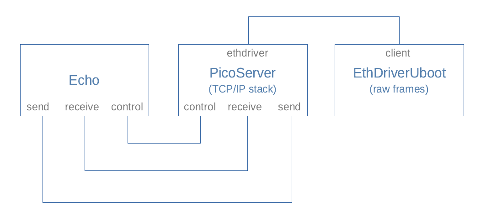

Introduction
The seL4® Microkernel is a technology of increasing interest. It delivers specific capabilities and assurances, which make it particularly suitable for applications that demand a trusted execution environment and strong separation of concerns.
The seL4 Microkernel is engineered to deliver both high-assurance and high-performance (The seL4 Microkernel: An Introduction). High-assurance is achieved through comprehensive formal verification. High-performance is achieved through deliberate design and profiling, potentially accepting greater complexity in the formal verification where this achieves higher performance.
The development of the seL4 Microkernel is overseen by the seL4 Foundation, operating as a project under The Linux Foundation. The entirety of the seL4 Microkernel, and its associated components, are made available as Open Source, on Git Hub (seL4 Microkernel and associated components).
In common with all Microkernels, the seL4 Microkernel provides a minimum set of essential features as needed to frame a viable OS (Operating System). There is an expectation that further components will be introduced atop this OS, in developing useful applications (such as drivers, libraries, and services).
As a consequence, developing on top of the seL4 microkernel is currently complex and time-consuming, and the expertise is limited to a small number of individuals and organisations. Thus, this seL4 Developer Kit is created to reduce the barrier to entry for developing on top of seL4 Microkernel. The overall intention is to encourage and support more organisations in adopting seL4 in their projects and products.
Audience
The intended audience is an application developer:
- Experienced in programming within a Linux, macOS, or Windows environment.
- Already familiar with seL4 concepts and benefits.
- Looking for practical guidance in getting started with seL4.
Complementary Approach
This seL4 Developer Kit does not intend to cover or replace any of the extensive material as maintained by the seL4 Foundation and associated organisations.
Instead, the purpose is to complement this existing material with practical guidance about getting started with seL4. Throughout the seL4 Developer Kit, reference is made to externally maintained material where appropriate.
Focus on seL4 Details
Whilst the seL4 Developer Kit aims to cover all the important configuration steps, it does assume a reasonable level of developer knowledge. In general, priority and prominence is given to seL4 specific details, while more routine aspects are explained at a higher level or through external reference (such as installing software or interacting with configuration management).
Overview
The seL4 Developer Kit supports developers in gaining familiarity with seL4 Microkernel, and ultimately to encourage more use of seL4 within projects and products. It does this by:
-
Selecting a readily available low-cost SBC (Single Board Computer) as the target platform (The Avnet MaaXBoard).
-
Identifying the minimum needed to create a viable development platform, and detailing specific hardware and software requirements to achieve this.
-
Supplying preconfigured build environments, plus associated examples, with all the content required to generate seL4 executable programs.
-
Demonstrating how an seL4 executable program can be loaded and executed on the chosen target platform.
-
Documenting the specific steps needed, along with more general guidance.
Once the fundamentals of building and executing an seL4 program are established, the seL4 Developer Kit seeks to explain and encourage further development through the presentation of a diverse series of technical Activities.
Structure
The seL4 Developer Kit is structured into the following sections to provide a step-by-step guide:
-
Introduction: Introduce the potential benefits that the seL4 Microkernel offers, acknowledge its steep learning curve, and position the seL4 Developer Kit as a means to help facilitate and encourage wider adoption.
-
Resources: Provides an overview of the fundamental aspects of both the seL4 Microkernel and our chosen SBC (Single Board Computer), the the Avent MaaXBoard, highlighting relevant supporting material from other sources. Also presents a consolidated glossary of key terms for easy reference.
-
Development Platform: Identify and explain the minimum hardware and software requirements needed to assemble a viable development platform for using the seL4 Developer Kit. It is expected that, to meet these requirements, some equipment will need to be purchased (for example, an Avent MaaXBoard).
-
Install and Configure: Provides guidance, and explores options, in installing and configuring the development platform. Once complete, the development platform will be ready for building sel4 programs, loading such programs onto the target, and executing these programs on the target, with terminal (text) input and output available.
-
First Boot: Utilising a previously prepared development platform, walk through the steps in powering up the target (Avnet MaaXBoard), interacting with the bootloader, and building and executing a small number of example programs. On completion of this step, the development platform is prepared and proven to operate.
-
Activities: With the development platform established, a series of distinct technical activities are undertaken. Each Activity describes both its approach, and the eventual outcome, seeking to illustrate how sel4 development may be practically progressed.
Resources
This section presents a high level overview of the main resources associated with the seL4 Developer Kit. The majority of this section is framed in terms of references to external content. The intention is that developers will refer to, and return to, this section to find further avenues of information to help with their efforts.
The section is structured as follows:
- seL4 Microkernel: Provide an overview of the seL4 Microkernel, focusing on its capabilities and infrastructure as relates to the seL4 Developer Kit.
- Avent MaaXBoard: Describe the rationale behind the selection of our chosen SBC, the Avent MaaXBoard. Further, summarise and reference entry points into its available resources.
- Glossary: A consolidated glossary of key terms for subsequent reference.
seL4 Microkernel
The seL4 Microkernel, and its closely associated components, is managed by the seL4 Foundation, operating as a project under the Linux Foundation. The entirety of the seL4 Foundation contribution is made publicly available. More so, there are several related efforts that provide further relevant contributions.
Community
The main entry points to the seL4 community are as follows:
-
seL4 Microkernel: The primary landing page for seL4, as maintained by the seL4 Foundation. This provides the latest information and news related to seL4.
-
seL4 Microkernel Community Documentation: Large corpus of community maintained documentation associated with the seL4 Microkernel itself, many of its associated components, and projects incorporating seL4 aspects.
-
seL4 Foundation Git Hub: The primary location for all seL4 content as maintained by the seL4 Foundation.
-
Trustworthy Systems: A research group, based at the School of CSE (Computer Science and Engineering) of UNSW (University of New South Wales) Sydney. The original developers of seL4, still very active in the community, with various ongoing seL4 related research and projects.
-
seL4 Microkit Tutorial: A tutorial, prepared by Trustworthy Systems, for getting started with the seL4 Microkit, principally focusing on an emulated target (via the QEMU simulator).
-
Trustworthy Systems Git Hub: The primary location for all seL4 content as maintained by Trustworthy Systems.
Components
Several significant seL4 components are highlighted below. Many of these components are directly utilised within this seL4 Developer Kit:
-
seL4 Microkernel: The seL4 Microkernel.
-
CAmkES: The entry point to CAmkES (component architecture for microkernel-based embedded systems).
-
Microkit: Retains Microkit, a simple and small framework for building and running applications atop the seL4 Microkernel.
-
sDDF: The sDDF (seL4 Device Driver Framework). Provides a suite of generic capabilities (interfaces and protocols) and also specific deployments (drivers and examples). The contribution is geared for easing the deployment of device drivers atop the seL4 Microkernel.
-
libvmm: A VMM (Virtual Machine Monitor) library, permitting the execution of virtualised guest hosts, atop the seL4 Microkernel.
-
Lions OS: Trustworthy Systems are developing the Lions OS (Operating System), building atop both the principles and technology associated with the seL4 Microkernel.
Context
The seL4 Microkernel may be reasonably characterised as a technology of increasing relevance and interest.
Historically, it is relatively ordinary for an academic system to deliver novel advancements in high-assurance, while sacrificing the algorithmic complexity associated with achieving high-performance. Or, conversely, for a platform to offer high-performance, while sacrificing the controls and constraints associated with achieving high-assurances. Thus, a key differentiator of the seL4 Microkernel is its simultaneous focus, and evidenced achievement, of both high-assurance and high-performance.
In particular, in the current modern climate, it is straight forward to identify numerous security critical applications which could immediately benefit from building atop an existing high-assurance and high-performance platform.
The formation the seL4 Foundation (07 April 2020) (press release) is a key indicator of the growing importance of the seL4 Microkernel, and the explicit intention to enhance and mature its associated contributions.
The two main frameworks for developing seL4 applications are:
These two frameworks adopt very contrasting approaches. CAmkES provides a rich feature set, but has greater complexity. Microkit provides a very minimum feature set, but has greater simplicity.
Both frameworks remain supported by the seL4 Foundation, and are accommodated in this seL4 developer kit. However, in many respects, Microkit may be regarded as a response to the lessons learned from CAmkES, and is gradually emerging as the logical default choice for any new development. Perhaps, fundamentally, Microkit is closer in spirit to Microkernels, in providing essential behaviours only, and thus provides a more compelling fit as a seL4 Microkernel component. A guide for translating CAmkES applications into Microkit is available externally (CAmkES to Microkit).
Avnet MaaxBoard
The Avnet MaaXBoard SBC (Single Board Computer) has been selected as the target platform for developing and investigating this seL4 Developer Kit.
The following high level features of the Avnet MaaXBoard SBC make it particularly suitable for use with the seL4 Developer Kit:
-
Inexpensive: The Avnet MaaXBoard SBC is relatively inexpensive, minimising the cost of getting started with the seL4 Developer Kit.
-
Available: While not a routine product, it is straight forward to identify suppliers with multiple instances of the Avnet MaaXBoard in stock.
-
Devices: The Avnet MaaXBoard incorporates a wide collection of input and output devices, simplifying its practical usage, and permitting some flexibility in the activities that may be explored with the seL4 Developer Kit.
-
Architecture: The Avnet MaaXBoard supports an ARM architecture (AArch32 and AArch64). In general, the ARM architecture, in contrast to the x86 architecture, is much simpler, which is particularly suitable for security focused applications. More so, because of this intrinsic suitability, the seL4 Microkernel and its associated components, tend to offer greater support and capabilities for the ARM architecture.
-
Open: The detailed technical aspects of the Avnet MaaXBoard, its resident devices, and the ARM architecture, are well documented and freely publicly available.
Specifications
The Avnet MaaXBoard SBC is part of a family of SBCs. For clarity, we are using the "Avnet MaaXBoard" with part number "AES-MC-SBC-IMX8M-G".
The Avnet MaaxBoard uses the i.MX 8M Quad processor developed by NXP. The application processor reference manual is a very useful document for developing atop this processor. The manual is freely available through NXP, once an account is created with them: NXP. Search for "Documentation" for the "i.MX 8M Family" with keyword "IMX8MDQLQRM".
Glossary
| Term | Definition |
|---|---|
| AArch32 | Execution state of ARMv8 architecture using 32-bit wide general-purpose registers. |
| AArch64 | Execution state of ARMv8 architecture using 64-bit wide general-purpose registers. |
| Avnet | The manufacturer of the MaaXBoard SBC. |
| Bootloader | The tool responsible for booting a computer. Responsible for initialisation of software following by loading and execution of software. |
| CAmkES | Component Architecture for microkernel-based Embedded Systems. An abstraction layer on top of seL4 providing a software development and runtime framework for quickly and reliably building microkernel-based multiserver (operating) systems. |
| Device Tree | A standardised data structure with nodes that describe the hardware components of a computer system. Associated with device trees are DTS files (Device Tree Source - a textual representation of a device tree), DTB files (Device Tree Blob - a binary representation of a device tree), and DTC (Device Tree Compiler - a tool used to convert between device tree formats, e.g. DTS to DTB). |
| DMA | Direct Memory Access. A feature that allows certain hardware subsystems to access main system memory independently of the central processing unit (CPU), typically used by devices that need to transfer bulk data (e.g. USB). |
| Docker | A tool that allows packaging of an application and its dependencies within a container, with fewer overheads than a virtual machine. It is used in this developer kit to provide a standardised build environment. |
| GPIO | General-Purpose Input/Output. A digital signal pin on an integrated circuit or electronic circuit board which may be used as an input or output, or both, and is controllable by software. |
| High-side | In a security context, 'more trusted' or 'high-side' refers to a system in which there is more confidence of its integrity. |
| Low-side | In a security context, 'less trusted' or 'low-side' refers to a system in which there is less confidence of its integrity. |
| MaaXBoard | An NXP i.MX 8M SoC based SBC. Selected as the target platform for this developer kit. |
| Microkit | Operating system framework on top of seL4 that provides a small set of simple abstractions that ease the design and implementation of statically structured systems on seL4, while still leveraging the kernel’s benefits of security and performance |
| SBC | Single Board Computer. A complete computer on a single circuit board. The Avnet MaaXBoard is an example of a SBC. |
| seL4Test | Test suite for seL4 developed and maintained by the seL4 Foundation. |
| SoC | System on chip. A chip that integrates all or most components of a computer. The SoC on the MaaXBoard is the NXP i.MX 8M. |
| TFTP | Trivial File Transfer Protocol. A simple file transfer protocol commonly used in the early stages of bootloading from a local area network. |
| U-Boot | Das U-Boot (known as "the Universal Boot Loader" and often shortened to U-Boot) is an open-source bootloader commonly used in embedded devices. |
| UART | Universal Asynchronous Receiver-Transmitter. A simple serial communication device commonly used by SBCs. |
| SBC | Single Board Computer. A complete computer on a single circuit board. The Avnet MaaXBoard is an example of a SBC. |
| seL4Test | Test suite for seL4 developed and maintained by the seL4 Foundation. |
Development Platform
This section details the minimum hardware and software requirements necessary to follow the guide.
Hardware Requirements
This section details the hardware related to the target platform that the guide assumes is available to the developer. Before following the guide the developer will need to have access to all items marked as mandatory.
As detailed in the Bootloader section, there are multiple methods of transferring a compiled seL4 binary from the host machine to the target platform. Where a hardware item is required to support only one potential transfer method it is marked as 'optional'. The developer should decide which transfer method(s) are to be used to determine which items need to be available.
For convenience, the following table includes order codes and hyperlinks for the Farnell UK store correct as of 16th August 2024; clearly, equivalent items are available from many other sources.
| Item | Notes | Order Code |
|---|---|---|
| Avnet MaaXBoard (AES-MC-SBC-IMX8M-G) | Mandatory | 3436577 |
| USB-to-TTL Serial UART Cable | Mandatory | 2147356 |
| 16GB Micro SD Card | Mandatory | 3498607 |
| USB Micro SD Card Reader/Writer | Mandatory | 3493850 |
| 15W USB-C Power Adapter | Mandatory | 3106255 |
| USB Flash Drive | Optional - USB transfer only | General1 |
| Ethernet Cable | Optional - TFTP transfer and some of the test applications | General1 |
| USB Keyboard | Optional - some of the test applications | 18481112 |
| SPI Bus Pressure Sensor | Optional - test application only | See SPI sensor appendix |
Where items are considered to be ubiquitous with no special requirements, no example order code is given.
Although USB keyboards are fairly ubiquitous, experience leads us to recommend a 'basic' model such as this, which works with our keyboard driver; the driver may not work with more feature-rich models (e.g. a keyboard with an integral USB hub; nor does it work with this compact keyboard).
This guide assumes the following basic hardware capabilities of the user's development environment:
-
The ability to connect the MaaXBoard to a wired network to which the host machine is also connected. This is required if the user wishes to perform TFTP transfer of executables from the host environment to the target platform (see the Bootloader section).
-
The ability to connect USB devices (i.e. the USB flash drive and USB SD card reader / writer) to the host machine.
Software Requirements
This developer kit is intended to have minimal software requirements on the host machine by using Docker containment as much as possible. The applications that follow are either needed or assumed on the host machine.
Installation instructions are not reproduced here; please follow the instructions given by the application providers. Configuration of the applications is considered in the Host Setup section.
This guide assumes that the user has sufficiently elevated privileges on the host machine to install and configure the applications; for example on macOS and Linux it is assumed that the user has sudo privileges.
Mandatory Requirements
The following mandatory applications are assumed on the host machine:
-
Container toolset: Used to provide the build environment. This guide assumes use of Docker Desktop for macOS or Windows host environments or Docker Engine for Linux-based host environments.
Docker Engine is licensed under the Apache License Version 2.0, see here for more information. Docker Desktop is free to use for small companies, education and non-commercial open source projects, see here for details and pricing.
-
SD card writer application: Used to write the SD card from which the MaaXBoard boots. Balena Etcher has been selected due to its availability on macOS, Windows and Linux environments. Alternative means of writing SD cards are available but not supported by this document.
Balena Etcher is licensed under the Apache License Version 2.0, see here for more information.
-
Serial terminal application: Used for serial communication with the target platform. CoolTerm has been selected due to its availability on macOS and Windows. For Linux environments Minicom can be used. Alternative applications are available but not supported by this document.
CoolTerm and Minicom is distributed as freeware with no documented limitations on use.
Optional Requirements
If the user wishes to perform TFTP transfer of executables from the host environment to the target platform (see the Bootloader section) then installation of a TFTP server is required.
Full details of the installation and configuration of a TFTP server is considered to be outside the scope of this developer kit, however the following guidance is offered:
-
macOS: A TFTP server is included in macOS by default. The TftpServer application provides a graphical user interface to simplify use of the in-built server.
-
Linux: TFTP servers are available for all major Linux distributions. On Fedora and CentOS a server can be installed via
yum -y install tftp-server; on Debian and Ubuntu a server can be installed viaapt-get install tftpd-hpa. -
Windows: Multiple free TFTP server applications are available, e.g. SolarWinds TFTP Server (distributed as "100% free" with no documented limitations on use) and Tftpd64 (licensed under GNU General Public License, version 2).
Install and Configure
This section details how to configure a build environment with all tools required to generate seL4 executable images.
Development is conducted across three different environments:
-
Host Machine: The developer's host machine. This can be running macOS, Linux, or Windows.
-
Build environment: The environment within which all binaries for the target environment are built. This is a Linux-based development environment running within a Docker container on the host machine. The use of a Docker container to provide all of the tooling required to build seL4 applications for the target platform greatly simplifies the requirements of the host machine.
-
Target Platform: The Avnet MaaXBoard, a single board computer based around the NXP i.MX 8M SoC (system on chip). This is the environment upon which seL4 binaries are executed. User interaction with the target platform is performed via a serial console from the host machine.
The required configuration of the host and target environments are detailed in the Host Setup and Target Setup sections. A preconfigured build environment is supplied as part of this developer kit as detailed in the Build Environment Setup section. Bootloader setup describes how to install and the bootloader U-Boot.
Host Setup
The previous Software Requirements section listed the applications required on the host machine. Installation links provided there should be followed, where applicable. This section covers any necessary configuration.
Docker Desktop / Docker Engine
Docker Desktop is a widely used platform for developing, packaging, and running applications. If you are a new Docker user, you will have to sign up for an account. Depending on your situation, a subscription fee may be applicable (typically if you are acting as a member of a large commercial organisation), but in many cases there is no cost. This development kit documentation does not attempt to guide you about this; please refer to the licensing conditions on Docker's website.
Little configuration of the default setup for Docker is required. Using the Docker Desktop application available for macOS and Windows, the following Settings > Preferences have been found to be sufficient where the RAM setting was increased from a lower default:
When using Linux, the user running the Docker Engine needs to be made a member of the docker group by issuing the following command, substituting your username for <username>:
sudo usermod -aG docker <username>
Etcher
Although Etcher is assumed and used in some of this developer kit documentation, its core functionality is available at the macOS, Linux, or Windows command line, so it is not strictly necessary if you prefer other methods.
No special configuration is necessary for Etcher.
CoolTerm
CoolTerm enables the host machine to communicate with the MaaXBoard over the serial interface using the UART pins on the board's GPIO connector (see Target Platform Setup section for more details of the necessary connections). Alternative applications are available, but this documentation will use CoolTerm, which is freely available and multi-platform.
The configuration parameters are accessible via the Connection > Options menu. The following serial port parameters are required (i.e. 115200 baud, 8 data bits, no parity, 1 stop bit):
Note: within the Port field, an appropriate USB port on the host machine should be selected; it may differ from the example shown above in the screenshot.
The following terminal parameters are suggested:
Users may also wish to extend the size of the Receive Buffer to be able to scroll back through a longer history. This is accessible via the Receive sub-option within the Connection > Options menu.
All these settings may be saved for convenience as a CoolTerm configuration file.
Minicom
Minicom can also be used to communicate with the maaxboard over the serial interface using the UART pins on the board's GPIO connector (see Target Platform Setup section for more details of the necessary connections). Minicom can be used on linux machines or on Windows with the PuTTY application. Instructions for installing and running minicom are here.
Build Environment Setup
The build environment is the environment within which all binaries for the target environment are built; i.e. the environment that provides the required compilation toolchain.
To simplify the requirements on the host environment and to enable rapid setup, the build environment is provided as a pre-built Docker image.
Environment Details
The build environment is a Debian Linux system pre-installed with all of the required development tools. The primary tools supplied are:
- Git version control system.
- Repo Git repository management tool.
- aarch64-linux-gnu cross compiler toolchain targeting the ARM AArch64 instruction set.
- Make, CMake, Ninja and MESON build automation tools.
Installation
Host machine setup must be completed, specifically installation of Docker, and the Docker tools must be active prior to installation of the build environment.
At this stage, the pre-built Docker image may be incorporated into the Docker tools. Different approaches are recommended for Windows and Linux, to provide a more effective integration into those different host Operating Systems.
Docker Usage
Given their considerably different technical dependencies, separate Docker Images are provided for CAmkES and Microkit. Normal usage involves acquiring and running the appropriate Docker Image, optionally mapping in a local development area (HOST_PATH), and (for Linux) a local home area (HOME_PATH).
Note that, apart from any mapped areas, the entirety of the Docker Image will be lost when the Docker Image is exited. This is deliberate and desirable, ensuring a consistent starting environment for each session.
Windows
Given the limited shell provided by Windows, usage of its Docker Images are best coordinated directly.
Windows CAmkES
Pulling Docker Image (user-dev):
docker pull ghcr.io/sel4devkit/sel4devkit-maaxboard-camkes-docker-dev-env/user-dev:latest
Running Docker Image (user-dev):
docker run --rm --interactive --tty --hostname "sel4devkit-maaxboard-camkes" \
ghcr.io/sel4devkit/sel4devkit-maaxboard-camkes-docker-dev-env/user-dev:latest \
--mount type=bind,source="<HOST_PATH>",target="/host"
/bin/bash --login
Windows Microkit
Pulling Docker Image (user-dev):
docker pull ghcr.io/sel4devkit/sel4devkit-maaxboard-microkit-docker-dev-env/user-dev:latest
Running Docker Image (user-dev):
docker run --rm --interactive --tty --hostname "sel4devkit-maaxboard-microkit" \
ghcr.io/sel4devkit/sel4devkit-maaxboard-microkit-docker-dev-env/user-dev:latest \
--mount type=bind,source="<HOST_PATH>",target="/host"
/bin/bash --login
Linux
Usage of the Linux Docker Images are coordinated indirectly via a separate helper repository as follows:
- CAmkES:
git clone "git@github.com:sel4devkit/sel4devkit-maaxboard-camkes-docker-dev-env.git" - Microkit:
git clone "git@github.com:sel4devkit/sel4devkit-maaxboard-camkes-docker-dev-env.git"
Within this repository, show usage instructions:
make
Two different entry points are provided, as "user-dev" and "user-me":
- The "user-dev" operates with a fixed user name "developer", granted password free access to root, via sudo. This configuration is fully defined, and thus may be prepared in advance. This property permits a very simple deployment, and is particularly suited to Windows.
- The "user-me" is intended to be built, and then deployed, for a specific invoking user. It operates with the username of the invoking user, granted password free access to root, via sudo. This configuration can not be prepared in advance, but does provide a smoother integration for the invoking user. It is particularly suited to Linux.
User Me
Pulling pre-built Docker Image (dep):
make pull IMAGE=dep
Building Docker Image (user-me):
make build IMAGE=user-me
Running Docker Image (user-me):
make run IMAGE=user-me HOST_PATH=<HOST_PATH> HOME_PATH=<HOME_PATH>
User Developer
Pulling Docker Image (user-dev):
make pull IMAGE=user-dev
Running Docker Image (user-dev):
make run IMAGE=user-dev HOST_PATH=<HOST_PATH> HOME_PATH=<HOME_PATH>
Target Platform Setup
The Avnet MaaXBoard is packaged in a small box with listed kit contents of:
- 1 x MaaXBoard; and
- 1 x Heat Sink Kit.
Our boards came with the heat sink already attached; however, sales photographs of the board are often shown without the heat sink and it is conceivable that you may have to attach it yourself.
The following shows a plan view of the MaaXBoard with heat sink attached:
For clarity, not all of the components have been labelled, only those to which we are going to refer. Full hardware details are given in the MaaXBoard Hardware User Manual, including the full pin-out for the 40-pin GPIO connector, but we only use the three pins that are labelled in red in the photograph. For reference, pin 1 is also labelled in blue and the numbering is as follows:
Connecting to the MaaXBoard
Communications with the MaaXBoard from the host machine are via the USB-to-TTL serial UART cable. This converts between the voltage levels and protocols of the board's UART and the host machine's USB port. The USB end plugs into the host machine, and the flying leads are connected to the GPIO pins on the MaaXBoard.
The USB-to-TTL serial UART cable that we used has 3 flying lead connectors, but some cables have more connectors. The leads shown below in our photographs adhere to the following colour convention, but this should not necessarily be assumed for your cable and should be confirmed before connecting:
- Black = Ground;
- Yellow = Transmit;
- Orange = Receive.
The final photograph shows the MaaXBoard (anti-clockwise from the top):
- populated with a Micro SD card;
- connected to a power supply (USB-C);
- connected to a USB flash drive (may not be necessary if loading via Ethernet);
- connected to an Ethernet cable (may not be necessary if loading from USB);
- connected to a USB-to-TTL serial UART cable.
Bootloader Setup
When a computer is turned off, its software remains stored in non-volatile memory. When the computer is powered on, a bootstrap loader is required: a small, low-level program to configure the computer's memory and devices sufficient to then be able to load further software, such as a bare-metal application or operating system, into RAM and then call it.
Das U-Boot (known as "the Universal Boot Loader" and often shortened to U-Boot) is an open-source bootloader commonly used in embedded devices. For such low-level operations, it has to be customized for the hardware on which it is running.
There are two options for configuring and installing U-Boot:
Using the prebuilt image
Instructions for using the prebuilt U-Boot image are as follows: Note: the disk images have been created for a 16GB SD card; please use a card that is 16GB or larger.
-
Get the prebuilt disk image from the maaxboard-prebuilt repository, either by cloning the entire repository, or by using the direct link here.
Note: the images are compressed as zip files in order to reduce their size (compressed size ~15MB, uncompressed size ~15GB), and will need to be uncompressed using a suitable utility before use.
-
Once you have downloaded the image you will need to use a utility for flashing images to external drives. The rest of this section assumes that you will use Etcher; see the Host Setup section for more details.
-
Insert the SD card you wish to flash, and open Etcher.
-
Select Flash from file, and navigate to and select the image file you wish to flash. Then click open.
-
Click select target and select the drive you wish to flash, taking care to choose the right drive.
-
Then finally click ‘Flash!’ to flash the image. This may take a significant time (e.g. 25 minutes). Flashing in progress: After Etcher has flashed the disk, it will validate the disk:
-
Once flashing is complete, the SD card is ready for use in the MaaXBoard for booting as far as the U-Boot bootloader.
Building U-Boot manually
The instructions for formatting the SD card, building U-Boot and flashing the image are as follows:
Partitioning the SD Card
The SD card must be partitioned correctly in order to contain U-Boot, seL4 and space for a filesystem. This can be done as follows.
The intention of this section is provide instructions on how to create three partitions on the disk:
-
a 10 megabyte bootloader partition for U-Boot;
-
a 256 megabyte partition to hold the seL4 image; and,
-
the remainder of the disk is provided for the file system.
macOS Instructions
-
Connect your SD card reader to your host machine and insert your SD card.
-
Find the disk identifier (e.g
/dev/disk6) for your SD card, on macOS this can be done by runningdiskutil list. This command should present a list of disks and their partitions,/dev/disk0and/dev/disk1are usually used for the internal SSD/HDD on your Mac, so the SD card will usually be at the bottom, assuming it was the last storage device attached to your machine. -
On macOS, you may need to unmount any volumes associated with the SD card. You can do this either from Disk Utility or by using
diskutil unmount /dev/diskXsYwhereXis the disk identifier andYis the volume identifier. -
From terminal run the following command, replacing X in
/dev/diskXwith your disk identifier as found earlier. Note: the15GBsize mentioned for theFILESYSpartition can be changed toRwhich will use the remainder of the disk. The instructions here use15GBto reflect what was used to create the prebuilt images in the maaxboard-prebuilt repo.15GBis used as "16GB" SD cards/flash drives are not all truly "16GB" due to formatting, so this is done to account for minor differences in size.sudo diskutil partitionDisk /dev/diskX 3 MBR \ FREE Bootloader 10M \ FAT32 BOOT 256M \ FAT32 FILESYS 15GB
Linux Instructions
-
Connect your SD card reader to your host machine and insert your SD card.
-
Find the disk identifier (e.g
/dev/sdb) for your SD card, on Linux this can be done by examining the kernel ring buffer following insertion of the SD card by runningdmesg | tail. For example, the followingdmesgoutput shows the inserted card using identifiersdband having two volumessdb1andsdb2.[0.711] scsi host6: usb-storage 2-1.5:1.0 [0.728] scsi 6:0:0:0: Direct-Access SD/MMC Card Reader 1.00 PQ: 0 ANSI: 0 [0.735] sd 6:0:0:0: Attached scsi generic sg2 type 0 [1.020] sd 6:0:0:0: [sdb] 30883840 512-byte logical blocks: (15.8 GB/14.7 GiB) [1.022] sd 6:0:0:0: [sdb] Write Protect is off [1.022] sd 6:0:0:0: [sdb] Mode Sense: 03 00 00 00 [1.025] sd 6:0:0:0: [sdb] No Caching mode page found [1.025] sd 6:0:0:0: [sdb] Assuming drive cache: write through [1.076] sdb: sdb1 sdb2 [1.084] sd 6:0:0:0: [sdb] Attached SCSI removable disk -
On Linux, you may need to unmount any volumes associated with the SD card. You can do this using the
umountcommand. If two volumes namedsdb1abdsdb2were detected on insertion of the SD card these would be unmounted with the following commands:sudo umount /dev/sdb1 sudo umount /dev/sdb2 -
From terminal run the following commands, replacing
<disk>in/dev/<disk>with your disk identifier as found earlier. Note: the14602MiBsize mentioned for the final partition can be changed to100%which will use the remainder of the disk.14602MiBis used as "16GB" SD cards/flash drives are not all truly "16GB" due to formatting, so this is done to account for minor differences in size.sudo parted /dev/<disk> mklabel msdos sudo parted /dev/<disk> mkpart primary fat32 10MiB 266MiB sudo parted /dev/<disk> mkpart primary fat32 266MiB 14602MiB sudo mkfs.vfat /dev/<disk>1 -F 32 -n BOOT sudo mkfs.vfat /dev/<disk>2 -F 32 -n FILESYS
Building U-Boot
In order to build U-Boot, the seL4devkit Docker build environment is required, please see Build Environment Setup to setup this up if you haven't already done so.
- Clone the repository:
git clone git@github.com:sel4devkit/sel4devkit-maaxboard-bootloader-u-boot.git
- Clone dependencies
cd sel4devkit-maaxboard-bootloader-u-boot
make get
- Build
make all
- The generated file
flash.binis located in the/outfolder and can be written to storage media.
Writing U-Boot to the SD card
-
Navigate to the folder containing your U-Boot
flash.binfile.WARNING: The next step uses the
ddcommand line utility, which is used for writing images to disks. IT WILL OVERWRITE ANY DATA ON THE DISK IT IS SPECIFIED TO WRITE TO! Improper usage WILL cause data loss, corruption and potentially render your system inoperable. Please ensure you are familiar with the use of the command, as well as the disk identifiers on your system, and that you are writing to the disk you intend to, and not your system drive! -
From that folder run the following command, replacing
/dev/diskXwith the disk identifier of your SD card. You may be asked to enter your password.sudo dd if=flash.bin of=/dev/diskX bs=1k seek=33 -
The image should now be written to your SD card and should be bootable by the MaaXBoard.
Setting up the U-Boot config file
A U-Boot configuration file (uEnv.txt) is contained within the provided image. It is placed in the root of the BOOT partition and is named uEnv.txt. It contains 3 main configurable items:
-
U-Boot network configuration (
ipaddrandnetmask): use this to manually configure the IP address and subnet for U-Boot to use, or comment them out to have them assigned by DHCP/BootP. -
TFTP server IP address (
serverip): use this to configure the IP address of the TFTP server to contact, or comment out to disable boot via TFTP. -
ELF binary name (
elf_binary_file): the name of the ELF binary the U-Boot will try to load, first from a USB device, then from a SD card, and finally via the configured TFTP server.
Different commands are needed to load each type of image. Microkit generates .img file which is loaded using the "go" instruction and CAmkES generates a .elf file which is loaded using the "bootelf" command. To see different U-Boot configuration options see: sel4devkit-maaxboard-bootloader-u-boot
First Boot
First boot aims to demonstrate correct operation of the prepared SD card and communication over the serial interface. This ensures all steps have been followed correctly prior to proceeding with compilation and execution of an seL4 binary.
Prerequisites
Prior to powering the MaaXBoard ensure the following setup is in place, building on previous sections:
-
The SD card has been prepared as per the instructions in the Bootloader Setup section.
-
The MaaXBoard has been set up as per the Target Setup section with only the USB-to-TTL cable connected and the SD card inserted.
-
The USB-to-TTL cable is connected to the host machine with CoolTerm/Minicom configured as per the Host Setup section.
Boot to U-Boot Prompt
At this stage power should be supplied to the MaaXBoard by connecting the USB-C power adapter. On supply of power the user should see the output of the bootloader displayed in CoolTerm/Minicom. As no sel4_image binary has been supplied the user should be dropped to the U-Boot command prompt.
The log below shows the serial terminal output on the host machine when the MaaXBoard boots with no access to a binary to execute.
Note that the serial terminal output does not include the line numbers shown in the example logs shown below; those line numbers have only been added afterwards for ease of reference in this documentation.
1 U-Boot SPL 2021.04-00002-gf752480a4c (Jan 20 2022 - 10:32:23 +0000)
2 power_bd71837_init
3 set buck8 to 1.2v for DDR4
4 DDRINFO: start DRAM init
5 DDRINFO: DRAM rate 2400MTS
6 DDRINFO:ddrphy calibration done
7 DDRINFO: ddrmix config done
8 Normal Boot
9 Trying to boot from MMC1
10
11
12 U-Boot 2021.04-00002-gf752480a4c (Jan 20 2022 - 10:32:23 +0000)
13
14 CPU: i.MX8MQ rev2.1 1500 MHz (running at 1000 MHz)
15 CPU: Commercial temperature grade (0C to 95C) at 24C
16 Reset cause: POR
17 Model: Avnet Maaxboard
18 DRAM: 2 GiB
19 MMC: FSL_SDHC: 0
20 Loading Environment from MMC... *** Warning - bad CRC, using default environment
21
22 In: serial
23 Out: serial
24 Err: serial
25
26 BuildInfo:
27 - ATF d801fd9
28
29 switch to partitions #0, OK
30 mmc0 is current device
31 flash target is MMC:0
32 Net:
33 Warning: ethernet@30be0000 (eth0) using random MAC address - 5a:15:1f:fd:43:19
34 eth0: ethernet@30be0000
35 Fastboot: Normal
36 Normal Boot
37 Hit any key to stop autoboot: 2 ... 1 ... 0
38 starting USB...
39 Bus usb@38100000: Register 2000140 NbrPorts 2
40 Starting the controller
41 USB XHCI 1.10
42 Bus usb@38200000: Register 2000140 NbrPorts 2
43 Starting the controller
44 USB XHCI 1.10
45 scanning bus usb@38100000 for devices... 1 USB Device(s) found
46 scanning bus usb@38200000 for devices... 1 USB Device(s) found
47 scanning usb for storage devices... 0 Storage Device(s) found
48
49 Device 0: unknown device
50 MMC Device 1 not found
51 no mmc device at slot 1
52 MMC Device 2 not found
53 no mmc device at slot 2
54 switch to partitions #0, OK
55 mmc0 is current device
56 SD/MMC found on device 0
57 1493 bytes read in 1 ms (1.4 MiB/s)
58 Loaded env from uEnv.txt
59 Importing environment from mmc0 ...
60 Running uenvcmd ...
61
62 Device 0: unknown device
63
64 Device 1: unknown device
65 switch to partitions #0, OK
66 mmc0 is current device
67 Booting ELF binary from mmc 0 ...
68 Failed to load 'sel4_image'
69 ## No elf image at address 0x40480000
70 MMC Device 1 not found
71 no mmc device at slot 1
72 Using statically defined IP address
73 Booting ELF binary from TFTP ...
74 ethernet@30be0000 Waiting for PHY auto negotiation to
complete......................................... TIMEOUT !
75 Could not initialize PHY ethernet@30be0000
76 Using ethernet@30be0000 device
77 TFTP from server 192.168.100.3; our IP address is 192.168.100.50
78 Filename 'sel4_image'.
79 Load address: 0x40480000
80 Loading: *.
81 ARP Retry count exceeded; starting again
82 ## No elf image at address 0x40480000
83 switch to partitions #0, OK
84 mmc0 is current device
85 Failed to load 'boot.scr'
86 Failed to load 'Image'
87 Booting from net ...
88 ethernet@30be0000 Waiting for PHY auto negotiation to
complete......................................... TIMEOUT !
89 Could not initialize PHY ethernet@30be0000
90 BOOTP broadcast 1
91 BOOTP broadcast 2
92 BOOTP broadcast 3
93 BOOTP broadcast 4
94 BOOTP broadcast 5
95 BOOTP broadcast 6
96 BOOTP broadcast 7
97 BOOTP broadcast 8
98 BOOTP broadcast 9
99 BOOTP broadcast 10
100 BOOTP broadcast 11
101 BOOTP broadcast 12
102 BOOTP broadcast 13
103 BOOTP broadcast 14
104 BOOTP broadcast 15
105 BOOTP broadcast 16
106 BOOTP broadcast 17
107
108 Retry time exceeded; starting again
109 ethernet@30be0000 Waiting for PHY auto negotiation to
complete......................................... TIMEOUT !
110 Could not initialize PHY ethernet@30be0000
111 BOOTP broadcast 1
112 BOOTP broadcast 2
113 BOOTP broadcast 3
114 BOOTP broadcast 4
115 BOOTP broadcast 5
116 BOOTP broadcast 6
117 BOOTP broadcast 7
118 BOOTP broadcast 8
119 BOOTP broadcast 9
120 BOOTP broadcast 10
121 BOOTP broadcast 11
122 BOOTP broadcast 12
123 BOOTP broadcast 13
124 BOOTP broadcast 14
125 BOOTP broadcast 15
126 BOOTP broadcast 16
127 BOOTP broadcast 17
128
129 Retry time exceeded; starting again
130 WARN: Cannot load the DT
131 u-boot=>
Note: The CRC warning at line 20 is not an important issue; it is just an artefact from the basic U-Boot image, and the default environment variables are sufficient.
Once at the U-Boot prompt, the user can enter interactive U-Boot commands. For example:
helpto display the available commands;printenvto display the environment variables;setenvto set environment variables;resetto reset the CPU instead of physically cycling the power.
A full reference to U-Boot commands can be found here but we only use a few of them directly in this developer kit.
The following sections build upon this step by demonstrating the building and execution of an seL4 application on the MaaXBoard.
Bootloader
After U-Boot has configured the MaaXBoard's memory and devices, it is able to load an application into RAM and then execute it. It is possible for a user to do this interactively using U-Boot commands via the serial terminal on the host machine. It is also possible and convenient to provide a U-Boot configuration file uEnv.txt that runs automatically; both options are documented below.
Methods of Loading
We cover three primary mechanisms for loading the application into RAM by U-Boot:
- from SD card;
- from USB flash drive;
- via TFTP.
Additional mechanisms are available, such as downloading over the serial cable; however, this would be much slower compared with the options above and is not considered further here. Downloading from on-board flash memory is another possible mechanism, but that is not applicable to the MaaXBoard.
The remainder of this section assumes that you have an application in the form of an executable ELF file called sel4_image. We will create this as our test application later in this documentation, but this section is concerned with the loading mechanisms rather than the executable itself.
Loading from SD Card
The SD card is used to store the bootloader, U-Boot. The SD card may also be used to store the application's ELF file that is to be loaded into RAM by the bootloader. If the SD card is partitioned as described in the Bootloader setup section, the BOOT partition is used for this by placing the sel4_image file in the root of the partition.
An advantage of this approach is that it makes use of a single medium that (a) is already being used to store U-Boot and (b) generally has a much larger capacity than is required by U-Boot alone.
A disadvantage is that while U-Boot is likely to be a relatively unchanging artefact (once it has been configured for a particular board), during development the application is likely to be modified repeatedly, and removing, reprogramming, and replacing the SD card is inconvenient and physically stresses the card and its mountings.
Loading from USB Flash Drive
The MaaXBoard has two USB 3.0 connectors that U-Boot is able to access, so the application file may be stored on a removable USB flash drive (i.e. thumb/pen drive) and loaded into RAM by U-Boot. To load the sel4_image binary from a USB flash drive the file needs to be placed in the root of a FAT formatted drive.
Compared with loading from SD card, this approach has the advantage of leaving the SD card and its U-Boot image undisturbed, although it still involves physical insertion and removal of the flash drive on both the development board and the host machine whenever a new version is to be tested.
Loading via TFTP
The MaaXBoard has an Ethernet port that U-Boot is able to access, and the application file may be downloaded from the host machine over TFTP (Trivial File Transfer Protocol), a convenient and popular method for booting.
Connection options include either a direct wired Ethernet connection between the host machine and the MaaXBoard:

Or a network connection via a hub / router:

Loading via TFTP is considered to be the most convenient method within an application development environment as there is no need to keep plugging and unplugging anything from the board. To load the sel4_image binary via TFTP, the file needs to be made available for download from the TFTP server.
Below are the instructions for setting up TFTP on linux:
Setting up a netboot server using TFTP
- Dnsmasq is the application used to provide a network infrastructure. The program can be installed using your provided package manager (for Debian, this would be
apt).
sudo apt install dnsmasq
-
Create the root folder where the image will be stored. In this example, the path will be
/var/lib/tftpboot. -
Identify the ethernet interface you will be connecting the board to using
ip addrcommand from the terminal.
$ ip addr
1. eno2: <BROADCAST,MULTICAST,UP,LOWER_UP> mtu 1500 qdisc mq state UP gruop default qlen 1000
link/ether [IPv4 ADDRESS] brd ff:ff:ff:ff:ff:ff
altname enp2s0
inet 10.0.0.253/24 scope global eno2
valid_lft forever preferred_lft forever
inet6 [IPv6 ADDRESS] scope link
valid_lft forever preferred_lft forever
From this command, the necessary information is the mac address of the interface (01:23:45:67:89:0a in this case), and the inet address (10.0.0.253).
- Edit the file
/etc/dnsmasq.confwith the output of the ip addr command. The dnsmasq.conf file takes this format:
interface=<interface_name>
dhcp-range=<start_ip>,<end_ip>,<lease_time>
dhcp-host=<mac_address>,<hostname>,infinite
dhcp-boot=<image_name>
enable-tftp
tftp-root=<root_folder>
- interface -> Specifies which network interface dnsmasq will listen on for DHCP and TFTP requests
- dhcp-range -> Defines the range of IP addresses that dnsmasq can allocate to devices on the network via DHCP.
- dhcp-host -> Maps a specific MAC address to a hostname and optionally assigns a permanent IP address (infinite lease time)
- dhcp-boot -> Specifies the boot file that should be served to clients requesting a network boot via TFTP
- enable-tftp -> Enables the TFTP (Trivial File Transfer Protocol) server functionality within dnsmasq.
- tftp-root -> Specifies the directory where the TFTP server will look for files to serve.
For the output listed in step 3, the file will look like this:
interface=eno2
dhcp-range=10.0.0.101,10.0.0.200,12h
dhcp-host=01:23:45:67:89:0a,svr1,infinite
dhcp-boot=sel4_image
enable-tftp
tftp-root=/var/lib/tftpboot
- With the setup complete for dnsmasq, the service can be started and enabled. To ensure the service has properly started, the
statuscommand can be used.
systemctl start dnsmasq
systemctl enable dnsmasq
systemctl status dnsmasq
If, at any point, any of the configuration files need to be changed, the service will need to be restarted with systemctl restart dnsmasq to see these changes reflected.
- If a firewall is enabled, rules will need to be added to allow requests to pass to the dnsmasq server. The following commands will permit requests:
iptables -A INPUT -i eno2 --dport 69 -j ACCEPT
iptables -A INPUT -i eno2 -p tcp --dport 67:68 -j accept
-
The board is now ready to use the tftp server. The bootloader will try to boot using
sel4_imagestored in/var/lib/tftpboot. -
If an error occurs and U-Boot drops to a prompt, the image can still be booted using U-Boot commands. Using
bootp sel4_imagewill load the file to a memory address (usually50000000), where it can then be booted usingbootelf 50000000for .elf files orgo 50000000for .img files. This method can also be used to boot different images. By usingbootp, any file contained within/var/lib/tftpbootcan be loaded and then booted.
u-boot=> bootp sel4_image
BOOTP broadcast 1
DHCP client bound to address 10.0.0.115 (6ms)
Using ethernet@30be0000 device
TFTP from server 10.0.0.253 our IP address is 10.0.0.115
Filename 'sel4_image'.
Load address 0x40480000
Loading: ###############################################################################
###############################################################################
###############################################################################
###############################################################################
###############################################################################
###############################################################################
###############################################################################
###############################################################################
###############################################################################
###############################################################################
###########################################################################
11.9 MiB/s
done
Bytes transferred = 15217072 (e831b0)
u-boot=> bootelf 40480000
U-Boot Configuration File
Booting via U-Boot can be configured via commands stored in a file named uEnv.txt and placed in the BOOT partition of the SD card.
The example file below (stored on the SD card prepared via the instructions in the Bootloader Setup section) automatically searches for, loads and then executes the binary file named sel4_image. The following potential locations for the sel4_image are searched in order:
- USB flash drive with a FAT filesystem.
- SD Card / eMMC device with a FAT filesystem.
- TFTP server.
### Uncomment and define the 'ipaddr' and 'netmask' variables to statically set
### the device IP address. If no static IP address is provided one will attempt to
### assigned using DHCP / BOOTP.
### ipaddr=192.168.100.50
### netmask=255.255.255.0
### Uncomment and define the 'serverip' address to set the IP address of the
### TFTP server. If no server IP address is defined then no attempt to boot
### from TFTP will be made.
serverip=192.168.0.11
### Define the name of the ELF binary to boot.
elf_binary_file=sel4_image
### Attempt to boot the ELF binary. The following locations will be searched in
### priority order:
### 1. USB mass storage devices with a FAT filesystem.
### 2. SD Card / eMMC devices with a FAT filesystem.
### 3. TFTP server.
elf_dev_boot=if ${devtype} dev ${devnum}; then echo Booting ELF binary from ${devtype} ${devnum} ...; fatload ${devtype} ${devnum} ${loadaddr} ${elf_binary_file}; bootelf ${loadaddr}; fi
elf_tftp_boot_0=if test -n ${serverip}; then run elf_tftp_boot_1; else echo Skipping booting ELF binary from TFTP, serverip not defined; fi
elf_tftp_boot_1=if test -n ${ipaddr}; then echo Using statically defined IP address; else echo Setting IP address from DHCP / BOOTP; setenv autoload no; dhcp; fi; run elf_tftp_boot_2
elf_tftp_boot_2=echo Booting ELF binary from TFTP ...; tftp ${loadaddr} ${elf_binary_file}; bootelf ${loadaddr}
uenvcmd=usb start; for devtype in usb mmc; do for devnum in 0 1; do run elf_dev_boot; done; done; run elf_tftp_boot_0
Some configuration of the uEnv.txt file is required, e.g. to set IP addresses relevant to the user's network. This is covered in more detail in the Bootloader Setup and First Boot sections.
sel4test
As a worked example throughout this section the seL4Test project will be used. seL4Test is a test suite for seL4 developed and maintained by the seL4 Foundation.
This section of the document assumes the build environment setup has been completed and the user is using the CAmkES docker environment. All commands provided within this section are to be executed within the build environment; i.e. please ensure that you have followed the instructions in the build environment setup's usage section and that you execute the following commands from inside the Docker container.
Context
The seL4Test example that is built in this section is a result of an seL4 port for the Avnet MaaXBoard that we created for this developer kit. Whilst our seL4 port is not documented here in detail, there is some guidance on this in the Guide to Porting seL4 appendix, which includes links to the Git commits that added the MaaXBoard port to the main seL4 repositories.
Getting the Code
Clone the repository:
git clone git@github.com:sel4devkit/sel4devkit-maaxboard-first-boot-sel4test.git
Building
The sel4test example uses the make build system therefore make needs to be run in the repository:
cd sel4devkit-maaxboard-first-boot-sel4test
make get
make all
On completion of the compilation, the resulting executable is available at /host/sel4devkit-maaxboard-first-boot-sel4test/out/program.elf on the build environment, or available at /<host_directory>/sel4devkit-maaxboard-first-boot-sel4test/out/program.elf on the host machine, where /<host_directory> was the directory on the host mapped to the build environment.
Example Output
The example output when executed on the target (as described in bootloader) is demonstrated below:
u-boot=> bootelf 0x50000000
## Starting application at 0x40a39000 ...
ELF-loader started on CPU: ARM Ltd. Cortex-A53 r0p4
paddr=[40a39000..40f21137]
No DTB passed in from boot loader.
Looking for DTB in CPIO archive...found at 40b7b8e8.
Loaded DTB from 40b7b8e8.
paddr=[4023f000..40249fff]
ELF-loading image 'kernel' to 40000000
paddr=[40000000..4023efff]
vaddr=[ffffff8040000000..ffffff804023efff]
virt_entry=ffffff8040000000
ELF-loading image 'sel4test-driver' to 4024a000
paddr=[4024a000..4063ffff]
vaddr=[400000..7f5fff]
virt_entry=40ef18
Enabling MMU and paging
Jumping to kernel-image entry point...
Warning: gpt_cntfrq 8333333, expected 8000000
Bootstrapping kernel
available phys memory regions: 1
[40000000..c0000000]
reserved virt address space regions: 3
[ffffff8040000000..ffffff804023f000]
[ffffff804023f000..ffffff80402492c7]
[ffffff804024a000..ffffff8040640000]
Booting all finished, dropped to user space
Node 0 of 1
IOPT levels: 0
IPC buffer: 0x7f6000
Empty slots: [1100 --> 8192)
sharedFrames: [0 --> 0)
userImageFrames: [32 --> 1046)
userImagePaging: [16 --> 21)
untypeds: [1046 --> 1100)
Initial thread domain: 0
Initial thread cnode size: 13
List of untypeds
------------------
Paddr | Size | Device
0 | 29 | 1
0x20000000 | 28 | 1
0x30000000 | 27 | 1
0x38000000 | 23 | 1
0x38810000 | 16 | 1
0x38820000 | 17 | 1
0x38840000 | 18 | 1
0x38940000 | 18 | 1
0x38980000 | 19 | 1
0x38a00000 | 21 | 1
0x38c00000 | 22 | 1
0x39000000 | 24 | 1
0x3a000000 | 25 | 1
0x3c000000 | 26 | 1
0xc0000000 | 30 | 1
0x100000000 | 32 | 1
0x200000000 | 33 | 1
0x400000000 | 34 | 1
0x800000000 | 35 | 1
0x1000000000 | 36 | 1
0x2000000000 | 37 | 1
0x4000000000 | 38 | 1
0x8000000000 | 39 | 1
0x40000000 | 16 | 0
0x402492d0 | 4 | 0
0x402492e0 | 5 | 0
0x40249300 | 8 | 0
0x40249400 | 10 | 0
0x40249800 | 11 | 0
0x40640000 | 18 | 0
0x40680000 | 19 | 0
0x40700000 | 20 | 0
0x40800000 | 23 | 0
0x41000000 | 24 | 0
0x42000000 | 25 | 0
0x44000000 | 26 | 0
0x48000000 | 27 | 0
0x50000000 | 28 | 0
0x60000000 | 29 | 0
0x80000000 | 29 | 0
0xa0000000 | 28 | 0
0xb0000000 | 27 | 0
0xb8000000 | 26 | 0
0xbc000000 | 25 | 0
0xbe000000 | 24 | 0
0xbf000000 | 23 | 0
0xbf800000 | 22 | 0
0xbfc00000 | 21 | 0
0xbfe00000 | 20 | 0
0xbff00000 | 19 | 0
0xbffd9800 | 11 | 0
0xbffda000 | 13 | 0
0xbffdc000 | 14 | 0
0xbffe0000 | 17 | 0
Untyped summary
1 untypeds of size 4
1 untypeds of size 5
1 untypeds of size 8
1 untypeds of size 10
2 untypeds of size 11
1 untypeds of size 13
1 untypeds of size 14
2 untypeds of size 16
2 untypeds of size 17
3 untypeds of size 18
3 untypeds of size 19
2 untypeds of size 20
2 untypeds of size 21
2 untypeds of size 22
3 untypeds of size 23
3 untypeds of size 24
3 untypeds of size 25
3 untypeds of size 26
3 untypeds of size 27
3 untypeds of size 28
3 untypeds of size 29
1 untypeds of size 30
1 untypeds of size 32
1 untypeds of size 33
1 untypeds of size 34
1 untypeds of size 35
1 untypeds of size 36
1 untypeds of size 37
1 untypeds of size 38
1 untypeds of size 39
Switching to a safer, bigger stack...
seL4 Test
=========
vka_alloc_object_at_maybe_dev@object.h:57 Failed to allocate object of size 2147483648, error 1
vka_alloc_object_at_maybe_dev@object.h:57 Failed to allocate object of size 1073741824, error 1
vka_alloc_object_at_maybe_dev@object.h:57 Failed to allocate object of size 536870912, error 1
vka_alloc_object_at_maybe_dev@object.h:57 Failed to allocate object of size 268435456, error 1
vka_alloc_object_at_maybe_dev@object.h:57 Failed to allocate object of size 134217728, error 1
vka_alloc_object_at_maybe_dev@object.h:57 Failed to allocate object of size 67108864, error 1
vka_alloc_object_at_maybe_dev@object.h:57 Failed to allocate object of size 33554432, error 1
vka_alloc_object_at_maybe_dev@object.h:57 Failed to allocate object of size 16777216, error 1
vka_alloc_object_at_maybe_dev@object.h:57 Failed to allocate object of size 8388608, error 1
vka_alloc_object_at_maybe_dev@object.h:57 Failed to allocate object of size 4194304, error 1
vka_alloc_object_at_maybe_dev@object.h:57 Failed to allocate object of size 2097152, error 1
vka_alloc_object_at_maybe_dev@object.h:57 Failed to allocate object of size 1048576, error 1
vka_alloc_object_at_maybe_dev@object.h:57 Failed to allocate object of size 524288, error 1
vka_alloc_object_at_maybe_dev@object.h:57 Failed to allocate object of size 262144, error 1
vka_alloc_object_at_maybe_dev@object.h:57 Failed to allocate object of size 131072, error 1
vka_alloc_object_at_maybe_dev@object.h:57 Failed to allocate object of size 65536, error 1
vka_alloc_object_at_maybe_dev@object.h:57 Failed to allocate object of size 32768, error 1
vka_alloc_object_at_maybe_dev@object.h:57 Failed to allocate object of size 16384, error 1
vka_alloc_object_at_maybe_dev@object.h:57 Failed to allocate object of size 8192, error 1
vspace_reserve_range_at@vspace.h:738 vspace is NULL
create_reservations@elf.c:245 Failed to make reservation: 0x400000, 876544
elf_reserve_regions_in_vspace@elf.c:438 Failed to create reservations
sel4utils_elf_reserve@elf.c:465 Failed to reserve regions
Starting test suite sel4test
Starting test 0: Test that there are tests
Starting test 1: SYSCALL0000
Starting test 2: SYSCALL0001
<<seL4(CPU 0) [decodeCNodeInvocation/54 T0xffffff80bffd9400 "sel4test-driver" @404b90]: CNodeCap: Illegal Operation attempted.>>
<<seL4(CPU 0) [decodeCNodeInvocation/54 T0xffffff80bffd9400 "sel4test-driver" @404b90]: CNodeCap: Illegal Operation attempted.>>
<<seL4(CPU 0) [decodeCNodeInvocation/54 T0xffffff80bffd9400 "sel4test-driver" @404b90]: CNodeCap: Illegal Operation attempted.>>
<<seL4(CPU 0) [decodeCNodeInvocation/54 T0xffffff80bffd9400 "sel4test-driver" @404b90]: CNodeCap: Illegal Operation attempted.>>
<<seL4(CPU 0) [decodeCNodeInvocation/54 T0xffffff80bffd9400 "sel4test-driver" @404b90]: CNodeCap: Illegal Operation attempted.>>
<<seL4(CPU 0) [decodeCNodeInvocation/54 T0xffffff80bffd9400 "sel4test-driver" @404b90]: CNodeCap: Illegal Operation attempted.>>
<<seL4(CPU 0) [decodeCNodeInvocation/54 T0xffffff80bffd9400 "sel4test-driver" @404b90]: CNodeCap: Illegal Operation attempted.>>
<<seL4(CPU 0) [decodeCNodeInvocation/54 T0xffffff80bffd9400 "sel4test-driver" @404b90]: CNodeCap: Illegal Operation attempted.>>
<<seL4(CPU 0) [decodeCNodeInvocation/54 T0xffffff80bffd9400 "sel4test-driver" @404b90]: CNodeCap: Illegal Operation attempted.>>
<<seL4(CPU 0) [decodeCNodeInvocation/54 T0xffffff80bffd9400 "sel4test-driver" @404b90]: CNodeCap: Illegal Operation attempted.>>
Starting test 3: SYSCALL0002
<<seL4(CPU 0) [decodeCNodeInvocation/54 T0xffffff80bffd9400 "sel4test-driver" @404b90]: CNodeCap: Illegal Operation attempted.>>
<<seL4(CPU 0) [decodeCNodeInvocation/54 T0xffffff80bffd9400 "sel4test-driver" @404b90]: CNodeCap: Illegal Operation attempted.>>
<<seL4(CPU 0) [decodeCNodeInvocation/54 T0xffffff80bffd9400 "sel4test-driver" @404b90]: CNodeCap: Illegal Operation attempted.>>
<<seL4(CPU 0) [decodeCNodeInvocation/54 T0xffffff80bffd9400 "sel4test-driver" @404b90]: CNodeCap: Illegal Operation attempted.>>
<<seL4(CPU 0) [decodeCNodeInvocation/54 T0xffffff80bffd9400 "sel4test-driver" @404b90]: CNodeCap: Illegal Operation attempted.>>
<<seL4(CPU 0) [decodeCNodeInvocation/54 T0xffffff80bffd9400 "sel4test-driver" @404b90]: CNodeCap: Illegal Operation attempted.>>
<<seL4(CPU 0) [decodeCNodeInvocation/54 T0xffffff80bffd9400 "sel4test-driver" @404b90]: CNodeCap: Illegal Operation attempted.>>
<<seL4(CPU 0) [decodeCNodeInvocation/54 T0xffffff80bffd9400 "sel4test-driver" @404b90]: CNodeCap: Illegal Operation attempted.>>
<<seL4(CPU 0) [decodeCNodeInvocation/54 T0xffffff80bffd9400 "sel4test-driver" @404b90]: CNodeCap: Illegal Operation attempted.>>
<<seL4(CPU 0) [decodeCNodeInvocation/54 T0xffffff80bffd9400 "sel4test-driver" @404b90]: CNodeCap: Illegal Operation attempted.>>
Starting test 4: SYSCALL0003
Starting test 5: SYSCALL0004
<<seL4(CPU 0) [decodeCNodeInvocation/54 T0xffffff80bffd9400 "sel4test-driver" @404c00]: CNodeCap: Illegal Operation attempted.>>
<<seL4(CPU 0) [decodeCNodeInvocation/54 T0xffffff80bffd9400 "sel4test-driver" @404c00]: CNodeCap: Illegal Operation attempted.>>
<<seL4(CPU 0) [decodeCNodeInvocation/54 T0xffffff80bffd9400 "sel4test-driver" @404c00]: CNodeCap: Illegal Operation attempted.>>
<<seL4(CPU 0) [decodeCNodeInvocation/54 T0xffffff80bffd9400 "sel4test-driver" @404c00]: CNodeCap: Illegal Operation attempted.>>
<<seL4(CPU 0) [decodeCNodeInvocation/54 T0xffffff80bffd9400 "sel4test-driver" @404c00]: CNodeCap: Illegal Operation attempted.>>
<<seL4(CPU 0) [decodeCNodeInvocation/54 T0xffffff80bffd9400 "sel4test-driver" @404c00]: CNodeCap: Illegal Operation attempted.>>
<<seL4(CPU 0) [decodeCNodeInvocation/54 T0xffffff80bffd9400 "sel4test-driver" @404c00]: CNodeCap: Illegal Operation attempted.>>
<<seL4(CPU 0) [decodeCNodeInvocation/54 T0xffffff80bffd9400 "sel4test-driver" @404c00]: CNodeCap: Illegal Operation attempted.>>
<<seL4(CPU 0) [decodeCNodeInvocation/54 T0xffffff80bffd9400 "sel4test-driver" @404c00]: CNodeCap: Illegal Operation attempted.>>
<<seL4(CPU 0) [decodeCNodeInvocation/54 T0xffffff80bffd9400 "sel4test-driver" @404c00]: CNodeCap: Illegal Operation attempted.>>
Starting test 6: SYSCALL0005
<<seL4(CPU 0) [decodeCNodeInvocation/54 T0xffffff80bffd9400 "sel4test-driver" @404ce0]: CNodeCap: Illegal Operation attempted.>>
<<seL4(CPU 0) [decodeCNodeInvocation/54 T0xffffff80bffd9400 "sel4test-driver" @404ce0]: CNodeCap: Illegal Operation attempted.>>
<<seL4(CPU 0) [decodeCNodeInvocation/54 T0xffffff80bffd9400 "sel4test-driver" @404ce0]: CNodeCap: Illegal Operation attempted.>>
<<seL4(CPU 0) [decodeCNodeInvocation/54 T0xffffff80bffd9400 "sel4test-driver" @404ce0]: CNodeCap: Illegal Operation attempted.>>
<<seL4(CPU 0) [decodeCNodeInvocation/54 T0xffffff80bffd9400 "sel4test-driver" @404ce0]: CNodeCap: Illegal Operation attempted.>>
<<seL4(CPU 0) [decodeCNodeInvocation/54 T0xffffff80bffd9400 "sel4test-driver" @404ce0]: CNodeCap: Illegal Operation attempted.>>
<<seL4(CPU 0) [decodeCNodeInvocation/54 T0xffffff80bffd9400 "sel4test-driver" @404ce0]: CNodeCap: Illegal Operation attempted.>>
<<seL4(CPU 0) [decodeCNodeInvocation/54 T0xffffff80bffd9400 "sel4test-driver" @404ce0]: CNodeCap: Illegal Operation attempted.>>
<<seL4(CPU 0) [decodeCNodeInvocation/54 T0xffffff80bffd9400 "sel4test-driver" @404ce0]: CNodeCap: Illegal Operation attempted.>>
<<seL4(CPU 0) [decodeCNodeInvocation/54 T0xffffff80bffd9400 "sel4test-driver" @404ce0]: CNodeCap: Illegal Operation attempted.>>
Starting test 7: SYSCALL0006
Starting test 8: SYSCALL0010
Starting test 9: SYSCALL0011
Starting test 10: SYSCALL0012
Starting test 11: SYSCALL0013
Starting test 12: SYSCALL0014
<<seL4(CPU 0) [decodeCNodeInvocation/54 T0xffffff80bffd9400 "sel4test-driver" @404b90]: CNodeCap: Illegal Operation attempted.>>
<<seL4(CPU 0) [decodeCNodeInvocation/54 T0xffffff80bffd9400 "sel4test-driver" @404b90]: CNodeCap: Illegal Operation attempted.>>
<<seL4(CPU 0) [decodeCNodeInvocation/54 T0xffffff80bffd9400 "sel4test-driver" @404b90]: CNodeCap: Illegal Operation attempted.>>
<<seL4(CPU 0) [decodeCNodeInvocation/54 T0xffffff80bffd9400 "sel4test-driver" @404b90]: CNodeCap: Illegal Operation attempted.>>
<<seL4(CPU 0) [decodeCNodeInvocation/54 T0xffffff80bffd9400 "sel4test-driver" @404b90]: CNodeCap: Illegal Operation attempted.>>
<<seL4(CPU 0) [decodeCNodeInvocation/54 T0xffffff80bffd9400 "sel4test-driver" @404b90]: CNodeCap: Illegal Operation attempted.>>
<<seL4(CPU 0) [decodeCNodeInvocation/54 T0xffffff80bffd9400 "sel4test-driver" @404b90]: CNodeCap: Illegal Operation attempted.>>
<<seL4(CPU 0) [decodeCNodeInvocation/54 T0xffffff80bffd9400 "sel4test-driver" @404b90]: CNodeCap: Illegal Operation attempted.>>
<<seL4(CPU 0) [decodeCNodeInvocation/54 T0xffffff80bffd9400 "sel4test-driver" @404b90]: CNodeCap: Illegal Operation attempted.>>
<<seL4(CPU 0) [decodeCNodeInvocation/54 T0xffffff80bffd9400 "sel4test-driver" @404b90]: CNodeCap: Illegal Operation attempted.>>
Starting test 13: SYSCALL0015
<<seL4(CPU 0) [decodeCNodeInvocation/54 T0xffffff80bffd9400 "sel4test-driver" @404b90]: CNodeCap: Illegal Operation attempted.>>
<<seL4(CPU 0) [decodeCNodeInvocation/54 T0xffffff80bffd9400 "sel4test-driver" @404b90]: CNodeCap: Illegal Operation attempted.>>
<<seL4(CPU 0) [decodeCNodeInvocation/54 T0xffffff80bffd9400 "sel4test-driver" @404b90]: CNodeCap: Illegal Operation attempted.>>
<<seL4(CPU 0) [decodeCNodeInvocation/54 T0xffffff80bffd9400 "sel4test-driver" @404b90]: CNodeCap: Illegal Operation attempted.>>
<<seL4(CPU 0) [decodeCNodeInvocation/54 T0xffffff80bffd9400 "sel4test-driver" @404b90]: CNodeCap: Illegal Operation attempted.>>
<<seL4(CPU 0) [decodeCNodeInvocation/54 T0xffffff80bffd9400 "sel4test-driver" @404b90]: CNodeCap: Illegal Operation attempted.>>
<<seL4(CPU 0) [decodeCNodeInvocation/54 T0xffffff80bffd9400 "sel4test-driver" @404b90]: CNodeCap: Illegal Operation attempted.>>
<<seL4(CPU 0) [decodeCNodeInvocation/54 T0xffffff80bffd9400 "sel4test-driver" @404b90]: CNodeCap: Illegal Operation attempted.>>
<<seL4(CPU 0) [decodeCNodeInvocation/54 T0xffffff80bffd9400 "sel4test-driver" @404b90]: CNodeCap: Illegal Operation attempted.>>
<<seL4(CPU 0) [decodeCNodeInvocation/54 T0xffffff80bffd9400 "sel4test-driver" @404b90]: CNodeCap: Illegal Operation attempted.>>
Starting test 14: SYSCALL0016
Starting test 15: SYSCALL0017
<<seL4(CPU 0) [decodeCNodeInvocation/54 T0xffffff80bffd9400 "sel4test-driver" @404ce0]: CNodeCap: Illegal Operation attempted.>>
<<seL4(CPU 0) [decodeCNodeInvocation/54 T0xffffff80bffd9400 "sel4test-driver" @404ce0]: CNodeCap: Illegal Operation attempted.>>
<<seL4(CPU 0) [decodeCNodeInvocation/54 T0xffffff80bffd9400 "sel4test-driver" @404ce0]: CNodeCap: Illegal Operation attempted.>>
<<seL4(CPU 0) [decodeCNodeInvocation/54 T0xffffff80bffd9400 "sel4test-driver" @404ce0]: CNodeCap: Illegal Operation attempted.>>
<<seL4(CPU 0) [decodeCNodeInvocation/54 T0xffffff80bffd9400 "sel4test-driver" @404ce0]: CNodeCap: Illegal Operation attempted.>>
<<seL4(CPU 0) [decodeCNodeInvocation/54 T0xffffff80bffd9400 "sel4test-driver" @404ce0]: CNodeCap: Illegal Operation attempted.>>
<<seL4(CPU 0) [decodeCNodeInvocation/54 T0xffffff80bffd9400 "sel4test-driver" @404ce0]: CNodeCap: Illegal Operation attempted.>>
<<seL4(CPU 0) [decodeCNodeInvocation/54 T0xffffff80bffd9400 "sel4test-driver" @404ce0]: CNodeCap: Illegal Operation attempted.>>
<<seL4(CPU 0) [decodeCNodeInvocation/54 T0xffffff80bffd9400 "sel4test-driver" @404ce0]: CNodeCap: Illegal Operation attempted.>>
<<seL4(CPU 0) [decodeCNodeInvocation/54 T0xffffff80bffd9400 "sel4test-driver" @404ce0]: CNodeCap: Illegal Operation attempted.>>
Starting test 16: TIMER0001
Starting test 17: TIMER0002
Starting test 18: BIND0001
Running test BIND0001 (Test that a bound tcb waiting on a sync endpoint receives normal sync ipc and notification notifications.)
Test BIND0001 passed
Starting test 19: BIND0002
Running test BIND0002 (Test that a bound tcb waiting on its bound notification recieves notifications)
Test BIND0002 passed
Starting test 20: BIND0003
Running test BIND0003 (Test IPC ordering 1) bound tcb waits on bound notification 2, true) another tcb sends a message)
Test BIND0003 passed
Starting test 21: BIND0004
Running test BIND0004 (Test IPC ordering 2) bound tcb waits on bound notification 1, true) another tcb sends a message)
Test BIND0004 passed
Starting test 22: CACHEFLUSH0001
Running test CACHEFLUSH0001 (Test a cache maintenance on pages)
Test CACHEFLUSH0001 passed
Starting test 23: CACHEFLUSH0002
Running test CACHEFLUSH0002 (Test a cache maintenance on page directories)
Test CACHEFLUSH0002 passed
Starting test 24: CACHEFLUSH0003
Running test CACHEFLUSH0003 (Test that cache maintenance can be done on large pages)
Test CACHEFLUSH0003 passed
Starting test 25: CACHEFLUSH0004
Running test CACHEFLUSH0004 (Test that mapping a frame uncached doesn't see stale data after retype)
Test CACHEFLUSH0004 passed
Starting test 26: CANCEL_BADGED_SENDS_0001
Running test CANCEL_BADGED_SENDS_0001 (Basic endpoint cancelBadgedSends testing.)
<<seL4(CPU 0) [decodeInvocation/646 T0xffffff804065bc00 "child of: '35'" @411d78]: Attempted to invoke a null cap #213.>>
<<seL4(CPU 0) [decodeInvocation/646 T0xffffff8040670400 "child of: '35'" @411d78]: Attempted to invoke a null cap #284.>>
<<seL4(CPU 0) [decodeInvocation/646 T0xffffff8040670c00 "child of: '35'" @411d78]: Attempted to invoke a null cap #337.>>
<<seL4(CPU 0) [decodeInvocation/646 T0xffffff8040696400 "child of: '35'" @411d78]: Attempted to invoke a null cap #409.>>
<<seL4(CPU 0) [decodeInvocation/646 T0xffffff8040696c00 "child of: '35'" @411d78]: Attempted to invoke a null cap #468.>>
<<seL4(CPU 0) [decodeInvocation/646 T0xffffff80406be400 "child of: '35'" @411d78]: Attempted to invoke a null cap #534.>>
<<seL4(CPU 0) [decodeInvocation/646 T0xffffff80406bec00 "child of: '35'" @411d78]: Attempted to invoke a null cap #589.>>
<<seL4(CPU 0) [decodeInvocation/646 T0xffffff80406e4400 "child of: '35'" @411d78]: Attempted to invoke a null cap #661.>>
<<seL4(CPU 0) [decodeInvocation/646 T0xffffff80406e4c00 "child of: '35'" @411d78]: Attempted to invoke a null cap #722.>>
<<seL4(CPU 0) [decodeInvocation/646 T0xffffff80bff0a400 "child of: '35'" @411d78]: Attempted to invoke a null cap #783.>>
<<seL4(CPU 0) [decodeInvocation/646 T0xffffff80bff0ac00 "child of: '35'" @411d78]: Attempted to invoke a null cap #848.>>
<<seL4(CPU 0) [decodeInvocation/646 T0xffffff80bff2f400 "child of: '35'" @411d78]: Attempted to invoke a null cap #920.>>
<<seL4(CPU 0) [decodeInvocation/646 T0xffffff80bff2fc00 "child of: '35'" @411d78]: Attempted to invoke a null cap #977.>>
<<seL4(CPU 0) [decodeInvocation/646 T0xffffff80bff54400 "child of: '35'" @411d78]: Attempted to invoke a null cap #1050.>>
<<seL4(CPU 0) [decodeInvocation/646 T0xffffff80bff54c00 "child of: '35'" @411d78]: Attempted to invoke a null cap #1112.>>
<<seL4(CPU 0) [decodeInvocation/646 T0xffffff80bff7a400 "child of: '35'" @411d78]: Attempted to invoke a null cap #1181.>>
<<seL4(CPU 0) [decodeInvocation/646 T0xffffff80bff7ac00 "child of: '35'" @411d78]: Attempted to invoke a null cap #1230.>>
<<seL4(CPU 0) [decodeInvocation/646 T0xffffff8040720400 "child of: '35'" @411d78]: Attempted to invoke a null cap #1303.>>
<<seL4(CPU 0) [decodeInvocation/646 T0xffffff8040720c00 "child of: '35'" @411d78]: Attempted to invoke a null cap #1363.>>
<<seL4(CPU 0) [decodeInvocation/646 T0xffffff8040745400 "child of: '35'" @411d78]: Attempted to invoke a null cap #1430.>>
<<seL4(CPU 0) [decodeInvocation/646 T0xffffff8040745c00 "child of: '35'" @411d78]: Attempted to invoke a null cap #1497.>>
<<seL4(CPU 0) [decodeInvocation/646 T0xffffff804076b400 "child of: '35'" @411d78]: Attempted to invoke a null cap #1560.>>
<<seL4(CPU 0) [decodeInvocation/646 T0xffffff804076bc00 "child of: '35'" @411d78]: Attempted to invoke a null cap #1628.>>
<<seL4(CPU 0) [decodeInvocation/646 T0xffffff8040790400 "child of: '35'" @411d78]: Attempted to invoke a null cap #1695.>>
<<seL4(CPU 0) [decodeInvocation/646 T0xffffff8040790c00 "child of: '35'" @411d78]: Attempted to invoke a null cap #1748.>>
<<seL4(CPU 0) [decodeInvocation/646 T0xffffff80407b6400 "child of: '35'" @411d78]: Attempted to invoke a null cap #1819.>>
<<seL4(CPU 0) [decodeInvocation/646 T0xffffff80407b6c00 "child of: '35'" @411d78]: Attempted to invoke a null cap #1879.>>
<<seL4(CPU 0) [decodeInvocation/646 T0xffffff80407db400 "child of: '35'" @411d78]: Attempted to invoke a null cap #1952.>>
<<seL4(CPU 0) [decodeInvocation/646 T0xffffff80407dbc00 "child of: '35'" @411d78]: Attempted to invoke a null cap #2015.>>
<<seL4(CPU 0) [decodeInvocation/646 T0xffffff80bfe00400 "child of: '35'" @411d78]: Attempted to invoke a null cap #1960.>>
<<seL4(CPU 0) [decodeInvocation/646 T0xffffff80bfe00c00 "child of: '35'" @411d78]: Attempted to invoke a null cap #2140.>>
<<seL4(CPU 0) [decodeInvocation/646 T0xffffff80bfe26400 "child of: '35'" @411d78]: Attempted to invoke a null cap #2209.>>
Test CANCEL_BADGED_SENDS_0001 passed
Starting test 27: CANCEL_BADGED_SENDS_0002
Running test CANCEL_BADGED_SENDS_0002 (cancelBadgedSends deletes caps)
<<seL4(CPU 0) [decodeInvocation/646 T0xffffff8040670400 "child of: '35'" @411d78]: Attempted to invoke a null cap #286.>>
<<seL4(CPU 0) [decodeInvocation/646 T0xffffff8040670400 "child of: '35'" @411d78]: Attempted to invoke a null cap #286.>>
<<seL4(CPU 0) [decodeInvocation/646 T0xffffff8040670c00 "child of: '35'" @411d78]: Attempted to invoke a null cap #338.>>
<<seL4(CPU 0) [decodeInvocation/646 T0xffffff8040670400 "child of: '35'" @411d78]: Attempted to invoke a null cap #286.>>
<<seL4(CPU 0) [decodeInvocation/646 T0xffffff8040670c00 "child of: '35'" @411d78]: Attempted to invoke a null cap #338.>>
<<seL4(CPU 0) [decodeInvocation/646 T0xffffff8040696400 "child of: '35'" @411d78]: Attempted to invoke a null cap #405.>>
<<seL4(CPU 0) [decodeInvocation/646 T0xffffff8040670400 "child of: '35'" @411d78]: Attempted to invoke a null cap #286.>>
<<seL4(CPU 0) [decodeInvocation/646 T0xffffff8040670c00 "child of: '35'" @411d78]: Attempted to invoke a null cap #338.>>
<<seL4(CPU 0) [decodeInvocation/646 T0xffffff8040696400 "child of: '35'" @411d78]: Attempted to invoke a null cap #405.>>
<<seL4(CPU 0) [decodeInvocation/646 T0xffffff8040696c00 "child of: '35'" @411d78]: Attempted to invoke a null cap #466.>>
<<seL4(CPU 0) [decodeInvocation/646 T0xffffff8040670400 "child of: '35'" @411d78]: Attempted to invoke a null cap #286.>>
<<seL4(CPU 0) [decodeInvocation/646 T0xffffff8040670c00 "child of: '35'" @411d78]: Attempted to invoke a null cap #338.>>
<<seL4(CPU 0) [decodeInvocation/646 T0xffffff8040696400 "child of: '35'" @411d78]: Attempted to invoke a null cap #405.>>
<<seL4(CPU 0) [decodeInvocation/646 T0xffffff8040696c00 "child of: '35'" @411d78]: Attempted to invoke a null cap #466.>>
<<seL4(CPU 0) [decodeInvocation/646 T0xffffff80406bf400 "child of: '35'" @411d78]: Attempted to invoke a null cap #521.>>
<<seL4(CPU 0) [decodeInvocation/646 T0xffffff8040670400 "child of: '35'" @411d78]: Attempted to invoke a null cap #286.>>
<<seL4(CPU 0) [decodeInvocation/646 T0xffffff8040670c00 "child of: '35'" @411d78]: Attempted to invoke a null cap #338.>>
<<seL4(CPU 0) [decodeInvocation/646 T0xffffff8040696400 "child of: '35'" @411d78]: Attempted to invoke a null cap #405.>>
<<seL4(CPU 0) [decodeInvocation/646 T0xffffff8040696c00 "child of: '35'" @411d78]: Attempted to invoke a null cap #466.>>
<<seL4(CPU 0) [decodeInvocation/646 T0xffffff80406bf400 "child of: '35'" @411d78]: Attempted to invoke a null cap #521.>>
<<seL4(CPU 0) [decodeInvocation/646 T0xffffff80406bfc00 "child of: '35'" @411d78]: Attempted to invoke a null cap #579.>>
<<seL4(CPU 0) [decodeInvocation/646 T0xffffff8040670400 "child of: '35'" @411d78]: Attempted to invoke a null cap #286.>>
<<seL4(CPU 0) [decodeInvocation/646 T0xffffff8040670c00 "child of: '35'" @411d78]: Attempted to invoke a null cap #338.>>
<<seL4(CPU 0) [decodeInvocation/646 T0xffffff8040696400 "child of: '35'" @411d78]: Attempted to invoke a null cap #405.>>
<<seL4(CPU 0) [decodeInvocation/646 T0xffffff8040696c00 "child of: '35'" @411d78]: Attempted to invoke a null cap #466.>>
<<seL4(CPU 0) [decodeInvocation/646 T0xffffff80406bf400 "child of: '35'" @411d78]: Attempted to invoke a null cap #521.>>
<<seL4(CPU 0) [decodeInvocation/646 T0xffffff80406bfc00 "child of: '35'" @411d78]: Attempted to invoke a null cap #579.>>
<<seL4(CPU 0) [decodeInvocation/646 T0xffffff80406e4400 "child of: '35'" @411d78]: Attempted to invoke a null cap #646.>>
<<seL4(CPU 0) [decodeInvocation/646 T0xffffff8040670400 "child of: '35'" @411d78]: Attempted to invoke a null cap #286.>>
<<seL4(CPU 0) [decodeInvocation/646 T0xffffff8040670c00 "child of: '35'" @411d78]: Attempted to invoke a null cap #338.>>
<<seL4(CPU 0) [decodeInvocation/646 T0xffffff8040696400 "child of: '35'" @411d78]: Attempted to invoke a null cap #405.>>
<<seL4(CPU 0) [decodeInvocation/646 T0xffffff8040696c00 "child of: '35'" @411d78]: Attempted to invoke a null cap #466.>>
<<seL4(CPU 0) [decodeInvocation/646 T0xffffff80406bf400 "child of: '35'" @411d78]: Attempted to invoke a null cap #521.>>
<<seL4(CPU 0) [decodeInvocation/646 T0xffffff80406bfc00 "child of: '35'" @411d78]: Attempted to invoke a null cap #579.>>
<<seL4(CPU 0) [decodeInvocation/646 T0xffffff80406e4400 "child of: '35'" @411d78]: Attempted to invoke a null cap #646.>>
<<seL4(CPU 0) [decodeInvocation/646 T0xffffff80406e4c00 "child of: '35'" @411d78]: Attempted to invoke a null cap #708.>>
<<seL4(CPU 0) [decodeInvocation/646 T0xffffff8040670400 "child of: '35'" @411d78]: Attempted to invoke a null cap #286.>>
<<seL4(CPU 0) [decodeInvocation/646 T0xffffff8040670c00 "child of: '35'" @411d78]: Attempted to invoke a null cap #338.>>
<<seL4(CPU 0) [decodeInvocation/646 T0xffffff8040696400 "child of: '35'" @411d78]: Attempted to invoke a null cap #405.>>
<<seL4(CPU 0) [decodeInvocation/646 T0xffffff8040696c00 "child of: '35'" @411d78]: Attempted to invoke a null cap #466.>>
<<seL4(CPU 0) [decodeInvocation/646 T0xffffff80406bf400 "child of: '35'" @411d78]: Attempted to invoke a null cap #521.>>
<<seL4(CPU 0) [decodeInvocation/646 T0xffffff80406bfc00 "child of: '35'" @411d78]: Attempted to invoke a null cap #579.>>
<<seL4(CPU 0) [decodeInvocation/646 T0xffffff80406e4400 "child of: '35'" @411d78]: Attempted to invoke a null cap #646.>>
<<seL4(CPU 0) [decodeInvocation/646 T0xffffff80406e4c00 "child of: '35'" @411d78]: Attempted to invoke a null cap #708.>>
<<seL4(CPU 0) [decodeInvocation/646 T0xffffff80bff0a400 "child of: '35'" @411d78]: Attempted to invoke a null cap #762.>>
<<seL4(CPU 0) [decodeInvocation/646 T0xffffff8040670400 "child of: '35'" @411d78]: Attempted to invoke a null cap #286.>>
<<seL4(CPU 0) [decodeInvocation/646 T0xffffff8040670c00 "child of: '35'" @411d78]: Attempted to invoke a null cap #338.>>
<<seL4(CPU 0) [decodeInvocation/646 T0xffffff8040696400 "child of: '35'" @411d78]: Attempted to invoke a null cap #405.>>
<<seL4(CPU 0) [decodeInvocation/646 T0xffffff8040696c00 "child of: '35'" @411d78]: Attempted to invoke a null cap #466.>>
<<seL4(CPU 0) [decodeInvocation/646 T0xffffff80406bf400 "child of: '35'" @411d78]: Attempted to invoke a null cap #521.>>
<<seL4(CPU 0) [decodeInvocation/646 T0xffffff80406bfc00 "child of: '35'" @411d78]: Attempted to invoke a null cap #579.>>
<<seL4(CPU 0) [decodeInvocation/646 T0xffffff80406e4400 "child of: '35'" @411d78]: Attempted to invoke a null cap #646.>>
<<seL4(CPU 0) [decodeInvocation/646 T0xffffff80406e4c00 "child of: '35'" @411d78]: Attempted to invoke a null cap #708.>>
<<seL4(CPU 0) [decodeInvocation/646 T0xffffff80bff0a400 "child of: '35'" @411d78]: Attempted to invoke a null cap #762.>>
<<seL4(CPU 0) [decodeInvocation/646 T0xffffff80bff0ac00 "child of: '35'" @411d78]: Attempted to invoke a null cap #827.>>
<<seL4(CPU 0) [decodeInvocation/646 T0xffffff8040670400 "child of: '35'" @411d78]: Attempted to invoke a null cap #286.>>
<<seL4(CPU 0) [decodeInvocation/646 T0xffffff8040670c00 "child of: '35'" @411d78]: Attempted to invoke a null cap #338.>>
<<seL4(CPU 0) [decodeInvocation/646 T0xffffff8040696400 "child of: '35'" @411d78]: Attempted to invoke a null cap #405.>>
<<seL4(CPU 0) [decodeInvocation/646 T0xffffff8040696c00 "child of: '35'" @411d78]: Attempted to invoke a null cap #466.>>
<<seL4(CPU 0) [decodeInvocation/646 T0xffffff80406bf400 "child of: '35'" @411d78]: Attempted to invoke a null cap #521.>>
<<seL4(CPU 0) [decodeInvocation/646 T0xffffff80406bfc00 "child of: '35'" @411d78]: Attempted to invoke a null cap #579.>>
<<seL4(CPU 0) [decodeInvocation/646 T0xffffff80406e4400 "child of: '35'" @411d78]: Attempted to invoke a null cap #646.>>
<<seL4(CPU 0) [decodeInvocation/646 T0xffffff80406e4c00 "child of: '35'" @411d78]: Attempted to invoke a null cap #708.>>
<<seL4(CPU 0) [decodeInvocation/646 T0xffffff80bff0a400 "child of: '35'" @411d78]: Attempted to invoke a null cap #762.>>
<<seL4(CPU 0) [decodeInvocation/646 T0xffffff80bff0ac00 "child of: '35'" @411d78]: Attempted to invoke a null cap #827.>>
<<seL4(CPU 0) [decodeInvocation/646 T0xffffff80bff30400 "child of: '35'" @411d78]: Attempted to invoke a null cap #892.>>
<<seL4(CPU 0) [decodeInvocation/646 T0xffffff8040670400 "child of: '35'" @411d78]: Attempted to invoke a null cap #286.>>
<<seL4(CPU 0) [decodeInvocation/646 T0xffffff8040670c00 "child of: '35'" @411d78]: Attempted to invoke a null cap #338.>>
<<seL4(CPU 0) [decodeInvocation/646 T0xffffff8040696400 "child of: '35'" @411d78]: Attempted to invoke a null cap #405.>>
<<seL4(CPU 0) [decodeInvocation/646 T0xffffff8040696c00 "child of: '35'" @411d78]: Attempted to invoke a null cap #466.>>
<<seL4(CPU 0) [decodeInvocation/646 T0xffffff80406bf400 "child of: '35'" @411d78]: Attempted to invoke a null cap #521.>>
<<seL4(CPU 0) [decodeInvocation/646 T0xffffff80406bfc00 "child of: '35'" @411d78]: Attempted to invoke a null cap #579.>>
<<seL4(CPU 0) [decodeInvocation/646 T0xffffff80406e4400 "child of: '35'" @411d78]: Attempted to invoke a null cap #646.>>
<<seL4(CPU 0) [decodeInvocation/646 T0xffffff80406e4c00 "child of: '35'" @411d78]: Attempted to invoke a null cap #708.>>
<<seL4(CPU 0) [decodeInvocation/646 T0xffffff80bff0a400 "child of: '35'" @411d78]: Attempted to invoke a null cap #762.>>
<<seL4(CPU 0) [decodeInvocation/646 T0xffffff80bff0ac00 "child of: '35'" @411d78]: Attempted to invoke a null cap #827.>>
<<seL4(CPU 0) [decodeInvocation/646 T0xffffff80bff30400 "child of: '35'" @411d78]: Attempted to invoke a null cap #892.>>
<<seL4(CPU 0) [decodeInvocation/646 T0xffffff80bff30c00 "child of: '35'" @411d78]: Attempted to invoke a null cap #948.>>
<<seL4(CPU 0) [decodeInvocation/646 T0xffffff8040670400 "child of: '35'" @411d78]: Attempted to invoke a null cap #286.>>
<<seL4(CPU 0) [decodeInvocation/646 T0xffffff8040670c00 "child of: '35'" @411d78]: Attempted to invoke a null cap #338.>>
<<seL4(CPU 0) [decodeInvocation/646 T0xffffff8040696400 "child of: '35'" @411d78]: Attempted to invoke a null cap #405.>>
<<seL4(CPU 0) [decodeInvocation/646 T0xffffff8040696c00 "child of: '35'" @411d78]: Attempted to invoke a null cap #466.>>
<<seL4(CPU 0) [decodeInvocation/646 T0xffffff80406bf400 "child of: '35'" @411d78]: Attempted to invoke a null cap #521.>>
<<seL4(CPU 0) [decodeInvocation/646 T0xffffff80406bfc00 "child of: '35'" @411d78]: Attempted to invoke a null cap #579.>>
<<seL4(CPU 0) [decodeInvocation/646 T0xffffff80406e4400 "child of: '35'" @411d78]: Attempted to invoke a null cap #646.>>
<<seL4(CPU 0) [decodeInvocation/646 T0xffffff80406e4c00 "child of: '35'" @411d78]: Attempted to invoke a null cap #708.>>
<<seL4(CPU 0) [decodeInvocation/646 T0xffffff80bff0a400 "child of: '35'" @411d78]: Attempted to invoke a null cap #762.>>
<<seL4(CPU 0) [decodeInvocation/646 T0xffffff80bff0ac00 "child of: '35'" @411d78]: Attempted to invoke a null cap #827.>>
<<seL4(CPU 0) [decodeInvocation/646 T0xffffff80bff30400 "child of: '35'" @411d78]: Attempted to invoke a null cap #892.>>
<<seL4(CPU 0) [decodeInvocation/646 T0xffffff80bff30c00 "child of: '35'" @411d78]: Attempted to invoke a null cap #948.>>
<<seL4(CPU 0) [decodeInvocation/646 T0xffffff80bff55400 "child of: '35'" @411d78]: Attempted to invoke a null cap #1012.>>
<<seL4(CPU 0) [decodeInvocation/646 T0xffffff8040670400 "child of: '35'" @411d78]: Attempted to invoke a null cap #286.>>
<<seL4(CPU 0) [decodeInvocation/646 T0xffffff8040670c00 "child of: '35'" @411d78]: Attempted to invoke a null cap #338.>>
<<seL4(CPU 0) [decodeInvocation/646 T0xffffff8040696400 "child of: '35'" @411d78]: Attempted to invoke a null cap #405.>>
<<seL4(CPU 0) [decodeInvocation/646 T0xffffff8040696c00 "child of: '35'" @411d78]: Attempted to invoke a null cap #466.>>
<<seL4(CPU 0) [decodeInvocation/646 T0xffffff80406bf400 "child of: '35'" @411d78]: Attempted to invoke a null cap #521.>>
<<seL4(CPU 0) [decodeInvocation/646 T0xffffff80406bfc00 "child of: '35'" @411d78]: Attempted to invoke a null cap #579.>>
<<seL4(CPU 0) [decodeInvocation/646 T0xffffff80406e4400 "child of: '35'" @411d78]: Attempted to invoke a null cap #646.>>
<<seL4(CPU 0) [decodeInvocation/646 T0xffffff80406e4c00 "child of: '35'" @411d78]: Attempted to invoke a null cap #708.>>
<<seL4(CPU 0) [decodeInvocation/646 T0xffffff80bff0a400 "child of: '35'" @411d78]: Attempted to invoke a null cap #762.>>
<<seL4(CPU 0) [decodeInvocation/646 T0xffffff80bff0ac00 "child of: '35'" @411d78]: Attempted to invoke a null cap #827.>>
<<seL4(CPU 0) [decodeInvocation/646 T0xffffff80bff30400 "child of: '35'" @411d78]: Attempted to invoke a null cap #892.>>
<<seL4(CPU 0) [decodeInvocation/646 T0xffffff80bff30c00 "child of: '35'" @411d78]: Attempted to invoke a null cap #948.>>
<<seL4(CPU 0) [decodeInvocation/646 T0xffffff80bff55400 "child of: '35'" @411d78]: Attempted to invoke a null cap #1012.>>
<<seL4(CPU 0) [decodeInvocation/646 T0xffffff80bff55c00 "child of: '35'" @411d78]: Attempted to invoke a null cap #1079.>>
<<seL4(CPU 0) [decodeInvocation/646 T0xffffff8040670400 "child of: '35'" @411d78]: Attempted to invoke a null cap #286.>>
<<seL4(CPU 0) [decodeInvocation/646 T0xffffff8040670c00 "child of: '35'" @411d78]: Attempted to invoke a null cap #338.>>
<<seL4(CPU 0) [decodeInvocation/646 T0xffffff8040696400 "child of: '35'" @411d78]: Attempted to invoke a null cap #405.>>
<<seL4(CPU 0) [decodeInvocation/646 T0xffffff8040696c00 "child of: '35'" @411d78]: Attempted to invoke a null cap #466.>>
<<seL4(CPU 0) [decodeInvocation/646 T0xffffff80406bf400 "child of: '35'" @411d78]: Attempted to invoke a null cap #521.>>
<<seL4(CPU 0) [decodeInvocation/646 T0xffffff80406bfc00 "child of: '35'" @411d78]: Attempted to invoke a null cap #579.>>
<<seL4(CPU 0) [decodeInvocation/646 T0xffffff80406e4400 "child of: '35'" @411d78]: Attempted to invoke a null cap #646.>>
<<seL4(CPU 0) [decodeInvocation/646 T0xffffff80406e4c00 "child of: '35'" @411d78]: Attempted to invoke a null cap #708.>>
<<seL4(CPU 0) [decodeInvocation/646 T0xffffff80bff0a400 "child of: '35'" @411d78]: Attempted to invoke a null cap #762.>>
<<seL4(CPU 0) [decodeInvocation/646 T0xffffff80bff0ac00 "child of: '35'" @411d78]: Attempted to invoke a null cap #827.>>
<<seL4(CPU 0) [decodeInvocation/646 T0xffffff80bff30400 "child of: '35'" @411d78]: Attempted to invoke a null cap #892.>>
<<seL4(CPU 0) [decodeInvocation/646 T0xffffff80bff30c00 "child of: '35'" @411d78]: Attempted to invoke a null cap #948.>>
<<seL4(CPU 0) [decodeInvocation/646 T0xffffff80bff55400 "child of: '35'" @411d78]: Attempted to invoke a null cap #1012.>>
<<seL4(CPU 0) [decodeInvocation/646 T0xffffff80bff55c00 "child of: '35'" @411d78]: Attempted to invoke a null cap #1079.>>
<<seL4(CPU 0) [decodeInvocation/646 T0xffffff80bff7b400 "child of: '35'" @411d78]: Attempted to invoke a null cap #1140.>>
<<seL4(CPU 0) [decodeInvocation/646 T0xffffff8040670400 "child of: '35'" @411d78]: Attempted to invoke a null cap #286.>>
<<seL4(CPU 0) [decodeInvocation/646 T0xffffff8040670c00 "child of: '35'" @411d78]: Attempted to invoke a null cap #338.>>
<<seL4(CPU 0) [decodeInvocation/646 T0xffffff8040696400 "child of: '35'" @411d78]: Attempted to invoke a null cap #405.>>
<<seL4(CPU 0) [decodeInvocation/646 T0xffffff8040696c00 "child of: '35'" @411d78]: Attempted to invoke a null cap #466.>>
<<seL4(CPU 0) [decodeInvocation/646 T0xffffff80406bf400 "child of: '35'" @411d78]: Attempted to invoke a null cap #521.>>
<<seL4(CPU 0) [decodeInvocation/646 T0xffffff80406bfc00 "child of: '35'" @411d78]: Attempted to invoke a null cap #579.>>
<<seL4(CPU 0) [decodeInvocation/646 T0xffffff80406e4400 "child of: '35'" @411d78]: Attempted to invoke a null cap #646.>>
<<seL4(CPU 0) [decodeInvocation/646 T0xffffff80406e4c00 "child of: '35'" @411d78]: Attempted to invoke a null cap #708.>>
<<seL4(CPU 0) [decodeInvocation/646 T0xffffff80bff0a400 "child of: '35'" @411d78]: Attempted to invoke a null cap #762.>>
<<seL4(CPU 0) [decodeInvocation/646 T0xffffff80bff0ac00 "child of: '35'" @411d78]: Attempted to invoke a null cap #827.>>
<<seL4(CPU 0) [decodeInvocation/646 T0xffffff80bff30400 "child of: '35'" @411d78]: Attempted to invoke a null cap #892.>>
<<seL4(CPU 0) [decodeInvocation/646 T0xffffff80bff30c00 "child of: '35'" @411d78]: Attempted to invoke a null cap #948.>>
<<seL4(CPU 0) [decodeInvocation/646 T0xffffff80bff55400 "child of: '35'" @411d78]: Attempted to invoke a null cap #1012.>>
<<seL4(CPU 0) [decodeInvocation/646 T0xffffff80bff55c00 "child of: '35'" @411d78]: Attempted to invoke a null cap #1079.>>
<<seL4(CPU 0) [decodeInvocation/646 T0xffffff80bff7b400 "child of: '35'" @411d78]: Attempted to invoke a null cap #1140.>>
<<seL4(CPU 0) [decodeInvocation/646 T0xffffff80bff7bc00 "child of: '35'" @411d78]: Attempted to invoke a null cap #1198.>>
<<seL4(CPU 0) [decodeInvocation/646 T0xffffff8040670400 "child of: '35'" @411d78]: Attempted to invoke a null cap #286.>>
<<seL4(CPU 0) [decodeInvocation/646 T0xffffff8040670c00 "child of: '35'" @411d78]: Attempted to invoke a null cap #338.>>
<<seL4(CPU 0) [decodeInvocation/646 T0xffffff8040696400 "child of: '35'" @411d78]: Attempted to invoke a null cap #405.>>
<<seL4(CPU 0) [decodeInvocation/646 T0xffffff8040696c00 "child of: '35'" @411d78]: Attempted to invoke a null cap #466.>>
<<seL4(CPU 0) [decodeInvocation/646 T0xffffff80406bf400 "child of: '35'" @411d78]: Attempted to invoke a null cap #521.>>
<<seL4(CPU 0) [decodeInvocation/646 T0xffffff80406bfc00 "child of: '35'" @411d78]: Attempted to invoke a null cap #579.>>
<<seL4(CPU 0) [decodeInvocation/646 T0xffffff80406e4400 "child of: '35'" @411d78]: Attempted to invoke a null cap #646.>>
<<seL4(CPU 0) [decodeInvocation/646 T0xffffff80406e4c00 "child of: '35'" @411d78]: Attempted to invoke a null cap #708.>>
<<seL4(CPU 0) [decodeInvocation/646 T0xffffff80bff0a400 "child of: '35'" @411d78]: Attempted to invoke a null cap #762.>>
<<seL4(CPU 0) [decodeInvocation/646 T0xffffff80bff0ac00 "child of: '35'" @411d78]: Attempted to invoke a null cap #827.>>
<<seL4(CPU 0) [decodeInvocation/646 T0xffffff80bff30400 "child of: '35'" @411d78]: Attempted to invoke a null cap #892.>>
<<seL4(CPU 0) [decodeInvocation/646 T0xffffff80bff30c00 "child of: '35'" @411d78]: Attempted to invoke a null cap #948.>>
<<seL4(CPU 0) [decodeInvocation/646 T0xffffff80bff55400 "child of: '35'" @411d78]: Attempted to invoke a null cap #1012.>>
<<seL4(CPU 0) [decodeInvocation/646 T0xffffff80bff55c00 "child of: '35'" @411d78]: Attempted to invoke a null cap #1079.>>
<<seL4(CPU 0) [decodeInvocation/646 T0xffffff80bff7b400 "child of: '35'" @411d78]: Attempted to invoke a null cap #1140.>>
<<seL4(CPU 0) [decodeInvocation/646 T0xffffff80bff7bc00 "child of: '35'" @411d78]: Attempted to invoke a null cap #1198.>>
<<seL4(CPU 0) [decodeInvocation/646 T0xffffff8040721400 "child of: '35'" @411d78]: Attempted to invoke a null cap #1378.>>
<<seL4(CPU 0) [decodeInvocation/646 T0xffffff8040670400 "child of: '35'" @411d78]: Attempted to invoke a null cap #286.>>
<<seL4(CPU 0) [decodeInvocation/646 T0xffffff8040670c00 "child of: '35'" @411d78]: Attempted to invoke a null cap #338.>>
<<seL4(CPU 0) [decodeInvocation/646 T0xffffff8040696400 "child of: '35'" @411d78]: Attempted to invoke a null cap #405.>>
<<seL4(CPU 0) [decodeInvocation/646 T0xffffff8040696c00 "child of: '35'" @411d78]: Attempted to invoke a null cap #466.>>
<<seL4(CPU 0) [decodeInvocation/646 T0xffffff80406bf400 "child of: '35'" @411d78]: Attempted to invoke a null cap #521.>>
<<seL4(CPU 0) [decodeInvocation/646 T0xffffff80406bfc00 "child of: '35'" @411d78]: Attempted to invoke a null cap #579.>>
<<seL4(CPU 0) [decodeInvocation/646 T0xffffff80406e4400 "child of: '35'" @411d78]: Attempted to invoke a null cap #646.>>
<<seL4(CPU 0) [decodeInvocation/646 T0xffffff80406e4c00 "child of: '35'" @411d78]: Attempted to invoke a null cap #708.>>
<<seL4(CPU 0) [decodeInvocation/646 T0xffffff80bff0a400 "child of: '35'" @411d78]: Attempted to invoke a null cap #762.>>
<<seL4(CPU 0) [decodeInvocation/646 T0xffffff80bff0ac00 "child of: '35'" @411d78]: Attempted to invoke a null cap #827.>>
<<seL4(CPU 0) [decodeInvocation/646 T0xffffff80bff30400 "child of: '35'" @411d78]: Attempted to invoke a null cap #892.>>
<<seL4(CPU 0) [decodeInvocation/646 T0xffffff80bff30c00 "child of: '35'" @411d78]: Attempted to invoke a null cap #948.>>
<<seL4(CPU 0) [decodeInvocation/646 T0xffffff80bff55400 "child of: '35'" @411d78]: Attempted to invoke a null cap #1012.>>
<<seL4(CPU 0) [decodeInvocation/646 T0xffffff80bff55c00 "child of: '35'" @411d78]: Attempted to invoke a null cap #1079.>>
<<seL4(CPU 0) [decodeInvocation/646 T0xffffff80bff7b400 "child of: '35'" @411d78]: Attempted to invoke a null cap #1140.>>
<<seL4(CPU 0) [decodeInvocation/646 T0xffffff80bff7bc00 "child of: '35'" @411d78]: Attempted to invoke a null cap #1198.>>
<<seL4(CPU 0) [decodeInvocation/646 T0xffffff8040721400 "child of: '35'" @411d78]: Attempted to invoke a null cap #1378.>>
<<seL4(CPU 0) [decodeInvocation/646 T0xffffff8040721c00 "child of: '35'" @411d78]: Attempted to invoke a null cap #1318.>>
<<seL4(CPU 0) [decodeInvocation/646 T0xffffff8040670400 "child of: '35'" @411d78]: Attempted to invoke a null cap #286.>>
<<seL4(CPU 0) [decodeInvocation/646 T0xffffff8040670c00 "child of: '35'" @411d78]: Attempted to invoke a null cap #338.>>
<<seL4(CPU 0) [decodeInvocation/646 T0xffffff8040696400 "child of: '35'" @411d78]: Attempted to invoke a null cap #405.>>
<<seL4(CPU 0) [decodeInvocation/646 T0xffffff8040696c00 "child of: '35'" @411d78]: Attempted to invoke a null cap #466.>>
<<seL4(CPU 0) [decodeInvocation/646 T0xffffff80406bf400 "child of: '35'" @411d78]: Attempted to invoke a null cap #521.>>
<<seL4(CPU 0) [decodeInvocation/646 T0xffffff80406bfc00 "child of: '35'" @411d78]: Attempted to invoke a null cap #579.>>
<<seL4(CPU 0) [decodeInvocation/646 T0xffffff80406e4400 "child of: '35'" @411d78]: Attempted to invoke a null cap #646.>>
<<seL4(CPU 0) [decodeInvocation/646 T0xffffff80406e4c00 "child of: '35'" @411d78]: Attempted to invoke a null cap #708.>>
<<seL4(CPU 0) [decodeInvocation/646 T0xffffff80bff0a400 "child of: '35'" @411d78]: Attempted to invoke a null cap #762.>>
<<seL4(CPU 0) [decodeInvocation/646 T0xffffff80bff0ac00 "child of: '35'" @411d78]: Attempted to invoke a null cap #827.>>
<<seL4(CPU 0) [decodeInvocation/646 T0xffffff80bff30400 "child of: '35'" @411d78]: Attempted to invoke a null cap #892.>>
<<seL4(CPU 0) [decodeInvocation/646 T0xffffff80bff30c00 "child of: '35'" @411d78]: Attempted to invoke a null cap #948.>>
<<seL4(CPU 0) [decodeInvocation/646 T0xffffff80bff55400 "child of: '35'" @411d78]: Attempted to invoke a null cap #1012.>>
<<seL4(CPU 0) [decodeInvocation/646 T0xffffff80bff55c00 "child of: '35'" @411d78]: Attempted to invoke a null cap #1079.>>
<<seL4(CPU 0) [decodeInvocation/646 T0xffffff80bff7b400 "child of: '35'" @411d78]: Attempted to invoke a null cap #1140.>>
<<seL4(CPU 0) [decodeInvocation/646 T0xffffff80bff7bc00 "child of: '35'" @411d78]: Attempted to invoke a null cap #1198.>>
<<seL4(CPU 0) [decodeInvocation/646 T0xffffff8040721400 "child of: '35'" @411d78]: Attempted to invoke a null cap #1378.>>
<<seL4(CPU 0) [decodeInvocation/646 T0xffffff8040721c00 "child of: '35'" @411d78]: Attempted to invoke a null cap #1318.>>
<<seL4(CPU 0) [decodeInvocation/646 T0xffffff8040746400 "child of: '35'" @411d78]: Attempted to invoke a null cap #1380.>>
<<seL4(CPU 0) [decodeInvocation/646 T0xffffff8040670400 "child of: '35'" @411d78]: Attempted to invoke a null cap #286.>>
<<seL4(CPU 0) [decodeInvocation/646 T0xffffff8040670c00 "child of: '35'" @411d78]: Attempted to invoke a null cap #338.>>
<<seL4(CPU 0) [decodeInvocation/646 T0xffffff8040696400 "child of: '35'" @411d78]: Attempted to invoke a null cap #405.>>
<<seL4(CPU 0) [decodeInvocation/646 T0xffffff8040696c00 "child of: '35'" @411d78]: Attempted to invoke a null cap #466.>>
<<seL4(CPU 0) [decodeInvocation/646 T0xffffff80406bf400 "child of: '35'" @411d78]: Attempted to invoke a null cap #521.>>
<<seL4(CPU 0) [decodeInvocation/646 T0xffffff80406bfc00 "child of: '35'" @411d78]: Attempted to invoke a null cap #579.>>
<<seL4(CPU 0) [decodeInvocation/646 T0xffffff80406e4400 "child of: '35'" @411d78]: Attempted to invoke a null cap #646.>>
<<seL4(CPU 0) [decodeInvocation/646 T0xffffff80406e4c00 "child of: '35'" @411d78]: Attempted to invoke a null cap #708.>>
<<seL4(CPU 0) [decodeInvocation/646 T0xffffff80bff0a400 "child of: '35'" @411d78]: Attempted to invoke a null cap #762.>>
<<seL4(CPU 0) [decodeInvocation/646 T0xffffff80bff0ac00 "child of: '35'" @411d78]: Attempted to invoke a null cap #827.>>
<<seL4(CPU 0) [decodeInvocation/646 T0xffffff80bff30400 "child of: '35'" @411d78]: Attempted to invoke a null cap #892.>>
<<seL4(CPU 0) [decodeInvocation/646 T0xffffff80bff30c00 "child of: '35'" @411d78]: Attempted to invoke a null cap #948.>>
<<seL4(CPU 0) [decodeInvocation/646 T0xffffff80bff55400 "child of: '35'" @411d78]: Attempted to invoke a null cap #1012.>>
<<seL4(CPU 0) [decodeInvocation/646 T0xffffff80bff55c00 "child of: '35'" @411d78]: Attempted to invoke a null cap #1079.>>
<<seL4(CPU 0) [decodeInvocation/646 T0xffffff80bff7b400 "child of: '35'" @411d78]: Attempted to invoke a null cap #1140.>>
<<seL4(CPU 0) [decodeInvocation/646 T0xffffff80bff7bc00 "child of: '35'" @411d78]: Attempted to invoke a null cap #1198.>>
<<seL4(CPU 0) [decodeInvocation/646 T0xffffff8040721400 "child of: '35'" @411d78]: Attempted to invoke a null cap #1378.>>
<<seL4(CPU 0) [decodeInvocation/646 T0xffffff8040721c00 "child of: '35'" @411d78]: Attempted to invoke a null cap #1318.>>
<<seL4(CPU 0) [decodeInvocation/646 T0xffffff8040746400 "child of: '35'" @411d78]: Attempted to invoke a null cap #1380.>>
<<seL4(CPU 0) [decodeInvocation/646 T0xffffff8040746c00 "child of: '35'" @411d78]: Attempted to invoke a null cap #1569.>>
<<seL4(CPU 0) [decodeInvocation/646 T0xffffff8040670400 "child of: '35'" @411d78]: Attempted to invoke a null cap #286.>>
<<seL4(CPU 0) [decodeInvocation/646 T0xffffff8040670c00 "child of: '35'" @411d78]: Attempted to invoke a null cap #338.>>
<<seL4(CPU 0) [decodeInvocation/646 T0xffffff8040696400 "child of: '35'" @411d78]: Attempted to invoke a null cap #405.>>
<<seL4(CPU 0) [decodeInvocation/646 T0xffffff8040696c00 "child of: '35'" @411d78]: Attempted to invoke a null cap #466.>>
<<seL4(CPU 0) [decodeInvocation/646 T0xffffff80406bf400 "child of: '35'" @411d78]: Attempted to invoke a null cap #521.>>
<<seL4(CPU 0) [decodeInvocation/646 T0xffffff80406bfc00 "child of: '35'" @411d78]: Attempted to invoke a null cap #579.>>
<<seL4(CPU 0) [decodeInvocation/646 T0xffffff80406e4400 "child of: '35'" @411d78]: Attempted to invoke a null cap #646.>>
<<seL4(CPU 0) [decodeInvocation/646 T0xffffff80406e4c00 "child of: '35'" @411d78]: Attempted to invoke a null cap #708.>>
<<seL4(CPU 0) [decodeInvocation/646 T0xffffff80bff0a400 "child of: '35'" @411d78]: Attempted to invoke a null cap #762.>>
<<seL4(CPU 0) [decodeInvocation/646 T0xffffff80bff0ac00 "child of: '35'" @411d78]: Attempted to invoke a null cap #827.>>
<<seL4(CPU 0) [decodeInvocation/646 T0xffffff80bff30400 "child of: '35'" @411d78]: Attempted to invoke a null cap #892.>>
<<seL4(CPU 0) [decodeInvocation/646 T0xffffff80bff30c00 "child of: '35'" @411d78]: Attempted to invoke a null cap #948.>>
<<seL4(CPU 0) [decodeInvocation/646 T0xffffff80bff55400 "child of: '35'" @411d78]: Attempted to invoke a null cap #1012.>>
<<seL4(CPU 0) [decodeInvocation/646 T0xffffff80bff55c00 "child of: '35'" @411d78]: Attempted to invoke a null cap #1079.>>
<<seL4(CPU 0) [decodeInvocation/646 T0xffffff80bff7b400 "child of: '35'" @411d78]: Attempted to invoke a null cap #1140.>>
<<seL4(CPU 0) [decodeInvocation/646 T0xffffff80bff7bc00 "child of: '35'" @411d78]: Attempted to invoke a null cap #1198.>>
<<seL4(CPU 0) [decodeInvocation/646 T0xffffff8040721400 "child of: '35'" @411d78]: Attempted to invoke a null cap #1378.>>
<<seL4(CPU 0) [decodeInvocation/646 T0xffffff8040721c00 "child of: '35'" @411d78]: Attempted to invoke a null cap #1318.>>
<<seL4(CPU 0) [decodeInvocation/646 T0xffffff8040746400 "child of: '35'" @411d78]: Attempted to invoke a null cap #1380.>>
<<seL4(CPU 0) [decodeInvocation/646 T0xffffff8040746c00 "child of: '35'" @411d78]: Attempted to invoke a null cap #1569.>>
<<seL4(CPU 0) [decodeInvocation/646 T0xffffff804076c400 "child of: '35'" @411d78]: Attempted to invoke a null cap #1634.>>
<<seL4(CPU 0) [decodeInvocation/646 T0xffffff8040670400 "child of: '35'" @411d78]: Attempted to invoke a null cap #286.>>
<<seL4(CPU 0) [decodeInvocation/646 T0xffffff8040670c00 "child of: '35'" @411d78]: Attempted to invoke a null cap #338.>>
<<seL4(CPU 0) [decodeInvocation/646 T0xffffff8040696400 "child of: '35'" @411d78]: Attempted to invoke a null cap #405.>>
<<seL4(CPU 0) [decodeInvocation/646 T0xffffff8040696c00 "child of: '35'" @411d78]: Attempted to invoke a null cap #466.>>
<<seL4(CPU 0) [decodeInvocation/646 T0xffffff80406bf400 "child of: '35'" @411d78]: Attempted to invoke a null cap #521.>>
<<seL4(CPU 0) [decodeInvocation/646 T0xffffff80406bfc00 "child of: '35'" @411d78]: Attempted to invoke a null cap #579.>>
<<seL4(CPU 0) [decodeInvocation/646 T0xffffff80406e4400 "child of: '35'" @411d78]: Attempted to invoke a null cap #646.>>
<<seL4(CPU 0) [decodeInvocation/646 T0xffffff80406e4c00 "child of: '35'" @411d78]: Attempted to invoke a null cap #708.>>
<<seL4(CPU 0) [decodeInvocation/646 T0xffffff80bff0a400 "child of: '35'" @411d78]: Attempted to invoke a null cap #762.>>
<<seL4(CPU 0) [decodeInvocation/646 T0xffffff80bff0ac00 "child of: '35'" @411d78]: Attempted to invoke a null cap #827.>>
<<seL4(CPU 0) [decodeInvocation/646 T0xffffff80bff30400 "child of: '35'" @411d78]: Attempted to invoke a null cap #892.>>
<<seL4(CPU 0) [decodeInvocation/646 T0xffffff80bff30c00 "child of: '35'" @411d78]: Attempted to invoke a null cap #948.>>
<<seL4(CPU 0) [decodeInvocation/646 T0xffffff80bff55400 "child of: '35'" @411d78]: Attempted to invoke a null cap #1012.>>
<<seL4(CPU 0) [decodeInvocation/646 T0xffffff80bff55c00 "child of: '35'" @411d78]: Attempted to invoke a null cap #1079.>>
<<seL4(CPU 0) [decodeInvocation/646 T0xffffff80bff7b400 "child of: '35'" @411d78]: Attempted to invoke a null cap #1140.>>
<<seL4(CPU 0) [decodeInvocation/646 T0xffffff80bff7bc00 "child of: '35'" @411d78]: Attempted to invoke a null cap #1198.>>
<<seL4(CPU 0) [decodeInvocation/646 T0xffffff8040721400 "child of: '35'" @411d78]: Attempted to invoke a null cap #1378.>>
<<seL4(CPU 0) [decodeInvocation/646 T0xffffff8040721c00 "child of: '35'" @411d78]: Attempted to invoke a null cap #1318.>>
<<seL4(CPU 0) [decodeInvocation/646 T0xffffff8040746400 "child of: '35'" @411d78]: Attempted to invoke a null cap #1380.>>
<<seL4(CPU 0) [decodeInvocation/646 T0xffffff8040746c00 "child of: '35'" @411d78]: Attempted to invoke a null cap #1569.>>
<<seL4(CPU 0) [decodeInvocation/646 T0xffffff804076c400 "child of: '35'" @411d78]: Attempted to invoke a null cap #1634.>>
<<seL4(CPU 0) [decodeInvocation/646 T0xffffff804076cc00 "child of: '35'" @411d78]: Attempted to invoke a null cap #1698.>>
<<seL4(CPU 0) [decodeInvocation/646 T0xffffff8040670400 "child of: '35'" @411d78]: Attempted to invoke a null cap #286.>>
<<seL4(CPU 0) [decodeInvocation/646 T0xffffff8040670c00 "child of: '35'" @411d78]: Attempted to invoke a null cap #338.>>
<<seL4(CPU 0) [decodeInvocation/646 T0xffffff8040696400 "child of: '35'" @411d78]: Attempted to invoke a null cap #405.>>
<<seL4(CPU 0) [decodeInvocation/646 T0xffffff8040696c00 "child of: '35'" @411d78]: Attempted to invoke a null cap #466.>>
<<seL4(CPU 0) [decodeInvocation/646 T0xffffff80406bf400 "child of: '35'" @411d78]: Attempted to invoke a null cap #521.>>
<<seL4(CPU 0) [decodeInvocation/646 T0xffffff80406bfc00 "child of: '35'" @411d78]: Attempted to invoke a null cap #579.>>
<<seL4(CPU 0) [decodeInvocation/646 T0xffffff80406e4400 "child of: '35'" @411d78]: Attempted to invoke a null cap #646.>>
<<seL4(CPU 0) [decodeInvocation/646 T0xffffff80406e4c00 "child of: '35'" @411d78]: Attempted to invoke a null cap #708.>>
<<seL4(CPU 0) [decodeInvocation/646 T0xffffff80bff0a400 "child of: '35'" @411d78]: Attempted to invoke a null cap #762.>>
<<seL4(CPU 0) [decodeInvocation/646 T0xffffff80bff0ac00 "child of: '35'" @411d78]: Attempted to invoke a null cap #827.>>
<<seL4(CPU 0) [decodeInvocation/646 T0xffffff80bff30400 "child of: '35'" @411d78]: Attempted to invoke a null cap #892.>>
<<seL4(CPU 0) [decodeInvocation/646 T0xffffff80bff30c00 "child of: '35'" @411d78]: Attempted to invoke a null cap #948.>>
<<seL4(CPU 0) [decodeInvocation/646 T0xffffff80bff55400 "child of: '35'" @411d78]: Attempted to invoke a null cap #1012.>>
<<seL4(CPU 0) [decodeInvocation/646 T0xffffff80bff55c00 "child of: '35'" @411d78]: Attempted to invoke a null cap #1079.>>
<<seL4(CPU 0) [decodeInvocation/646 T0xffffff80bff7b400 "child of: '35'" @411d78]: Attempted to invoke a null cap #1140.>>
<<seL4(CPU 0) [decodeInvocation/646 T0xffffff80bff7bc00 "child of: '35'" @411d78]: Attempted to invoke a null cap #1198.>>
<<seL4(CPU 0) [decodeInvocation/646 T0xffffff8040721400 "child of: '35'" @411d78]: Attempted to invoke a null cap #1378.>>
<<seL4(CPU 0) [decodeInvocation/646 T0xffffff8040721c00 "child of: '35'" @411d78]: Attempted to invoke a null cap #1318.>>
<<seL4(CPU 0) [decodeInvocation/646 T0xffffff8040746400 "child of: '35'" @411d78]: Attempted to invoke a null cap #1380.>>
<<seL4(CPU 0) [decodeInvocation/646 T0xffffff8040746c00 "child of: '35'" @411d78]: Attempted to invoke a null cap #1569.>>
<<seL4(CPU 0) [decodeInvocation/646 T0xffffff804076c400 "child of: '35'" @411d78]: Attempted to invoke a null cap #1634.>>
<<seL4(CPU 0) [decodeInvocation/646 T0xffffff804076cc00 "child of: '35'" @411d78]: Attempted to invoke a null cap #1698.>>
<<seL4(CPU 0) [decodeInvocation/646 T0xffffff8040792400 "child of: '35'" @411d78]: Attempted to invoke a null cap #1752.>>
<<seL4(CPU 0) [decodeInvocation/646 T0xffffff8040670400 "child of: '35'" @411d78]: Attempted to invoke a null cap #286.>>
<<seL4(CPU 0) [decodeInvocation/646 T0xffffff8040670c00 "child of: '35'" @411d78]: Attempted to invoke a null cap #338.>>
<<seL4(CPU 0) [decodeInvocation/646 T0xffffff8040696400 "child of: '35'" @411d78]: Attempted to invoke a null cap #405.>>
<<seL4(CPU 0) [decodeInvocation/646 T0xffffff8040696c00 "child of: '35'" @411d78]: Attempted to invoke a null cap #466.>>
<<seL4(CPU 0) [decodeInvocation/646 T0xffffff80406bf400 "child of: '35'" @411d78]: Attempted to invoke a null cap #521.>>
<<seL4(CPU 0) [decodeInvocation/646 T0xffffff80406bfc00 "child of: '35'" @411d78]: Attempted to invoke a null cap #579.>>
<<seL4(CPU 0) [decodeInvocation/646 T0xffffff80406e4400 "child of: '35'" @411d78]: Attempted to invoke a null cap #646.>>
<<seL4(CPU 0) [decodeInvocation/646 T0xffffff80406e4c00 "child of: '35'" @411d78]: Attempted to invoke a null cap #708.>>
<<seL4(CPU 0) [decodeInvocation/646 T0xffffff80bff0a400 "child of: '35'" @411d78]: Attempted to invoke a null cap #762.>>
<<seL4(CPU 0) [decodeInvocation/646 T0xffffff80bff0ac00 "child of: '35'" @411d78]: Attempted to invoke a null cap #827.>>
<<seL4(CPU 0) [decodeInvocation/646 T0xffffff80bff30400 "child of: '35'" @411d78]: Attempted to invoke a null cap #892.>>
<<seL4(CPU 0) [decodeInvocation/646 T0xffffff80bff30c00 "child of: '35'" @411d78]: Attempted to invoke a null cap #948.>>
<<seL4(CPU 0) [decodeInvocation/646 T0xffffff80bff55400 "child of: '35'" @411d78]: Attempted to invoke a null cap #1012.>>
<<seL4(CPU 0) [decodeInvocation/646 T0xffffff80bff55c00 "child of: '35'" @411d78]: Attempted to invoke a null cap #1079.>>
<<seL4(CPU 0) [decodeInvocation/646 T0xffffff80bff7b400 "child of: '35'" @411d78]: Attempted to invoke a null cap #1140.>>
<<seL4(CPU 0) [decodeInvocation/646 T0xffffff80bff7bc00 "child of: '35'" @411d78]: Attempted to invoke a null cap #1198.>>
<<seL4(CPU 0) [decodeInvocation/646 T0xffffff8040721400 "child of: '35'" @411d78]: Attempted to invoke a null cap #1378.>>
<<seL4(CPU 0) [decodeInvocation/646 T0xffffff8040721c00 "child of: '35'" @411d78]: Attempted to invoke a null cap #1318.>>
<<seL4(CPU 0) [decodeInvocation/646 T0xffffff8040746400 "child of: '35'" @411d78]: Attempted to invoke a null cap #1380.>>
<<seL4(CPU 0) [decodeInvocation/646 T0xffffff8040746c00 "child of: '35'" @411d78]: Attempted to invoke a null cap #1569.>>
<<seL4(CPU 0) [decodeInvocation/646 T0xffffff804076c400 "child of: '35'" @411d78]: Attempted to invoke a null cap #1634.>>
<<seL4(CPU 0) [decodeInvocation/646 T0xffffff804076cc00 "child of: '35'" @411d78]: Attempted to invoke a null cap #1698.>>
<<seL4(CPU 0) [decodeInvocation/646 T0xffffff8040792400 "child of: '35'" @411d78]: Attempted to invoke a null cap #1752.>>
<<seL4(CPU 0) [decodeInvocation/646 T0xffffff8040792c00 "child of: '35'" @411d78]: Attempted to invoke a null cap #1815.>>
<<seL4(CPU 0) [decodeInvocation/646 T0xffffff8040670400 "child of: '35'" @411d78]: Attempted to invoke a null cap #286.>>
<<seL4(CPU 0) [decodeInvocation/646 T0xffffff8040670c00 "child of: '35'" @411d78]: Attempted to invoke a null cap #338.>>
<<seL4(CPU 0) [decodeInvocation/646 T0xffffff8040696400 "child of: '35'" @411d78]: Attempted to invoke a null cap #405.>>
<<seL4(CPU 0) [decodeInvocation/646 T0xffffff8040696c00 "child of: '35'" @411d78]: Attempted to invoke a null cap #466.>>
<<seL4(CPU 0) [decodeInvocation/646 T0xffffff80406bf400 "child of: '35'" @411d78]: Attempted to invoke a null cap #521.>>
<<seL4(CPU 0) [decodeInvocation/646 T0xffffff80406bfc00 "child of: '35'" @411d78]: Attempted to invoke a null cap #579.>>
<<seL4(CPU 0) [decodeInvocation/646 T0xffffff80406e4400 "child of: '35'" @411d78]: Attempted to invoke a null cap #646.>>
<<seL4(CPU 0) [decodeInvocation/646 T0xffffff80406e4c00 "child of: '35'" @411d78]: Attempted to invoke a null cap #708.>>
<<seL4(CPU 0) [decodeInvocation/646 T0xffffff80bff0a400 "child of: '35'" @411d78]: Attempted to invoke a null cap #762.>>
<<seL4(CPU 0) [decodeInvocation/646 T0xffffff80bff0ac00 "child of: '35'" @411d78]: Attempted to invoke a null cap #827.>>
<<seL4(CPU 0) [decodeInvocation/646 T0xffffff80bff30400 "child of: '35'" @411d78]: Attempted to invoke a null cap #892.>>
<<seL4(CPU 0) [decodeInvocation/646 T0xffffff80bff30c00 "child of: '35'" @411d78]: Attempted to invoke a null cap #948.>>
<<seL4(CPU 0) [decodeInvocation/646 T0xffffff80bff55400 "child of: '35'" @411d78]: Attempted to invoke a null cap #1012.>>
<<seL4(CPU 0) [decodeInvocation/646 T0xffffff80bff55c00 "child of: '35'" @411d78]: Attempted to invoke a null cap #1079.>>
<<seL4(CPU 0) [decodeInvocation/646 T0xffffff80bff7b400 "child of: '35'" @411d78]: Attempted to invoke a null cap #1140.>>
<<seL4(CPU 0) [decodeInvocation/646 T0xffffff80bff7bc00 "child of: '35'" @411d78]: Attempted to invoke a null cap #1198.>>
<<seL4(CPU 0) [decodeInvocation/646 T0xffffff8040721400 "child of: '35'" @411d78]: Attempted to invoke a null cap #1378.>>
<<seL4(CPU 0) [decodeInvocation/646 T0xffffff8040721c00 "child of: '35'" @411d78]: Attempted to invoke a null cap #1318.>>
<<seL4(CPU 0) [decodeInvocation/646 T0xffffff8040746400 "child of: '35'" @411d78]: Attempted to invoke a null cap #1380.>>
<<seL4(CPU 0) [decodeInvocation/646 T0xffffff8040746c00 "child of: '35'" @411d78]: Attempted to invoke a null cap #1569.>>
<<seL4(CPU 0) [decodeInvocation/646 T0xffffff804076c400 "child of: '35'" @411d78]: Attempted to invoke a null cap #1634.>>
<<seL4(CPU 0) [decodeInvocation/646 T0xffffff804076cc00 "child of: '35'" @411d78]: Attempted to invoke a null cap #1698.>>
<<seL4(CPU 0) [decodeInvocation/646 T0xffffff8040792400 "child of: '35'" @411d78]: Attempted to invoke a null cap #1752.>>
<<seL4(CPU 0) [decodeInvocation/646 T0xffffff8040792c00 "child of: '35'" @411d78]: Attempted to invoke a null cap #1815.>>
<<seL4(CPU 0) [decodeInvocation/646 T0xffffff80407b7400 "child of: '35'" @411d78]: Attempted to invoke a null cap #1880.>>
<<seL4(CPU 0) [decodeInvocation/646 T0xffffff8040670400 "child of: '35'" @411d78]: Attempted to invoke a null cap #286.>>
<<seL4(CPU 0) [decodeInvocation/646 T0xffffff8040670c00 "child of: '35'" @411d78]: Attempted to invoke a null cap #338.>>
<<seL4(CPU 0) [decodeInvocation/646 T0xffffff8040696400 "child of: '35'" @411d78]: Attempted to invoke a null cap #405.>>
<<seL4(CPU 0) [decodeInvocation/646 T0xffffff8040696c00 "child of: '35'" @411d78]: Attempted to invoke a null cap #466.>>
<<seL4(CPU 0) [decodeInvocation/646 T0xffffff80406bf400 "child of: '35'" @411d78]: Attempted to invoke a null cap #521.>>
<<seL4(CPU 0) [decodeInvocation/646 T0xffffff80406bfc00 "child of: '35'" @411d78]: Attempted to invoke a null cap #579.>>
<<seL4(CPU 0) [decodeInvocation/646 T0xffffff80406e4400 "child of: '35'" @411d78]: Attempted to invoke a null cap #646.>>
<<seL4(CPU 0) [decodeInvocation/646 T0xffffff80406e4c00 "child of: '35'" @411d78]: Attempted to invoke a null cap #708.>>
<<seL4(CPU 0) [decodeInvocation/646 T0xffffff80bff0a400 "child of: '35'" @411d78]: Attempted to invoke a null cap #762.>>
<<seL4(CPU 0) [decodeInvocation/646 T0xffffff80bff0ac00 "child of: '35'" @411d78]: Attempted to invoke a null cap #827.>>
<<seL4(CPU 0) [decodeInvocation/646 T0xffffff80bff30400 "child of: '35'" @411d78]: Attempted to invoke a null cap #892.>>
<<seL4(CPU 0) [decodeInvocation/646 T0xffffff80bff30c00 "child of: '35'" @411d78]: Attempted to invoke a null cap #948.>>
<<seL4(CPU 0) [decodeInvocation/646 T0xffffff80bff55400 "child of: '35'" @411d78]: Attempted to invoke a null cap #1012.>>
<<seL4(CPU 0) [decodeInvocation/646 T0xffffff80bff55c00 "child of: '35'" @411d78]: Attempted to invoke a null cap #1079.>>
<<seL4(CPU 0) [decodeInvocation/646 T0xffffff80bff7b400 "child of: '35'" @411d78]: Attempted to invoke a null cap #1140.>>
<<seL4(CPU 0) [decodeInvocation/646 T0xffffff80bff7bc00 "child of: '35'" @411d78]: Attempted to invoke a null cap #1198.>>
<<seL4(CPU 0) [decodeInvocation/646 T0xffffff8040721400 "child of: '35'" @411d78]: Attempted to invoke a null cap #1378.>>
<<seL4(CPU 0) [decodeInvocation/646 T0xffffff8040721c00 "child of: '35'" @411d78]: Attempted to invoke a null cap #1318.>>
<<seL4(CPU 0) [decodeInvocation/646 T0xffffff8040746400 "child of: '35'" @411d78]: Attempted to invoke a null cap #1380.>>
<<seL4(CPU 0) [decodeInvocation/646 T0xffffff8040746c00 "child of: '35'" @411d78]: Attempted to invoke a null cap #1569.>>
<<seL4(CPU 0) [decodeInvocation/646 T0xffffff804076c400 "child of: '35'" @411d78]: Attempted to invoke a null cap #1634.>>
<<seL4(CPU 0) [decodeInvocation/646 T0xffffff804076cc00 "child of: '35'" @411d78]: Attempted to invoke a null cap #1698.>>
<<seL4(CPU 0) [decodeInvocation/646 T0xffffff8040792400 "child of: '35'" @411d78]: Attempted to invoke a null cap #1752.>>
<<seL4(CPU 0) [decodeInvocation/646 T0xffffff8040792c00 "child of: '35'" @411d78]: Attempted to invoke a null cap #1815.>>
<<seL4(CPU 0) [decodeInvocation/646 T0xffffff80407b7400 "child of: '35'" @411d78]: Attempted to invoke a null cap #1880.>>
<<seL4(CPU 0) [decodeInvocation/646 T0xffffff80407b7c00 "child of: '35'" @411d78]: Attempted to invoke a null cap #1936.>>
<<seL4(CPU 0) [decodeInvocation/646 T0xffffff8040670400 "child of: '35'" @411d78]: Attempted to invoke a null cap #286.>>
<<seL4(CPU 0) [decodeInvocation/646 T0xffffff8040670c00 "child of: '35'" @411d78]: Attempted to invoke a null cap #338.>>
<<seL4(CPU 0) [decodeInvocation/646 T0xffffff8040696400 "child of: '35'" @411d78]: Attempted to invoke a null cap #405.>>
<<seL4(CPU 0) [decodeInvocation/646 T0xffffff8040696c00 "child of: '35'" @411d78]: Attempted to invoke a null cap #466.>>
<<seL4(CPU 0) [decodeInvocation/646 T0xffffff80406bf400 "child of: '35'" @411d78]: Attempted to invoke a null cap #521.>>
<<seL4(CPU 0) [decodeInvocation/646 T0xffffff80406bfc00 "child of: '35'" @411d78]: Attempted to invoke a null cap #579.>>
<<seL4(CPU 0) [decodeInvocation/646 T0xffffff80406e4400 "child of: '35'" @411d78]: Attempted to invoke a null cap #646.>>
<<seL4(CPU 0) [decodeInvocation/646 T0xffffff80406e4c00 "child of: '35'" @411d78]: Attempted to invoke a null cap #708.>>
<<seL4(CPU 0) [decodeInvocation/646 T0xffffff80bff0a400 "child of: '35'" @411d78]: Attempted to invoke a null cap #762.>>
<<seL4(CPU 0) [decodeInvocation/646 T0xffffff80bff0ac00 "child of: '35'" @411d78]: Attempted to invoke a null cap #827.>>
<<seL4(CPU 0) [decodeInvocation/646 T0xffffff80bff30400 "child of: '35'" @411d78]: Attempted to invoke a null cap #892.>>
<<seL4(CPU 0) [decodeInvocation/646 T0xffffff80bff30c00 "child of: '35'" @411d78]: Attempted to invoke a null cap #948.>>
<<seL4(CPU 0) [decodeInvocation/646 T0xffffff80bff55400 "child of: '35'" @411d78]: Attempted to invoke a null cap #1012.>>
<<seL4(CPU 0) [decodeInvocation/646 T0xffffff80bff55c00 "child of: '35'" @411d78]: Attempted to invoke a null cap #1079.>>
<<seL4(CPU 0) [decodeInvocation/646 T0xffffff80bff7b400 "child of: '35'" @411d78]: Attempted to invoke a null cap #1140.>>
<<seL4(CPU 0) [decodeInvocation/646 T0xffffff80bff7bc00 "child of: '35'" @411d78]: Attempted to invoke a null cap #1198.>>
<<seL4(CPU 0) [decodeInvocation/646 T0xffffff8040721400 "child of: '35'" @411d78]: Attempted to invoke a null cap #1378.>>
<<seL4(CPU 0) [decodeInvocation/646 T0xffffff8040721c00 "child of: '35'" @411d78]: Attempted to invoke a null cap #1318.>>
<<seL4(CPU 0) [decodeInvocation/646 T0xffffff8040746400 "child of: '35'" @411d78]: Attempted to invoke a null cap #1380.>>
<<seL4(CPU 0) [decodeInvocation/646 T0xffffff8040746c00 "child of: '35'" @411d78]: Attempted to invoke a null cap #1569.>>
<<seL4(CPU 0) [decodeInvocation/646 T0xffffff804076c400 "child of: '35'" @411d78]: Attempted to invoke a null cap #1634.>>
<<seL4(CPU 0) [decodeInvocation/646 T0xffffff804076cc00 "child of: '35'" @411d78]: Attempted to invoke a null cap #1698.>>
<<seL4(CPU 0) [decodeInvocation/646 T0xffffff8040792400 "child of: '35'" @411d78]: Attempted to invoke a null cap #1752.>>
<<seL4(CPU 0) [decodeInvocation/646 T0xffffff8040792c00 "child of: '35'" @411d78]: Attempted to invoke a null cap #1815.>>
<<seL4(CPU 0) [decodeInvocation/646 T0xffffff80407b7400 "child of: '35'" @411d78]: Attempted to invoke a null cap #1880.>>
<<seL4(CPU 0) [decodeInvocation/646 T0xffffff80407b7c00 "child of: '35'" @411d78]: Attempted to invoke a null cap #1936.>>
<<seL4(CPU 0) [decodeInvocation/646 T0xffffff80407dd400 "child of: '35'" @411d78]: Attempted to invoke a null cap #2002.>>
<<seL4(CPU 0) [decodeInvocation/646 T0xffffff8040670400 "child of: '35'" @411d78]: Attempted to invoke a null cap #286.>>
<<seL4(CPU 0) [decodeInvocation/646 T0xffffff8040670c00 "child of: '35'" @411d78]: Attempted to invoke a null cap #338.>>
<<seL4(CPU 0) [decodeInvocation/646 T0xffffff8040696400 "child of: '35'" @411d78]: Attempted to invoke a null cap #405.>>
<<seL4(CPU 0) [decodeInvocation/646 T0xffffff8040696c00 "child of: '35'" @411d78]: Attempted to invoke a null cap #466.>>
<<seL4(CPU 0) [decodeInvocation/646 T0xffffff80406bf400 "child of: '35'" @411d78]: Attempted to invoke a null cap #521.>>
<<seL4(CPU 0) [decodeInvocation/646 T0xffffff80406bfc00 "child of: '35'" @411d78]: Attempted to invoke a null cap #579.>>
<<seL4(CPU 0) [decodeInvocation/646 T0xffffff80406e4400 "child of: '35'" @411d78]: Attempted to invoke a null cap #646.>>
<<seL4(CPU 0) [decodeInvocation/646 T0xffffff80406e4c00 "child of: '35'" @411d78]: Attempted to invoke a null cap #708.>>
<<seL4(CPU 0) [decodeInvocation/646 T0xffffff80bff0a400 "child of: '35'" @411d78]: Attempted to invoke a null cap #762.>>
<<seL4(CPU 0) [decodeInvocation/646 T0xffffff80bff0ac00 "child of: '35'" @411d78]: Attempted to invoke a null cap #827.>>
<<seL4(CPU 0) [decodeInvocation/646 T0xffffff80bff30400 "child of: '35'" @411d78]: Attempted to invoke a null cap #892.>>
<<seL4(CPU 0) [decodeInvocation/646 T0xffffff80bff30c00 "child of: '35'" @411d78]: Attempted to invoke a null cap #948.>>
<<seL4(CPU 0) [decodeInvocation/646 T0xffffff80bff55400 "child of: '35'" @411d78]: Attempted to invoke a null cap #1012.>>
<<seL4(CPU 0) [decodeInvocation/646 T0xffffff80bff55c00 "child of: '35'" @411d78]: Attempted to invoke a null cap #1079.>>
<<seL4(CPU 0) [decodeInvocation/646 T0xffffff80bff7b400 "child of: '35'" @411d78]: Attempted to invoke a null cap #1140.>>
<<seL4(CPU 0) [decodeInvocation/646 T0xffffff80bff7bc00 "child of: '35'" @411d78]: Attempted to invoke a null cap #1198.>>
<<seL4(CPU 0) [decodeInvocation/646 T0xffffff8040721400 "child of: '35'" @411d78]: Attempted to invoke a null cap #1378.>>
<<seL4(CPU 0) [decodeInvocation/646 T0xffffff8040721c00 "child of: '35'" @411d78]: Attempted to invoke a null cap #1318.>>
<<seL4(CPU 0) [decodeInvocation/646 T0xffffff8040746400 "child of: '35'" @411d78]: Attempted to invoke a null cap #1380.>>
<<seL4(CPU 0) [decodeInvocation/646 T0xffffff8040746c00 "child of: '35'" @411d78]: Attempted to invoke a null cap #1569.>>
<<seL4(CPU 0) [decodeInvocation/646 T0xffffff804076c400 "child of: '35'" @411d78]: Attempted to invoke a null cap #1634.>>
<<seL4(CPU 0) [decodeInvocation/646 T0xffffff804076cc00 "child of: '35'" @411d78]: Attempted to invoke a null cap #1698.>>
<<seL4(CPU 0) [decodeInvocation/646 T0xffffff8040792400 "child of: '35'" @411d78]: Attempted to invoke a null cap #1752.>>
<<seL4(CPU 0) [decodeInvocation/646 T0xffffff8040792c00 "child of: '35'" @411d78]: Attempted to invoke a null cap #1815.>>
<<seL4(CPU 0) [decodeInvocation/646 T0xffffff80407b7400 "child of: '35'" @411d78]: Attempted to invoke a null cap #1880.>>
<<seL4(CPU 0) [decodeInvocation/646 T0xffffff80407b7c00 "child of: '35'" @411d78]: Attempted to invoke a null cap #1936.>>
<<seL4(CPU 0) [decodeInvocation/646 T0xffffff80407dd400 "child of: '35'" @411d78]: Attempted to invoke a null cap #2002.>>
<<seL4(CPU 0) [decodeInvocation/646 T0xffffff80407ddc00 "child of: '35'" @411d78]: Attempted to invoke a null cap #2069.>>
<<seL4(CPU 0) [decodeInvocation/646 T0xffffff8040670400 "child of: '35'" @411d78]: Attempted to invoke a null cap #286.>>
<<seL4(CPU 0) [decodeInvocation/646 T0xffffff8040670c00 "child of: '35'" @411d78]: Attempted to invoke a null cap #338.>>
<<seL4(CPU 0) [decodeInvocation/646 T0xffffff8040696400 "child of: '35'" @411d78]: Attempted to invoke a null cap #405.>>
<<seL4(CPU 0) [decodeInvocation/646 T0xffffff8040696c00 "child of: '35'" @411d78]: Attempted to invoke a null cap #466.>>
<<seL4(CPU 0) [decodeInvocation/646 T0xffffff80406bf400 "child of: '35'" @411d78]: Attempted to invoke a null cap #521.>>
<<seL4(CPU 0) [decodeInvocation/646 T0xffffff80406bfc00 "child of: '35'" @411d78]: Attempted to invoke a null cap #579.>>
<<seL4(CPU 0) [decodeInvocation/646 T0xffffff80406e4400 "child of: '35'" @411d78]: Attempted to invoke a null cap #646.>>
<<seL4(CPU 0) [decodeInvocation/646 T0xffffff80406e4c00 "child of: '35'" @411d78]: Attempted to invoke a null cap #708.>>
<<seL4(CPU 0) [decodeInvocation/646 T0xffffff80bff0a400 "child of: '35'" @411d78]: Attempted to invoke a null cap #762.>>
<<seL4(CPU 0) [decodeInvocation/646 T0xffffff80bff0ac00 "child of: '35'" @411d78]: Attempted to invoke a null cap #827.>>
<<seL4(CPU 0) [decodeInvocation/646 T0xffffff80bff30400 "child of: '35'" @411d78]: Attempted to invoke a null cap #892.>>
<<seL4(CPU 0) [decodeInvocation/646 T0xffffff80bff30c00 "child of: '35'" @411d78]: Attempted to invoke a null cap #948.>>
<<seL4(CPU 0) [decodeInvocation/646 T0xffffff80bff55400 "child of: '35'" @411d78]: Attempted to invoke a null cap #1012.>>
<<seL4(CPU 0) [decodeInvocation/646 T0xffffff80bff55c00 "child of: '35'" @411d78]: Attempted to invoke a null cap #1079.>>
<<seL4(CPU 0) [decodeInvocation/646 T0xffffff80bff7b400 "child of: '35'" @411d78]: Attempted to invoke a null cap #1140.>>
<<seL4(CPU 0) [decodeInvocation/646 T0xffffff80bff7bc00 "child of: '35'" @411d78]: Attempted to invoke a null cap #1198.>>
<<seL4(CPU 0) [decodeInvocation/646 T0xffffff8040721400 "child of: '35'" @411d78]: Attempted to invoke a null cap #1378.>>
<<seL4(CPU 0) [decodeInvocation/646 T0xffffff8040721c00 "child of: '35'" @411d78]: Attempted to invoke a null cap #1318.>>
<<seL4(CPU 0) [decodeInvocation/646 T0xffffff8040746400 "child of: '35'" @411d78]: Attempted to invoke a null cap #1380.>>
<<seL4(CPU 0) [decodeInvocation/646 T0xffffff8040746c00 "child of: '35'" @411d78]: Attempted to invoke a null cap #1569.>>
<<seL4(CPU 0) [decodeInvocation/646 T0xffffff804076c400 "child of: '35'" @411d78]: Attempted to invoke a null cap #1634.>>
<<seL4(CPU 0) [decodeInvocation/646 T0xffffff804076cc00 "child of: '35'" @411d78]: Attempted to invoke a null cap #1698.>>
<<seL4(CPU 0) [decodeInvocation/646 T0xffffff8040792400 "child of: '35'" @411d78]: Attempted to invoke a null cap #1752.>>
<<seL4(CPU 0) [decodeInvocation/646 T0xffffff8040792c00 "child of: '35'" @411d78]: Attempted to invoke a null cap #1815.>>
<<seL4(CPU 0) [decodeInvocation/646 T0xffffff80407b7400 "child of: '35'" @411d78]: Attempted to invoke a null cap #1880.>>
<<seL4(CPU 0) [decodeInvocation/646 T0xffffff80407b7c00 "child of: '35'" @411d78]: Attempted to invoke a null cap #1936.>>
<<seL4(CPU 0) [decodeInvocation/646 T0xffffff80407dd400 "child of: '35'" @411d78]: Attempted to invoke a null cap #2002.>>
<<seL4(CPU 0) [decodeInvocation/646 T0xffffff80407ddc00 "child of: '35'" @411d78]: Attempted to invoke a null cap #2069.>>
<<seL4(CPU 0) [decodeInvocation/646 T0xffffff80bfe03400 "child of: '35'" @411d78]: Attempted to invoke a null cap #2117.>>
<<seL4(CPU 0) [decodeInvocation/646 T0xffffff8040670400 "child of: '35'" @411d78]: Attempted to invoke a null cap #286.>>
<<seL4(CPU 0) [decodeInvocation/646 T0xffffff8040670c00 "child of: '35'" @411d78]: Attempted to invoke a null cap #338.>>
<<seL4(CPU 0) [decodeInvocation/646 T0xffffff8040696400 "child of: '35'" @411d78]: Attempted to invoke a null cap #405.>>
<<seL4(CPU 0) [decodeInvocation/646 T0xffffff8040696c00 "child of: '35'" @411d78]: Attempted to invoke a null cap #466.>>
<<seL4(CPU 0) [decodeInvocation/646 T0xffffff80406bf400 "child of: '35'" @411d78]: Attempted to invoke a null cap #521.>>
<<seL4(CPU 0) [decodeInvocation/646 T0xffffff80406bfc00 "child of: '35'" @411d78]: Attempted to invoke a null cap #579.>>
<<seL4(CPU 0) [decodeInvocation/646 T0xffffff80406e4400 "child of: '35'" @411d78]: Attempted to invoke a null cap #646.>>
<<seL4(CPU 0) [decodeInvocation/646 T0xffffff80406e4c00 "child of: '35'" @411d78]: Attempted to invoke a null cap #708.>>
<<seL4(CPU 0) [decodeInvocation/646 T0xffffff80bff0a400 "child of: '35'" @411d78]: Attempted to invoke a null cap #762.>>
<<seL4(CPU 0) [decodeInvocation/646 T0xffffff80bff0ac00 "child of: '35'" @411d78]: Attempted to invoke a null cap #827.>>
<<seL4(CPU 0) [decodeInvocation/646 T0xffffff80bff30400 "child of: '35'" @411d78]: Attempted to invoke a null cap #892.>>
<<seL4(CPU 0) [decodeInvocation/646 T0xffffff80bff30c00 "child of: '35'" @411d78]: Attempted to invoke a null cap #948.>>
<<seL4(CPU 0) [decodeInvocation/646 T0xffffff80bff55400 "child of: '35'" @411d78]: Attempted to invoke a null cap #1012.>>
<<seL4(CPU 0) [decodeInvocation/646 T0xffffff80bff55c00 "child of: '35'" @411d78]: Attempted to invoke a null cap #1079.>>
<<seL4(CPU 0) [decodeInvocation/646 T0xffffff80bff7b400 "child of: '35'" @411d78]: Attempted to invoke a null cap #1140.>>
<<seL4(CPU 0) [decodeInvocation/646 T0xffffff80bff7bc00 "child of: '35'" @411d78]: Attempted to invoke a null cap #1198.>>
<<seL4(CPU 0) [decodeInvocation/646 T0xffffff8040721400 "child of: '35'" @411d78]: Attempted to invoke a null cap #1378.>>
<<seL4(CPU 0) [decodeInvocation/646 T0xffffff8040721c00 "child of: '35'" @411d78]: Attempted to invoke a null cap #1318.>>
<<seL4(CPU 0) [decodeInvocation/646 T0xffffff8040746400 "child of: '35'" @411d78]: Attempted to invoke a null cap #1380.>>
<<seL4(CPU 0) [decodeInvocation/646 T0xffffff8040746c00 "child of: '35'" @411d78]: Attempted to invoke a null cap #1569.>>
<<seL4(CPU 0) [decodeInvocation/646 T0xffffff804076c400 "child of: '35'" @411d78]: Attempted to invoke a null cap #1634.>>
<<seL4(CPU 0) [decodeInvocation/646 T0xffffff804076cc00 "child of: '35'" @411d78]: Attempted to invoke a null cap #1698.>>
<<seL4(CPU 0) [decodeInvocation/646 T0xffffff8040792400 "child of: '35'" @411d78]: Attempted to invoke a null cap #1752.>>
<<seL4(CPU 0) [decodeInvocation/646 T0xffffff8040792c00 "child of: '35'" @411d78]: Attempted to invoke a null cap #1815.>>
<<seL4(CPU 0) [decodeInvocation/646 T0xffffff80407b7400 "child of: '35'" @411d78]: Attempted to invoke a null cap #1880.>>
<<seL4(CPU 0) [decodeInvocation/646 T0xffffff80407b7c00 "child of: '35'" @411d78]: Attempted to invoke a null cap #1936.>>
<<seL4(CPU 0) [decodeInvocation/646 T0xffffff80407dd400 "child of: '35'" @411d78]: Attempted to invoke a null cap #2002.>>
<<seL4(CPU 0) [decodeInvocation/646 T0xffffff80407ddc00 "child of: '35'" @411d78]: Attempted to invoke a null cap #2069.>>
<<seL4(CPU 0) [decodeInvocation/646 T0xffffff80bfe03400 "child of: '35'" @411d78]: Attempted to invoke a null cap #2117.>>
<<seL4(CPU 0) [decodeInvocation/646 T0xffffff80bfe03c00 "child of: '35'" @411d78]: Attempted to invoke a null cap #2183.>>
<<seL4(CPU 0) [decodeInvocation/646 T0xffffff8040670400 "child of: '35'" @411d78]: Attempted to invoke a null cap #286.>>
<<seL4(CPU 0) [decodeInvocation/646 T0xffffff8040670c00 "child of: '35'" @411d78]: Attempted to invoke a null cap #338.>>
<<seL4(CPU 0) [decodeInvocation/646 T0xffffff8040696400 "child of: '35'" @411d78]: Attempted to invoke a null cap #405.>>
<<seL4(CPU 0) [decodeInvocation/646 T0xffffff8040696c00 "child of: '35'" @411d78]: Attempted to invoke a null cap #466.>>
<<seL4(CPU 0) [decodeInvocation/646 T0xffffff80406bf400 "child of: '35'" @411d78]: Attempted to invoke a null cap #521.>>
<<seL4(CPU 0) [decodeInvocation/646 T0xffffff80406bfc00 "child of: '35'" @411d78]: Attempted to invoke a null cap #579.>>
<<seL4(CPU 0) [decodeInvocation/646 T0xffffff80406e4400 "child of: '35'" @411d78]: Attempted to invoke a null cap #646.>>
<<seL4(CPU 0) [decodeInvocation/646 T0xffffff80406e4c00 "child of: '35'" @411d78]: Attempted to invoke a null cap #708.>>
<<seL4(CPU 0) [decodeInvocation/646 T0xffffff80bff0a400 "child of: '35'" @411d78]: Attempted to invoke a null cap #762.>>
<<seL4(CPU 0) [decodeInvocation/646 T0xffffff80bff0ac00 "child of: '35'" @411d78]: Attempted to invoke a null cap #827.>>
<<seL4(CPU 0) [decodeInvocation/646 T0xffffff80bff30400 "child of: '35'" @411d78]: Attempted to invoke a null cap #892.>>
<<seL4(CPU 0) [decodeInvocation/646 T0xffffff80bff30c00 "child of: '35'" @411d78]: Attempted to invoke a null cap #948.>>
<<seL4(CPU 0) [decodeInvocation/646 T0xffffff80bff55400 "child of: '35'" @411d78]: Attempted to invoke a null cap #1012.>>
<<seL4(CPU 0) [decodeInvocation/646 T0xffffff80bff55c00 "child of: '35'" @411d78]: Attempted to invoke a null cap #1079.>>
<<seL4(CPU 0) [decodeInvocation/646 T0xffffff80bff7b400 "child of: '35'" @411d78]: Attempted to invoke a null cap #1140.>>
<<seL4(CPU 0) [decodeInvocation/646 T0xffffff80bff7bc00 "child of: '35'" @411d78]: Attempted to invoke a null cap #1198.>>
<<seL4(CPU 0) [decodeInvocation/646 T0xffffff8040721400 "child of: '35'" @411d78]: Attempted to invoke a null cap #1378.>>
<<seL4(CPU 0) [decodeInvocation/646 T0xffffff8040721c00 "child of: '35'" @411d78]: Attempted to invoke a null cap #1318.>>
<<seL4(CPU 0) [decodeInvocation/646 T0xffffff8040746400 "child of: '35'" @411d78]: Attempted to invoke a null cap #1380.>>
<<seL4(CPU 0) [decodeInvocation/646 T0xffffff8040746c00 "child of: '35'" @411d78]: Attempted to invoke a null cap #1569.>>
<<seL4(CPU 0) [decodeInvocation/646 T0xffffff804076c400 "child of: '35'" @411d78]: Attempted to invoke a null cap #1634.>>
<<seL4(CPU 0) [decodeInvocation/646 T0xffffff804076cc00 "child of: '35'" @411d78]: Attempted to invoke a null cap #1698.>>
<<seL4(CPU 0) [decodeInvocation/646 T0xffffff8040792400 "child of: '35'" @411d78]: Attempted to invoke a null cap #1752.>>
<<seL4(CPU 0) [decodeInvocation/646 T0xffffff8040792c00 "child of: '35'" @411d78]: Attempted to invoke a null cap #1815.>>
<<seL4(CPU 0) [decodeInvocation/646 T0xffffff80407b7400 "child of: '35'" @411d78]: Attempted to invoke a null cap #1880.>>
<<seL4(CPU 0) [decodeInvocation/646 T0xffffff80407b7c00 "child of: '35'" @411d78]: Attempted to invoke a null cap #1936.>>
<<seL4(CPU 0) [decodeInvocation/646 T0xffffff80407dd400 "child of: '35'" @411d78]: Attempted to invoke a null cap #2002.>>
<<seL4(CPU 0) [decodeInvocation/646 T0xffffff80407ddc00 "child of: '35'" @411d78]: Attempted to invoke a null cap #2069.>>
<<seL4(CPU 0) [decodeInvocation/646 T0xffffff80bfe03400 "child of: '35'" @411d78]: Attempted to invoke a null cap #2117.>>
<<seL4(CPU 0) [decodeInvocation/646 T0xffffff80bfe03c00 "child of: '35'" @411d78]: Attempted to invoke a null cap #2183.>>
<<seL4(CPU 0) [decodeInvocation/646 T0xffffff80bfe28400 "child of: '35'" @411d78]: Attempted to invoke a null cap #2250.>>
<<seL4(CPU 0) [decodeInvocation/646 T0xffffff8040670400 "child of: '35'" @411d78]: Attempted to invoke a null cap #286.>>
<<seL4(CPU 0) [decodeInvocation/646 T0xffffff8040670c00 "child of: '35'" @411d78]: Attempted to invoke a null cap #338.>>
<<seL4(CPU 0) [decodeInvocation/646 T0xffffff8040696400 "child of: '35'" @411d78]: Attempted to invoke a null cap #405.>>
<<seL4(CPU 0) [decodeInvocation/646 T0xffffff8040696c00 "child of: '35'" @411d78]: Attempted to invoke a null cap #466.>>
<<seL4(CPU 0) [decodeInvocation/646 T0xffffff80406bf400 "child of: '35'" @411d78]: Attempted to invoke a null cap #521.>>
<<seL4(CPU 0) [decodeInvocation/646 T0xffffff80406bfc00 "child of: '35'" @411d78]: Attempted to invoke a null cap #579.>>
<<seL4(CPU 0) [decodeInvocation/646 T0xffffff80406e4400 "child of: '35'" @411d78]: Attempted to invoke a null cap #646.>>
<<seL4(CPU 0) [decodeInvocation/646 T0xffffff80406e4c00 "child of: '35'" @411d78]: Attempted to invoke a null cap #708.>>
<<seL4(CPU 0) [decodeInvocation/646 T0xffffff80bff0a400 "child of: '35'" @411d78]: Attempted to invoke a null cap #762.>>
<<seL4(CPU 0) [decodeInvocation/646 T0xffffff80bff0ac00 "child of: '35'" @411d78]: Attempted to invoke a null cap #827.>>
<<seL4(CPU 0) [decodeInvocation/646 T0xffffff80bff30400 "child of: '35'" @411d78]: Attempted to invoke a null cap #892.>>
<<seL4(CPU 0) [decodeInvocation/646 T0xffffff80bff30c00 "child of: '35'" @411d78]: Attempted to invoke a null cap #948.>>
<<seL4(CPU 0) [decodeInvocation/646 T0xffffff80bff55400 "child of: '35'" @411d78]: Attempted to invoke a null cap #1012.>>
<<seL4(CPU 0) [decodeInvocation/646 T0xffffff80bff55c00 "child of: '35'" @411d78]: Attempted to invoke a null cap #1079.>>
<<seL4(CPU 0) [decodeInvocation/646 T0xffffff80bff7b400 "child of: '35'" @411d78]: Attempted to invoke a null cap #1140.>>
<<seL4(CPU 0) [decodeInvocation/646 T0xffffff80bff7bc00 "child of: '35'" @411d78]: Attempted to invoke a null cap #1198.>>
<<seL4(CPU 0) [decodeInvocation/646 T0xffffff8040721400 "child of: '35'" @411d78]: Attempted to invoke a null cap #1378.>>
<<seL4(CPU 0) [decodeInvocation/646 T0xffffff8040721c00 "child of: '35'" @411d78]: Attempted to invoke a null cap #1318.>>
<<seL4(CPU 0) [decodeInvocation/646 T0xffffff8040746400 "child of: '35'" @411d78]: Attempted to invoke a null cap #1380.>>
<<seL4(CPU 0) [decodeInvocation/646 T0xffffff8040746c00 "child of: '35'" @411d78]: Attempted to invoke a null cap #1569.>>
<<seL4(CPU 0) [decodeInvocation/646 T0xffffff804076c400 "child of: '35'" @411d78]: Attempted to invoke a null cap #1634.>>
<<seL4(CPU 0) [decodeInvocation/646 T0xffffff804076cc00 "child of: '35'" @411d78]: Attempted to invoke a null cap #1698.>>
<<seL4(CPU 0) [decodeInvocation/646 T0xffffff8040792400 "child of: '35'" @411d78]: Attempted to invoke a null cap #1752.>>
<<seL4(CPU 0) [decodeInvocation/646 T0xffffff8040792c00 "child of: '35'" @411d78]: Attempted to invoke a null cap #1815.>>
<<seL4(CPU 0) [decodeInvocation/646 T0xffffff80407b7400 "child of: '35'" @411d78]: Attempted to invoke a null cap #1880.>>
<<seL4(CPU 0) [decodeInvocation/646 T0xffffff80407b7c00 "child of: '35'" @411d78]: Attempted to invoke a null cap #1936.>>
<<seL4(CPU 0) [decodeInvocation/646 T0xffffff80407dd400 "child of: '35'" @411d78]: Attempted to invoke a null cap #2002.>>
<<seL4(CPU 0) [decodeInvocation/646 T0xffffff80407ddc00 "child of: '35'" @411d78]: Attempted to invoke a null cap #2069.>>
<<seL4(CPU 0) [decodeInvocation/646 T0xffffff80bfe03400 "child of: '35'" @411d78]: Attempted to invoke a null cap #2117.>>
<<seL4(CPU 0) [decodeInvocation/646 T0xffffff80bfe03c00 "child of: '35'" @411d78]: Attempted to invoke a null cap #2183.>>
<<seL4(CPU 0) [decodeInvocation/646 T0xffffff80bfe28400 "child of: '35'" @411d78]: Attempted to invoke a null cap #2250.>>
<<seL4(CPU 0) [decodeInvocation/646 T0xffffff80bfe28c00 "child of: '35'" @411d78]: Attempted to invoke a null cap #2313.>>
Test CANCEL_BADGED_SENDS_0002 passed
Starting test 28: CNODEOP0001
Running test CNODEOP0001 (Basic seL4_CNode_Copy() testing)
<<seL4(CPU 0) [decodeCNodeInvocation/107 T0xffffff80bffd9c00 "35" @4007c0]: CNode Copy/Mint/Move/Mutate: Source slot invalid or empty.>>
<<seL4(CPU 0) [decodeCNodeInvocation/95 T0xffffff80bffd9c00 "35" @4007c0]: CNode Copy/Mint/Move/Mutate: Destination not empty.>>
<<seL4(CPU 0) [decodeCNodeInvocation/107 T0xffffff80bffd9c00 "35" @4007c0]: CNode Copy/Mint/Move/Mutate: Source slot invalid or empty.>>
<<seL4(CPU 0) [decodeCNodeInvocation/95 T0xffffff80bffd9c00 "35" @4007c0]: CNode Copy/Mint/Move/Mutate: Destination not empty.>>
<<seL4(CPU 0) [decodeCNodeInvocation/107 T0xffffff80bffd9c00 "35" @4007c0]: CNode Copy/Mint/Move/Mutate: Source slot invalid or empty.>>
<<seL4(CPU 0) [decodeCNodeInvocation/107 T0xffffff80bffd9c00 "35" @4007c0]: CNode Copy/Mint/Move/Mutate: Source slot invalid or empty.>>
<<seL4(CPU 0) [decodeCNodeInvocation/107 T0xffffff80bffd9c00 "35" @4007c0]: CNode Copy/Mint/Move/Mutate: Source slot invalid or empty.>>
Test CNODEOP0001 passed
Starting test 29: CNODEOP0002
Running test CNODEOP0002 (Basic seL4_CNode_Delete() testing)
<<seL4(CPU 0) [decodeCNodeInvocation/107 T0xffffff80bffd9c00 "35" @4007c0]: CNode Copy/Mint/Move/Mutate: Source slot invalid or empty.>>
<<seL4(CPU 0) [decodeCNodeInvocation/107 T0xffffff80bffd9c00 "35" @4007c0]: CNode Copy/Mint/Move/Mutate: Source slot invalid or empty.>>
Test CNODEOP0002 passed
Starting test 30: CNODEOP0003
Running test CNODEOP0003 (Basic seL4_CNode_Mint() testing)
<<seL4(CPU 0) [decodeCNodeInvocation/95 T0xffffff80bffd9c00 "35" @4007c0]: CNode Copy/Mint/Move/Mutate: Destination not empty.>>
<<seL4(CPU 0) [decodeCNodeInvocation/107 T0xffffff80bffd9c00 "35" @4007c0]: CNode Copy/Mint/Move/Mutate: Source slot invalid or empty.>>
Test CNODEOP0003 passed
Starting test 31: CNODEOP0004
Running test CNODEOP0004 (Basic seL4_CNode_Move() testing)
<<seL4(CPU 0) [decodeCNodeInvocation/107 T0xffffff80bffd9c00 "35" @4007c0]: CNode Copy/Mint/Move/Mutate: Source slot invalid or empty.>>
<<seL4(CPU 0) [decodeCNodeInvocation/95 T0xffffff80bffd9c00 "35" @4007c0]: CNode Copy/Mint/Move/Mutate: Destination not empty.>>
<<seL4(CPU 0) [decodeCNodeInvocation/107 T0xffffff80bffd9c00 "35" @4007c0]: CNode Copy/Mint/Move/Mutate: Source slot invalid or empty.>>
<<seL4(CPU 0) [decodeCNodeInvocation/107 T0xffffff80bffd9c00 "35" @4007c0]: CNode Copy/Mint/Move/Mutate: Source slot invalid or empty.>>
<<seL4(CPU 0) [decodeCNodeInvocation/95 T0xffffff80bffd9c00 "35" @4007c0]: CNode Copy/Mint/Move/Mutate: Destination not empty.>>
<<seL4(CPU 0) [decodeCNodeInvocation/95 T0xffffff80bffd9c00 "35" @4007c0]: CNode Copy/Mint/Move/Mutate: Destination not empty.>>
<<seL4(CPU 0) [decodeCNodeInvocation/95 T0xffffff80bffd9c00 "35" @4007c0]: CNode Copy/Mint/Move/Mutate: Destination not empty.>>
Test CNODEOP0004 passed
Starting test 32: CNODEOP0005
Running test CNODEOP0005 (Basic seL4_CNode_Mutate() testing)
<<seL4(CPU 0) [decodeCNodeInvocation/107 T0xffffff80bffd9c00 "35" @4007c0]: CNode Copy/Mint/Move/Mutate: Source slot invalid or empty.>>
<<seL4(CPU 0) [decodeCNodeInvocation/95 T0xffffff80bffd9c00 "35" @4007c0]: CNode Copy/Mint/Move/Mutate: Destination not empty.>>
<<seL4(CPU 0) [decodeCNodeInvocation/95 T0xffffff80bffd9c00 "35" @4007c0]: CNode Copy/Mint/Move/Mutate: Destination not empty.>>
<<seL4(CPU 0) [decodeCNodeInvocation/95 T0xffffff80bffd9c00 "35" @4007c0]: CNode Copy/Mint/Move/Mutate: Destination not empty.>>
<<seL4(CPU 0) [decodeCNodeInvocation/95 T0xffffff80bffd9c00 "35" @4007c0]: CNode Copy/Mint/Move/Mutate: Destination not empty.>>
<<seL4(CPU 0) [decodeCNodeInvocation/107 T0xffffff80bffd9c00 "35" @4007c0]: CNode Copy/Mint/Move/Mutate: Source slot invalid or empty.>>
<<seL4(CPU 0) [decodeCNodeInvocation/107 T0xffffff80bffd9c00 "35" @4007c0]: CNode Copy/Mint/Move/Mutate: Source slot invalid or empty.>>
<<seL4(CPU 0) [decodeCNodeInvocation/107 T0xffffff80bffd9c00 "35" @4007c0]: CNode Copy/Mint/Move/Mutate: Source slot invalid or empty.>>
Test CNODEOP0005 passed
Starting test 33: CNODEOP0006
Running test CNODEOP0006 (Basic seL4_CNode_CancelBadgedSends() testing)
<<seL4(CPU 0) [decodeCNodeInvocation/95 T0xffffff80bffd9c00 "35" @4007c0]: CNode Copy/Mint/Move/Mutate: Destination not empty.>>
<<seL4(CPU 0) [decodeCNodeInvocation/224 T0xffffff80bffd9c00 "35" @4007c0]: CNode CancelBadgedSends: Target cap invalid.>>
<<seL4(CPU 0) [decodeCNodeInvocation/107 T0xffffff80bffd9c00 "35" @4007c0]: CNode Copy/Mint/Move/Mutate: Source slot invalid or empty.>>
Test CNODEOP0006 passed
Starting test 34: CNODEOP0007
Running test CNODEOP0007 (Basic seL4_CNode_Revoke() testing)
<<seL4(CPU 0) [decodeCNodeInvocation/95 T0xffffff80bffd9c00 "35" @4007c0]: CNode Copy/Mint/Move/Mutate: Destination not empty.>>
<<seL4(CPU 0) [decodeCNodeInvocation/107 T0xffffff80bffd9c00 "35" @4007c0]: CNode Copy/Mint/Move/Mutate: Source slot invalid or empty.>>
Test CNODEOP0007 passed
Starting test 35: CNODEOP0008
Running test CNODEOP0008 (Basic seL4_CNode_Rotate() testing)
<<seL4(CPU 0) [decodeCNodeInvocation/107 T0xffffff80bffd9c00 "35" @4007c0]: CNode Copy/Mint/Move/Mutate: Source slot invalid or empty.>>
<<seL4(CPU 0) [decodeCNodeInvocation/95 T0xffffff80bffd9c00 "35" @4007c0]: CNode Copy/Mint/Move/Mutate: Destination not empty.>>
<<seL4(CPU 0) [decodeCNodeInvocation/95 T0xffffff80bffd9c00 "35" @4007c0]: CNode Copy/Mint/Move/Mutate: Destination not empty.>>
<<seL4(CPU 0) [decodeCNodeInvocation/95 T0xffffff80bffd9c00 "35" @4007c0]: CNode Copy/Mint/Move/Mutate: Destination not empty.>>
<<seL4(CPU 0) [decodeCNodeInvocation/95 T0xffffff80bffd9c00 "35" @4007c0]: CNode Copy/Mint/Move/Mutate: Destination not empty.>>
<<seL4(CPU 0) [decodeCNodeInvocation/95 T0xffffff80bffd9c00 "35" @4007c0]: CNode Copy/Mint/Move/Mutate: Destination not empty.>>
<<seL4(CPU 0) [decodeCNodeInvocation/95 T0xffffff80bffd9c00 "35" @4007c0]: CNode Copy/Mint/Move/Mutate: Destination not empty.>>
<<seL4(CPU 0) [decodeCNodeInvocation/266 T0xffffff80bffd9c00 "35" @4007c0]: CNode Rotate: Pivot slot the same as source or dest slot.>>
<<seL4(CPU 0) [decodeCNodeInvocation/95 T0xffffff80bffd9c00 "35" @4007c0]: CNode Copy/Mint/Move/Mutate: Destination not empty.>>
<<seL4(CPU 0) [decodeCNodeInvocation/107 T0xffffff80bffd9c00 "35" @4007c0]: CNode Copy/Mint/Move/Mutate: Source slot invalid or empty.>>
<<seL4(CPU 0) [decodeCNodeInvocation/107 T0xffffff80bffd9c00 "35" @4007c0]: CNode Copy/Mint/Move/Mutate: Source slot invalid or empty.>>
<<seL4(CPU 0) [decodeCNodeInvocation/107 T0xffffff80bffd9c00 "35" @4007c0]: CNode Copy/Mint/Move/Mutate: Source slot invalid or empty.>>
<<seL4(CPU 0) [decodeCNodeInvocation/107 T0xffffff80bffd9c00 "35" @4007c0]: CNode Copy/Mint/Move/Mutate: Source slot invalid or empty.>>
Test CNODEOP0008 passed
Starting test 36: CNODEOP0009
Running test CNODEOP0009 (Basic seL4_CNode_SaveCaller() testing)
<<seL4(CPU 0) [invokeCNodeSaveCaller/374 T0xffffff80bffd9c00 "35" @4007c0]: CNode SaveCaller: Reply cap not present.>>
<<seL4(CPU 0) [decodeCNodeInvocation/209 T0xffffff80bffd9c00 "35" @4007c0]: CNode SaveCaller: Destination slot not empty.>>
<<seL4(CPU 0) [decodeCNodeInvocation/95 T0xffffff80bffd9c00 "35" @4007c0]: CNode Copy/Mint/Move/Mutate: Destination not empty.>>
Test CNODEOP0009 passed
Starting test 37: CSPACE0001
Running test CSPACE0001 (Test full cspace resolution)
<<seL4(CPU 0) [decodeInvocation/646 T0xffffff8040661c00 "child of: '35'" @40f7e4]: Attempted to invoke a null cap #0.>>
<<seL4(CPU 0) [decodeInvocation/646 T0xffffff8040661c00 "child of: '35'" @40f7e4]: Attempted to invoke a null cap #1.>>
<<seL4(CPU 0) [decodeInvocation/646 T0xffffff8040661c00 "child of: '35'" @40f7e4]: Attempted to invoke a null cap #2.>>
<<seL4(CPU 0) [decodeInvocation/646 T0xffffff8040661c00 "child of: '35'" @40f7e4]: Attempted to invoke a null cap #3.>>
<<seL4(CPU 0) [decodeInvocation/646 T0xffffff8040661c00 "child of: '35'" @40f7e4]: Attempted to invoke a null cap #4.>>
<<seL4(CPU 0) [decodeInvocation/646 T0xffffff8040661c00 "child of: '35'" @40f7e4]: Attempted to invoke a null cap #5.>>
<<seL4(CPU 0) [decodeInvocation/646 T0xffffff8040661c00 "child of: '35'" @40f7e4]: Attempted to invoke a null cap #6.>>
<<seL4(CPU 0) [decodeInvocation/646 T0xffffff8040661c00 "child of: '35'" @40f7e4]: Attempted to invoke a null cap #7.>>
<<seL4(CPU 0) [decodeInvocation/646 T0xffffff8040661c00 "child of: '35'" @40f7e4]: Attempted to invoke a null cap #8.>>
<<seL4(CPU 0) [decodeInvocation/646 T0xffffff8040661c00 "child of: '35'" @40f7e4]: Attempted to invoke a null cap #9.>>
<<seL4(CPU 0) [decodeInvocation/646 T0xffffff8040661c00 "child of: '35'" @40f7e4]: Attempted to invoke a null cap #10.>>
<<seL4(CPU 0) [decodeInvocation/646 T0xffffff8040661c00 "child of: '35'" @40f7e4]: Attempted to invoke a null cap #11.>>
<<seL4(CPU 0) [decodeInvocation/646 T0xffffff8040661c00 "child of: '35'" @40f7e4]: Attempted to invoke a null cap #12.>>
<<seL4(CPU 0) [decodeInvocation/646 T0xffffff8040661c00 "child of: '35'" @40f7e4]: Attempted to invoke a null cap #13.>>
<<seL4(CPU 0) [decodeInvocation/646 T0xffffff8040661c00 "child of: '35'" @40f7e4]: Attempted to invoke a null cap #14.>>
<<seL4(CPU 0) [decodeInvocation/646 T0xffffff8040661c00 "child of: '35'" @40f7e4]: Attempted to invoke a null cap #15.>>
<<seL4(CPU 0) [decodeInvocation/646 T0xffffff8040661c00 "child of: '35'" @40f7e4]: Attempted to invoke a null cap #16.>>
<<seL4(CPU 0) [decodeInvocation/646 T0xffffff8040661c00 "child of: '35'" @40f7e4]: Attempted to invoke a null cap #17.>>
<<seL4(CPU 0) [decodeInvocation/646 T0xffffff8040661c00 "child of: '35'" @40f7e4]: Attempted to invoke a null cap #18.>>
<<seL4(CPU 0) [decodeInvocation/646 T0xffffff8040661c00 "child of: '35'" @40f7e4]: Attempted to invoke a null cap #19.>>
<<seL4(CPU 0) [decodeInvocation/646 T0xffffff8040661c00 "child of: '35'" @40f7e4]: Attempted to invoke a null cap #20.>>
<<seL4(CPU 0) [decodeInvocation/646 T0xffffff8040661c00 "child of: '35'" @40f7e4]: Attempted to invoke a null cap #21.>>
<<seL4(CPU 0) [decodeInvocation/646 T0xffffff8040661c00 "child of: '35'" @40f7e4]: Attempted to invoke a null cap #22.>>
<<seL4(CPU 0) [decodeInvocation/646 T0xffffff8040661c00 "child of: '35'" @40f7e4]: Attempted to invoke a null cap #23.>>
<<seL4(CPU 0) [decodeInvocation/646 T0xffffff8040661c00 "child of: '35'" @40f7e4]: Attempted to invoke a null cap #24.>>
<<seL4(CPU 0) [decodeInvocation/646 T0xffffff8040661c00 "child of: '35'" @40f7e4]: Attempted to invoke a null cap #25.>>
<<seL4(CPU 0) [decodeInvocation/646 T0xffffff8040661c00 "child of: '35'" @40f7e4]: Attempted to invoke a null cap #26.>>
<<seL4(CPU 0) [decodeInvocation/646 T0xffffff8040661c00 "child of: '35'" @40f7e4]: Attempted to invoke a null cap #27.>>
<<seL4(CPU 0) [decodeInvocation/646 T0xffffff8040661c00 "child of: '35'" @40f7e4]: Attempted to invoke a null cap #28.>>
<<seL4(CPU 0) [decodeInvocation/646 T0xffffff8040661c00 "child of: '35'" @40f7e4]: Attempted to invoke a null cap #29.>>
<<seL4(CPU 0) [decodeInvocation/646 T0xffffff8040661c00 "child of: '35'" @40f7e4]: Attempted to invoke a null cap #30.>>
<<seL4(CPU 0) [decodeInvocation/646 T0xffffff8040661c00 "child of: '35'" @40f7e4]: Attempted to invoke a null cap #31.>>
<<seL4(CPU 0) [decodeInvocation/646 T0xffffff8040661c00 "child of: '35'" @40f7e4]: Attempted to invoke a null cap #32.>>
<<seL4(CPU 0) [decodeInvocation/646 T0xffffff8040661c00 "child of: '35'" @40f7e4]: Attempted to invoke a null cap #33.>>
<<seL4(CPU 0) [decodeInvocation/646 T0xffffff8040661c00 "child of: '35'" @40f7e4]: Attempted to invoke a null cap #34.>>
<<seL4(CPU 0) [decodeInvocation/646 T0xffffff8040661c00 "child of: '35'" @40f7e4]: Attempted to invoke a null cap #35.>>
<<seL4(CPU 0) [decodeInvocation/646 T0xffffff8040661c00 "child of: '35'" @40f7e4]: Attempted to invoke a null cap #36.>>
<<seL4(CPU 0) [decodeInvocation/646 T0xffffff8040661c00 "child of: '35'" @40f7e4]: Attempted to invoke a null cap #37.>>
<<seL4(CPU 0) [decodeInvocation/646 T0xffffff8040661c00 "child of: '35'" @40f7e4]: Attempted to invoke a null cap #38.>>
<<seL4(CPU 0) [decodeInvocation/646 T0xffffff8040661c00 "child of: '35'" @40f7e4]: Attempted to invoke a null cap #39.>>
<<seL4(CPU 0) [decodeInvocation/646 T0xffffff8040661c00 "child of: '35'" @40f7e4]: Attempted to invoke a null cap #40.>>
<<seL4(CPU 0) [decodeInvocation/646 T0xffffff8040661c00 "child of: '35'" @40f7e4]: Attempted to invoke a null cap #41.>>
<<seL4(CPU 0) [decodeInvocation/646 T0xffffff8040661c00 "child of: '35'" @40f7e4]: Attempted to invoke a null cap #42.>>
<<seL4(CPU 0) [decodeInvocation/646 T0xffffff8040661c00 "child of: '35'" @40f7e4]: Attempted to invoke a null cap #43.>>
<<seL4(CPU 0) [decodeInvocation/646 T0xffffff8040661c00 "child of: '35'" @40f7e4]: Attempted to invoke a null cap #44.>>
<<seL4(CPU 0) [decodeInvocation/646 T0xffffff8040661c00 "child of: '35'" @40f7e4]: Attempted to invoke a null cap #45.>>
<<seL4(CPU 0) [decodeInvocation/646 T0xffffff8040661c00 "child of: '35'" @40f7e4]: Attempted to invoke a null cap #46.>>
<<seL4(CPU 0) [decodeInvocation/646 T0xffffff8040661c00 "child of: '35'" @40f7e4]: Attempted to invoke a null cap #47.>>
<<seL4(CPU 0) [decodeInvocation/646 T0xffffff8040661c00 "child of: '35'" @40f7e4]: Attempted to invoke a null cap #48.>>
<<seL4(CPU 0) [decodeInvocation/646 T0xffffff8040661c00 "child of: '35'" @40f7e4]: Attempted to invoke a null cap #49.>>
<<seL4(CPU 0) [decodeInvocation/646 T0xffffff8040661c00 "child of: '35'" @40f7e4]: Attempted to invoke a null cap #50.>>
<<seL4(CPU 0) [decodeInvocation/646 T0xffffff8040661c00 "child of: '35'" @40f7e4]: Attempted to invoke a null cap #51.>>
<<seL4(CPU 0) [decodeInvocation/646 T0xffffff8040661c00 "child of: '35'" @40f7e4]: Attempted to invoke a null cap #52.>>
<<seL4(CPU 0) [decodeInvocation/646 T0xffffff8040661c00 "child of: '35'" @40f7e4]: Attempted to invoke a null cap #53.>>
<<seL4(CPU 0) [decodeInvocation/646 T0xffffff8040661c00 "child of: '35'" @40f7e4]: Attempted to invoke a null cap #54.>>
<<seL4(CPU 0) [decodeInvocation/646 T0xffffff8040661c00 "child of: '35'" @40f7e4]: Attempted to invoke a null cap #55.>>
<<seL4(CPU 0) [decodeInvocation/646 T0xffffff8040661c00 "child of: '35'" @40f7e4]: Attempted to invoke a null cap #56.>>
<<seL4(CPU 0) [decodeInvocation/646 T0xffffff8040661c00 "child of: '35'" @40f7e4]: Attempted to invoke a null cap #57.>>
<<seL4(CPU 0) [decodeInvocation/646 T0xffffff8040661c00 "child of: '35'" @40f7e4]: Attempted to invoke a null cap #58.>>
<<seL4(CPU 0) [decodeInvocation/646 T0xffffff8040661c00 "child of: '35'" @40f7e4]: Attempted to invoke a null cap #59.>>
<<seL4(CPU 0) [decodeInvocation/646 T0xffffff8040661c00 "child of: '35'" @40f7e4]: Attempted to invoke a null cap #60.>>
<<seL4(CPU 0) [decodeInvocation/646 T0xffffff8040661c00 "child of: '35'" @40f7e4]: Attempted to invoke a null cap #61.>>
<<seL4(CPU 0) [decodeInvocation/646 T0xffffff8040661c00 "child of: '35'" @40f7e4]: Attempted to invoke a null cap #62.>>
<<seL4(CPU 0) [decodeInvocation/646 T0xffffff8040661c00 "child of: '35'" @40f7e4]: Attempted to invoke a null cap #63.>>
<<seL4(CPU 0) [decodeInvocation/646 T0xffffff8040661c00 "child of: '35'" @40f7e4]: Attempted to invoke a null cap #6148914691236517204.>>
<<seL4(CPU 0) [decodeInvocation/646 T0xffffff8040661c00 "child of: '35'" @40f7e4]: Attempted to invoke a null cap #6148914691236517207.>>
<<seL4(CPU 0) [decodeInvocation/646 T0xffffff8040661c00 "child of: '35'" @40f7e4]: Attempted to invoke a null cap #6148914691236517201.>>
<<seL4(CPU 0) [decodeInvocation/646 T0xffffff8040661c00 "child of: '35'" @40f7e4]: Attempted to invoke a null cap #6148914691236517213.>>
<<seL4(CPU 0) [decodeInvocation/646 T0xffffff8040661c00 "child of: '35'" @40f7e4]: Attempted to invoke a null cap #6148914691236517189.>>
<<seL4(CPU 0) [decodeInvocation/646 T0xffffff8040661c00 "child of: '35'" @40f7e4]: Attempted to invoke a null cap #6148914691236517237.>>
<<seL4(CPU 0) [decodeInvocation/646 T0xffffff8040661c00 "child of: '35'" @40f7e4]: Attempted to invoke a null cap #6148914691236517141.>>
<<seL4(CPU 0) [decodeInvocation/646 T0xffffff8040661c00 "child of: '35'" @40f7e4]: Attempted to invoke a null cap #6148914691236517333.>>
<<seL4(CPU 0) [decodeInvocation/646 T0xffffff8040661c00 "child of: '35'" @40f7e4]: Attempted to invoke a null cap #6148914691236516949.>>
<<seL4(CPU 0) [decodeInvocation/646 T0xffffff8040661c00 "child of: '35'" @40f7e4]: Attempted to invoke a null cap #6148914691236517717.>>
<<seL4(CPU 0) [decodeInvocation/646 T0xffffff8040661c00 "child of: '35'" @40f7e4]: Attempted to invoke a null cap #6148914691236516181.>>
<<seL4(CPU 0) [decodeInvocation/646 T0xffffff8040661c00 "child of: '35'" @40f7e4]: Attempted to invoke a null cap #6148914691236519253.>>
<<seL4(CPU 0) [decodeInvocation/646 T0xffffff8040661c00 "child of: '35'" @40f7e4]: Attempted to invoke a null cap #6148914691236513109.>>
<<seL4(CPU 0) [decodeInvocation/646 T0xffffff8040661c00 "child of: '35'" @40f7e4]: Attempted to invoke a null cap #6148914691236525397.>>
<<seL4(CPU 0) [decodeInvocation/646 T0xffffff8040661c00 "child of: '35'" @40f7e4]: Attempted to invoke a null cap #6148914691236500821.>>
<<seL4(CPU 0) [decodeInvocation/646 T0xffffff8040661c00 "child of: '35'" @40f7e4]: Attempted to invoke a null cap #6148914691236549973.>>
<<seL4(CPU 0) [decodeInvocation/646 T0xffffff8040661c00 "child of: '35'" @40f7e4]: Attempted to invoke a null cap #6148914691236451669.>>
<<seL4(CPU 0) [decodeInvocation/646 T0xffffff8040661c00 "child of: '35'" @40f7e4]: Attempted to invoke a null cap #6148914691236648277.>>
<<seL4(CPU 0) [decodeInvocation/646 T0xffffff8040661c00 "child of: '35'" @40f7e4]: Attempted to invoke a null cap #6148914691236255061.>>
<<seL4(CPU 0) [decodeInvocation/646 T0xffffff8040661c00 "child of: '35'" @40f7e4]: Attempted to invoke a null cap #6148914691237041493.>>
<<seL4(CPU 0) [decodeInvocation/646 T0xffffff8040661c00 "child of: '35'" @40f7e4]: Attempted to invoke a null cap #6148914691235468629.>>
<<seL4(CPU 0) [decodeInvocation/646 T0xffffff8040661c00 "child of: '35'" @40f7e4]: Attempted to invoke a null cap #6148914691238614357.>>
<<seL4(CPU 0) [decodeInvocation/646 T0xffffff8040661c00 "child of: '35'" @40f7e4]: Attempted to invoke a null cap #6148914691232322901.>>
<<seL4(CPU 0) [decodeInvocation/646 T0xffffff8040661c00 "child of: '35'" @40f7e4]: Attempted to invoke a null cap #6148914691244905813.>>
<<seL4(CPU 0) [decodeInvocation/646 T0xffffff8040661c00 "child of: '35'" @40f7e4]: Attempted to invoke a null cap #6148914691219739989.>>
<<seL4(CPU 0) [decodeInvocation/646 T0xffffff8040661c00 "child of: '35'" @40f7e4]: Attempted to invoke a null cap #6148914691270071637.>>
<<seL4(CPU 0) [decodeInvocation/646 T0xffffff8040661c00 "child of: '35'" @40f7e4]: Attempted to invoke a null cap #6148914691169408341.>>
<<seL4(CPU 0) [decodeInvocation/646 T0xffffff8040661c00 "child of: '35'" @40f7e4]: Attempted to invoke a null cap #6148914691370734933.>>
<<seL4(CPU 0) [decodeInvocation/646 T0xffffff8040661c00 "child of: '35'" @40f7e4]: Attempted to invoke a null cap #6148914690968081749.>>
<<seL4(CPU 0) [decodeInvocation/646 T0xffffff8040661c00 "child of: '35'" @40f7e4]: Attempted to invoke a null cap #6148914691773388117.>>
<<seL4(CPU 0) [decodeInvocation/646 T0xffffff8040661c00 "child of: '35'" @40f7e4]: Attempted to invoke a null cap #6148914690162775381.>>
<<seL4(CPU 0) [decodeInvocation/646 T0xffffff8040661c00 "child of: '35'" @40f7e4]: Attempted to invoke a null cap #6148914693384000853.>>
<<seL4(CPU 0) [decodeInvocation/646 T0xffffff8040661c00 "child of: '35'" @40f7e4]: Attempted to invoke a null cap #6148914686941549909.>>
<<seL4(CPU 0) [decodeInvocation/646 T0xffffff8040661c00 "child of: '35'" @40f7e4]: Attempted to invoke a null cap #6148914699826451797.>>
<<seL4(CPU 0) [decodeInvocation/646 T0xffffff8040661c00 "child of: '35'" @40f7e4]: Attempted to invoke a null cap #6148914674056648021.>>
<<seL4(CPU 0) [decodeInvocation/646 T0xffffff8040661c00 "child of: '35'" @40f7e4]: Attempted to invoke a null cap #6148914725596255573.>>
<<seL4(CPU 0) [decodeInvocation/646 T0xffffff8040661c00 "child of: '35'" @40f7e4]: Attempted to invoke a null cap #6148914622517040469.>>
<<seL4(CPU 0) [decodeInvocation/646 T0xffffff8040661c00 "child of: '35'" @40f7e4]: Attempted to invoke a null cap #6148914828675470677.>>
<<seL4(CPU 0) [decodeInvocation/646 T0xffffff8040661c00 "child of: '35'" @40f7e4]: Attempted to invoke a null cap #6148914416358610261.>>
<<seL4(CPU 0) [decodeInvocation/646 T0xffffff8040661c00 "child of: '35'" @40f7e4]: Attempted to invoke a null cap #6148915240992331093.>>
<<seL4(CPU 0) [decodeInvocation/646 T0xffffff8040661c00 "child of: '35'" @40f7e4]: Attempted to invoke a null cap #6148913591724889429.>>
<<seL4(CPU 0) [decodeInvocation/646 T0xffffff8040661c00 "child of: '35'" @40f7e4]: Attempted to invoke a null cap #6148916890259772757.>>
<<seL4(CPU 0) [decodeInvocation/646 T0xffffff8040661c00 "child of: '35'" @40f7e4]: Attempted to invoke a null cap #6148910293190006101.>>
<<seL4(CPU 0) [decodeInvocation/646 T0xffffff8040661c00 "child of: '35'" @40f7e4]: Attempted to invoke a null cap #6148923487329539413.>>
<<seL4(CPU 0) [decodeInvocation/646 T0xffffff8040661c00 "child of: '35'" @40f7e4]: Attempted to invoke a null cap #6148897099050472789.>>
<<seL4(CPU 0) [decodeInvocation/646 T0xffffff8040661c00 "child of: '35'" @40f7e4]: Attempted to invoke a null cap #6148949875608606037.>>
<<seL4(CPU 0) [decodeInvocation/646 T0xffffff8040661c00 "child of: '35'" @40f7e4]: Attempted to invoke a null cap #6148844322492339541.>>
<<seL4(CPU 0) [decodeInvocation/646 T0xffffff8040661c00 "child of: '35'" @40f7e4]: Attempted to invoke a null cap #6149055428724872533.>>
<<seL4(CPU 0) [decodeInvocation/646 T0xffffff8040661c00 "child of: '35'" @40f7e4]: Attempted to invoke a null cap #6148633216259806549.>>
<<seL4(CPU 0) [decodeInvocation/646 T0xffffff8040661c00 "child of: '35'" @40f7e4]: Attempted to invoke a null cap #6149477641189938517.>>
<<seL4(CPU 0) [decodeInvocation/646 T0xffffff8040661c00 "child of: '35'" @40f7e4]: Attempted to invoke a null cap #6147788791329674581.>>
<<seL4(CPU 0) [decodeInvocation/646 T0xffffff8040661c00 "child of: '35'" @40f7e4]: Attempted to invoke a null cap #6151166491050202453.>>
<<seL4(CPU 0) [decodeInvocation/646 T0xffffff8040661c00 "child of: '35'" @40f7e4]: Attempted to invoke a null cap #6144411091609146709.>>
<<seL4(CPU 0) [decodeInvocation/646 T0xffffff8040661c00 "child of: '35'" @40f7e4]: Attempted to invoke a null cap #6157921890491258197.>>
<<seL4(CPU 0) [decodeInvocation/646 T0xffffff8040661c00 "child of: '35'" @40f7e4]: Attempted to invoke a null cap #6130900292727035221.>>
<<seL4(CPU 0) [decodeInvocation/646 T0xffffff8040661c00 "child of: '35'" @40f7e4]: Attempted to invoke a null cap #6184943488255481173.>>
<<seL4(CPU 0) [decodeInvocation/646 T0xffffff8040661c00 "child of: '35'" @40f7e4]: Attempted to invoke a null cap #6076857097198589269.>>
<<seL4(CPU 0) [decodeInvocation/646 T0xffffff8040661c00 "child of: '35'" @40f7e4]: Attempted to invoke a null cap #6293029879312373077.>>
<<seL4(CPU 0) [decodeInvocation/646 T0xffffff8040661c00 "child of: '35'" @40f7e4]: Attempted to invoke a null cap #5860684315084805461.>>
<<seL4(CPU 0) [decodeInvocation/646 T0xffffff8040661c00 "child of: '35'" @40f7e4]: Attempted to invoke a null cap #6725375443539940693.>>
<<seL4(CPU 0) [decodeInvocation/646 T0xffffff8040661c00 "child of: '35'" @40f7e4]: Attempted to invoke a null cap #4995993186629670229.>>
<<seL4(CPU 0) [decodeInvocation/646 T0xffffff8040661c00 "child of: '35'" @40f7e4]: Attempted to invoke a null cap #8454757700450211157.>>
<<seL4(CPU 0) [decodeInvocation/646 T0xffffff8040661c00 "child of: '35'" @40f7e4]: Attempted to invoke a null cap #1537228672809129301.>>
<<seL4(CPU 0) [decodeInvocation/646 T0xffffff8040661c00 "child of: '35'" @40f7e4]: Attempted to invoke a null cap #15372286728091293013.>>
Test CSPACE0001 passed
Starting test 38: DOMAINS0001
Running test DOMAINS0001 (Change domain successfully())
Test DOMAINS0001 passed
Starting test 39: DOMAINS0002
Running test DOMAINS0002 (Try non-existant domain())
<<seL4(CPU 0) [decodeDomainInvocation/1582 T0xffffff80bffd9c00 "35" @4110dc]: Domain Configure: invalid domain (11 >= 1).>>
Test DOMAINS0002 passed
Starting test 40: DOMAINS0003
Running test DOMAINS0003 (Invoke non-domain cap())
<<seL4(CPU 0) [decodeTCBInvocation/886 T0xffffff80bffd9c00 "35" @4110dc]: TCB: Illegal operation.>>
Test DOMAINS0003 passed
Starting test 41: DOMAINS0004
Running test DOMAINS0004 (Run threads in domains())
Test DOMAINS0004 passed
Starting test 42: FPU0000
Running test FPU0000 (Ensure that simple FPU operations work)
Test FPU0000 passed
Starting test 43: FPU0001
Running test FPU0001 (Ensure multiple threads can use FPU simultaneously)
Test FPU0001 passed
Starting test 44: FRAMEDIPC0001
Running test FRAMEDIPC0001 (Test that we cannot create a thread with an IPC buffer that is a frame)
<<seL4(CPU 0) [decodeCNodeInvocation/107 T0xffffff80bffd9c00 "35" @41a64c]: CNode Copy/Mint/Move/Mutate: Source slot invalid or empty.>>
<<seL4(CPU 0) [checkValidIPCBuffer/640 T0xffffff80bffd9c00 "35" @41a64c]: IPC Buffer is an invalid cap.>>
Test FRAMEDIPC0001 passed
Starting test 45: FRAMEDIPC0002
Running test FRAMEDIPC0002 (Test that we cannot switch a threads IPC buffer to a device frame)
<<seL4(CPU 0) [decodeCNodeInvocation/107 T0xffffff80bffd9c00 "35" @41a64c]: CNode Copy/Mint/Move/Mutate: Source slot invalid or empty.>>
<<seL4(CPU 0) [checkValidIPCBuffer/640 T0xffffff80bffd9c00 "35" @41a64c]: IPC Buffer is an invalid cap.>>
Test FRAMEDIPC0002 passed
Starting test 46: FRAMEDIPC0003
Running test FRAMEDIPC0003 (Test that deleting a frame cap unmaps the frame)
Test FRAMEDIPC0003 passed
Starting test 47: FRAMEEXPORTS0001
Running test FRAMEEXPORTS0001 (Test that we can access all exported frames)
vka_alloc_object_at_maybe_dev@object.h:57 Failed to allocate object of size 2097152, error 1
vka_alloc_object_at_maybe_dev@object.h:57 Failed to allocate object of size 4096, error 1
Test FRAMEEXPORTS0001 passed
Starting test 48: FRAMEXN0001
Running test FRAMEXN0001 (Test that we can map a small frame XN)
Test FRAMEXN0001 passed
Starting test 49: FRAMEXN0002
Running test FRAMEXN0002 (Test that we can map a large frame XN)
Test FRAMEXN0002 passed
Starting test 50: IPC0001
Running test IPC0001 (Test SMP seL4_Send + seL4_Recv)
Test IPC0001 passed
Starting test 51: IPC0002
Running test IPC0002 (Test SMP seL4_Call + seL4_ReplyRecv)
Test IPC0002 passed
Starting test 52: IPC0003
Running test IPC0003 (Test SMP seL4_Send + seL4_Reply + seL4_Recv)
Test IPC0003 passed
Starting test 53: IPC0004
Running test IPC0004 (Test seL4_NBSend + seL4_Recv)
Test IPC0004 passed
Starting test 54: IPC0010
Running test IPC0010 (Test suspending an IPC mid-Call())
Test IPC0010 passed
Starting test 55: IPC1001
Running test IPC1001 (Test SMP inter-AS seL4_Send + seL4_Recv)
Test IPC1001 passed
Starting test 56: IPC1002
Running test IPC1002 (Test SMP inter-AS seL4_Call + seL4_ReplyRecv)
Test IPC1002 passed
Starting test 57: IPC1003
Running test IPC1003 (Test SMP inter-AS seL4_Send + seL4_Reply + seL4_Recv)
Test IPC1003 passed
Starting test 58: IPC1004
Running test IPC1004 (Test inter-AS seL4_NBSend + seL4_Recv)
Test IPC1004 passed
Starting test 59: IPCRIGHTS0001
Running test IPCRIGHTS0001 (seL4_Send needs write)
<<seL4(CPU 0) [decodeInvocation/659 T0xffffff80bffd9c00 "35" @4267b4]: Attempted to invoke a read-only endpoint cap #214.>>
<<seL4(CPU 0) [decodeInvocation/659 T0xffffff80bffd9c00 "35" @4267b4]: Attempted to invoke a read-only endpoint cap #214.>>
Test IPCRIGHTS0001 passed
Starting test 60: IPCRIGHTS0002
Running test IPCRIGHTS0002 (seL4_Recv needs read)
Test IPCRIGHTS0002 passed
Starting test 61: IPCRIGHTS0003
Running test IPCRIGHTS0003 (seL4_Send with caps needs grant)
<<seL4(CPU 0) [decodeCNodeInvocation/107 T0xffffff804065bc00 "child of: '35'" @4007c0]: CNode Copy/Mint/Move/Mutate: Source slot invalid or empty.>>
<<seL4(CPU 0) [decodeCNodeInvocation/107 T0xffffff804065bc00 "child of: '35'" @4007c0]: CNode Copy/Mint/Move/Mutate: Source slot invalid or empty.>>
Test IPCRIGHTS0003 passed
Starting test 62: IPCRIGHTS0004
Running test IPCRIGHTS0004 (seL4_Call needs grant or grant-reply)
<<seL4(CPU 0) [invokeCNodeSaveCaller/374 T0xffffff80bffd9c00 "35" @4007c0]: CNode SaveCaller: Reply cap not present.>>
<<seL4(CPU 0) [decodeCNodeInvocation/107 T0xffffff80bffd9c00 "35" @4007c0]: CNode Copy/Mint/Move/Mutate: Source slot invalid or empty.>>
<<seL4(CPU 0) [decodeCNodeInvocation/95 T0xffffff80bffd9c00 "35" @4007c0]: CNode Copy/Mint/Move/Mutate: Destination not empty.>>
<<seL4(CPU 0) [decodeCNodeInvocation/107 T0xffffff80bffd9c00 "35" @4007c0]: CNode Copy/Mint/Move/Mutate: Source slot invalid or empty.>>
<<seL4(CPU 0) [invokeCNodeSaveCaller/374 T0xffffff80bffd9c00 "35" @4007c0]: CNode SaveCaller: Reply cap not present.>>
<<seL4(CPU 0) [decodeCNodeInvocation/107 T0xffffff80bffd9c00 "35" @4007c0]: CNode Copy/Mint/Move/Mutate: Source slot invalid or empty.>>
<<seL4(CPU 0) [decodeCNodeInvocation/95 T0xffffff80bffd9c00 "35" @4007c0]: CNode Copy/Mint/Move/Mutate: Destination not empty.>>
<<seL4(CPU 0) [decodeCNodeInvocation/107 T0xffffff80bffd9c00 "35" @4007c0]: CNode Copy/Mint/Move/Mutate: Source slot invalid or empty.>>
<<seL4(CPU 0) [invokeCNodeSaveCaller/374 T0xffffff80bffd9c00 "35" @4007c0]: CNode SaveCaller: Reply cap not present.>>
<<seL4(CPU 0) [decodeCNodeInvocation/107 T0xffffff80bffd9c00 "35" @4007c0]: CNode Copy/Mint/Move/Mutate: Source slot invalid or empty.>>
<<seL4(CPU 0) [decodeCNodeInvocation/95 T0xffffff80bffd9c00 "35" @4007c0]: CNode Copy/Mint/Move/Mutate: Destination not empty.>>
<<seL4(CPU 0) [decodeCNodeInvocation/107 T0xffffff80bffd9c00 "35" @4007c0]: CNode Copy/Mint/Move/Mutate: Source slot invalid or empty.>>
<<seL4(CPU 0) [invokeCNodeSaveCaller/374 T0xffffff80bffd9c00 "35" @4007c0]: CNode SaveCaller: Reply cap not present.>>
<<seL4(CPU 0) [decodeCNodeInvocation/107 T0xffffff80bffd9c00 "35" @4007c0]: CNode Copy/Mint/Move/Mutate: Source slot invalid or empty.>>
<<seL4(CPU 0) [decodeCNodeInvocation/95 T0xffffff80bffd9c00 "35" @4007c0]: CNode Copy/Mint/Move/Mutate: Destination not empty.>>
<<seL4(CPU 0) [decodeCNodeInvocation/107 T0xffffff80bffd9c00 "35" @4007c0]: CNode Copy/Mint/Move/Mutate: Source slot invalid or empty.>>
<<seL4(CPU 0) [invokeCNodeSaveCaller/374 T0xffffff80bffd9c00 "35" @4007c0]: CNode SaveCaller: Reply cap not present.>>
<<seL4(CPU 0) [decodeCNodeInvocation/107 T0xffffff80bffd9c00 "35" @4007c0]: CNode Copy/Mint/Move/Mutate: Source slot invalid or empty.>>
<<seL4(CPU 0) [decodeCNodeInvocation/95 T0xffffff80bffd9c00 "35" @4007c0]: CNode Copy/Mint/Move/Mutate: Destination not empty.>>
<<seL4(CPU 0) [decodeCNodeInvocation/107 T0xffffff80bffd9c00 "35" @4007c0]: CNode Copy/Mint/Move/Mutate: Source slot invalid or empty.>>
<<seL4(CPU 0) [invokeCNodeSaveCaller/374 T0xffffff80bffd9c00 "35" @4007c0]: CNode SaveCaller: Reply cap not present.>>
<<seL4(CPU 0) [decodeCNodeInvocation/107 T0xffffff80bffd9c00 "35" @4007c0]: CNode Copy/Mint/Move/Mutate: Source slot invalid or empty.>>
<<seL4(CPU 0) [decodeCNodeInvocation/95 T0xffffff80bffd9c00 "35" @4007c0]: CNode Copy/Mint/Move/Mutate: Destination not empty.>>
<<seL4(CPU 0) [decodeCNodeInvocation/107 T0xffffff80bffd9c00 "35" @4007c0]: CNode Copy/Mint/Move/Mutate: Source slot invalid or empty.>>
Test IPCRIGHTS0004 passed
Starting test 63: IPCRIGHTS0005
Running test IPCRIGHTS0005 (seL4_Reply grant depends of the grant of previous seL4_Recv)
<<seL4(CPU 0) [decodeCNodeInvocation/107 T0xffffff804065bc00 "child of: '35'" @4007c0]: CNode Copy/Mint/Move/Mutate: Source slot invalid or empty.>>
<<seL4(CPU 0) [decodeCNodeInvocation/107 T0xffffff804065bc00 "child of: '35'" @4007c0]: CNode Copy/Mint/Move/Mutate: Source slot invalid or empty.>>
<<seL4(CPU 0) [decodeCNodeInvocation/95 T0xffffff80bffd9c00 "35" @4007c0]: CNode Copy/Mint/Move/Mutate: Destination not empty.>>
<<seL4(CPU 0) [decodeCNodeInvocation/107 T0xffffff80bffd9c00 "35" @4007c0]: CNode Copy/Mint/Move/Mutate: Source slot invalid or empty.>>
<<seL4(CPU 0) [decodeCNodeInvocation/107 T0xffffff804065bc00 "child of: '35'" @4007c0]: CNode Copy/Mint/Move/Mutate: Source slot invalid or empty.>>
<<seL4(CPU 0) [decodeCNodeInvocation/95 T0xffffff80bffd9c00 "35" @4007c0]: CNode Copy/Mint/Move/Mutate: Destination not empty.>>
<<seL4(CPU 0) [decodeCNodeInvocation/107 T0xffffff80bffd9c00 "35" @4007c0]: CNode Copy/Mint/Move/Mutate: Source slot invalid or empty.>>
<<seL4(CPU 0) [decodeCNodeInvocation/107 T0xffffff804065bc00 "child of: '35'" @4007c0]: CNode Copy/Mint/Move/Mutate: Source slot invalid or empty.>>
<<seL4(CPU 0) [decodeCNodeInvocation/107 T0xffffff804065bc00 "child of: '35'" @4007c0]: CNode Copy/Mint/Move/Mutate: Source slot invalid or empty.>>
<<seL4(CPU 0) [decodeCNodeInvocation/107 T0xffffff804065bc00 "child of: '35'" @4007c0]: CNode Copy/Mint/Move/Mutate: Source slot invalid or empty.>>
Test IPCRIGHTS0005 passed
Starting test 64: NBWAIT0001
Running test NBWAIT0001 (Test seL4_NBRecv)
Test NBWAIT0001 passed
Starting test 65: PAGEFAULT0001
Running test PAGEFAULT0001 (Test read page fault)
Test PAGEFAULT0001 passed
Starting test 66: PAGEFAULT0002
Running test PAGEFAULT0002 (Test write page fault)
Test PAGEFAULT0002 passed
Starting test 67: PAGEFAULT0003
Running test PAGEFAULT0003 (Test execute page fault)
Test PAGEFAULT0003 passed
Starting test 68: PAGEFAULT0004
Running test PAGEFAULT0004 (Test unknown system call)
Test PAGEFAULT0004 passed
Starting test 69: PAGEFAULT0005
Running test PAGEFAULT0005 (Test undefined instruction)
Test PAGEFAULT0005 passed
Starting test 70: PAGEFAULT1001
Running test PAGEFAULT1001 (Test read page fault (inter-AS))
<<seL4(CPU 0) [decodeCNodeInvocation/107 T0xffffff80bffd9c00 "35" @464da4]: CNode Copy/Mint/Move/Mutate: Source slot invalid or empty.>>
sel4utils_copy_path_to_process@process.c:131 Failed to copy cap
<<seL4(CPU 0) [decodeCNodeInvocation/107 T0xffffff80bffd9c00 "35" @464da4]: CNode Copy/Mint/Move/Mutate: Source slot invalid or empty.>>
sel4utils_copy_path_to_process@process.c:131 Failed to copy cap
<<seL4(CPU 0) [decodeCNodeInvocation/107 T0xffffff80bffd9c00 "35" @464da4]: CNode Copy/Mint/Move/Mutate: Source slot invalid or empty.>>
sel4utils_copy_path_to_process@process.c:131 Failed to copy cap
<<seL4(CPU 0) [decodeCNodeInvocation/107 T0xffffff80bffd9c00 "35" @464da4]: CNode Copy/Mint/Move/Mutate: Source slot invalid or empty.>>
sel4utils_copy_path_to_process@process.c:131 Failed to copy cap
<<seL4(CPU 0) [decodeCNodeInvocation/107 T0xffffff80bffd9c00 "35" @464da4]: CNode Copy/Mint/Move/Mutate: Source slot invalid or empty.>>
sel4utils_copy_path_to_process@process.c:131 Failed to copy cap
<<seL4(CPU 0) [decodeCNodeInvocation/107 T0xffffff80bffd9c00 "35" @464da4]: CNode Copy/Mint/Move/Mutate: Source slot invalid or empty.>>
sel4utils_copy_path_to_process@process.c:131 Failed to copy cap
<<seL4(CPU 0) [decodeCNodeInvocation/107 T0xffffff80bffd9c00 "35" @464da4]: CNode Copy/Mint/Move/Mutate: Source slot invalid or empty.>>
sel4utils_copy_path_to_process@process.c:131 Failed to copy cap
<<seL4(CPU 0) [decodeCNodeInvocation/107 T0xffffff80bffd9c00 "35" @464da4]: CNode Copy/Mint/Move/Mutate: Source slot invalid or empty.>>
sel4utils_copy_path_to_process@process.c:131 Failed to copy cap
<<seL4(CPU 0) [decodeCNodeInvocation/107 T0xffffff80bffd9c00 "35" @464da4]: CNode Copy/Mint/Move/Mutate: Source slot invalid or empty.>>
sel4utils_copy_path_to_process@process.c:131 Failed to copy cap
<<seL4(CPU 0) [decodeCNodeInvocation/107 T0xffffff80bffd9c00 "35" @464da4]: CNode Copy/Mint/Move/Mutate: Source slot invalid or empty.>>
sel4utils_copy_path_to_process@process.c:131 Failed to copy cap
<<seL4(CPU 0) [decodeCNodeInvocation/107 T0xffffff80bffd9c00 "35" @464da4]: CNode Copy/Mint/Move/Mutate: Source slot invalid or empty.>>
sel4utils_copy_path_to_process@process.c:131 Failed to copy cap
<<seL4(CPU 0) [decodeCNodeInvocation/107 T0xffffff80bffd9c00 "35" @464da4]: CNode Copy/Mint/Move/Mutate: Source slot invalid or empty.>>
sel4utils_copy_path_to_process@process.c:131 Failed to copy cap
Test PAGEFAULT1001 passed
Starting test 71: PAGEFAULT1002
Running test PAGEFAULT1002 (Test write page fault (inter-AS))
<<seL4(CPU 0) [decodeCNodeInvocation/107 T0xffffff80bffd9c00 "35" @464da4]: CNode Copy/Mint/Move/Mutate: Source slot invalid or empty.>>
sel4utils_copy_path_to_process@process.c:131 Failed to copy cap
<<seL4(CPU 0) [decodeCNodeInvocation/107 T0xffffff80bffd9c00 "35" @464da4]: CNode Copy/Mint/Move/Mutate: Source slot invalid or empty.>>
sel4utils_copy_path_to_process@process.c:131 Failed to copy cap
<<seL4(CPU 0) [decodeCNodeInvocation/107 T0xffffff80bffd9c00 "35" @464da4]: CNode Copy/Mint/Move/Mutate: Source slot invalid or empty.>>
sel4utils_copy_path_to_process@process.c:131 Failed to copy cap
<<seL4(CPU 0) [decodeCNodeInvocation/107 T0xffffff80bffd9c00 "35" @464da4]: CNode Copy/Mint/Move/Mutate: Source slot invalid or empty.>>
sel4utils_copy_path_to_process@process.c:131 Failed to copy cap
<<seL4(CPU 0) [decodeCNodeInvocation/107 T0xffffff80bffd9c00 "35" @464da4]: CNode Copy/Mint/Move/Mutate: Source slot invalid or empty.>>
sel4utils_copy_path_to_process@process.c:131 Failed to copy cap
<<seL4(CPU 0) [decodeCNodeInvocation/107 T0xffffff80bffd9c00 "35" @464da4]: CNode Copy/Mint/Move/Mutate: Source slot invalid or empty.>>
sel4utils_copy_path_to_process@process.c:131 Failed to copy cap
<<seL4(CPU 0) [decodeCNodeInvocation/107 T0xffffff80bffd9c00 "35" @464da4]: CNode Copy/Mint/Move/Mutate: Source slot invalid or empty.>>
sel4utils_copy_path_to_process@process.c:131 Failed to copy cap
<<seL4(CPU 0) [decodeCNodeInvocation/107 T0xffffff80bffd9c00 "35" @464da4]: CNode Copy/Mint/Move/Mutate: Source slot invalid or empty.>>
sel4utils_copy_path_to_process@process.c:131 Failed to copy cap
<<seL4(CPU 0) [decodeCNodeInvocation/107 T0xffffff80bffd9c00 "35" @464da4]: CNode Copy/Mint/Move/Mutate: Source slot invalid or empty.>>
sel4utils_copy_path_to_process@process.c:131 Failed to copy cap
<<seL4(CPU 0) [decodeCNodeInvocation/107 T0xffffff80bffd9c00 "35" @464da4]: CNode Copy/Mint/Move/Mutate: Source slot invalid or empty.>>
sel4utils_copy_path_to_process@process.c:131 Failed to copy cap
<<seL4(CPU 0) [decodeCNodeInvocation/107 T0xffffff80bffd9c00 "35" @464da4]: CNode Copy/Mint/Move/Mutate: Source slot invalid or empty.>>
sel4utils_copy_path_to_process@process.c:131 Failed to copy cap
<<seL4(CPU 0) [decodeCNodeInvocation/107 T0xffffff80bffd9c00 "35" @464da4]: CNode Copy/Mint/Move/Mutate: Source slot invalid or empty.>>
sel4utils_copy_path_to_process@process.c:131 Failed to copy cap
Test PAGEFAULT1002 passed
Starting test 72: PAGEFAULT1003
Running test PAGEFAULT1003 (Test execute page fault (inter-AS))
<<seL4(CPU 0) [decodeCNodeInvocation/107 T0xffffff80bffd9c00 "35" @464da4]: CNode Copy/Mint/Move/Mutate: Source slot invalid or empty.>>
sel4utils_copy_path_to_process@process.c:131 Failed to copy cap
<<seL4(CPU 0) [decodeCNodeInvocation/107 T0xffffff80bffd9c00 "35" @464da4]: CNode Copy/Mint/Move/Mutate: Source slot invalid or empty.>>
sel4utils_copy_path_to_process@process.c:131 Failed to copy cap
<<seL4(CPU 0) [decodeCNodeInvocation/107 T0xffffff80bffd9c00 "35" @464da4]: CNode Copy/Mint/Move/Mutate: Source slot invalid or empty.>>
sel4utils_copy_path_to_process@process.c:131 Failed to copy cap
<<seL4(CPU 0) [decodeCNodeInvocation/107 T0xffffff80bffd9c00 "35" @464da4]: CNode Copy/Mint/Move/Mutate: Source slot invalid or empty.>>
sel4utils_copy_path_to_process@process.c:131 Failed to copy cap
<<seL4(CPU 0) [decodeCNodeInvocation/107 T0xffffff80bffd9c00 "35" @464da4]: CNode Copy/Mint/Move/Mutate: Source slot invalid or empty.>>
sel4utils_copy_path_to_process@process.c:131 Failed to copy cap
<<seL4(CPU 0) [decodeCNodeInvocation/107 T0xffffff80bffd9c00 "35" @464da4]: CNode Copy/Mint/Move/Mutate: Source slot invalid or empty.>>
sel4utils_copy_path_to_process@process.c:131 Failed to copy cap
<<seL4(CPU 0) [decodeCNodeInvocation/107 T0xffffff80bffd9c00 "35" @464da4]: CNode Copy/Mint/Move/Mutate: Source slot invalid or empty.>>
sel4utils_copy_path_to_process@process.c:131 Failed to copy cap
<<seL4(CPU 0) [decodeCNodeInvocation/107 T0xffffff80bffd9c00 "35" @464da4]: CNode Copy/Mint/Move/Mutate: Source slot invalid or empty.>>
sel4utils_copy_path_to_process@process.c:131 Failed to copy cap
<<seL4(CPU 0) [decodeCNodeInvocation/107 T0xffffff80bffd9c00 "35" @464da4]: CNode Copy/Mint/Move/Mutate: Source slot invalid or empty.>>
sel4utils_copy_path_to_process@process.c:131 Failed to copy cap
<<seL4(CPU 0) [decodeCNodeInvocation/107 T0xffffff80bffd9c00 "35" @464da4]: CNode Copy/Mint/Move/Mutate: Source slot invalid or empty.>>
sel4utils_copy_path_to_process@process.c:131 Failed to copy cap
<<seL4(CPU 0) [decodeCNodeInvocation/107 T0xffffff80bffd9c00 "35" @464da4]: CNode Copy/Mint/Move/Mutate: Source slot invalid or empty.>>
sel4utils_copy_path_to_process@process.c:131 Failed to copy cap
<<seL4(CPU 0) [decodeCNodeInvocation/107 T0xffffff80bffd9c00 "35" @464da4]: CNode Copy/Mint/Move/Mutate: Source slot invalid or empty.>>
sel4utils_copy_path_to_process@process.c:131 Failed to copy cap
Test PAGEFAULT1003 passed
Starting test 73: PAGEFAULT1004
Running test PAGEFAULT1004 (Test unknown system call (inter-AS))
<<seL4(CPU 0) [decodeCNodeInvocation/107 T0xffffff80bffd9c00 "35" @464da4]: CNode Copy/Mint/Move/Mutate: Source slot invalid or empty.>>
sel4utils_copy_path_to_process@process.c:131 Failed to copy cap
<<seL4(CPU 0) [decodeCNodeInvocation/107 T0xffffff80bffd9c00 "35" @464da4]: CNode Copy/Mint/Move/Mutate: Source slot invalid or empty.>>
sel4utils_copy_path_to_process@process.c:131 Failed to copy cap
<<seL4(CPU 0) [decodeCNodeInvocation/107 T0xffffff80bffd9c00 "35" @464da4]: CNode Copy/Mint/Move/Mutate: Source slot invalid or empty.>>
sel4utils_copy_path_to_process@process.c:131 Failed to copy cap
<<seL4(CPU 0) [decodeCNodeInvocation/107 T0xffffff80bffd9c00 "35" @464da4]: CNode Copy/Mint/Move/Mutate: Source slot invalid or empty.>>
sel4utils_copy_path_to_process@process.c:131 Failed to copy cap
<<seL4(CPU 0) [decodeCNodeInvocation/107 T0xffffff80bffd9c00 "35" @464da4]: CNode Copy/Mint/Move/Mutate: Source slot invalid or empty.>>
sel4utils_copy_path_to_process@process.c:131 Failed to copy cap
<<seL4(CPU 0) [decodeCNodeInvocation/107 T0xffffff80bffd9c00 "35" @464da4]: CNode Copy/Mint/Move/Mutate: Source slot invalid or empty.>>
sel4utils_copy_path_to_process@process.c:131 Failed to copy cap
<<seL4(CPU 0) [decodeCNodeInvocation/107 T0xffffff80bffd9c00 "35" @464da4]: CNode Copy/Mint/Move/Mutate: Source slot invalid or empty.>>
sel4utils_copy_path_to_process@process.c:131 Failed to copy cap
<<seL4(CPU 0) [decodeCNodeInvocation/107 T0xffffff80bffd9c00 "35" @464da4]: CNode Copy/Mint/Move/Mutate: Source slot invalid or empty.>>
sel4utils_copy_path_to_process@process.c:131 Failed to copy cap
<<seL4(CPU 0) [decodeCNodeInvocation/107 T0xffffff80bffd9c00 "35" @464da4]: CNode Copy/Mint/Move/Mutate: Source slot invalid or empty.>>
sel4utils_copy_path_to_process@process.c:131 Failed to copy cap
<<seL4(CPU 0) [decodeCNodeInvocation/107 T0xffffff80bffd9c00 "35" @464da4]: CNode Copy/Mint/Move/Mutate: Source slot invalid or empty.>>
sel4utils_copy_path_to_process@process.c:131 Failed to copy cap
<<seL4(CPU 0) [decodeCNodeInvocation/107 T0xffffff80bffd9c00 "35" @464da4]: CNode Copy/Mint/Move/Mutate: Source slot invalid or empty.>>
sel4utils_copy_path_to_process@process.c:131 Failed to copy cap
<<seL4(CPU 0) [decodeCNodeInvocation/107 T0xffffff80bffd9c00 "35" @464da4]: CNode Copy/Mint/Move/Mutate: Source slot invalid or empty.>>
sel4utils_copy_path_to_process@process.c:131 Failed to copy cap
Test PAGEFAULT1004 passed
Starting test 74: PREEMPT_REVOKE
Running test PREEMPT_REVOKE (Test preemption path in revoke)
Test PREEMPT_REVOKE passed
Starting test 75: PT0001
Running test PT0001 (Fun with page tables on ARM)
<<seL4(CPU 0) [decodeARMFrameInvocation/1570 T0xffffff80bffd9c00 "35" @42e97c]: ARMPageMap: Attempting to map frame into multiple addresses>>
clear_entries_mid@vspace_internal.h:169 Cannot clear reserved entries mid level
Test PT0001 passed
Starting test 76: REGRESSIONS0001
Running test REGRESSIONS0001 (Ensure WriteRegisters functions correctly)
Test REGRESSIONS0001 passed
Starting test 77: REGRESSIONS0002
Running test REGRESSIONS0002 (Test the load-exclusive monitor is cleared on context switch)
Test REGRESSIONS0002 passed
Starting test 78: RETYPE0000
Running test RETYPE0000 (Retype test)
<<seL4(CPU 0) [decodeUntypedInvocation/146 T0xffffff80bffd9c00 "35" @41df28]: Untyped Retype: Number of requested objects (0) too small or large.>>
<<seL4(CPU 0) [decodeUntypedInvocation/154 T0xffffff80bffd9c00 "35" @41df28]: Untyped Retype: Requested destination window overruns size of node.>>
<<seL4(CPU 0) [decodeUntypedInvocation/138 T0xffffff80bffd9c00 "35" @41df28]: Untyped Retype: Destination node offset #4 too large.>>
<<seL4(CPU 0) [decodeUntypedInvocation/166 T0xffffff80bffd9c00 "35" @41df28]: Untyped Retype: Slot #0 in destination window non-empty.>>
<<seL4(CPU 0) [decodeUntypedInvocation/166 T0xffffff80bffd9c00 "35" @41df28]: Untyped Retype: Slot #1 in destination window non-empty.>>
<<seL4(CPU 0) [decodeUntypedInvocation/166 T0xffffff80bffd9c00 "35" @41df28]: Untyped Retype: Slot #2 in destination window non-empty.>>
<<seL4(CPU 0) [decodeUntypedInvocation/166 T0xffffff80bffd9c00 "35" @41df28]: Untyped Retype: Slot #3 in destination window non-empty.>>
<<seL4(CPU 0) [decodeUntypedInvocation/146 T0xffffff80bffd9c00 "35" @41df28]: Untyped Retype: Number of requested objects (18446744071562067968) too small or large.>>
<<seL4(CPU 0) [decodeUntypedInvocation/154 T0xffffff80bffd9c00 "35" @41df28]: Untyped Retype: Requested destination window overruns size of node.>>
<<seL4(CPU 0) [decodeUntypedInvocation/166 T0xffffff80bffd9c00 "35" @41df28]: Untyped Retype: Slot #0 in destination window non-empty.>>
<<seL4(CPU 0) [decodeUntypedInvocation/166 T0xffffff80bffd9c00 "35" @41df28]: Untyped Retype: Slot #1 in destination window non-empty.>>
<<seL4(CPU 0) [decodeUntypedInvocation/166 T0xffffff80bffd9c00 "35" @41df28]: Untyped Retype: Slot #2 in destination window non-empty.>>
Test RETYPE0000 passed
Starting test 79: RETYPE0001
Running test RETYPE0001 (Incremental retype test)
<<seL4(CPU 0) [decodeUntypedInvocation/81 T0xffffff80bffd9c00 "35" @41df28]: Untyped Retype: Invalid object size.>>
<<seL4(CPU 0) [decodeUntypedInvocation/81 T0xffffff80bffd9c00 "35" @41df28]: Untyped Retype: Invalid object size.>>
<<seL4(CPU 0) [decodeUntypedInvocation/81 T0xffffff80bffd9c00 "35" @41df28]: Untyped Retype: Invalid object size.>>
<<seL4(CPU 0) [decodeUntypedInvocation/81 T0xffffff80bffd9c00 "35" @41df28]: Untyped Retype: Invalid object size.>>
<<seL4(CPU 0) [decodeUntypedInvocation/81 T0xffffff80bffd9c00 "35" @41df28]: Untyped Retype: Invalid object size.>>
<<seL4(CPU 0) [decodeUntypedInvocation/81 T0xffffff80bffd9c00 "35" @41df28]: Untyped Retype: Invalid object size.>>
<<seL4(CPU 0) [decodeUntypedInvocation/205 T0xffffff80bffd9c00 "35" @41df28]: Untyped Retype: Insufficient memory (1 * 140737488355328 bytes needed, 8192 bytes available).>>
<<seL4(CPU 0) [decodeUntypedInvocation/205 T0xffffff80bffd9c00 "35" @41df28]: Untyped Retype: Insufficient memory (1 * 70368744177664 bytes needed, 8192 bytes available).>>
<<seL4(CPU 0) [decodeUntypedInvocation/205 T0xffffff80bffd9c00 "35" @41df28]: Untyped Retype: Insufficient memory (1 * 35184372088832 bytes needed, 8192 bytes available).>>
<<seL4(CPU 0) [decodeUntypedInvocation/205 T0xffffff80bffd9c00 "35" @41df28]: Untyped Retype: Insufficient memory (1 * 17592186044416 bytes needed, 8192 bytes available).>>
<<seL4(CPU 0) [decodeUntypedInvocation/205 T0xffffff80bffd9c00 "35" @41df28]: Untyped Retype: Insufficient memory (1 * 8796093022208 bytes needed, 8192 bytes available).>>
<<seL4(CPU 0) [decodeUntypedInvocation/205 T0xffffff80bffd9c00 "35" @41df28]: Untyped Retype: Insufficient memory (1 * 4398046511104 bytes needed, 8192 bytes available).>>
<<seL4(CPU 0) [decodeUntypedInvocation/205 T0xffffff80bffd9c00 "35" @41df28]: Untyped Retype: Insufficient memory (1 * 2199023255552 bytes needed, 8192 bytes available).>>
<<seL4(CPU 0) [decodeUntypedInvocation/205 T0xffffff80bffd9c00 "35" @41df28]: Untyped Retype: Insufficient memory (1 * 1099511627776 bytes needed, 8192 bytes available).>>
<<seL4(CPU 0) [decodeUntypedInvocation/205 T0xffffff80bffd9c00 "35" @41df28]: Untyped Retype: Insufficient memory (1 * 549755813888 bytes needed, 8192 bytes available).>>
<<seL4(CPU 0) [decodeUntypedInvocation/205 T0xffffff80bffd9c00 "35" @41df28]: Untyped Retype: Insufficient memory (1 * 274877906944 bytes needed, 8192 bytes available).>>
<<seL4(CPU 0) [decodeUntypedInvocation/205 T0xffffff80bffd9c00 "35" @41df28]: Untyped Retype: Insufficient memory (1 * 137438953472 bytes needed, 8192 bytes available).>>
<<seL4(CPU 0) [decodeUntypedInvocation/205 T0xffffff80bffd9c00 "35" @41df28]: Untyped Retype: Insufficient memory (1 * 68719476736 bytes needed, 8192 bytes available).>>
<<seL4(CPU 0) [decodeUntypedInvocation/205 T0xffffff80bffd9c00 "35" @41df28]: Untyped Retype: Insufficient memory (1 * 34359738368 bytes needed, 8192 bytes available).>>
<<seL4(CPU 0) [decodeUntypedInvocation/205 T0xffffff80bffd9c00 "35" @41df28]: Untyped Retype: Insufficient memory (1 * 17179869184 bytes needed, 8192 bytes available).>>
<<seL4(CPU 0) [decodeUntypedInvocation/205 T0xffffff80bffd9c00 "35" @41df28]: Untyped Retype: Insufficient memory (1 * 8589934592 bytes needed, 8192 bytes available).>>
<<seL4(CPU 0) [decodeUntypedInvocation/205 T0xffffff80bffd9c00 "35" @41df28]: Untyped Retype: Insufficient memory (1 * 4294967296 bytes needed, 8192 bytes available).>>
<<seL4(CPU 0) [decodeUntypedInvocation/205 T0xffffff80bffd9c00 "35" @41df28]: Untyped Retype: Insufficient memory (1 * 2147483648 bytes needed, 8192 bytes available).>>
<<seL4(CPU 0) [decodeUntypedInvocation/205 T0xffffff80bffd9c00 "35" @41df28]: Untyped Retype: Insufficient memory (1 * 1073741824 bytes needed, 8192 bytes available).>>
<<seL4(CPU 0) [decodeUntypedInvocation/205 T0xffffff80bffd9c00 "35" @41df28]: Untyped Retype: Insufficient memory (1 * 536870912 bytes needed, 8192 bytes available).>>
<<seL4(CPU 0) [decodeUntypedInvocation/205 T0xffffff80bffd9c00 "35" @41df28]: Untyped Retype: Insufficient memory (1 * 268435456 bytes needed, 8192 bytes available).>>
<<seL4(CPU 0) [decodeUntypedInvocation/205 T0xffffff80bffd9c00 "35" @41df28]: Untyped Retype: Insufficient memory (1 * 134217728 bytes needed, 8192 bytes available).>>
<<seL4(CPU 0) [decodeUntypedInvocation/205 T0xffffff80bffd9c00 "35" @41df28]: Untyped Retype: Insufficient memory (1 * 67108864 bytes needed, 8192 bytes available).>>
<<seL4(CPU 0) [decodeUntypedInvocation/205 T0xffffff80bffd9c00 "35" @41df28]: Untyped Retype: Insufficient memory (1 * 33554432 bytes needed, 8192 bytes available).>>
<<seL4(CPU 0) [decodeUntypedInvocation/205 T0xffffff80bffd9c00 "35" @41df28]: Untyped Retype: Insufficient memory (1 * 16777216 bytes needed, 8192 bytes available).>>
<<seL4(CPU 0) [decodeUntypedInvocation/205 T0xffffff80bffd9c00 "35" @41df28]: Untyped Retype: Insufficient memory (1 * 8388608 bytes needed, 8192 bytes available).>>
<<seL4(CPU 0) [decodeUntypedInvocation/205 T0xffffff80bffd9c00 "35" @41df28]: Untyped Retype: Insufficient memory (1 * 4194304 bytes needed, 8192 bytes available).>>
<<seL4(CPU 0) [decodeUntypedInvocation/205 T0xffffff80bffd9c00 "35" @41df28]: Untyped Retype: Insufficient memory (1 * 2097152 bytes needed, 8192 bytes available).>>
<<seL4(CPU 0) [decodeUntypedInvocation/205 T0xffffff80bffd9c00 "35" @41df28]: Untyped Retype: Insufficient memory (1 * 1048576 bytes needed, 8192 bytes available).>>
<<seL4(CPU 0) [decodeUntypedInvocation/205 T0xffffff80bffd9c00 "35" @41df28]: Untyped Retype: Insufficient memory (1 * 524288 bytes needed, 8192 bytes available).>>
<<seL4(CPU 0) [decodeUntypedInvocation/205 T0xffffff80bffd9c00 "35" @41df28]: Untyped Retype: Insufficient memory (1 * 262144 bytes needed, 8192 bytes available).>>
<<seL4(CPU 0) [decodeUntypedInvocation/205 T0xffffff80bffd9c00 "35" @41df28]: Untyped Retype: Insufficient memory (1 * 131072 bytes needed, 8192 bytes available).>>
<<seL4(CPU 0) [decodeUntypedInvocation/205 T0xffffff80bffd9c00 "35" @41df28]: Untyped Retype: Insufficient memory (1 * 65536 bytes needed, 8192 bytes available).>>
<<seL4(CPU 0) [decodeUntypedInvocation/205 T0xffffff80bffd9c00 "35" @41df28]: Untyped Retype: Insufficient memory (1 * 32768 bytes needed, 8192 bytes available).>>
<<seL4(CPU 0) [decodeUntypedInvocation/205 T0xffffff80bffd9c00 "35" @41df28]: Untyped Retype: Insufficient memory (1 * 16384 bytes needed, 8192 bytes available).>>
Test RETYPE0001 passed
Starting test 80: RETYPE0002
Running test RETYPE0002 (Incremental retype test #2)
<<seL4(CPU 0) [decodeUntypedInvocation/146 T0xffffff80bffd9c00 "35" @41df28]: Untyped Retype: Number of requested objects (1048576) too small or large.>>
<<seL4(CPU 0) [decodeUntypedInvocation/166 T0xffffff80bffd9c00 "35" @41df28]: Untyped Retype: Slot #108 in destination window non-empty.>>
<<seL4(CPU 0) [decodeUntypedInvocation/205 T0xffffff80bffd9c00 "35" @41df28]: Untyped Retype: Insufficient memory (1 * 4096 bytes needed, 0 bytes available).>>
Test RETYPE0002 passed
Starting test 81: SCHED0000
Running test SCHED0000 (Test suspending and resuming a thread (flaky))
Test SCHED0000 passed
Starting test 82: SCHED0002
Running test SCHED0002 (Test resuming ourselves)
Test SCHED0002 passed
Starting test 83: SCHED0003
Running test SCHED0003 (Test TCB suspend/resume)
Test SCHED0003 passed
Starting test 84: SCHED0004
Running test SCHED0004 (Test threads at all priorities)
Test SCHED0004 passed
Starting test 85: SCHED0005
Running test SCHED0005 (Test set priority)
<<seL4(CPU 0) [decodeSetPriority/1183 T0xffffff8040670400 "child of: '35'" @43ce88]: TCB SetPriority: Requested priority 253 too high (max 251).>>
<<seL4(CPU 0) [decodeSetPriority/1183 T0xffffff804065bc00 "child of: '35'" @43ce88]: TCB SetPriority: Requested priority 250 too high (max 249).>>
<<seL4(CPU 0) [decodeSetMCPriority/1227 T0xffffff804065bc00 "child of: '35'" @43ce88]: TCB SetMCPriority: Requested maximum controlled priority 253 too high (max 249).>>
Test SCHED0005 passed
Starting test 86: SCHED0006
Running test SCHED0006 (Test IPC priorities for Send)
Test SCHED0006 passed
Starting test 87: SCHED0020
Running test SCHED0020 (test set prio to a higher prio runs higher prio thread)
Test SCHED0020 passed
Starting test 88: SCHED0021
Running test SCHED0021 (Test for pre-emption during running of many threads with equal prio)
Test SCHED0021 passed
Starting test 89: SERSERV_CLIENT_001
Running test SERSERV_CLIENT_001 (Connect from client threads)
Test SERSERV_CLIENT_001 passed
Starting test 90: SERSERV_CLIENT_002
Running test SERSERV_CLIENT_002 (Printf from client threads)
Hello, world!
Test SERSERV_CLIENT_002 passed
Starting test 91: SERSERV_CLIENT_003
Running test SERSERV_CLIENT_003 (Write from client threads)
Hello, world!
Test SERSERV_CLIENT_003 passed
Starting test 92: SERSERV_CLIENT_004
Running test SERSERV_CLIENT_004 (Printf, then write, then reset connection, and Printf, then write again, from client threads)
Hello, world!
Hello, world!
Hello, world!
Hello, world!
Test SERSERV_CLIENT_004 passed
Starting test 93: SERSERV_CLIENT_005
Running test SERSERV_CLIENT_005 (Connect, then disconnect from server on all threads, then kill server from parent thread)
Test SERSERV_CLIENT_005 passed
Starting test 94: SERSERV_CLI_PROC_001
Running test SERSERV_CLI_PROC_001 (Connect to server from a client in another VSpace and CSpace)
Test SERSERV_CLI_PROC_001 passed
Starting test 95: SERSERV_CLI_PROC_002
Running test SERSERV_CLI_PROC_002 (Connect to server and printf(, true), from a client in another VSpace and CSpace)
Hello, world!
Test SERSERV_CLI_PROC_002 passed
Starting test 96: SERSERV_CLI_PROC_003
Running test SERSERV_CLI_PROC_003 (Connect to server and write(, true), from a client in another VSpace and CSpace)
Hello, world!
Test SERSERV_CLI_PROC_003 passed
Starting test 97: SERSERV_CLI_PROC_004
Running test SERSERV_CLI_PROC_004 (Connect to server, printf(), write(, true), then disconnect, then reconnect and printf() and write() again, from clients in other VSpaces and CSpaces)
Hello, world!
Hello, world!
Hello, world!
Hello, world!
Test SERSERV_CLI_PROC_004 passed
Starting test 98: SERSERV_CLI_PROC_005
Running test SERSERV_CLI_PROC_005 (Connect to server then disconnect on all clients (in different VSpace/CSpace containers), and finally kill the server from the parent)
Test SERSERV_CLI_PROC_005 passed
Starting test 99: SERSERV_PARENT_001
Running test SERSERV_PARENT_001 (Serial server spawn test)
Test SERSERV_PARENT_001 passed
Starting test 100: SERSERV_PARENT_002
Running test SERSERV_PARENT_002 (Test connecting to the server from a parent thread)
Test SERSERV_PARENT_002 passed
Starting test 101: SERSERV_PARENT_003
Running test SERSERV_PARENT_003 (Printf() from a connected parent thread)
Hello, world!
Test SERSERV_PARENT_003 passed
Starting test 102: SERSERV_PARENT_004
Running test SERSERV_PARENT_004 (Write() from a connected parent thread)
Hello, world!
Test SERSERV_PARENT_004 passed
Starting test 103: SERSERV_PARENT_005
Running test SERSERV_PARENT_005 (Test printf() and write() from a parent thread when after a connection reset (disconnect/reconnect))
Hello, world!
Hello, world!
Hello, world!
Hello, world!
Test SERSERV_PARENT_005 passed
Starting test 104: SERSERV_PARENT_006
Running test SERSERV_PARENT_006 (Kill the Server from the Parent thread)
Test SERSERV_PARENT_006 passed
Starting test 105: SERSERV_PARENT_007
Running test SERSERV_PARENT_007 (Test a series of unexpected input values to spawn_thread)
Test SERSERV_PARENT_007 passed
Starting test 106: SERSERV_PARENT_008
Running test SERSERV_PARENT_008 (Test a series of unexpected input values to connect())
Test SERSERV_PARENT_008 passed
Starting test 107: SERSERV_PARENT_009
Running test SERSERV_PARENT_009 (Test a series of unexpected input values to printf())
serial_server_printf@clientapi.c:178 Serserv Client: printf: NULL passed for required arguments.
Is connection handle valid?
serial_server_printf@clientapi.c:178 Serserv Client: printf: NULL passed for required arguments.
Is connection handle valid?
Test SERSERV_PARENT_009 passed
Starting test 108: SERSERV_PARENT_010
Running test SERSERV_PARENT_010 (Test a series of unexpected input values to write())
serial_server_write@clientapi.c:221 Serserv Client: printf: NULL passed for required arguments.
Is connection handle valid?
serial_server_write@clientapi.c:221 Serserv Client: printf: NULL passed for required arguments.
Is connection handle valid?
Test SERSERV_PARENT_010 passed
Starting test 109: SYNC001
Running test SYNC001 (libsel4sync Test binary semaphores)
Test SYNC001 passed
Starting test 110: SYNC002
Running test SYNC002 (libsel4sync Test semaphores)
Test SYNC002 passed
Starting test 111: SYNC003
Running test SYNC003 (libsel4sync Test monitors)
Test SYNC003 passed
Starting test 112: SYNC004
Running test SYNC004 (libsel4sync Test monitors - broadcast)
Test SYNC004 passed
Starting test 113: THREADS0004
Running test THREADS0004 (seL4_TCB_Configure with a NULL CSpace should fail)
<<seL4(CPU 0) [decodeTCBConfigure/1118 T0xffffff80bffd9c00 "35" @44dc44]: TCB Configure: CSpace cap is invalid.>>
Test THREADS0004 passed
Starting test 114: THREADS0005
Running test THREADS0005 (seL4_TCB_SetSpace with a NULL CSpace should fail)
<<seL4(CPU 0) [decodeSetSpace/1514 T0xffffff80bffd9c00 "35" @44dc44]: TCB SetSpace: Invalid CNode cap.>>
Test THREADS0005 passed
Starting test 115: TLS0001
Running test TLS0001 (Test root thread accessing __thread variables)
Test TLS0001 passed
Starting test 116: TLS0002
Running test TLS0002 (Test multiple threads using __thread variables)
Test TLS0002 passed
Starting test 117: TLS0006
Running test TLS0006 (sel4utils_thread with distinct TLS should not interfere)
Test TLS0006 passed
Starting test 118: TRIVIAL0000
Running test TRIVIAL0000 (Ensure the test framework functions)
Test TRIVIAL0000 passed
Starting test 119: TRIVIAL0001
Running test TRIVIAL0001 (Ensure the allocator works)
Test TRIVIAL0001 passed
Starting test 120: TRIVIAL0002
Running test TRIVIAL0002 (Ensure the allocator works more than once)
Test TRIVIAL0002 passed
Starting test 121: VSPACE0000
Running test VSPACE0000 (Test threads in different cspace/vspace)
Test VSPACE0000 passed
Starting test 122: VSPACE0001
Running test VSPACE0001 (Test unmapping a page after deleting the PD)
Test VSPACE0001 passed
Starting test 123: VSPACE0002
Running test VSPACE0002 (Test create ASID pool)
Test VSPACE0002 passed
Starting test 124: VSPACE0003
Running test VSPACE0003 (Test create multiple ASID pools)
Test VSPACE0003 passed
Starting test 125: VSPACE0004
Running test VSPACE0004 (Test running out of ASID pools)
Test VSPACE0004 passed
Starting test 126: VSPACE0005
Running test VSPACE0005 (Test overassigning ASID pool)
Test VSPACE0005 passed
Starting test 127: VSPACE0006
Running test VSPACE0006 (Test touching all available ASID pools)
Test VSPACE0006 passed
Starting test 129: Test all tests ran
Test suite passed. 129 tests passed. 42 tests disabled.
All is well in the universe
CAmkES adder
The purpose of this example is to confirm that the CAmkES environment is configured correctly. As usual, this assumes that the user is already running the CAmkES Docker container within the build environment, where we can create a directory and clone the code and dependencies.
Getting the code
git clone git@github.com:sel4devkit/sel4devkit-maaxboard-camkes-first-boot-adder.git
Building
The CAmkES adder example uses the make build system therefore make needs to be run in the repository:
cd sel4devkit-maaxboard-camkes-first-boot-adder
make get
make all
On completion of the compilation, the resulting executable is available at /host/sel4devkit-maaxboard-camkes-first-boot-adder/out/program.img on the build environment, or available at /<host_directory>/sel4devkit-maaxboard-camkes-first-boot-adder/out/program.img on the host machine, where /<host_directory> was the directory on the host mapped to the build environment.
Example output
The example output when executed on the target (as described in bootloader) is demonstrated below:
u-boot=> bootelf 0x50000000
## Starting application at 0x4085e000 ...
ELF-loader started on CPU: ARM Ltd. Cortex-A53 r0p4
paddr=[4085e000..40b6d137]
No DTB passed in from boot loader.
Looking for DTB in CPIO archive...found at 409a0a08.
Loaded DTB from 409a0a08.
paddr=[4023f000..40249fff]
ELF-loading image 'kernel' to 40000000
paddr=[40000000..4023efff]
vaddr=[ffffff8040000000..ffffff804023efff]
virt_entry=ffffff8040000000
ELF-loading image 'capdl-loader' to 4024a000
paddr=[4024a000..40462fff]
vaddr=[400000..618fff]
virt_entry=408e98
Enabling MMU and paging
Jumping to kernel-image entry point...
Warning: gpt_cntfrq 8333333, expected 8000000
Bootstrapping kernel
available phys memory regions: 1
[40000000..c0000000]
reserved virt address space regions: 3
[ffffff8040000000..ffffff804023f000]
[ffffff804023f000..ffffff80402492c7]
[ffffff804024a000..ffffff8040463000]
Booting all finished, dropped to user space
client: what's the answer to 342 + 74 + 283 + 37 + 534 ?
adder: Adding 342
adder: Adding 74
adder: Adding 283
adder: Adding 37
adder: Adding 534
client: result was 1270
Microkit Hello World
The purpose of this example is to confirm that the Microkit environment is configured correctly. As usual, this assumes that the user is already running the Microkit Docker container within the build environment, where we can create a directory and clone the code and dependencies.
Getting the code
git clone git@github.com:sel4devkit/sel4devkit-maaxboard-microkit-first-boot-hello-world.git
Building
The Microkit hello world example uses the make build system therefore make needs to be run in the repository:
cd sel4devkit-maaxboard-microkit-first-boot-hello-world
make get
make all
On completion of the compilation, the resulting executable is available at /host/sel4devkit-maaxboard-microkit-first-boot-hello-world/out/program.img on the build environment, or available at /<host_directory>/sel4devkit-maaxboard-microkit-first-boot-hello-world/out/program.img on the host machine, where /<host_directory> was the directory on the host mapped to the build environment.
Example output
The example output when executed on the target (as described in bootloader) is demonstrated below:
u-boot=> go 0x50000000
## Starting application at 0x50000000 ...
LDR|INFO: altloader for seL4 starting
LDR|INFO: Flags: 0x0000000000000001
seL4 configured as hypervisor
LDR|INFO: Kernel: entry: 0x0000008040000000
LDR|INFO: Root server: physmem: 0x0000000040270000 -- 0x0000000040277000
LDR|INFO: virtmem: 0x000000008a000000 -- 0x000000008a007000
LDR|INFO: entry : 0x000000008a000000
LDR|INFO: region: 0x00000000 addr: 0x0000000040000000 size: 0x000000000024c000 offset: 0x0000000000000000 type: 0x01
LDR|INFO: region: 0x00000001 addr: 0x0000000040270000 size: 0x0000000000006b40 offset: 0x000000000024c000 type: 0x01
LDR|INFO: region: 0x00000002 addr: 0x000000004024c000 size: 0x00000000000011a8 offset: 0x0000000000252b40 type: 0x01
LDR|INFO: region: 0x00000003 addr: 0x000000004024e000 size: 0x000000000000046c offset: 0x0000000000253ce8 type: 0x01
LDR|INFO: region: 0x00000004 addr: 0x000000004024f000 size: 0x0000000000020070 offset: 0x0000000000254154 type: 0x01
LDR|INFO: copying region 0x00000000
LDR|INFO: copying region 0x00000001
LDR|INFO: copying region 0x00000002
LDR|INFO: copying region 0x00000003
LDR|INFO: copying region 0x00000004
LDR|INFO: CurrentEL=EL2
LDR|INFO: Resetting CNTVOFF
LDR|INFO: enabling MMU
LDR|INFO: jumping to kernel
Warning: gpt_cntfrq 8333333, expected 8000000
Bootstrapping kernel
available phys memory regions: 1
[40000000..c0000000]
reserved virt address space regions: 3
[8040000000..804024c000]
[804024c000..8040270000]
[8040270000..8040277000]
Booting all finished, dropped to user space
MON|INFO: Microkit Bootstrap
MON|INFO: bootinfo untyped list matches expected list
MON|INFO: Number of bootstrap invocations: 0x00000009
MON|INFO: Number of system invocations: 0x0000003f
MON|INFO: completed bootstrap invocations
MON|INFO: completed system invocations
hello, world
Activities
These techical activities provide a range of examples which seek to demonstrate how to develop with seL4. For each activity our development process is discussed which intends to shed light on the our experience with writing programs in seL4. This aims to show the lessons we learnt along the way and act as inspiration for others wishing to embark on writing their own systems and programs with seL4.
- Microkit Memory Probe: Simple Microkit program illustrating memory access.
- Use U-Boot Device Drivers: Guidance on adding device drivers to seL4.
- Test application: picoserver_uboot: Picoserver U-Boot test application.
- Porting Device Drivers to a New Platform: Guidance for porting the U-Boot driver library to a new platform.
- Adding New U-Boot Device Driver: Guidance for adding a new driver to the U-Boot driver library
- Guide to Porting seL4: Guidance for porting seL4 to a new platform.
- SPI Bus BMP280 Pressure Sensor: Testing the Serial Peripheral Interface (SPI) driver with a pressure sensor.
- CAmkES Case Study Application: Demonstrating device drivers being used within a larger application nominally a keyboard-based encryption device.
- Microkit Case Study Application: Porting of the case study application to Microkit.
- Microkit USB Driver: A XHCI USB driver with support for Keyboard, Mouse, Resistive Touch Screen, USB Hub and Mass Storage Devices.
- Microkit HDMI Driver: A basic HDMI Driver capable of displaying static images and simple moving images.
- Microkit Single Linux VMM: Loads up a single Linux virtual machine with serial I/O.
- Microkit Dual Linux VMM with TTY Multiplexing: Loads up two Linux virtual machines with serial I/O and multiplexing for each virtual machine.
- Microkit Dual Linux VMM with USB Routing: An investigation into communication between virtual machines.
Microkit Memory Probe
Development atop the seL4 Microkernel, particularly where interacting with devices, is fundamentally low-level. In this context, for basic orientation and investigations, it can be helpful to inspect specific portions of memory. More generally, framing such a facility in terms of Microkit, provides an example which is slightly more complex than "hello world", yet still fundamentally self-contained.
The repository for this activity is located here.
Design
As Microkit builds a static program, the selection of the memory to inspect, in terms of a starting address and size, is provided at build time. The entire program is presented inside a single Protection Domain (PD).
Base64
Base64 output is generated to permit the effective transfer of arbitrary binary data over a simple ASCII only interface. The generated Base64 includes a new line at each 81st column. This simplifies the cut-and-paste of the generated Base64 from a terminal program. While new line characters are technically not part of the Base64 standard, their usage is normal, and it is conventional for a Base64 encoder and decoder to silently ignore these.
Page Size
Within Microkit, Physical Addresses, Virtual Addresses, and Sizes all need to be aligned to a Page Size. We chose to exclusively work with the smallest supported page size (4KiB, or 0x1000 bytes). The build process utilises both bc (arbitrary precision calculator) and m4 (macro processor) to calculate aligned memory regions and amend the program code and configuration accordingly.
Example
The MaaXBoard holds the USB-1 Memory Map from 0x38100000, containing various items of structured information, including a set of capability descriptions. These capability descriptions include a four byte Name String, "USB ", one of which resides at address 0x38100894.
The program may be built to inspect exactly these four bytes:
make get
make all ENV_BLOCK_ADDR_HEX=38100894 ENV_BLOCK_SIZE_BYTE_HEX=4
On execution, the following is output:
u-boot=> go 0x50000000
## Starting application at 0x50000000 ...
LDR|INFO: altloader for seL4 starting
LDR|INFO: Flags: 0x0000000000000001
seL4 configured as hypervisor
LDR|INFO: Kernel: entry: 0x0000008040000000
LDR|INFO: Root server: physmem: 0x000000004024f000 -- 0x0000000040257000
LDR|INFO: virtmem: 0x000000008a000000 -- 0x000000008a008000
LDR|INFO: entry : 0x000000008a000000
LDR|INFO: region: 0x00000000 addr: 0x0000000040000000 size: 0x000000000024c000 offset: 0x0000000000000000 type: 0x000001
LDR|INFO: region: 0x00000001 addr: 0x000000004024f000 size: 0x0000000000007110 offset: 0x000000000024c000 type: 0x000001
LDR|INFO: region: 0x00000002 addr: 0x000000004024c000 size: 0x0000000000000a38 offset: 0x0000000000253110 type: 0x000001
LDR|INFO: region: 0x00000003 addr: 0x000000004024d000 size: 0x00000000000008d4 offset: 0x0000000000253b48 type: 0x000001
LDR|INFO: region: 0x00000004 addr: 0x000000004024e000 size: 0x0000000000000090 offset: 0x000000000025441c type: 0x000001
LDR|INFO: copying region 0x00000000
LDR|INFO: copying region 0x00000001
LDR|INFO: copying region 0x00000002
LDR|INFO: copying region 0x00000003
LDR|INFO: copying region 0x00000004
LDR|INFO: CurrentEL=EL2
LDR|INFO: Resetting CNTVOFF
LDR|INFO: enabling MMU
LDR|INFO: jumping to kernel
Warning: gpt_cntfrq 8333333, expected 8000000
Bootstrapping kernel
available phys memory regions: 1
[40000000..c0000000]
reserved virt address space regions: 3
[8040000000..804024c000]
[804024c000..804024f000]
[804024f000..8040257000]
Booting all finished, dropped to user space
MON|INFO: Microkit Bootstrap
MON|INFO: bootinfo untyped list matches expected list
MON|INFO: Number of bootstrap invocations: 0x00000009
MON|INFO: Number of system invocations: 0x00000028
MON|INFO: completed bootstrap invocations
MON|INFO: completed system invocations
BLOCK_ADDR_HEX:0x0000000038100894
BLOCK_SIZE_BYTE_HEX:0x0000000000000004
BASE64:BEGIN
VVNCIA==
BASE64:END
The text between BASE64:BEGIN and BASE64:END is Base64 encoded. It may be
decoded to view its contents:
echo "VVNCIA==" | base64 -d | xxd
Where the expected output is as follows:
00000000: 5553 4220 USB
Remote Power Cycle
It is conventional for seL4 Microkernel to be deployed on embedded devices, such as the Avent MaaXBoard. And it is conventional for applications installed onto embedded devices to be designed to start, and never terminate. Thus, in a development environment, it is very convenient to be able to routinely power cycle the embedded device, to gain access to the bootloader, and adjust the application.
The Avent MaaXBoard is powered from a standard USB Type C connection. Thus, where the Avent MaaXBoard is physically present, the power switch to its USB-C connection may be flipped off, and back on again, to trivially achieve a power cycle.
However, where the Avent MaaXBoard is in a remote location, it is more awkward to achieve a power cycle. One solution is to utilise a USB Hub with PPPS (Per-Port Power Switching), as described below.
MEGA4 (4-Port USB 3.1 PPPS Hub for Raspberry Pi 4)
While there are many USB Hubs
Deployment
Usage
sudo apt-get install uhubctl
sudo /usr/sbin/uhubctl
Identify the address...
Indvidual control....
sudo /usr/sbin/uhubctl -l "1-12.1" -p 4 -a cycle
perhaps being shared across a team,
in close physically, it may be trivially power cycled, by removing and
When the
applications to start and never terminite
targeting the
The development of applications of with the
atop the seL4 Microkernel, particularly where interacting with
https://thepihut.com/products/mega4-4-port-usb-3-1-ppps-hub-for-raspberry-pi-4
Device Driver's
This section seeks to provide guidance on adding device drivers to seL4.
It should be noted that seL4 runs all device drivers in user mode; device support is therefore not the kernel’s problem.
This guide focuses on methods, complete with an extensive worked example, for adding device support to seL4.
The following sections describe the creation of an extensible library for seL4 allowing U-Boot device drivers to function under seL4 with either minimal or no modifications. As an example of its usage, the library provides an extensive set of device drivers for the Avnet MaaXBoard (support for USB, Ethernet, SD/MMC, I2C, GPIO, IOMUX, Clock and SPI devices). Guidance on the extension of this library to support other platforms and devices is also provided.
This guide provides guidance on adding device drivers atop of both the CAmkES and Microkit frameworks.
Goals
The goal of this guide is to lower the barrier to entry for the use of seL4. One such barrier is device driver support for seL4, both the relatively limited device driver support as well as the difficulty in the creation of new device drivers.
To help overcome this barrier, this guide attempts to provide a route for adding device support to seL4 with minimal effort and technical challenges. This goal has resulted in the following decisions and priorities being taken:
-
A focus on porting existing open source device drivers from other projects (e.g. Linux or U-Boot) over the writing of new device drivers; detailed guidance on the writing of new device drivers is outside the scope of this guide.
-
Methods of porting that allow devices to be supported with minimal effort, e.g. minimising changes to driver source code, have been prioritised over factors such as performance and support for all features.
-
Consideration for device driver formal verification has not been applied. No guarantee of correctness, security, or anything else is given for the drivers ported, or the method described.
Porting Drivers
Device drivers can be ported from any source where the device driver source code is available under a suitable license. The most obvious such sources are Linux and U-Boot, both of which contain a very large selection of open source device drivers. It is suggested that porting drivers from U-Boot is easier than porting drivers from Linux for the following reasons:
-
Porting a device driver requires either the driver to be made to function independently from the driver framework of its source project, or for the source project's driver framework to be made to function within seL4. The U-Boot driver framework is significantly less complex and extensive than the Linux driver framework.
-
U-Boot device drivers tend to be significantly simpler than device drivers found in Linux. This is because the use cases of a bootloader such as U-Boot do not require high performance, fully-featured drivers. Indeed it can be seen that many of the U-Boot device drivers are in fact actively simplified versions of Linux drivers that have been ported to the U-Boot driver framework.
In line with the goals stated above this guide therefore focuses on the porting of drivers from U-Boot to seL4.
U-Boot Driver Library Overview
To achieve the goals specified in device driver introduction section, an extensible library of device drivers ported from U-Boot has been created. This library provides an extensive set of drivers for the Avnet MaaXBoard platform as a worked example of its usage. The library is supported by documentation in the following sections on usage, maintenance, and guidance on the extension of the library to support additional platforms and devices.
Information on the design and structure of the library is provided under the following sections:
Design Summary
The primary goal of the library is to allow drivers from U-Boot to be used within seL4 with minimal or no code changes. To support this goal, the library comprises:
-
A set of U-Boot drivers.
-
The U-Boot Driver Model driver framework and associated subsystems required to support device drivers.
-
Stubbed versions of U-Boot subsystems providing a compatibility / conversion layer between the U-Boot source code and underlying seL4 libraries.
-
A wrapper around the U-Boot code to provide an API for users of the library to interact with devices and manage library initialisation / shutdown.
It should be noted that the library works with the intended security and isolation of seL4; capabilities to permit access to hardware devices and provide sufficient resources (e.g. heap and DMA memory) must be granted to components/protection domains using the library.
Detailed Design Information
The following sections provide details on the design of stub or wrapper elements that are significant to support the functioning of the drivers within the Driver Model framework.
Linker Lists
To allow variable levels of functionality to be built into a U-Boot executable, U-Boot utilises a concept of linker-generated arrays. These are arrays of objects (e.g. drivers, supported commands, driver classes, etc.) which are stored by U-Boot within dedicated linker sections to be queried at runtime.
Access to the objects stored within these linker sections is provided by U-Boot through a set of macros defined in the linker_lists.h header file.
To mimic this functionality within the library, the following approach has been taken:
-
Rather than storing the objects within linker sections of the executable, a global variable named
driver_datais declared withindriver_data.hwhich contains the equivalent object arrays. -
During initialisation of the library, the platform-dependent contents of the
driver_dataglobal variable are set up. -
A stubbed version of the
linker_lists.hheader file is provided. Rather than accessing data from the executable's linker sections as performed by the original version, the stubbed version accesses data from the arrays within thedriver_dataglobal variable.
Global Data
U-Boot maintains a global data structure for the storage of globally required fields.
The macro DECLARE_GLOBAL_DATA_PTR is used by U-Boot to provide a pointer to this data structure. On most architectures this pointer is stored in a dedicated register (e.g. register x18 on ARM64); such a mechanism is not compatible with seL4.
Within the library the following approach has been taken to global data:
-
A stub of the
global_data.hheader file has been provided to provide the macroDECLARE_GLOBAL_DATA_PTRas a pointer to a global variable. -
At initialisation of the library, memory for the global data structure is allocated and initialised as follows:
- Most elements are unused and set to null values.
- The global status
flagsare set up to mimic an instance of U-Boot that has been relocated to, and is executing from, RAM. - Pointers to the flattened device tree are setup to point to seL4's device tree.
- A live device tree is built from the flattened device tree and referenced.
Timer
The U-Boot code expects to have access to a high-frequency, monotonic timer. The timer is accessed by the U-Boot source code through calls to routines get_ticks, get_timer_* and timer_get_*.
Provision of such a timer is platform dependent. For the Avnet MaaXBoard the timer has been implemented through use of the System Counter (SYS_CON) device provided by the iMX8MQ SoC; see file timer_imx8mq.c for details.
Memory Mapped IO
One of the core mechanisms for providing a software interface to a hardware device is through the use of memory mapped IO.
The memory addresses that a U-Boot driver uses for communication with a device can be either read from the device tree (i.e. from a device's reg property) or in some cases can be hard-coded into the driver.
At this point it should be noted that U-Boot source code is intended to be executed in an environment with direct access to the system's physical address space; however, the library is executed within a virtual address space provided by seL4. As such, the addresses used by U-Boot drivers are physical addresses which are not directly accessible by the library. To work around this issue:
CAmkES
-
During library initialisation the list of all platform-dependent devices that need to be accessed must be provided. For each device:
- The device's physical address range is read from the device tree.
- The device's physical address range is mapped into the virtual address space through use of the IO mapping routines provided by seL4's platform support library.
- The mapping between the physical address range and the mapped virtual address range is stored within the
sel4_io_mappackage (part of the library's wrapper functionality).
-
When a driver attempts to perform memory mapped IO it calls architecture-dependent routines from the
io.hheader, e.g.readlorwritel. A stubbed version of theio.hheader is provided that uses thesel4_io_mappackage to translate the physical addresses provided by the driver to the equivalent address mapped into the library's virtual address space.
U-Boot drivers performing memory mapped IO should perform seamlessly without the need for any modifications to the driver.
Microkit
The physical addresses of all platform-dependent devices must be provided in the system file in this format:
<system>
<memory_region name="<physical_device_name>" size="<physical_device_size>" phys_addr="<physical_device address>"/>
...
<protection_domain name="<PD name>">
<map mr="<physical_device_name>" vaddr="<virtual_map_address>" perms="rw" cached="false"/>
...
</protection_domain>
</system>
DMA
As for memory mapped IO, it should be noted that U-Boot source code expects to be executed in an environment with direct access to the system's physical address space; however the library is executed within a virtual address space provided by seL4.
This can lead to U-Boot drivers that are executed within seL4 erroneously providing a virtual memory address to devices as the address to use for a DMA transfer; DMA transfers performed by devices can only be performed to physical addresses.
To support this issue, the library:
-
Provides the
sel4_dmapackage as part of its wrapper, which:- Provides memory allocation / deallocation routines that utilise the underlying DMA functions provided by seL4's platform support library;
- Maintains a mapping between the physical and virtual addresses, and provides routines to perform address translations;
- Provides routines to perform flushing and invalidation of the allocated DMA regions.
-
Provides an implementation of Linux's
dma_mapping.hinterface via thesel4_dmapackage. -
Provides modifications to the XHCI USB stack, as used by USB 3.0 devices, intended to cover all DMA issues related to users of the USB stack (e.g. keyboard, mouse, or mass storage devices).
It is an unfortunate fact that drivers utilising DMA may require manual modifications to function correctly:
-
Drivers that use the DMA interface exported by
dma-mapping.hshould work without modification; drivers ported to U-Boot from Linux have been seen to use this interface. Examples of device drivers for the Avnet MaaXBoard using thedma-mapping.hDMA interface are the USB driver and the SD/MMC driver. -
Drivers that do not use the DMA interface exported by
dma-mapping.hwill need to be modified to use the API exported by thesel4_dmawrapper package. An example of a device driver for the Avnet MaaXBoard that required manual modifications is the Ethernet driver (seefec_mxc.c).
Console
A minimal stub of U-Boot's console subsystem has been provided (see console.c). This stub provides the subset of functionality required to allow input and output devices to be registered and accessed by the driver library.
It should be noted that the console subsystems's stdout file is not used by the library; instead all output is routed directly to the C library output routines.
The console subsystem's stdin file, however, is used. For example, if a USB keyboard is registered with the console as the stdin device then subsequent calls to retrieve input from stdin will return keypresses that are input from the USB keyboard.
Standard Output and Logging
The wrapper header file uboot_print.h provides a set of macros that map:
- All U-Boot standard output routines onto calls to the C library
printfroutine. - All U-Boot logging routines onto the seL4 platform support library
ZF_LOG*routines at an equivalent logging level orUBOOT_LOGroutines for Microkit.
Initialisation
As part of library initialisation, any U-Boot subsystems that require explicit initialisation are handled (see uboot_wrapper.c:initialise_uboot_wrapper). This mimics the initialisation that would normally be performed by U-Boot's start-up routine.
Initialisation of the library comprises:
CAmkES
- Initialisation of the memory mapped IO and DMA wrappers;
- Initialisation of the monotonic timer;
- Initialisation of the Linker Lists data structure;
- Initialisation of the Global Data data structure;
- Initialisation of U-Boot's Environment subsystem (manages storage of environment variables);
- Initialisation of U-Boot's Driver Model subsystem;
- Initialisation of U-Boot's MMC subsystem (if SD/MMC drivers are used by the platform);
- Initialisation of U-Boot's Network subsystem (if Ethernet drivers are used by the platform).
When calling the initialise_uboot_wrapper routine the following must be provided:
- The I/O operations data structure from the platform support library. These routines enable the library to access the seL4 device tree and to perform memory mapping and DMA operations. The routines are provided by CAmkES on creation of a single threaded component.
- The list of device tree paths containing physical addresses to be memory mapped (through the
regproperty). - The list of device tree paths for the devices to enable. Note that all sub-nodes of the device tree paths will be automatically enabled; only the root node for the required devices need to be listed. All other nodes in the device tree will be marked as disabled.
Microkit
- Initialisation of the DMA wrappers;
- Initialisation of the monotonic timer;
- Initialisation of the Linker Lists data structure;
- Initialisation of the Global Data data structure;
- Initialisation of U-Boot's Environment subsystem (manages storage of environment variables);
- Initialisation of U-Boot's Driver Model subsystem;
- Initialisation of U-Boot's MMC subsystem (if SD/MMC drivers are used by the platform);
- Initialisation of U-Boot's Network subsystem (if Ethernet drivers are used by the platform).
When calling the initialise_uboot_wrapper routine the following must be provided:
- A DMA manager which can be initialised with a call to the
microkit_dma_managerroutine. - A pointer to the device tree blob.
- The list of device tree paths for the devices to enable. Note that all sub-nodes of the device tree paths will be automatically enabled; only the root node for the required devices need to be listed. All other nodes in the device tree will be marked as disabled.
A worked example for use of the initialise_uboot_wrapper routine is provided by the uboot-driver-example test application for the Avnet MaaXBoard.
Build System
U-Boot is, by necessity, highly configurable in terms of which functionality is included in a build and the configuration of default values / settings. The U-Boot source code relies upon a KConfig build system that results in the definition of a set of macros (typically named CONFIG_xxx), together with the identification of the required source code files, to manage this configuration; however, seL4 relies upon the CMake build system. To resolve this issue the following approach has been taken:
-
Macros that are expected to be consistent across all platforms, e.g. those supporting the basic U-Boot subsystem configuration that the library relies upon, are defined in the
uboot_helper.hheader file within the library's wrapper. -
All other configuration, i.e. macros, includes and sources files, are controlled by the library's CMake file (
CMakeLists.txt).
As such all architecture and platform dependent configuration is encapsulated within the library's CMake file. The general structure of this file is as follows:
-
A section controlling architecture dependent settings. The settings necessary for ARM-based platforms (both ARMv7 and ARMv8) have been provided.
-
A section controlling platform dependent settings. This contains platform-specific macros, identification of drivers supporting the platform, and setup of platform specific header files.
-
One section for each class of device (e.g. clock devices, USB devices, etc.). For each class of device the generic settings are provided (i.e. settings required irrespective of the chosen driver) as well as the settings provided for each supported driver.
-
A section controlling configuration consistent across all architectures and platforms, e.g. the set of source files required by all platforms.
This modular structure of the CMake file is intended to allow for the library to be incrementally extended, i.e. through the addition of support for new architectures, platforms, device classes and drivers.
Library Limitations
Users of the library should be aware of its limitations, and potential workarounds for those limitations.
-
Thread safety: The library is not thread safe; as such it is the responsibility of the user to serialise access to any single instance of the library. Note, however, that multiple instances of the library may be used. For example, two instances of the library could be used concurrently, each held within separate CAmkES components/ Microkit protection domains. If multiple instances of the library are used, it is the responsibility of the user to ensure that each instance is using disjoint devices, i.e. two instances of the library would not both be able to access the same USB device; however, it should be possible for one instance to access an Ethernet device whilst a second instance accesses a USB device (see the case study application for an example of this).
-
Performance: Do not expect great performance from the library. The underlying U-Boot drivers have tended to prioritise simplicity over performance; for example the SPI driver for the Avnet MaaXBoard does not support the use of DMA transfers even though the underlying device can perform DMA transfers. Additionally, the library wrapper adds additional layers of address translations and data copying (e.g. in its support of memory mapped IO and DMA) as part of the trade-off for minimising changes necessary to the U-Boot drivers.
-
U-Boot Live Device Tree: The decision has been taken for the library to utilise U-Boot's modern live device tree functionality to read device tree properties rather than the historical
fdtdecinterface. Whilst this should result in improved long term support for the library, it may be necessary to make minor changes to a driver when porting an old driver to the live device tree interface. Porting is a simple activity and guidance is provided here. -
Interrupt Handling: The device drivers provided by U-Boot generally do not support interrupt handling; instead they rely on busy-waiting / polling of devices. There is, however, no inherent reason preventing the use of interrupt handlers. Should use of interrupt handling be required then it would need to be added by the user to the driver and the library's API would need to be enhanced to support such functionality.
-
ARM Power Domains: ARM power domains are controlled through calls to the ARM Trusted Firmware (ATF). Accessing the ATF from within seL4 is not currently supported due to the need for elevated privileges. It is instead suggested that the power domains should be set as required during execution of the bootloader prior to seL4's startup. On the Avnet MaaXBoard, for example, power domains need to be enabled to power the USB PHY; therefore the USB devices need to be probed from the U-Boot bootloader prior to starting seL4 to ensure they are powered.
Code Structure
The library code is held within the following structure:
libubootdrivers
│
├───include
│ ├───plat
│ ├───public_api
│ └───wrapper
│
├───src
│ ├───plat
│ ├───timer
│ └───wrapper
│
├───uboot
│
└───uboot_stub
The following conventions are maintained for each folder name:
- plat: Folders holding platform specific source files. Contains one subfolder per platform.
- public_api: Holds header files defining the library's publicly accessible API.
- wrapper: Bespoke code written for the library.
- timer: Timer driver source code.
- uboot: A symlink to an unmodified, or minimally modified, fork of the U-Boot project. Note that the build system is responsible for creation of the symlink; for the example test applications the symlink is created by the
repotool. - uboot_stub: Holds library specific replacements for U-Boot source code. Internal folder structure mirrors U-Boot code structure.
Using the U-Boot Driver Library
This section outlines the library's API.
Library API
At the core of the library's public API (see library folder include/public_api for full details) are:
-
Routines to initialise (
initialise_uboot_drivers) and shutdown (shutdown_uboot_drivers) the library that must book-end the usage of all other API routines; -
A routine (
run_uboot_command) to allow execution of the same textual commands as used at the U-Boot prompt. For example, in the I2C worked example, it is shown how the U-Booti2ccommand is added and used, e.g. to probe the bus.
Although this provides a relatively simple API, it is intuitive as it has a direct analogue to the commands available at the U-Boot command line. There are limitations, but the API can be readily developed further to expose more functionality, for example:
-
To accept arguments through parameter passing rather than through a textual command;
-
To return data or results rather than printing outcomes to the console;
-
To expose lower-level interfaces than the U-Boot commands permit, for example access to raw Ethernet frames.
It is expected that the source code of the U-Boot commands are likely to provide a starting point for extended API routines.
A number of worked examples have been provided for extensions to the core API described above:
-
For accessing the
stdinfile maintained by U-Boot, routinesuboot_stdin_<...>have been provided to enable testing whether characters are available and to retrieve them. The uboot-driver-example test application demonstrates usage of these API routines for retrieving characters typed on a connected USB keyboard. -
For reading and sending raw Ethernet frames, routines
uboot_eth_<...>have been provided. The picoserver_uboot test application demonstrates usage of these API routines to integrate the library with the picoTCP stack.
The following documents give a basic overview of the test applications and how to build and run them.
Instructions for running uboot-driver-example: CAmkES
As usual, this assumes that the user is already running the CAmkES Docker container within the build environment, where we can create a directory and clone the code and dependencies.
mkdir /host/uboot_test
cd /host/uboot_test
repo init -u https://github.com/sel4devkit/sel4devkit-maaxboard-camkes-manifest.git
repo sync
The test application includes an Ethernet operation (ping) with hard-coded IP addresses; these need to be customised for an individual's environment. The following lines of the source file projects/camkes/apps/uboot-driver-example/components/Test/src/test.c should be edited:
run_uboot_command("setenv ipaddr xxx.xxx.xxx.xxx"); // IP address to allocate to MaaXBoard
run_uboot_command("ping yyy.yyy.yyy.yyy"); // IP address of host machine
Optionally, to ping to an address beyond the local network:
run_uboot_command("setenv gatewayip zzz.zzz.zzz.zzz"); // IP address of router
run_uboot_command("setenv netmask 255.255.255.0");
run_uboot_command("ping 8.8.8.8"); // An example internet IP address (Google DNS)
From the /host/uboot_test directory, execute the following commands:
mkdir build
cd build
../init-build.sh -DCAMKES_APP=uboot-driver-example -DPLATFORM=maaxboard -DSIMULATION=FALSE
ninja
A successful build will result in an executable file called capdl-loader-image-arm-maaxboard in the images subdirectory. This should be copied to a file named sel4_image and then made available to the preferred loading mechanism, such as TFTP, as per Bootloader.
Instructions for running the uboot-driver-example: Microkit
As usual, this assumes that the user is already running the Microkit Docker container within the build environment, where we can create a directory and clone the code and dependencies.
mkdir /host/uboot_test
cd /host/uboot_test
repo init -u git@github.com:sel4devkit/sel4devkit-maaxboard-microkit_manifest.git
repo sync
The test application includes an Ethernet operation (ping) with hard-coded IP addresses; these need to be customised for an individual's environment. The following lines of the source file examples/maaxboard/uboot-driver-example/uboot-driver-example.c should be edited:
run_uboot_command("setenv ipaddr xxx.xxx.xxx.xxx"); // IP address to allocate to MaaXBoard
run_uboot_command("ping yyy.yyy.yyy.yyy"); // IP address of host machine
Optionally, to ping to an address beyond the local network:
run_uboot_command("setenv gatewayip zzz.zzz.zzz.zzz"); // IP address of router
run_uboot_command("setenv netmask 255.255.255.0");
run_uboot_command("ping 8.8.8.8"); // An example internet IP address (Google DNS)
From the /host/uboot_test/project_libs directory, execute the following command:
./init-build.sh -DMICROKIT_APP=uboot_driver_example -DPLATFORM=maaxboard
A successful build will result in an executable file called sel4_image in the examples/maaxboard/uboot-driver-example/example-build subdirectory. This file should be made available to the preferred loading mechanism, such as TFTP, as per Bootloader.
Once build there is an option to rebuild the entire project using the below command:
./init-build.sh -DMICROKIT_APP=uboot_driver_example -DPLATFORM=maaxboard -DBUILD_TYPE=rebuild
Test application: picoserver_uboot
The picoserver_uboot test application has only been built using the camkes framework.
Overview of the picoserver_uboot test application
It is not the purpose of this developer kit to give a CAmkES tutorial (e.g. see seL4's documentation), but this application is based on the following CAmkES model:

EthDriverUboot is a simple implementation of an Ethernet driver that has been ported from U-Boot. PicoServer provides a picoTCP TCP/IP stack on top of this, and the Echo component simply listens on port 1234 of a given IP address, echoing received characters on the display. (An additional component TimeServer has been omitted from the diagram for clarity, but see the case study application for more details.)
Instructions for running picoserver_uboot
As usual, this assumes that the user is already running a the CAmkES docker container within the build environment, where we can create a directory and clone the code and dependencies.
mkdir /host/uboot_pico
cd /host/uboot_pico
repo init -u https://github.com/sel4devkit/camkes-manifest.git
repo sync
From the /host/uboot_pico directory, execute the following commands:
mkdir build
cd build
../init-build.sh -DCAMKES_APP=picoserver_uboot -DPLATFORM=maaxboard -DSIMULATION=FALSE -DPICOSERVER_IP_ADDR=xxx.xxx.xxx.xxx
ninja
where xxx.xxx.xxx.xxx is the IP address to allocate to the MaaXBoard.
A successful build will result in an executable file called capdl-loader-image-arm-maaxboard in the images subdirectory. This should be copied to a file named sel4_image and then made available to the preferred loading mechanism, such as TFTP, as per Bootloader.
When the picoserver_uboot application is running on the MaaXBoard, it should confirm that it is listening on port 1234 of the supplied IP address. It will also confirm registration of the protocol stack layers. The application allocates a random MAC address.
At any time while running, the application may display No such port .... messages as it monitors traffic on the network; this is expected behaviour that may be ignored.
Meanwhile, from a terminal window on the host machine, use the netcat (nc) command (native to Linux or macOS, or available as a download for Windows), where xxx.xxx.xxx.xxx is the IP address of the MaaXBoard, as previously specified:
nc xxx.xxx.xxx.xxx 1234
On the MaaXBoard (via CoolTerm as usual), a message like the following should be seen:
echo: Connection established with yyy.yyy.yyy.yyy on socket 1
where yyy.yyy.yyy.yyy is the IP address of the host machine.
From the host machine's terminal, strings may be typed until nc is terminated with Ctrl-C:
hostmachine ~ % nc 192.168.0.111 1234
Hello world!
Goodbye
^C
hostmachine ~ %
Each time carriage return is entered, the picoserver_uboot application will display the string, until the nc session is terminated, upon which the connection will be closed:
echo: Connection established with 192.168.0.11 on socket 1
echo: Received message of length 13 --> Hello world!
echo: Received message of length 8 --> Goodbye
echo: Connection closing on socket 2
echo: Connection closed on socket 2
Connections can be re-established simply by issuing another nc command.
Implementation note
Connecting, disconnecting, and reconnecting to a network can give rise to delays in the order of a few minutes while the elements in the network handshake and resynchronise, particularly in the case of our application, which assigns a random MAC address to the same IP address each time it runs. If the connection is not established promptly, the easiest remedial options are:
- Start from a clean reboot of the host machine (which will include flushing its DNS cache); or
- Be patient! (If you are prepared to wait for a few minutes, the connection will be made. Note that
ncmay timeout after a while if no connection is made, so the command would need to be repeated.)
Porting Device Drivers to a New Platform
This section documents the required actions and guidance to add support for a new platform to the library.
By the end of this section, an seL4 executable will be built for the new platform that can initialise the library (although the library may not support any of the platform's devices). Later sections of this guide cover the required actions to add driver support into the library for the new platform (e.g. see the Odroid-C2 worked example).
Throughout the sections of this guide devoted to extension of the U-Boot driver library, it is expected the developer is working within the folder structure created by the repo tool (e.g. as used to build the test applications). Key folders and files within the hierarchy are shown below:
CAmkES
<manifest root>
|
├───kernel
│ └───tools
│ └───dts
│
└───projects
├───camkes
│ └───apps
│ └───uboot-driver-example
│ └───include
│ └───plat
│ └───<platform name>
│ └───platform_devices.h
│
├───projects_libs
│ └───libubootdrivers
│ ├───include
│ │ └───plat
│ │ └───<platform name>
│ │ └───plat_driver_data.h
│ ├───src
│ │ └───plat
│ │ └───<platform name>
│ │ └───plat_driver_data.c
│ └───CMakeLists.txt
│
└───uboot
kernel/tools/dts: Location of platform device trees.projects/project_libs/camkes/apps/uboot-driver-example: The test application.projects/project_libs/libubootdrivers: Referred to as "the library" throughout. See linked Git repository.projects/uboot: Fork of the U-Boot project source code (note, this is also symlinked toprojects/project_libs/libubootdrivers/uboot).
Microkit
<manifest root>
|
└───project_libs
├───include
│ └───<platform>
│ └───all_platform_devices.h
│
├───libubootdrivers
│ ├───include
│ │ └───plat
│ │ └───<platform name>
│ │ └───plat_driver_data.h
│ ├───src
│ │ └───plat
│ │ └───<platform name>
│ │ └───plat_driver_data.c
│ └───CMakeLists.txt
│
├───boards
│ └───<platform>.dts
│
├───example
│ └───<platform>
│ └───uboot-driver-example
│
└───uboot
project_libs/boards: Location of platform device trees.example/<platform>/uboot-driver-example: The test application.project_libs/libubootdrivers: Referred to as "the library" throughout. See linked Git repository.project_libs/uboot: Fork of the U-Boot project source code (note, this is also symlinked toproject_libs/libubootdrivers/uboot).
Required Reading
The developer should be familiar with the following tools and concepts in order to add platform and driver support to the library.
-
Device Tree: An introduction to device tree data is provided by the Linux documentation and by the Zephyr project.
-
CMake: Reference documentation is provided by the CMake project, including details of the structure and syntax of the CMakeLists.txt file.
-
CAmkES: The seL4 foundation provides documentation on its use of CAmkES including tutorials.
-
Microkit: The seL4 foundation provides documentation on its use of Microkit including tutorials.
Add basic support to library
To allow the library to be successfully compiled for a new platform, the following changes will need to be made to the library.
Update the library's CMake file to support the platform
The library's CMake file (located at project_libs/libubootdrivers/CMakeLists.txt) contains a section titled Platform specific settings to control the settings for each platform. This section:
-
Declares a set of variables to control which drivers and optional capabilities are to be built for each platform. The default values produce a build including only a dummy timer driver; this is the minimum necessary to allow the library to be built.
-
Provides a conditional block of settings associated with each supported platform, e.g. to control which of the supported drivers to build. If no conditional block is supplied for a platform, the compilation of the library fails and an error message is returned.
The minimal change to this section that allows the library to be built is therefore the inclusion of a conditional block for the platform, even if that section makes no changes to the default settings. For example, to add support for a platform that is named foo within the seL4 build system, the following changes would be required:
# Set up the applicable drivers and platform dependent configuration.
if(KernelPlatImx8mq)
...
+ elseif("${KernelPlatform}" STREQUAL "foo")
+ # Platform specific settings for the Foo board.
else()
message(FATAL_ERROR "Unsupported platform. Aborting.")
endif()
Note that where settings are shared across multiple platforms, this logic can be simplified to reflect the shared settings. An example of this is provided in the library's CMakeLists.txt for the maaxboard and imx8mq-evk platforms, which both use the iMX8MQ SoC.
It should also be noted that U-Boot drivers can support multiple devices. For example, many of the drivers added to support the Avnet MaaXBoard support multiple iMX SoCs. If previously supported drivers are compatible with the new platform, this support can be added now; for example, if platform foo has a GPIO device supported by the gpio_mxc driver (as used by the Avnet MaaXBoard), then the line set(gpio_driver "gpio_mxc") could be added to the foo platform's settings to enable support.
To enable access to platform specific header files it is necessary to create a symlink within the U-Boot code structure named arch to one of the many arch-xxx folders provided by U-Boot; this mimics an equivalent action taken by U-Boot's native build system. As an example it can be seen that for the iMX8MQ based platforms the arch symlink points to the arch-imx8m folder. It is expected that identification of the correct folder to link to will in most cases will be possible through naming convention alone. To definitively determine the folder to link, the symlink created during a build of U-Boot could be inspected.
Define platform specific Linker Lists data structure
As documented within the Linker Lists section of the library overview, the library requires a global data structure named driver_data to be declared to allow the U-Boot source code to access optional functionality included in the executable.
To define driver_data for the new platform, new platform-specific files must be added to the library. The code blocks that follow provide minimal templates for these files that include the base device classes, drivers for those classes, and base commands that are required by all platforms.
File include/plat/foo/plat_driver_data.h:
/*
* This file defines which drivers, driver classes, driver entries and commands
* are to be included in the compiled library for this platform.
*
* This allows only the drivers compatible with the targeted platform to be
* included with all non-compatible drivers excluded.
*
* It should be noted that some of these are fundamental to allowing the U-Boot
* driver model to function (e.g. the nop, root and simple bus drivers).
*/
/* Define the number of different driver elements to be used on this platform */
#define _u_boot_uclass_driver_count 5
#define _u_boot_driver_count 2
#define _u_boot_usb_driver_entry_count 0
#define _u_boot_part_driver_count 0
#define _u_boot_cmd_count 3
#define _u_boot_env_driver_count 0
#define _u_boot_env_clbk_count 0
#define _u_boot_driver_info_count 0
#define _u_boot_udevice_count 0
/* Define the uclass drivers to be used on this platform. The count of declarations
* in this section must match the value of _u_boot_uclass_driver_count */
extern struct uclass_driver _u_boot_uclass_driver__nop;
extern struct uclass_driver _u_boot_uclass_driver__root;
extern struct uclass_driver _u_boot_uclass_driver__simple_bus;
extern struct uclass_driver _u_boot_uclass_driver__phy;
extern struct uclass_driver _u_boot_uclass_driver__blk;
/* Define the drivers to be used on this platform. The count of declarations
* in this section must match the value of _u_boot_driver_count */
extern struct driver _u_boot_driver__root_driver;
extern struct driver _u_boot_driver__simple_bus;
/* Define the driver entries to be used on this platform. The count of declarations
* in this section must match the value of _u_boot_usb_driver_entry_count */
/* Define the disk partition types to be used. The count of declarations
* in this section must match the value of _u_boot_part_driver_count */
/* Define the u-boot commands to be used on this platform. The count of declarations
* in this section must match the value of _u_boot_cmd_count */
extern struct cmd_tbl _u_boot_cmd__dm;
extern struct cmd_tbl _u_boot_cmd__env;
extern struct cmd_tbl _u_boot_cmd__setenv;
/* Define the u-boot environment variables callbacks to be used on this platform. The
* count of declarations in this section must match the value of _u_boot_env_clbk_count */
File src/plat/foo/plat_driver_data.c:
#include <uboot_helper.h>
#include <driver_data.h>
#include <dm/device.h>
#include <dm/uclass.h>
#include <dm/platdata.h>
#include <usb.h>
#include <part.h>
void initialise_driver_data(void) {
/* The number of elements in the uclass_driver_array must match the
* _u_boot_uclass_driver_count constant (see plat_driver_data.h) */
driver_data.uclass_driver_array[0] = _u_boot_uclass_driver__nop;
driver_data.uclass_driver_array[1] = _u_boot_uclass_driver__root;
driver_data.uclass_driver_array[2] = _u_boot_uclass_driver__simple_bus;
driver_data.uclass_driver_array[3] = _u_boot_uclass_driver__phy;
driver_data.uclass_driver_array[4] = _u_boot_uclass_driver__blk;
/* The number of elements in the driver_array must match the
* _u_boot_driver_count constant (see plat_driver_data.h) */
driver_data.driver_array[0] = _u_boot_driver__root_driver;
driver_data.driver_array[1] = _u_boot_driver__simple_bus;
/* The number of elements in the cmd_array must match the
* _u_boot_cmd_count constant (see plat_driver_data.h) */
driver_data.cmd_array[0] = _u_boot_cmd__dm;
driver_data.cmd_array[1] = _u_boot_cmd__env;
driver_data.cmd_array[2] = _u_boot_cmd__setenv;
}
As support for additional optional objects (e.g. drivers, driver classes, commands, etc.) are added for a platform, these files will be updated to reference the associated objects. See the files for the Avnet MaaXBoard platform for an example of these how these files provide more extensive support.
Add support to example application
Section Using the U-Boot Driver Library introduced the demonstration application uboot-driver-example. This section documents the changes required to the uboot-driver-example application to allow it to be built for the new platform.
The following empty template file needs to be added to the application include/plat/foo/platform_devices.h:
CAmkES
#pragma once
/* List the set of device tree paths that include the 'reg' entries
* for memory regions that will need to be mapped */
#define REG_PATHS {};
#define REG_PATH_COUNT 0
/* List the set of device tree paths for the devices we wish to access.
* Note these need to be the root nodes of each device to be accessed */
#define DEV_PATHS {};
#define DEV_PATH_COUNT 0
/* Provide the hardware settings for CAmkES. Note that we only need to inform
* CAmkES of the devices with memory mapped regions, i.e. the REG_xxx
* devices. See https://docs.sel4.systems/projects/camkes for syntax */
#define HARDWARE_INTERFACES
#define HARDWARE_COMPOSITION
#define HARDWARE_CONFIGURATION
Microkit
#pragma once
/* List the set of device tree paths that include the 'reg' entries
* for memory regions that will need to be mapped */
#define REG_PATHS {};
#define REG_PATH_COUNT 0
/* List the set of device tree paths for the devices we wish to access.
* Note these need to be the root nodes of each device to be accessed */
#define DEV_PATHS {};
#define DEV_PATH_COUNT 0
As support for devices is added for a platform, this file will be updated to reference those devices from the platform's device tree. See the file for the Avnet MaaXBoard platform for an example that provides more extensive support.
Guidance on next steps
At this point, the library should compile cleanly for the new platform but will fail during library initialisation due to no devices being supplied.
The order in which drivers need to be added is likely to depend on the intended usage of the library; e.g. support for a single device or support for multiple devices, and the internal needs of the device drivers to be added.
The following drivers are likely to form the core of the support for a platform and underpin the capabilities of other drivers. It may be possible to support some devices without these core drivers, but that would need to checked on a case-by-case basis.
Timer
As documented in the library overview, some U-Boot drivers rely upon access to a monotonic timer to underpin their timing needs.
By default a platform will be supported by the dummy timer driver (see library file src/timer/timer_dummy.c). Whilst the dummy timer driver allows the library to build cleanly, it will raise an assertion error / exception, thereby halting execution, should any of the timing routines be used. Some simple drivers (e.g. GPIO drivers) typically do not require any timing routines and so can be supported without the need to provide a functional timer; however, a functional timer will typically need to be provided to support more complex devices such as Ethernet or USB.
The means of providing a timer driver is architecture- and platform-dependent, so detailed guidance cannot be provided. A worked example of a timer driver for the iMX8MQ SoC is provided in file src/timer/timer_imx8mq.c; it is expected that this driver could be extended to cover multiple iMX SoCs.
Clock
The U-Boot CLK subsystem is used to enable and reconfigure clocks. To enable the CLK subsystem, support for the platform's U-Boot clock driver will need to be added. See the configuration of the clock driver for the Avnet MaaXBoard in the library's CMakeLists.txt file as an example.
In many cases it may be possible to support devices without the need to add support for a clock driver. Simple devices, e.g. GPIO, may not use a clock source. Even for more complex devices that use a clock source, it may be possible for the device to function without providing a clock driver; e.g. if the device was previously set up and used by the bootloader prior to entry to seL4 then it is likely that the required clocks have already been configured and enabled.
Pin Multiplexing (IOMUX)
SoCs typically contain a lot of functionality but a have limited number of pins (or pads). Pin multiplexing is used to configure pins for a specific purpose. An IOMUX driver must be supplied to allow the library to configure the pins from the default configuration.
As with the clock driver, in many cases it may be possible to support devices without the need to add support for an IOMUX driver. For example, if a device was previously set up and used by the bootloader prior to entry to seL4 then it is likely that the required pin configuration has already been configured.
GPIO
Many drivers rely upon the availability of a GPIO driver to function correctly. For example: an MMC driver may use GPIO for card-detect and write-protect sensing; an Ethernet driver may use GPIO to reset an external PHY; an SPI driver may use GPIO for the chip select signal, etc.
As such it may be necessary to provide a GPIO driver for other drivers to function correctly.
Odroid-C2 Platform - Worked Example
As part of the review of the New Platform section of this guide, we ported the U-Boot Driver Library to build with seL4 on the Odroid-C2 platform for the CAmkES framework.
This document gives details of how this was achieved, following the structure of those earlier sections, but adding details of exact changes to each file.
Our goal is to get the U-Boot test application running on the Odroid-C2.
Repository setup and forks
To work on a new platform build, we need to modify some of the existing repositories. To do that, we need to "fork" those repositores and do the work in our own local branches until it's all working. Finally, we would need to open a "Pull Request" to merge our changes back into the "upstream" repositories.
Additionally, we need to tell the repo tool that we want to build from our
own forked repositories (so that the repo sync step gets the sources from
our forks, not from the upstream repositories).
You'll need to your own GitHub account to do this. From here on, we'll be using the
GitHub account name rod-chapman for our local forks.
-
Using the GitHub web GUI, create your own forks of the
sel4devkit-maaxboard-camkes-manifest,sel4devkit-maaxboard-camkes, andsel4devkit-maaxboard-camkes-projects-libsrepositories. You might want to rename using the board being ported. -
Clone the
sel4devkit-maaxboard-camkes-manifestfork into your local machine, and create a new branch calledaddc2to make our changes. In the following commands, remember to changerod-chapmanto your own GitHub user name:git clone https://github.com/rod-chapman/sel4devkit-maaxboard-camkes-manifest.git cd camkes-manifest git checkout -b addc2 git push --set-upstream origin addc2 cd .. -
Similarly, clone the
sel4devkit-maaxboard-camkesandsel4devkit-maaxboard-camkes-projects-libsforks, and add a new branch to each with the same name.git clone https://github.com/rod-chapman/sel4devkit-maaxboard-camkes.git cd camkes git checkout -b addc2 git push --set-upstream origin addc2 cd ..git clone https://github.com/rod-chapman/sel4devkit-maaxboard-camkes-projects-libs.git cd projects_libs git checkout -b addc2 git push --set-upstream origin addc2 cd .. -
Edit the
default.xmlfile in thesel4devkit-maaxboard-camkes-manifestrepository to add a new remote (in our case calledrod) pointing at our own GitHub account.For example, the line to add is
<remote name="rod" fetch="https://github.com/rod-chapman"/> -
Similarly, edit the
default.xmlfile to specify that thesel4devkit-maaxboard-camkesandsel4devkit-maaxboard-camkes-projects-libsrepositories should come from theaddc2branches of our own forked repositories. Find theprojectline for each repository and modify its entry to specify our own remote (rod) and branch (addc2).For example, the
projectlines for our forks are:<project name="sel4devkit-maaxboard-camkes.git" path="projects/camkes" remote="rod" revision="addc2" upstream="addc2" dest-branch="addc2"> <linkfile src="easy-settings.cmake" dest="easy-settings.cmake"/> </project> <project name="sel4devkit-maaxboard-camkes-projects_libs.git" path="projects/projects_libs" remote="rod" revision="addc2" upstream="addc2" dest-branch="addc2"/> -
Commit and push that change:
cd sel4devkit-maaxboard-camkes-manifest git add default.xml git commit -m "Add remote and forked repositories for adding Odroid-C2 platform." git push cd ..
Test Application Build for the MaaxBoard
Having made no other changes at this point, we should be able to build and run the U-Boot Driver Example program for the MaaxBoard from those newly forked repositories, just to make sure that creating the forks hasn't broken anything.
The earlier instructions in the New Platform
section should be followed with one significant change: the first repo init command
specifies our fork and branch of the sel4devkit-maaxboard-camkes-manifest repository.
For example:
repo init -u https://github.com/rod-chapman/sel4devkit-maaxboard-camkes-manifest.git -b addc2
Assuming that works, then we can start to make modifications to support the Odroid-C2.
Root Directory, Platform Name, and basic Platform Details
To build the test application, we need to create a new root directory
to hold a repo structure and perform the build.
The root directory name is c2new. From here on, all directory names given in this section
are relative to that new root directory.
We also know that the Odroid-C2 is already supported by seL4. Its device tree
appears in kernel/tools/dts/odroidc2.dts.
The seL4 "platform name" is odroidc2.
The system-on-chip device at the heart of the C2 is Amlogic S905, also known as a "meson" SoC.
We create that root directory, and initialise our build environment. Remember to use the Docker container from the build environment setup section from here on:
# In the docker container with working directory at /host
mkdir c2new
cd c2new
repo init -u https://github.com/rod-chapman/sel4devkit-maaxboard-camkes-manifest.git -b addc2
repo sync
At this point, we return to the structure of the New Platform section.
Update the library's CMake file to support the platform
We need to update the file projects/projects_libs/libubootdrivers/CMakeLists.txt to
include bare-minimum support for our new platform.
From the seL4 documentation we can find that the value of the ${KernelPlatform}
variable is odroidc2. We also need to locate the correct C header files for this
platform and create a sym-link to them, so we add:
+ elseif("${KernelPlatform}" STREQUAL "odroidc2")
+ # Define the drivers used for this platform
+ set(arch_source "./arch-meson")
+ set(arch_target "../projects/uboot/arch/arm/include/asm/arch")
+ execute_process(COMMAND ln -fsn ${arch_source} ${arch_target})
in the "Platform specific settings" section of the file.
Adding the GPIO Driver
At this point, we decided to add support for the U-Boot "General Purpose IO" device driver, also known as "GPIO".
We start by searching the Odroid-C2 device tree file for the string "gpio-controller" in
the file kernel/tools/dts/odroidc2.dts.
This appears in two places in the Device Tree, with path-names /soc/bus@c8100000/pinctrl@14/bank@14
and /soc/periphs@c8834000/pinctrl@4b0/bank@4b0.
From those nodes of the tree we search "up" the tree (towards the "soc" root node) for a "compatible" string. We find
compatible = "amlogic,meson-gxbb-aobus-pinctrl";
for the former entry, and
compatible = "amlogic,meson-gxbb-periphs-pinctrl";
for the latter.
Finding the driver source code
Those "compatible" strings give us the key to finding the correct source file from the U-Boot sources that we need to support the C2's GPIO device(s).
We can search the sources for all the U-Boot drivers for either of those strings with:
cd projects/uboot/drivers
grep -r "meson-gxbb-.*-pinctrl" .
which yields a result:
./pinctrl/meson/pinctrl-meson-gxbb.c: .compatible = "amlogic,meson-gxbb-periphs-pinctrl",
./pinctrl/meson/pinctrl-meson-gxbb.c: .compatible = "amlogic,meson-gxbb-aobus-pinctrl",
showing us that the single source file pinctrl-meson-gxbb.c implements a
driver that is compatible with both of the devices we're interested in.
At the bottom of that source file, we find the declarations:
static const struct udevice_id meson_gxbb_pinctrl_match[] = {
{
.compatible = "amlogic,meson-gxbb-periphs-pinctrl",
.data = (ulong)&meson_gxbb_periphs_pinctrl_data,
},
{
.compatible = "amlogic,meson-gxbb-aobus-pinctrl",
.data = (ulong)&meson_gxbb_aobus_pinctrl_data,
},
{ /* sentinel */ }
};
U_BOOT_DRIVER(meson_gxbb_pinctrl) = {
.name = "meson-gxbb-pinctrl",
.id = UCLASS_PINCTRL,
.of_match = of_match_ptr(meson_gxbb_pinctrl_match),
.probe = meson_pinctrl_probe,
.priv_auto = sizeof(struct meson_pinctrl),
.ops = &meson_gx_pinctrl_ops,
};
so we know the driver is called "meson-gxbb-pinctrl" and it is compatible with both the "aobus" and "periphs" instances of that device on the C2.
Adding a source dependency for the GPIO driver
Having identified which source file we need to build, we can add it to the CMake file.
Firstly, we set the variable "iomux_driver" to the value we just found - "meson-gxbb-pinctrl" - by adding
elseif("${KernelPlatform}" STREQUAL "odroidc2")
# Define the drivers used for this platform
+ set(iomux_driver "meson-gxbb-pinctrl")
...
in the "Platform Specific Settings" section of the CMakeLists.txt file as above.
In the same file, we then go to the "Settings for IOMUX Drivers" section and add
an elseif branch to add the required source code dependencies when that driver is selected:
elseif(iomux_driver MATCHES "meson-gxbb-pinctrl")
list(APPEND uboot_deps uboot/drivers/pinctrl/meson/pinctrl-meson-gxbb.c)
Resolving Compilation Issues
An attempt to compile the U-Boot Driver Test application fails owing to missing sources, where our new driver code depends on some other code that we have not included yet.
Identification of the missing units (and further searching of the U-Boot driver sources) shows that
we additionally need the pinctrl-meson.c and pinctrl-meson-gx-pmx.c source files to be included, so
we update CMakeLists.txt to include them:
elseif(iomux_driver MATCHES "meson-gxbb-pinctrl")
list(APPEND uboot_deps uboot/drivers/pinctrl/meson/pinctrl-meson-gxbb.c)
list(APPEND uboot_deps uboot/drivers/pinctrl/meson/pinctrl-meson.c)
list(APPEND uboot_deps uboot/drivers/pinctrl/meson/pinctrl-meson-gx-pmx.c)
Platform Specific Linker Lists
Next, we need to add the "Linker Lists" data structures for this platform and for the set of device drivers that we want to support.
First, we create two new directories in our fork of the projects_libs repository:
projects_libs/libubootdrivers/include/plat/odroidc2
and
projects_libs/libubootdrivers/src/plat/odroidc2
Following the templates from the New Platform section,
we create plat_driver_data.h in the former of those directories.
There are five UClass Drivers that are effectively mandatory (nop, root, simple_bus, phy and blk),
and we want to add two more (pinconfig and pinctrl), making a total of 7, so we declare in
plat_driver_data.h:
#define _u_boot_uclass_driver_count 7
/* Define the uclass drivers to be used on this platform */
extern struct uclass_driver _u_boot_uclass_driver__nop;
extern struct uclass_driver _u_boot_uclass_driver__root;
extern struct uclass_driver _u_boot_uclass_driver__simple_bus;
extern struct uclass_driver _u_boot_uclass_driver__phy;
extern struct uclass_driver _u_boot_uclass_driver__blk;
extern struct uclass_driver _u_boot_uclass_driver__pinconfig;
extern struct uclass_driver _u_boot_uclass_driver__pinctrl;
We require a total of 4 drivers, so:
#define _u_boot_driver_count 4
/* Define the drivers to be used on this platform */
extern struct driver _u_boot_driver__root_driver;
extern struct driver _u_boot_driver__simple_bus;
extern struct driver _u_boot_driver__pinconfig_generic;
extern struct driver _u_boot_driver__meson_gxbb_pinctrl;
and 4 commands:
#define _u_boot_cmd_count 4
/* Define the u-boot commands to be used on this platform */
extern struct cmd_tbl _u_boot_cmd__dm;
extern struct cmd_tbl _u_boot_cmd__env;
extern struct cmd_tbl _u_boot_cmd__setenv;
extern struct cmd_tbl _u_boot_cmd__pinmux;
We can now create plat_driver_data.c in the src/plat/odroidc2 directory to initialise
the actual data structures thus:
void initialise_driver_data(void) {
driver_data.uclass_driver_array[0] = _u_boot_uclass_driver__nop;
driver_data.uclass_driver_array[1] = _u_boot_uclass_driver__root;
driver_data.uclass_driver_array[2] = _u_boot_uclass_driver__simple_bus;
driver_data.uclass_driver_array[3] = _u_boot_uclass_driver__phy;
driver_data.uclass_driver_array[4] = _u_boot_uclass_driver__blk;
driver_data.uclass_driver_array[5] = _u_boot_uclass_driver__pinconfig;
driver_data.uclass_driver_array[6] = _u_boot_uclass_driver__pinctrl;
driver_data.driver_array[0] = _u_boot_driver__root_driver;
driver_data.driver_array[1] = _u_boot_driver__simple_bus;
driver_data.driver_array[2] = _u_boot_driver__pinconfig_generic;
driver_data.driver_array[3] = _u_boot_driver__meson_gxbb_pinctrl;
driver_data.cmd_array[0] = _u_boot_cmd__dm;
driver_data.cmd_array[1] = _u_boot_cmd__env;
driver_data.cmd_array[2] = _u_boot_cmd__setenv;
driver_data.cmd_array[3] = _u_boot_cmd__pinmux;
}
Note how the number of assignments and array elements initialised must exactly match
the values of the constants defined in the plat_driver_data.h file.
Add Odroid-C2 support in the U-Boot Driver Example test program
We now need to modify the CAmkES configuration of our test program to tell CAmkES that our program is configured for this platform and our code can have capabilities allocation to access certain devices.
This is done by creating a specific platform_devices.h file for the Odroid-C2 in the example application.
We create camkes/apps/uboot-driver-example/include/plat/odroidc2/platform_devices.h with the following
content:
#pragma once
/* List the set of device tree paths that include the 'reg' entries
* for memory regions that will need to be mapped */
#define BUS_PATH "/soc/bus@c8100000"
#define PERIPHS_PATH "/soc/periphs@c8834000"
#define REG_PATHS { BUS_PATH, PERIPHS_PATH };
#define REG_PATH_COUNT 2
/* List the set of device tree paths for the devices we wish to access.
* Note these need to be the root nodes of each device to be accessed */
#define PINCTRL1_PATH "/soc/bus@c8100000/pinctrl@14"
#define PINCTRL2_PATH "/soc/periphs@c8834000/pinctrl@4b0"
#define DEV_PATHS { PINCTRL1_PATH, PINCTRL2_PATH };
#define DEV_PATH_COUNT 2
/* Provide the hardware settings for CAmkES. Note that we only need to inform
* CAmkES of the devices with memory mapped regions, i.e. the REG_xxx
* devices. See https://docs.sel4.systems/projects/camkes for syntax */
#define HARDWARE_INTERFACES \
consumes Dummy bus; \
consumes Dummy periphs; \
emits Dummy dummy_source;
#define HARDWARE_COMPOSITION \
connection seL4DTBHardware bus_conn(from dummy_source, to bus); \
connection seL4DTBHardware periphs_conn(from dummy_source, to periphs);
#define HARDWARE_CONFIGURATION \
bus.dtb = dtb({ "path" : BUS_PATH }); \
periphs.dtb = dtb({ "path" : PERIPHS_PATH }); \
Refer to the CAmkES tutorial and documentation for the exact syntax and semantics of these declarations.
We also need to update the main test program to enable the specific tests that we want to run
on the Odroid-C2. The source file is in projects/camkes/apps/uboot-driver-example/components/Test/src/test.c.
Each specific test for device XXX is only run if a C preprocessor symbol TEST_XXX is defined. A set of these are defined by testing each appropriate CONFIG_PLAT_YYY symbol that might be defined by CMake. test.c already defines a set of tests are are appropriate for the MaaxBoard, so we need to add a set for the Odroid-C2. At this point, only the pinmux command is implemented, so we add:
/* Determine which functionality to test based upon the platform */
#if defined(CONFIG_PLAT_MAAXBOARD)
...
+ #elif defined(CONFIG_PLAT_ODROIDC2)
+ #define TEST_PINMUX
#else
...
#endif
Compilation
At this point, the U-Boot Driver Example test program should build for the C2.
Make sure all your changes are committed and pushed to GitHub, then (in the Docker container):
cd /host/c2new
repo sync
mkdir build
cd build
../init-build.sh -DCAMKES_APP=uboot-driver-example -DPLATFORM=odroidc2 -DSIMULATION=FALSE
ninja
This should result in a binary image in the images subdirectory that can be copied to a
USB memory stick or a TFTP server of your choice. As before, we assume that the image is renamed
to sel4_image if that is the default set up in your U-Boot configuration.
Running the test application
In our case, we download using TFTP, so we start the TFTP Server Application as before, start CoolTerm,
reboot the Odroid-C2, and hit Return immediately to interrupt whatever default boot
sequence is installed. Then we set the ipaddr and serverip environment variables in
U-Boot, and use the tftpboot sel4_image command to download the image.
On our system, our ethernet subnet is 192.168.2.x and the image is built to
run with a start address of 0x20000000, so the entire
sequence of commands to setup, download and start the test program is:
odroidc2# setenv ipaddr 192.168.2.2
odroidc2# setenv serverip 192.168.2.1
odroidc2# tftpboot sel4_image
odroidc2# go 0x20000000
Test results
Most of the commands that are expected to work on the MaaxBoard
will fail on the Odroid-C2 owing to missing drivers, but the dm tree command
should work and show the pinctrl devices that we have added. The output that we see,
truncated to only show the first 4 levels of the device tree, is as follows:
Starting U-Boot driver example
run_uboot_command@uboot_wrapper.c:176 --- running command 'dm tree' ---
Class Index Probed Driver Name
-----------------------------------------------------------
root 0 [ + ] root_driver root_driver
simple_bus 0 [ ] simple_bus `-- soc
simple_bus 1 [ ] simple_bus |-- bus@c8100000
pinctrl 0 [ ] meson-gxbb-pinctrl | `-- pinctrl@14
pinconfig 0 [ ] pinconfig | |-- uart_ao_a
pinconfig 1 [ ] pinconfig | | `-- mux
pinconfig 2 [ ] pinconfig | |-- # and many more - truncated here
pinconfig 3 [ ] pinconfig | | `-- mux
simple_bus 2 [ ] simple_bus `-- periphs@c8834000
pinctrl 1 [ ] meson-gxbb-pinctrl `-- pinctrl@4b0
pinconfig 40 [ ] pinconfig |-- emmc
pinconfig 41 [ ] pinconfig | `-- mux
pinconfig 42 [ ] pinconfig |-- # and many more - truncated here
pinconfig 43 [ ] pinconfig | `-- mux
run_uboot_command@uboot_wrapper.c:181 --- command 'dm tree' completed with return code 0 ---
Completed U-Boot driver example
Adding support for the LED and GPIO commands
At this point, we can go further and add support for the U-Boot led and gpio commands.
The LEDs are driven by the lower-level GPIO pinctrl and pinmux subsystems, so we look in the Odroid-C2's device tree for the tell-tale "compatible" string for the appropriate driver. We find:
leds {
compatible = "gpio-leds";
blue {
label = "c2:blue:alive";
gpios = < 0x2e 0x0d 0x01 >;
linux,default-trigger = "heartbeat";
default-state = "off";
};
};
This tells is to look for the declaration of a gpio-leds driver in the U-Boot sources. Indeed, in uboot/drivers/led/led_gpio.c, we find:
U_BOOT_DRIVER(led_gpio) = {
.name = "gpio_led",
.id = UCLASS_LED,
.ops = &gpio_led_ops,
.priv_auto = sizeof(struct led_gpio_priv),
.probe = led_gpio_probe,
.remove = led_gpio_remove,
};
static const struct udevice_id led_gpio_ids[] = {
{ .compatible = "gpio-leds" },
{ }
};
U_BOOT_DRIVER(led_gpio_wrap) = {
.name = "gpio_led_wrap",
.id = UCLASS_NOP,
.of_match = led_gpio_ids,
.bind = led_gpio_bind,
};
showing that we need to add the led_gpio and led_gpio_wrap drivers to our build.
In addition, we need to add the general GPIO driver which, for this platform, is called meson_gx_gpio_driver.
In summary, we need to:
- add 2 more UClass Drivers, 3 more Drivers, and 2 more U-Boot commands to the library configuration in
plat_driver_data.h:
#define _u_boot_uclass_driver_count 9 // was 7 previously
#define _u_boot_driver_count 7 // was 4 previously
#define _u_boot_cmd_count 6 // was 4 previously
extern struct uclass_driver _u_boot_uclass_driver__pinconfig;
extern struct uclass_driver _u_boot_uclass_driver__pinctrl;
+ extern struct uclass_driver _u_boot_uclass_driver__gpio;
+ extern struct uclass_driver _u_boot_uclass_driver__led;
extern struct driver _u_boot_driver__pinconfig_generic;
extern struct driver _u_boot_driver__meson_gxbb_pinctrl;
+ extern struct driver _u_boot_driver__meson_gx_gpio_driver;
+ extern struct driver _u_boot_driver__led_gpio_wrap;
+ extern struct driver _u_boot_driver__led_gpio;
extern struct cmd_tbl _u_boot_cmd__pinmux;
+ extern struct cmd_tbl _u_boot_cmd__gpio;
+ extern struct cmd_tbl _u_boot_cmd__led;
- initialise these structures properly in
plat_driver_data.c, adding:
driver_data.uclass_driver_array[5] = _u_boot_uclass_driver__pinconfig;
driver_data.uclass_driver_array[6] = _u_boot_uclass_driver__pinctrl;
+ driver_data.uclass_driver_array[7] = _u_boot_uclass_driver__gpio;
+ driver_data.uclass_driver_array[8] = _u_boot_uclass_driver__led;
driver_data.driver_array[2] = _u_boot_driver__pinconfig_generic;
driver_data.driver_array[3] = _u_boot_driver__meson_gxbb_pinctrl;
+ driver_data.driver_array[4] = _u_boot_driver__meson_gx_gpio_driver;
+ driver_data.driver_array[5] = _u_boot_driver__led_gpio_wrap;
+ driver_data.driver_array[6] = _u_boot_driver__led_gpio;
driver_data.cmd_array[3] = _u_boot_cmd__pinmux;
+ driver_data.cmd_array[4] = _u_boot_cmd__gpio;
+ driver_data.cmd_array[5] = _u_boot_cmd__led;
- modify
CMakeLists.txtto enable those drivers and sources in the CMake build process:
elseif("${KernelPlatform}" STREQUAL "odroidc2")
# Define the drivers used for this platform
set(iomux_driver "meson-gxbb-pinctrl")
+ set(gpio_driver "meson_gx_gpio_driver")
+ set(led_driver "gpio_led")
...
Next, we declare the /leds device tree path in the configuration of the U-Boot Driver Example program in camkes/apps/uboot-driver-example/include/plat/odroidc2/platform_devices.h and add that to the list of DEV_PATHS that are required by our test application:
#define LEDS_PATH "/leds"
#define DEV_PATHS { PINCTRL1_PATH, PINCTRL2_PATH, LEDS_PATH };
#define DEV_PATH_COUNT 3
Finally, the main test program test.c is modified to run tests for the gpio and led commands
#elif defined(CONFIG_PLAT_ODROIDC2)
#define TEST_PINMUX
+ #define TEST_GPIO
+ #define TEST_LED
+ #define TEST_LED_NAME_1 "c2:blue:alive"
+ #define TEST_LED_NAME_2 "c2:blue:alive"
If we run the test program, we first notice the tail of the output of the dm tree command now includes:
gpio 1 [ + ] meson-gx-gpio | `-- meson-gpio
nop 0 [ + ] gpio_led_wrap `-- leds
led 0 [ + ] gpio_led `-- blue
Secondly the led list command produces:
c2:blue:alive off
The pinmux status -a command also works, and lists the current assignment of the general GPIO pins to their current specific function.
Wrapping up
This section has given a detailed walkthrough of how the U-Boot driver framework and test application
have been built and run under seL4 on the Odroid-C2. We've also shown how the basic GPIO "pinctrl"
driver from U-Boot can be added to our configuration for that platform and how the
U-Boot dm tree command works and shows the presence of that device. We then went on to add support for the pinmux and led commands and demonstrated their use in a simple test application.
New Driver
This section provides guidance on the addition of a new device driver to support a device on an existing platform.
Adding support for a new device can be broken down into logical steps:
To further support this topic, documentation have been added to provide a worked example and to discuss troubleshooting and common issues that may be encountered.
Identification of U-Boot Device Driver
The first step in adding a new device driver to the library is to positively identify the U-Boot source file providing the required support. U-Boot declares drivers through use of a macro of the following format:
U_BOOT_DRIVER(<driver_id>) = {
.name = "<driver_name>",
.id = UCLASS_<driver_uclass_id>,
...
};
An example of such a declaration from the GPIO driver for the Avnet MaaXBoard can be found in the U-Boot source code within file drivers/gpio/mxc_gpio.c.
If a build of U-Boot with support for the desired device is available, the name of the device driver can be obtained through use of U-Boot's dm tree command.
For example, to determine the GPIO device driver for a platform the following dm tree output would identify that the U-Boot driver with a <driver_name> of gpio_mxc provides the desired support. Note that the name of the device (as per the platform's device tree) is provided in the Name column whilst the <driver_name> is provided in the Driver column.
u-boot=> dm tree
Class Index Probed Driver Name
-----------------------------------------------------------
root 0 [ + ] root_driver root_driver
simple_bus 0 [ + ] simple_bus `-- soc@0
simple_bus 1 [ + ] simple_bus |-- bus@30000000
gpio 0 [ + ] gpio_mxc | |-- gpio@30200000
gpio 1 [ ] gpio_mxc | |-- gpio@30210000
gpio 2 [ ] gpio_mxc | |-- gpio@30220000
gpio 3 [ ] gpio_mxc | |-- gpio@30230000
gpio 4 [ ] gpio_mxc | |-- gpio@30240000
...
If no such build of U-Boot is available, the device driver can be obtained through manual matching of the compatible strings between the platform's device tree and a device driver.
For example, from the following device tree excerpt it can be seen that the GPIO device is compatible with a device driver that advertises compatibility to either fsl,imx8mq-gpio or fsl,imx35-gpio devices.
gpio@30200000 {
compatible = "fsl,imx8mq-gpio\0fsl,imx35-gpio";
...
};
Performing a textual search for these compatibility strings within the U-Boot source code provides the following match for the fsl,imx35-gpio compatibility string:
static const struct udevice_id mxc_gpio_ids[] = {
{ .compatible = "fsl,imx35-gpio" },
{ }
};
U_BOOT_DRIVER(gpio_mxc) = {
.name = "gpio_mxc",
.id = UCLASS_GPIO,
...
.of_match = mxc_gpio_ids,
...
};
Through either method, the U-Boot source file declaring the driver can be identified.
Updating CMakeLists.txt
Once the source file declaring the driver has been established, this information can be captured in the library CMake file (CMakeLists.txt).
The CMake file contains sections devoted to each class of driver (also known as a UCLASS in U-Boot), e.g. Ethernet drivers, MMC drivers, etc. If the driver to be added is of a previously unsupported class then a new section will need to be added; this will typically have the following structure (using the GPIO driver class as an example supporting a single driver):
#############################
# Settings for GPIO drivers #
#############################
if(gpio_driver MATCHES "none")
# Nothing to do
else()
# Enable GPIO support
add_definitions("-DCONFIG_DM_GPIO=1")
add_definitions("-DCONFIG_GPIO_EXTRA_HEADER=1")
add_definitions("-DCONFIG_CMD_GPIO_READ=1")
# Generic GPIO source files
list(APPEND uboot_deps uboot/cmd/gpio.c)
list(APPEND uboot_deps uboot/drivers/gpio/gpio-uclass.c)
# Driver specific settings / files
if(gpio_driver MATCHES "gpio_mxc")
list(APPEND uboot_deps uboot/drivers/gpio/mxc_gpio.c)
else()
message(FATAL_ERROR "Unrecognised GPIO driver. Aborting.")
endif()
endif()
This structure allows configuration settings to be defined, such as configuration macros and source files, which are set regardless of the driver to be used, as well as configuration settings specific to each driver.
To identify the required configuration macros (using add_definitions("-D<macro_name>=1")) it is suggested that the macros generated by a build of U-Boot are examined (contained in the .config file following configuration of U-Boot). If a build of U-Boot is unavailable, the defconfig file for the platform can be examined (see U-Boot files config/<platform>_defconfig). Alternatively, how the configuration macros themselves are used within the U-Boot source code can be examined (see instances of #if ...).
For a new driver class, it is recommended that two source files are listed for all drivers (using list(APPEND uboot_deps <file>)):
- The source file declaring U-Boot commands related to the driver class. For example, U-Boot commands related to GPIO are stored in the
uboot/cmd/gpio.cfile. - The source file declaring the UCLASS driver for the driver class. A UCLASS driver is declared in U-Boot using the
UCLASS_DRIVERmacro. For example, the U-Boot GPIO UCLASS driver is declared in theuboot/drivers/gpio/gpio-uclass.cfile.
For a new driver it is recommended that the single source file declaring the driver (as identified in the previous step) is set.
It is accepted at this stage that the set of source files may not be complete; this is resolved in a later step.
Note that by convention, the driver naming used in CMakeLists.txt matches the driver name used by U-Boot, e.g. in its dm tree output (e.g. gpio_mxc).
Associating Driver With Platform
To associate the driver with the platform, the following changes need to be made.
CMakeLists.txt
Within the platform specific section of the library CMakeLists.txt file, the variable holding the selected driver for the driver class must be set. For example, if a GPIO driver named gpio_foo has been added for platform foo then the following would be added:
# Set up the applicable drivers and platform dependent configuration.
if(KernelPlatImx8mq)
...
elseif("${KernelPlatform}" STREQUAL "foo")
# Platform specific settings for the Foo board.
+ set(gpio_driver "gpio_foo")
else()
message(FATAL_ERROR "Unsupported platform. Aborting.")
endif()
plat_driver_data.h
The plat_driver_data.h and plat_driver_data.c files are used to create arrays of objects, such as drivers or commands, that U-Boot normally stores in dedicated linker sections (see documentation on linker lists for details). The objects are declared in U-Boot source files via macros of the form U_BOOT_<object_type> = { ... };. All objects that the library needs to access must be declared and enumerated in plat_driver_data.h and added to the driver_data structure within plat_driver_data.c.
Within the platform's include/plat/<platform>/plat_driver_data.h file, the new objects from the added source files (e.g. driver, UCLASS driver, commands, etc.) need to be declared, and the counts of each class of object needs to be updated. It should be noted that sometimes multiple drivers or UCLASS drivers are required to support a single device.
For example, if a GPIO driver were to be added then it is expected that the GPIO driver, the GPIO UCLASS driver, and the GPIO command objects would be added as follows:
extern struct uclass_driver _u_boot_uclass_driver__gpio;
extern struct driver _u_boot_driver__gpio_foo;
extern struct cmd_tbl _u_boot_cmd__gpio;
Each declaration is of the form extern struct <type> _u_boot_<class>__<name> to match the declaration generated by the expansion of the U_BOOT_<object_Type> macro, where:
<name>is the parameter provided to the macro that declared the object, e.g. a driver is declared withU_BOOT_DRIVER(<name>);<type>and<class>directly correspond to the type of object. Worked examples of the correct format for each object type are provided in the Avnet MaaXBoard'splat_driver_data.hfile. Alternatively, the format for each type of object can be determined from the expansion of the macro for that object type; e.g. for a driver, see the expansion of#define U_BOOT_DRIVER.
plat_driver_data.c
Within the platform's include/plat/<platform>/plat_driver_data.c file, the objects declared in the plat_driver_data.h file need to be added to the driver_data global structure. A worked example covering multiple object types is provided in the Avnet MaaXBoard's plat_driver_data.c file.
Resolving Compilation Issues
At this stage, compilation of the library should be attempted, e.g. through compilation of the uboot-driver-example test application.
It is expected that the set of source files referenced in the library CMakeLists.txt may not be complete, leading to compilation or linker errors; whilst the source files declaring the driver, UCLASS driver and commands have been added, these may rely upon routines from source files not currently referenced.
For each error some judgement needs to be made:
-
If the required routine is fundamental to correct operation of the driver (this is the normal case) then the source file should be added to the
CMakeLists.txtsection for the driver class. It must be determined by the developer whether the source file is likely to be required by all drivers of the driver class or is specific to the driver. -
If the required routine is not required, e.g. it can be seen that it should never be called or a 'null' implementation would be sufficient, then the routine can be added to the wrapper file
src/wrapper/unimplemented.c. -
If an alternative implementation of the routine / source file needs to be provided, e.g. because the original implementation is incompatible with use within the context of an seL4 user-mode application, then a stub version of the source file can be added to the
uboot_stubfolder.
Updating seL4 Application
At this stage, the library with the newly added driver should compile cleanly.
What remains is to update the application utilising the library to:
-
Ensure that seL4 permits access to the necessary devices from the platform's device tree; this is performed through the configuration of the application's CAmkES project file or Microkit's system file. For a worked example, see the
uboot-driver-example.camkesoruboot-driver-example.systemfile from the uboot-driver-example test application. -
Provide the identity of those devices from the platform's device tree to the library; this is performed by providing the names of the devices when initialising the library through the
initialise_uboot_driversinterface on the library's public API. Note that only those devices from the device tree listed in the call toinitialise_uboot_driverswill be used by the library; all other devices in the device tree will be considered to be disabled.
Library Extension - New Driver Worked Example
A helpful way to show the process of adding a driver is to work through an example step-by-step. The I2C driver is relatively straightforward and can be readily tested on the MaaXBoard as there is a power management IC (BD71837MWV) already installed on the board's I2C bus. In this worked example, we shall not go as far as installing a driver for the BD71837MWV device itself, but we can probe the I2C bus, identify the address of the BD71837MWV device, and perform a sample memory read.
Establishing the driver
The first place to look is the relevant source code for the driver in U-Boot. This file may be identified as follows.
A dm tree command from the U-Boot prompt1 should reveal an i2c entry, which uses driver i2c_mxc.
Class Index Probed Driver Name
-----------------------------------------------------------
...
i2c 0 [ ] i2c_mxc | |-- i2c@30a20000
i2c 1 [ ] i2c_mxc | |-- i2c@30a30000
If the MaaXBoard is powered on and autoboot is interrupted (e.g. press the Enter key during the countdown shown in line 37 of the output in the First Boot section), then the dm tree command may be entered at the U-Boot prompt.
A search for i2c_mxc within U-Boot's github repository https://github.com/u-boot/u-boot reveals the relevant file to be uboot/drivers/i2c/mxc_i2c.c:
This file is in the equivalent location within our libubootdrivers library, at projects_libs/libubootdrivers/uboot/drivers/i2c/mxc_i2c.c.
In the code snippet from the screenshot above, we can see that the driver relies on the UCLASS_I2C uclass. This is provided by the file i2c-uclass.c in the same directory. At the end of i2c-uclass.c, we can see that driver and the other relevant drivers:
UCLASS_DRIVER(i2c) = {
.id = UCLASS_I2C,
.name = "i2c",
...
UCLASS_DRIVER(i2c_generic) = {
.id = UCLASS_I2C_GENERIC,
.name = "i2c_generic",
...
U_BOOT_DRIVER(i2c_generic_chip_drv) = {
.name = "i2c_generic_chip_drv",
.id = UCLASS_I2C_GENERIC,
...
This provides the driver references that we need to add to libubootdrivers via projects_libs/libubootdrivers/include/plat/maaxboard/plat_driver_data.h:
/* Define the uclass drivers to be used on this platform */
...
extern struct uclass_driver _u_boot_uclass_driver__i2c;
extern struct uclass_driver _u_boot_uclass_driver__i2c_generic;
/* Define the drivers to be used on this platform */
...
extern struct driver _u_boot_driver__i2c_mxc;
extern struct driver _u_boot_driver__i2c_generic_chip_drv;
...
and projects_libs/libubootdrivers/src/plat/maaxboard/plat_driver_data.c:
void initialise_driver_data(void) {
...
driver_data.uclass_driver_array[17] = _u_boot_uclass_driver__i2c;
driver_data.uclass_driver_array[18] = _u_boot_uclass_driver__i2c_generic;
...
driver_data.driver_array[19] = _u_boot_driver__i2c_mxc;
driver_data.driver_array[20] = _u_boot_driver__i2c_generic_chip_drv;
...
We can see that the latter change has added to the arrays. In this example, the two arrays had previously extended to elements [16] and [18] respectively. The increased sizes need to be reflected back in libubootdrivers/include/plat/maaxboard/plat_driver_data.h by increasing the size counts:
/* Define the number of different driver elements to be used on this platform */
#define _u_boot_uclass_driver_count 19 // In this example previous count was 17, so +2
#define _u_boot_driver_count 21 // In this example previous count was 19, so +2
...
In order to build the new driver files, we need to add them to the libubootdrivers/CMakeLists.txt makefile.
There are also some U-Boot configuration macros relevant to I2C that are needed, which are also set within the makefile. In this example, we can use the guidance in the Library Extension - New Driver section, and refer to the .config file created during the Building U-Boot for the MaaXBoard document. Using the suggested directory name from that document, the filepath would be: maaxboard_dockerimage/maaxboard-uboot-build/maaxboard-uboot/uboot-imx/.config.
Extracting I2C-related items (e.g. using grep -i I2C .config), we would see:
CONFIG_SYS_I2C_MXC_I2C1=y
CONFIG_SYS_I2C_MXC_I2C2=y
CONFIG_SYS_I2C_MXC_I2C3=y
# CONFIG_SYS_I2C_MXC_I2C4 is not set
CONFIG_SPL_I2C_SUPPORT=y
CONFIG_CMD_I2C=y
# I2C support
CONFIG_DM_I2C=y
# CONFIG_I2C_SET_DEFAULT_BUS_NUM is not set
# CONFIG_DM_I2C_GPIO is not set
# CONFIG_SYS_I2C_IPROC is not set
# CONFIG_SYS_I2C_FSL is not set
# CONFIG_SYS_I2C_CADENCE is not set
# CONFIG_SYS_I2C_DW is not set
# CONFIG_SYS_I2C_INTEL is not set
# CONFIG_SYS_I2C_IMX_LPI2C is not set
# CONFIG_SYS_I2C_IMX_VIRT_I2C is not set
CONFIG_SYS_I2C_MXC=y
# CONFIG_SYS_I2C_MXC_I2C5 is not set
# CONFIG_SYS_I2C_MXC_I2C6 is not set
# CONFIG_SYS_I2C_MXC_I2C7 is not set
# CONFIG_SYS_I2C_MXC_I2C8 is not set
CONFIG_SYS_MXC_I2C1_SPEED=100000
CONFIG_SYS_MXC_I2C1_SLAVE=0
CONFIG_SYS_MXC_I2C2_SPEED=100000
CONFIG_SYS_MXC_I2C2_SLAVE=0
CONFIG_SYS_MXC_I2C3_SPEED=100000
CONFIG_SYS_MXC_I2C3_SLAVE=0
# CONFIG_SYS_I2C_NEXELL is not set
# CONFIG_SYS_I2C_OCORES is not set
# CONFIG_SYS_I2C_ROCKCHIP is not set
# CONFIG_SYS_I2C_MVTWSI is not set
# CONFIG_SYS_I2C_XILINX_XIIC is not set
# CONFIG_SYS_I2C_IHS is not set
# CONFIG_I2C_MUX is not set
# CONFIG_I2C_EDID is not set
Removing (most of) the commented items and reordering slightly leaves:
CONFIG_CMD_I2C=y
CONFIG_DM_I2C=y
CONFIG_SYS_I2C_MXC=y
CONFIG_SYS_I2C_MXC_I2C1=y
CONFIG_SYS_I2C_MXC_I2C2=y
CONFIG_SYS_I2C_MXC_I2C3=y
CONFIG_SYS_MXC_I2C1_SPEED=100000
CONFIG_SYS_MXC_I2C1_SLAVE=0
CONFIG_SYS_MXC_I2C2_SPEED=100000
CONFIG_SYS_MXC_I2C2_SLAVE=0
CONFIG_SYS_MXC_I2C3_SPEED=100000
CONFIG_SYS_MXC_I2C3_SLAVE=0
# CONFIG_SYS_I2C_MXC_I2C4 is not set
CONFIG_SPL_I2C_SUPPORT=y
This is an excellent starting point and may well be complete; however, we may still need to apply some reasoning. For example, we do not need the final item (although it would do no harm), as SPL is only used when compiling the secondary bootloader and CONFIG_SPL_I2C_SUPPORT does not appear in our U-Boot code. The penultimate item concerning I2C4 (currently commented) is inaccurate and is an omission from this maaxboard-uboot/uboot-imx build. Examining the DTS file maaxboard.dts confirms that there are four I2C buses, so we will include a set of I2C4 macros. Note that, although inconsistent, it is not an issue that these macros use I2C1-I2C4 labels, whereas the DTS labels them 0-3. Our convention, such as in the following CAmkES section, will be to use 0-3 labels.
Combining the previous paragraphs, we update the libubootdrivers/CMakeLists.txt makefile as follows (showing only extracts relevant to I2C).
The i2c_driver variable, which by default is "none", is set to "i2c_mxc":
# Set up the applicable drivers and platform dependent configuration.
if(KernelPlatImx8mq)
...
# Define the drivers used for this platform
...
set(i2c_driver "i2c_mxc")
...
Then a new section is added to handle this:
...
############################
# Settings for I2C drivers #
############################
if(i2c_driver MATCHES "none")
# Nothing to do
else()
# Enable I2C support
add_definitions("-DCONFIG_DM_I2C=1")
# Generic I2C source files
list(APPEND uboot_deps uboot/drivers/i2c/i2c-uclass.c)
# Driver specific settings / files
if(i2c_driver MATCHES "i2c_mxc")
add_definitions("-DCONFIG_SYS_I2C_MXC=1")
add_definitions("-DCONFIG_SYS_I2C_MXC_I2C1=1")
add_definitions("-DCONFIG_SYS_I2C_MXC_I2C2=1")
add_definitions("-DCONFIG_SYS_I2C_MXC_I2C3=1")
add_definitions("-DCONFIG_SYS_I2C_MXC_I2C4=1")
add_definitions("-DCONFIG_SYS_MXC_I2C1_SPEED=100000")
add_definitions("-DCONFIG_SYS_MXC_I2C1_SLAVE=0")
add_definitions("-DCONFIG_SYS_MXC_I2C2_SPEED=100000")
add_definitions("-DCONFIG_SYS_MXC_I2C2_SLAVE=0")
add_definitions("-DCONFIG_SYS_MXC_I2C3_SPEED=100000")
add_definitions("-DCONFIG_SYS_MXC_I2C3_SLAVE=0")
add_definitions("-DCONFIG_SYS_MXC_I2C4_SPEED=100000")
add_definitions("-DCONFIG_SYS_MXC_I2C4_SLAVE=0")
list(APPEND uboot_deps uboot/drivers/i2c/mxc_i2c.c)
else()
message(FATAL_ERROR "Unrecognised I2C driver. Aborting.")
endif()
endif()
The list(APPEND uboot_deps ...) lines add the driver files that were identified earlier, ensuring that they are picked out from the rest of the files held in the libubootdrivers/uboot directory and compiled. When they are compiled, they will require extra header files, but those will be picked up automatically from the uboot directory.
The add_definitions lines establish the configuration macros. Note that CONFIG_CMD_I2C, which was in our previous list of candidates, has been excluded, but only until we discuss it further in the forthcoming API section.
After these changes, within our build directory, init_build followed by ninja should result in a clean build.
Integrating the driver:
CAmkES
We have established the underlying driver code, but it is not yet integrated within the CAmkES component that we shall be using. Assuming that we use the uboot-driver-example test application introduced earlier – see Using the U-Boot Driver Library – we need to modify the file camkes/apps/uboot-driver-example/include/plat/maaxboard/platform_devices.h as follows.
Firstly, we need to add path definitions so that the devices can be located in the device tree:
#define REG_I2C_0_PATH "/soc@0/bus@30800000/i2c@30a20000"
#define REG_I2C_1_PATH "/soc@0/bus@30800000/i2c@30a30000"
#define REG_I2C_2_PATH "/soc@0/bus@30800000/i2c@30a40000"
#define REG_I2C_3_PATH "/soc@0/bus@30800000/i2c@30a50000"
...
#define DEV_I2C_0_PATH REG_I2C_0_PATH
#define DEV_I2C_1_PATH REG_I2C_1_PATH
#define DEV_I2C_2_PATH REG_I2C_2_PATH
#define DEV_I2C_3_PATH REG_I2C_3_PATH
These need to be added to DEV_PATHS and DEV_PATH_COUNT should be modified accordingly:
#define DEV_PATH_COUNT 19 // In this example previous size was 15 so +4
#define DEV_PATHS { \
... \
DEV_I2C_0_PATH, \
DEV_I2C_1_PATH, \
DEV_I2C_2_PATH, \
DEV_I2C_3_PATH, \
...
};
Entries for the devices need to be added to HARDWARE_INTERFACES:
#define HARDWARE_INTERFACES \
... \
consumes Dummy i2c_0; \
consumes Dummy i2c_1; \
consumes Dummy i2c_2; \
consumes Dummy i2c_3; \
... \
emits Dummy dummy_source;
And also added to HARDWARE_COMPOSITION:
#define HARDWARE_COMPOSITION \
... \
connection seL4DTBHardware i2c_0_conn(from dummy_source, to i2c_0); \
connection seL4DTBHardware i2c_1_conn(from dummy_source, to i2c_1); \
connection seL4DTBHardware i2c_2_conn(from dummy_source, to i2c_2); \
connection seL4DTBHardware i2c_3_conn(from dummy_source, to i2c_3); \
...
And also added to HARDWARE_CONFIGURATION:
#define HARDWARE_CONFIGURATION \
... \
i2c_0.dtb = dtb({ "path" : REG_I2C_0_PATH }); \
i2c_1.dtb = dtb({ "path" : REG_I2C_1_PATH }); \
i2c_2.dtb = dtb({ "path" : REG_I2C_2_PATH }); \
i2c_3.dtb = dtb({ "path" : REG_I2C_3_PATH }); \
...
Microkit
We have established the underlying driver code, but it is not yet integrated within the Microkit protection domain that we shall be using. Assuming that we use the uboot-driver-example test application introduced earlier – see Using the U-Boot Driver Library – we need to modify the file project_libs/include/plat/maaxboard/all_platform_devices.h as follows.
Firstly, we need to add path definitions so that the devices can be located in the device tree:
#define REG_I2C_0_PATH "/soc@0/bus@30800000/i2c@30a20000"
#define REG_I2C_1_PATH "/soc@0/bus@30800000/i2c@30a30000"
#define REG_I2C_2_PATH "/soc@0/bus@30800000/i2c@30a40000"
#define REG_I2C_3_PATH "/soc@0/bus@30800000/i2c@30a50000"
...
#define DEV_I2C_0_PATH REG_I2C_0_PATH
#define DEV_I2C_1_PATH REG_I2C_1_PATH
#define DEV_I2C_2_PATH REG_I2C_2_PATH
#define DEV_I2C_3_PATH REG_I2C_3_PATH
These need to be added to DEV_PATHS and DEV_PATH_COUNT should be modified accordingly:
#define DEV_PATH_COUNT 19 // In this example previous size was 15 so +4
#define DEV_PATHS { \
... \
DEV_I2C_0_PATH, \
DEV_I2C_1_PATH, \
DEV_I2C_2_PATH, \
DEV_I2C_3_PATH, \
...
};
Establishing the driver API
We now need to work on the driver's API. We are going to access the driver via the U-Boot i2c command, such as is available at the U-Boot command line:
u-boot=> i2c
i2c - I2C sub-system
Usage:
i2c bus [muxtype:muxaddr:muxchannel] - show I2C bus info
i2c crc32 chip address[.0, .1, .2] count - compute CRC32 checksum
i2c dev [dev] - show or set current I2C bus
i2c loop chip address[.0, .1, .2] [# of objects] - looping read of device
i2c md chip address[.0, .1, .2] [# of objects] - read from I2C device
i2c mm chip address[.0, .1, .2] - write to I2C device (auto-incrementing)
i2c mw chip address[.0, .1, .2] value [count] - write to I2C device (fill)
i2c nm chip address[.0, .1, .2] - write to I2C device (constant address)
i2c probe [address] - test for and show device(s) on the I2C bus
i2c read chip address[.0, .1, .2] length memaddress - read to memory
i2c write memaddress chip address[.0, .1, .2] length [-s] - write memory
to I2C; the -s option selects bulk write in a single transaction
i2c flags chip [flags] - set or get chip flags
i2c olen chip [offset_length] - set or get chip offset length
i2c reset - re-init the I2C Controller
i2c speed [speed] - show or set I2C bus speed
u-boot=>
We return to libubootdrivers/src/plat/maaxboard/plat_driver_data.c to add a new entry to the cmd_array:
void initialise_driver_data(void) {
...
driver_data.cmd_array[16] = _u_boot_cmd__i2c;
...
Corresponding changes are made in libubootdrivers/include/plat/maaxboard/plat_driver_data.h:
/* Define the number of different driver elements to be used on this platform */
...
#define _u_boot_cmd_count 17 // In this example previous count was 16, so +1
...
/* Define the u-boot commands to be used on this platform */
...
extern struct cmd_tbl _u_boot_cmd__i2c;
...
We need to pull in the U-Boot source code for the i2c command from the file i2c.c (projects_libs/libubootdrivers/uboot/cmd/i2c.c).
As with the previous addition of .c files, this needs to be added to the libubootdrivers/CMakeLists.txt makefile, along with the CMD configuration macro that we identified earlier. The previous extract from the makefile is repeated below, with two additional lines marked.
############################
# Settings for I2C drivers #
############################
if(i2c_driver MATCHES "none")
# Nothing to do
else()
# Enable I2C support
+ add_definitions("-DCONFIG_CMD_I2C=1")
add_definitions("-DCONFIG_DM_I2C=1")
# Generic I2C source files
+ list(APPEND uboot_deps uboot/cmd/i2c.c)
list(APPEND uboot_deps uboot/drivers/i2c/i2c-uclass.c)
# Driver specific settings / files
if(i2c_driver MATCHES "i2c_mxc")
add_definitions("-DCONFIG_SYS_I2C_MXC=1")
add_definitions("-DCONFIG_SYS_I2C_MXC_I2C1=1")
add_definitions("-DCONFIG_SYS_I2C_MXC_I2C2=1")
add_definitions("-DCONFIG_SYS_I2C_MXC_I2C3=1")
add_definitions("-DCONFIG_SYS_I2C_MXC_I2C4=1")
add_definitions("-DCONFIG_SYS_MXC_I2C1_SPEED=100000")
add_definitions("-DCONFIG_SYS_MXC_I2C1_SLAVE=0")
add_definitions("-DCONFIG_SYS_MXC_I2C2_SPEED=100000")
add_definitions("-DCONFIG_SYS_MXC_I2C2_SLAVE=0")
add_definitions("-DCONFIG_SYS_MXC_I2C3_SPEED=100000")
add_definitions("-DCONFIG_SYS_MXC_I2C3_SLAVE=0")
add_definitions("-DCONFIG_SYS_MXC_I2C4_SPEED=100000")
add_definitions("-DCONFIG_SYS_MXC_I2C4_SLAVE=0")
list(APPEND uboot_deps uboot/drivers/i2c/mxc_i2c.c)
else()
message(FATAL_ERROR "Unrecognised I2C driver. Aborting.")
endif()
endif()
Within our build directory, after init_build and ninja, this should build successfully.
Testing the driver
Now that we have the I2C driver and its API, we can call i2c commands from our test application. For example, the following lines can be used within a CAmkES component or Microkit PD (in our example, these would be added to file camkes/apps/uboot-driver-example/components/Test/src/test.c or examples/maaxboard/uboot_driver_example/uboot_driver_example.c):
// I2C test
run_uboot_command("i2c dev 0"); // Set current i2c bus to zero
run_uboot_command("i2c probe"); // Probe i2c bus 0
On the MaaXBoard, the i2c probe command returns Valid chip addresses: 4B, which is the address of the BD71837MWV power management IC on the bus. Extending the test case as follows:
// I2C test
run_uboot_command("i2c dev 0"); // Set current i2c bus to zero
run_uboot_command("i2c probe"); // Probe i2c bus 0
run_uboot_command("i2c md 0x4b 0x0.1 0x20"); // Read 32 bytes from device at address 0x4b
run_uboot_command("dm tree");
will read the first 32 bytes from the BD71837MWV, displaying:
0000: a3 04 03 a2 00 40 40 44 44 00 00 00 00 14 14 14 .....@@DD.......
0010: 1e 14 1e 1e 02 03 03 28 03 00 00 00 00 00 0f 48 .......(.......H
Before the i2c probe, a dm tree command would reveal the presence of the i2c_mxc driver:
Class Index Probed Driver Name
-----------------------------------------------------------
...
i2c 0 [ ] i2c_mxc | | |-- i2c@30a20000
i2c 1 [ ] i2c_mxc | | |-- i2c@30a30000
i2c 2 [ ] i2c_mxc | | |-- i2c@30a40000
i2c 3 [ ] i2c_mxc | | |-- i2c@30a50000
Following the i2c probe, the dm tree command shows the instantiation of the i2c_generic_chip_drv driver that we ported earlier:
Class Index Probed Driver Name
-----------------------------------------------------------
...
i2c 0 [ + ] i2c_mxc | | |-- i2c@30a20000
i2c_generi 0 [ + ] i2c_generic_chip_drv | | | `-- generic_4b
i2c 1 [ ] i2c_mxc | | |-- i2c@30a30000
i2c 2 [ ] i2c_mxc | | |-- i2c@30a40000
i2c 3 [ ] i2c_mxc | | |-- i2c@30a50000
Library Extension - Troubleshooting
This section attempts to provide guidance to help resolve issues that may be encountered when adding new device drivers to the library.
Increase logging
Whenever an issue is encountered, one of the simplest actions that can be taken to provide additional data is to increase the verbosity of the library's output.
The library's logging level is controlled by the LIB_UBOOT_LOGGING_LEVEL variable in the library CMakeLists.txt file:
set(LIB_UBOOT_LOGGING_LEVEL "ZF_LOG_INFO")
This can be increased by changing the default ZF_LOG_INFO level to a higher logging level, e.g. ZF_LOG_DEBUG or ZF_LOG_VERBOSE.
DMA
As documented in the library overview section, drivers utilising DMA may need manual modifications.
Detecting DMA usage
When adding support for a new device and associated driver, it should be determined whether the driver utilises DMA.
The single most reliable method for determining DMA usage is to read and understand the device reference manual; however, there are a number of strong indicators from the U-Boot source code that can assist, such as:
-
Search the driver source code for references to
DMA. -
Allocation of aligned memory (i.e. usage of
memalign). Memory allocated with the intent of being used for DMA transfers tends to be aligned on cache line boundaries. Examples of U-Boot source code allocating memory for DMA areptr = memalign(cachline_size, ...)andtmp = memalign(ARCH_DMA_MINALIGN, ...). -
Data cache flushing or invalidation (i.e. usage of
flush_dcache_rangeandinvalidate_dcache_range). Such manipulation of the data cache is a strong indicator that the associated memory is utilised for communication with a device.
Resolving DMA issues
Once it has been determined that an area of memory is being used by the driver for DMA purposes, it must be converted to use an seL4 DMA region.
Where the memory is managed through standard malloc, memalign, and free, these must be converted to the directly equivalent routines sel4_dma_malloc, sel4_dma_memalign, and sel4_dma_free provided by the library wrapper. Note that no changes are required to usage of flush_dcache_range and invalidate_dcache_range; these routines are automatically mapped to the seL4 DMA equivalents by the library wrapper.
In cases where the existing memory allocation cannot be easily modified, e.g. the memory was allocated by a variable declaration on the stack or is only used for DMA in limited cases, then an alternative approach can be taken. Prior to communicating the DMA address to the device (usually performed via memory-mapped IO) a DMA region can be allocated to mirror the original memory and the data manually copied between them as required.
If a driver performs conversions between the DMA region's virtual and physical addresses, such conversions must be replaced with usage of the sel4_dma_virt_to_phys and sel4_dma_phys_to_virt routines provided by the library wrapper.
Worked Examples
All of the above techniques have been used in the modifications made to the Ethernet driver file drivers/net/fec_mxc.c in this Git commit:
- Within routine
fec_alloc_descs, calls tomemalignhave been replaced withsel4_dma_memalign. - Within routine
fec_free_descs, the corresponding calls tofreehave been replaced withsel4_dma_free. - Within routine
fecmxc_send, an seL4 DMA region is allocated to mirror the contents of the provided packet (and subsequently freed infecmxc_free_pkt). - Address translations using
sel4_dma_virt_to_physandsel4_dma_phys_to_virtare performed around use of the.data_pointerpointers into the receive buffers (which are communicated with the device) to ensure that the device is only sent the physical address of the DMA region.
Live Device Tree support
As documented in the library overview section, the library only supports drivers that are compatible with U-Boot's live tree format for holding the device tree.
Guidance on porting an old driver to the live device tree interface is provided here.
A worked example of porting can be seen in the Pin Multiplexing driver file drivers/pinctrl/nxp/pinctrl-imx.c in this Git commit.
Missing Initialisation
When a new device class has been added to the library, it may be necessary to perform explicit initialisation of the associated U-Boot subsystems. Currently this has only been required for the Ethernet and MMC device classes as shown below in the extract from uboot_wrapper.c:
int initialise_uboot_wrapper(char* fdt_blob)
{
...
#ifdef CONFIG_DM_MMC
// Initialize the MMC system.
ret = mmc_initialize(NULL);
if (0 != ret)
goto error;
#endif
#ifdef CONFIG_NET
// Initialize the ethernet system.
puts("Net: ");
eth_initialize();
#ifdef CONFIG_RESET_PHY_R
debug("Reset Ethernet PHY\n");
reset_phy();
#endif
#endif
...
}
Whether initialisation is required, and the required initialisation, can be determined by referencing U-Boot's own initialisation code held in U-Boot source file common/board_r.c.
Environment Variables Not Working
Setting or changing certain environment variables in U-Boot can trigger callback routines. If these callback routines are not called then the setting of the environment variable will appear to have no effect.
Environment variable callbacks are declared by the U-Boot macro U_BOOT_ENV_CALLBACK and need to be referenced in the platform's plat_driver_data.h and plat_driver_data.c files, if required.
An example of this are the callbacks associated with networking related environment variables (e.g. setting of the IP address). The following excerpts from the Avnet MaaXBoard's plat_driver_data.h and plat_driver_data.c enable all networking related callbacks:
#define _u_boot_env_clbk_count 8
...
extern struct env_clbk_tbl _u_boot_env_clbk__ethaddr;
extern struct env_clbk_tbl _u_boot_env_clbk__ipaddr;
extern struct env_clbk_tbl _u_boot_env_clbk__gatewayip;
extern struct env_clbk_tbl _u_boot_env_clbk__netmask;
extern struct env_clbk_tbl _u_boot_env_clbk__serverip;
extern struct env_clbk_tbl _u_boot_env_clbk__nvlan;
extern struct env_clbk_tbl _u_boot_env_clbk__vlan;
extern struct env_clbk_tbl _u_boot_env_clbk__dnsip;
void initialise_driver_data(void) {
...
driver_data.env_clbk_array[0] = _u_boot_env_clbk__ethaddr;
driver_data.env_clbk_array[1] = _u_boot_env_clbk__ipaddr;
driver_data.env_clbk_array[2] = _u_boot_env_clbk__gatewayip;
driver_data.env_clbk_array[3] = _u_boot_env_clbk__netmask;
driver_data.env_clbk_array[4] = _u_boot_env_clbk__serverip;
driver_data.env_clbk_array[5] = _u_boot_env_clbk__nvlan;
driver_data.env_clbk_array[6] = _u_boot_env_clbk__vlan;
driver_data.env_clbk_array[7] = _u_boot_env_clbk__dnsip;
}
Incomplete Device Tree
Device drivers commonly access settings stored within the platform's Device Tree. If the device does not appear to be functioning, it can be related to information missing from the Device Tree; such issues can be resolved by including the missing information in the platform's Device Tree overlay.
If the Device Tree is suspected of being incomplete it is suggested that the equivalent entries could be compared from Device Tree files for similar platforms (e.g. those using the same or similar SoC) held within the Linux and U-Boot repositories.
Example - DWC3 Generic USB Driver
The widely used DWC3 USB device is supported by the DWC3 Generic USB driver. This driver has been found to expect a specific format of the USB device entries in the device tree with some settings held within a sub-node. Without the correct format, the USB device will not function.
An example of the required format is provided in the overlay file for the Avnet MaaXBoard.
Example - Missing Pin Multiplexing Settings
Another potential reason for a non-functioning device is a failure to correctly configure the SoC's pin multiplexer, thereby failing to correctly connect the device to the external pins / pads on the SoC. This issue was encountered when adding SPI support for the Avnet MaaXBoard.
Pin multiplexing settings are held within pinctrl-<index> properties in the Device Tree, for example:
i2c@30a20000 {
compatible = "fsl,imx8mq-i2c\0fsl,imx21-i2c";
...
pinctrl-names = "default";
pinctrl-0 = <0x25>;
Note that not all devices require pin multiplexer settings; e.g. device outputs may be routed to dedicated SoC pins / pads. The SoC's reference manual should be consulted to determine whether configuration is required for a device.
Guide to Porting seL4
The level of work required and complexity of porting seL4 to a new platform is directly related to the level of similarity between the system to be ported and systems already supported by seL4. Porting seL4 to a new system based upon a SoC (system-on-chip) already supported by seL4 is likely to be relatively straightforward whilst porting seL4 to a system with a currently unsupported SoC is likely to require more work, e.g. requiring the addition of new serial and timer drivers.
As a starting point the user should read and understand the excellent guidance on porting supplied by the seL4 Foundation at this link.
The remainder of this section does not seek to repeat any information in the seL4 documentation; instead it provides more detailed guidance and worked examples based upon the experience of porting seL4 to the Avnet MaaXBoard.
Device Tree (DTS)
A device tree (DTS file) contains plain text data that describes a platform's hardware. A key requirement in porting seL4 to a new platform is the provision of a device tree describing the platform. A device tree can normally either be sourced from the Linux kernel or from a Linux distribution supplied by the platform manufacturer.
Device tree files are stored within the Linux kernel within the /arch/<arch_identifier>/boot/dts folders. For example, for ARM based devices DTS files may be retrieved from this link.
Support has not been incorporated into the mainline Linux kernel for the Avnet MaaXBoard, and therefore the device tree needed to be sourced from the platform-specific Linux distribution supplied by Avnet at this link.
Once a DTS file has been located it needs to be processed into a form suitable for inclusion in seL4, e.g. to remove use of C-style includes and macros. For the Avnet MaaXBoard this processing was performed using the following commands to generate DTS file named maaxboard.dts. It is expected the commands should be easily modifiable for other boards and sources of the Linux kernel. The following commands to be are executed within the build environment (i.e. the Docker container).
git clone https://github.com/Avnet/linux-imx.git
cd linux-imx
cpp -nostdinc -I include -I arch -undef -x assembler-with-cpp \
arch/arm64/boot/dts/freescale/maaxboard-base.dts temp.dts
dtc -o temp.dtb temp.dts
dtc -o maaxboard.dts temp.dtb
Following creation of the platform's DTS file it should be stored in the boards directory
Previous Worked Examples
To help fully understand the guidance supplied by the seL4 documentation, it is informative to examine the changes made previously to the seL4 repositories to support new platforms. To that end the following links are to commits in the seL4 git repositories where support for platforms was added. It should be noted that to perform a basic port of seL4 to a new platform, i.e. sufficient to run and pass the seL4Test application, will require modification to the seL4, seL4_tools and util_libs git repositories.
-
Avnet MaaXBoard - Port to platform with existing SoC support
-
ODroid C4 - Port to platform using an SoC very similar to previously supported SoC
-
Raspberry Pi 4 - Port to new SoC requiring new serial and timer drivers
Testing the Port With seL4Test
To confirm the correct functionality of a port it is recommended that the seL4Test test suite is executed.
To build and execute seL4Test for testing purposes against forks of the seL4 git repositories the following procedure can be used. For the purposes of this example it is envisioned that the developer has forked the sel4, seL4_tools and util_libs git repositories under GitHub account work_account and performed the required modifications under branches named my_port. When following the instructions the commands will need to be modified to match the name of the developer's GitHub account and branch name.
-
Create a fork of the
sel4test-manifestrepository through the GitHub web interface and create branchmy_port. -
Modify file
default.xmlin themy_portbranch of the forkedsel4test-manifestrepository to point at the developer's forks / branches. This will require the following changes.-
Add a new
remoteto the manifest:<remote name="work_account" fetch="https://github.com/work_account"/> -
For each modified repository update the associated
projectentry. For example, the entry for theseL4repository would be changed from:<project name="seL4.git" path="kernel" revision="..." upstream="master" dest-branch="master"/>To the following:
<project name="seL4.git" path="kernel" remote="work_account" revision="my_port" upstream="my_port" dest-branch="my_port"/>
-
-
Modify the Makefile in the sel4devkit-maaxboard-first-boot-sel4test directory to clone the repositories for your port:
cd ${TMP_PATH}/sel4test-manifest ; repo init --manifest-url "git@github.com:seL4/sel4test-manifest.git" -b my_port -
Building and executing seL4Test can be performed by following the instructions previously provided in the seL4test and Bootloader sections with the build commands modified appropriately to target the newly added platform.
SPI Bus BMP280 Pressure Sensor
Having added a Serial Peripheral Interface (SPI) driver, it was tested with a widely available and inexpensive board module that uses the Bosch BMP280 barometric pressure / temperature sensor. Here is a link for a typical example, but there are many alternative sources: Amazon link. You may also need some suitable cabling, such as female-to-female ribbon cable (example here) and a soldering iron to connect the pin header.
If this sensor is connected, the uboot-driver-example test application will use it (see Using the U-Boot Driver Library).
The wiring connections using the MaaXBoard's 40-pin GPIO connector are as follows, accompanied by some reference photographs.
| GPIO Pin | Sensor Pin |
|---|---|
| 17 | VCC |
| 19 | SDA (MOSI) |
| 20 | GND |
| 21 | SDO (MISO) |
| 23 | SCL |
| 24 | CSB (SSO) |


CAmkES Case Study Application
This section works through an example to show some of our device drivers being used within a larger application. It is nominally labelled as a 'security domain' demonstrator (named security_demo) but this is mainly in the context of being a keyboard-based encryption device that was inspired by an Enigma machine! It is intentionally simple and its main purpose is to show data separation and to provide worked examples of inter-component communications using different seL4 mechanisms.
Extra functionality within the demonstration application is deliberately kept to a minimum to leave the source code less cluttered, so that the developer can readily see the 'more interesting' seL4 inter-component and device interactions without too much extra, feature-supporting code. In line with the rest of the developer kit, the demonstration application is intended to be more of a springboard for a developer kit user than a polished product for an end user.
This case study works through an example to show some of our device drivers being used within a larger application. It is nominally labelled as a 'security domain' demonstrator (named security_demo) but this is mainly in the context of being a keyboard-based encryption device that was inspired by an Enigma machine! It is intentionally simple and its main purpose is to show data separation and to provide worked examples of inter-component communications using different seL4 mechanisms.
Extra functionality within the demonstration application is deliberately kept to a minimum to leave the source code less cluttered, so that the developer can readily see the 'more interesting' seL4 inter-component and device interactions without too much extra, feature-supporting code. In line with the rest of the developer kit, the demonstration application is intended to be more of a springboard for a developer kit user than a polished product for an end user.
Architecture
We defer to the seL4 Foundation's documentation of CAmkES as the primary source of understanding of CAmkES, but this section will cover aspects of the use of CAmkES where appropriate.
Basic Description
An operator types a plaintext message using a USB-connected keyboard. The application encrypts the message and transmits the resulting ciphertext via Ethernet to a client that has connected to a predetermined port. The application also records the ciphertext messages in a logfile on the SD card of the device.
Architecture Overview
The architecture of the demonstrator is shown below.
Blue blocks show CAmkES components created specifically for the security demonstrator (or previously created within the developer kit in the case of EthDriverUboot); grey blocks show CAmkES global components.
Arrow directions show an abstracted view of data flow. Arrow labels refer to seL4 connector types (some concerned with data flow, some with control flow), which are elaborated in the key. More details about seL4 connector types may be found in the CAmkES manual, but the fundamental types are RPC (Remote Procedure Call), SharedData, and Notification (see examples such as seL4RPCCall in the key).
As the KeyReader and Crypto components handle plaintext and cryptographic data (e.g. keys), they are considered as 'high-side' in terms of security and must be kept separate from the downstream 'low-side' components that handle ciphertext. It is not the role of this developer kit to re-justify the credentials of seL4 (the seL4 whitepaper is a good starting point), but suffice to say that seL4's capability-based access controls guarantee protection and separation between all components, regardless of the notional high and low sides that we have overlaid, only allowing interactions between components where explicitly established via the seL4 connector types.
The following paragraphs briefly describe the data flow, from left to right, highlighting the different seL4 mechanisms used for inter-component communications.
Components and Connector Types
Plaintext characters are typed on a keyboard and read by the KeyReader component. These characters are then 'encrypted' by the Crypto component to transform them into ciphertext. RPC is an appropriate connector type for the character-by-character data flow between KeyReader and Crypto (labelled as RPC-1 on the diagram), employing seL4RPCCall. Since this application is more concerned with demonstrating seL4 concepts than crypto-algorithms, the Enigma machine's rotors and plugboard are replaced with a simple ROT13 algorithm!
The encrypted characters are transferred to the Transmitter component via a shared circular buffer, where Crypto writes to the head of the buffer and Transmitter reads from its tail. The buffer is implemented as a SharedData connection (labelled as SharedData-1 on the diagram) using seL4SharedData. (Note that within CAmkES, shared memory is abstracted as a Dataport, so this terminology is often seen associated with this connection type.)
If the buffer is full, Crypto discards characters; otherwise, each time Crypto writes a character to the buffer, it sends a Notification to Transmitter (labelled as Notification-1 on the diagram) to signify that there is data to read, using seL4Notification. Transmitter acts upon notifications by reading all available characters until the buffer is empty.
The shared buffer is protected from concurrent access by use of a mutex. The mutex is owned by Crypto, and Transmitter accesses its lock and unlock operations via an RPC connection (labelled as RPC-2); note that this is a control flow and is in the opposite direction to the arrow, which shows the data flow of encrypted characters.
The Transmitter component interfaces to PicoServer via three connections, as shown in the picoserver_uboot test application diagram: send, receive, and control. The send and receive connections are defined as global connector type seL4PicoServer, which is fundamentally seL4RPCDataport (SharedData combined with RPC). The control connection has a global connector type of seL4PicoServerSignal, which is fundamentally seL4RPCCallSignal (RPC combined with Notification). Note that although the interface between Transmitter and PicoServer configures receive in order to satisfy the CAmkES connections, the application does not process any Ethernet traffic in this direction, and only send is used.
The interface between PicoServer and EthDriverUboot uses the seL4Ethdriver global connector type, which is fundamentally another instance of seL4RPCDataport (SharedData combined with RPC).
TimeServer, which supports timing functionality for PicoServer, uses the seL4TimeServer global connector type, which is fundamentally another instance of seL4RPCCallSignal (RPC combined with Notification).
Device Drivers
As can be seen from the architecture diagram, three hardware devices are involved in the operation of the application.
-
The KeyReader component requires access to the USB device to allow for plaintext characters to be input from a USB keyboard.
-
The Transmitter component requires access to the SD/MMC device to allow for the ciphertext message to be output to a log file.
-
The EthDriverUboot component requires access to the Ethernet device to allow for ciphertext message to be output to the network.
Device drivers for the required hardware access are supplied by the U-Boot Driver Library previously introduced by this development kit.
Three separate instances of the library are used by the application, one per component with a need for hardware device access. The capabilities of each component, and their associated library instances, are configured such that each component is only capable of accessing the minimum set of hardware devices required to perform the desired function.
For example, the Transmitter component only has a need to access the SD/MMC device to write the ciphertext log file. As such, the capabilities of the Transmitter component permit it to access the memory-mapped interface of the SD/MMC device; however no such capabilities are provided for the USB or Ethernet devices. Any attempt by the Transmitter component to access the memory-mapped interface of the USB device (e.g. in an attempt to read the plaintext keypresses) would therefore be prevented by seL4.
Design Detail
Following on from the Architecture document, this section provides further details on the design and functionality of the 'security domain' demonstrator application.
It is expected that the reader is familiar with the seL4 CAmkES manual.
Code Structure
The application is held within the following structure (all within the camkes/apps folder), with key folders and files shown:
security_demo
│
├───components
│ ├───<component_1>
│ │ ├───src
│ │ │ └───<component_source_file>.c
│ │ └───<component_camkes_file>.camkes
│ ...
│ └───<component_n>
│ ├───src
│ │ └───<component_source_file>.c
│ └───<component_camkes_file>.camkes
│
├───include
│ └───plat
│ ├───<platform>
│ │ ├───eth_platform_devices.h
│ │ ├───mmc_platform_devices.h
│ │ └───usb_platform_devices.h
│ └───dataport_buffer.h
│
├───interfaces
│ ├───Character_RPC.idl4
│ └───Lock_RPC.idl4
│
├───CMakeLists.txt
└───security_demo.camkes
CMakeLists.txt: Application build file.security_demo.camkes: Top-level CAmkES file for the project, declaring the application's CAmkES 'assembly' including declaration of all inter-component connections.components/<component>/<component_camkes_file>.camkes: A component's CAmkES file, declaring the component's attributes including declaration of all interfaces (i.e. exposed inter-component interaction points).interfaces/Character_RPC.idl4: Declaration of a remote procedure call method used to communicate a character between components.interfaces/Lock_RPC.idl4: Declaration of remote procedure call methods used to access a mutex held by another component.include/dataport_buffer.h: Declaration of a C data type for a circular buffer to be stored in a dataport.include/<platform>/<eth|mmc|usb>_platform_devices.h: Declaration of (platform specific) CAmkES attributes to grant a component with capabilities access to a hardware device.
Concurrency Model
From a concurrency perspective, the security demonstrator can be summarised as threads of execution on the 'high-side' managing plaintext data running asynchronously to threads of execution on the 'low-side' managing ciphertext data.
Threads of execution on the high-side perform the following functions:
- Reading plaintext keypresses from the USB keyboard;
- Encrypting those keypresses from plaintext to ciphertext; and
- Placing ciphertext keypresses into a shared circular buffer between the high-side and low-side.
Asynchronously, threads of execution on the low-side perform the following functions:
- Reading ciphertext keypresses from a shared circular buffer between the high-side and low-side;
- Periodically writing received ciphertext to a log file; and
- Outputting ciphertext to a network socket (if connected).
All data is passed from the high-side to the low-side through a shared circular buffer stored within a dataport. It is this circular buffer between the high-side and low-side that permits:
- Data transfer from the high-side to the low-side; and
- Threads of execution on the high-side and threads of execution on the low-side to run asynchronously.
Example of Inter-Component Communication
The circular buffer shared between the Crypto component (high-side) and the Transmitter component (low-side) is used in this section as a detailed worked example of CAmkES inter-component data flow and control flow.
The buffer has been deliberately designed for the purpose of this worked example to use of all three types of component interface listed in the seL4 CAmkES manual, i.e. procedure, event and port.
Port
At its core the circular buffer is a simple character array with head and tail holding indexes associated with the start and end of the used portion of the array.
- Further details are documented alongside the definition of the
dataport_buffer_ttype definition ininclude/dataport_buffer.h. - Port interfaces of data type
dataport_buffer_tare declared in the Crypto and Transmitter component CAmkES files. - An
seL4SharedDataconnection between the two port interfaces is then declared in the CAmkES assembly (seesecurity_demo.camkes).
This results in an instance of the circular buffer type being made available in an area of memory shared by both the Crypto and Transmitter components.
Procedure
Reading data from, or writing data to, the circular buffer requires the data array, head index, and tail index to be modified. Such modification of the buffer cannot be allowed to occur concurrently by both the Crypto and Transmitter components, otherwise corruption of the buffer may occur. Access to the buffer by the two components must therefore be protected to avoid concurrent access.
Within the security demonstrator, a mutex is used to enforce this critical section; each component must hold the lock on the mutex prior to accessing the circular buffer, and must release the lock when access to the circular buffer has been completed.
The mutex is owned by the Crypto component; see definition of circular_buffer_mutex in the Crypto component's CAmkES file. To allow the Transmitter component to access the mutex, a procedure interface is used providing lock and unlock routines.
- Declaration of the
lockandunlockprocedure templates are provided byinterfaces/Lock_RPC.idl4. - Procedure interfaces using the
lockandunlocktemplates are declared in the Crypto and Transmitter component CAmkES files. - An
seL4RPCCallconnection between the two procedure interfaces is then declared in the CAmkES assembly (seesecurity_demo.camkes).
This results in the Crypto component being supplied with a mutex and remote procedure call interfaces being supplied to the Transmitter component to allow it to access the mutex.
Event
Whilst a functional system could be produced with just the port and procedure interfaces described above, there would be no mechanism for the Transmitter component to determine whether the circular buffer contains any data other than to periodically poll the contents of the circular buffer; this would be needlessly inefficient.
Instead, an event interface is used to allow the Crypto component to notify Transmitter when a character has been written into the circular buffer. This allows the Transmitter component to wait or poll for such a notification before locking the mutex and accessing the circular buffer.
- Event interfaces, with the Crypto component as the emitter and Transmitter as the consumer, are declared in the Crypto and Transmitter component CAmkES files.
- An
seL4Notificationconnection between the two event interfaces is then declared in the CAmkES assembly (seesecurity_demo.camkes).
This results in the creation of a notification that can be emitted from the Crypto component and can be either waited on, or polled, by the Transmitter component.
Summary
Putting all three interface types (port, procedure, and event) together results in:
- A shared circular buffer;
- A mutex which can be accessed via remote procedure calls to protect the buffer against concurrent access; and
- A notification mechanism to allow the producer to notify the consumer when new data is available.
This thereby allows asynchronous data transfer and buffering between components such that the producer and consumer can work concurrently.
The example source code for the producer component demonstrating use of these inter-component communication mechanisms can be found in components/Crypto/src/crypto.c. The source code for the consumer component can be found in components/Transmitter/src/transmitter.c.
Building and Running
This section builds and runs the security_demo demonstration application described in Architecture document. All the host machine and target platform requirements described previously in this developer kit documentation are assumed.
Building the Application
As usual, this assumes that the user is already running a Docker container within the build environment, where we can create a directory and clone the code and dependencies.
mkdir /host/security_demo
cd /host/security_demo
repo init -u https://github.com/sel4devkit/sel4devkit-maaxboard-camkes-manifest.git
repo sync
The application requires an IP address to be allocated to PicoServer. This should be substituted for xxx.xxx.xxx.xxx below. From the /host/security_demo directory, we execute the following commands:
mkdir build
cd build
../init-build.sh -DCAMKES_APP=security_demo -DPLATFORM=maaxboard -DPICOSERVER_IP_ADDR=xxx.xxx.xxx.xxx
This command should be repeated as a workaround - see the implementation note below:
../init-build.sh -DCAMKES_APP=security_demo -DPLATFORM=maaxboard -DPICOSERVER_IP_ADDR=xxx.xxx.xxx.xxx
Then run ninja as usual:
ninja
Implementation note
There is a known race condition with the CMake configuration of picoserver, which, if only run once, results in fatal error: pico_device.h: No such file or directory. A workaround is to run the command twice, or run CMake again, by typing cmake . (see here).
Preparing to Run
A successful build will result in an executable file called capdl-loader-image-arm-maaxboard in the images subdirectory. This should be copied to a file named sel4_image and then made available to the preferred loading mechanism, such as TFTP, as per Execution on Target Platform.
Running the security_demo application requires the following:
- Connect a keyboard to the USB socket1 of the MaaXBoard;
- Establish an Ethernet connection between the MaaXBoard and the host machine, which can be direct or via a network, as outlined in an earlier section (e.g. it will already be in place if TFTP is being used to transfer executables).
Note: Currently, only the upper USB port on the Avnet MaaXBoard is active (i.e. the port furthest away from the PCB); the lower USB port does not function. This is a feature of the power domains on the board, not the USB driver.
If the user has experience of running the picoserver_uboot test application, then elements of the security_demo application will be familiar. For example, from a terminal window on the host machine, we will use the netcat (nc) command (native to Linux or macOS, or available as a download for Windows) to connect to the MaaXBoard, so this should be prepared.
Running the Application
The application invokes three instances of the U-Boot Driver Library, so various sets of diagnostic messages are repeated on the CoolTerm display as the application starts. We should not be unduly concerned with some of the individual messages, such as No ethernet found, since in this case only one of the library instances is configured to use Ethernet (i.e. the library invoked by the EthDriverUboot component), and amongst the other messages there should be confirmation that it was successful, e.g. Assigned ipv4 xxx.xxx.xxx.xxx to device eth0. There are also some clk_register: failed ... (parent ...) messages, which are harmless (a fault in U-Boot's clock driver for the MaaXBoard).
When the application's initialisation has completed, we should see:
run_uboot_command@uboot_wrapper.c:176 --- running command 'fatrm mmc 0:2 transmitter_log.txt' ---
Net: transmitter_log.txt: doesn't exist
run_uboot_command@uboot_wrapper.c:181 --- command 'fatrm mmc 0:2 transmitter_log.txt' completed with return code 1 ---
Note that on subsequent runs, the log file will exist (unless the user has intentionally deleted it), and the output will instead read:
run_uboot_command@uboot_wrapper.c:176 --- running command 'fatrm mmc 0:2 transmitter_log.txt' ---
run_uboot_command@uboot_wrapper.c:181 --- command 'fatrm mmc 0:2 transmitter_log.txt' completed with return code 0 ---
In either scenario, this is housekeeping by the application to delete any previous Transmitter logfile from the SD card, before it starts writing new log data. The logfile is named transmitter_log.txt and is expected on the third partition of the SD card - see the FAT partition FILESYS established during the Partitioning the SD Card appendix.
Just as with the picoserver_uboot test application, the application may sporadically display No such port .... messages as it monitors traffic on the network. This is expected diagnostic behaviour that may be ignored; indeed, the lack of any such messages may indicate for example that the Ethernet driver has not initialised properly.
The application is now ready to perform various actions concurrently:
- If a key is pressed, the plaintext character will be encrypted into a ciphertext character;
- If a client requests an Ethernet connection on port 1234, the application will establish the connection and transmit ciphertext to the client, continuing to do so until the client closes the connection;
- Every 30 seconds, if there are any ciphertext characters that it has not yet logged to file, the application will append them to the logfile on the SD card.
For item (2), from a terminal window on the host machine, start netcat with the command:
nc xxx.xxx.xxx.xxx 1234
where xxx.xxx.xxx.xxx is the IP address of the MaaXBoard, as previously specified in the init_build call, and 1234 is the port number that has been programmed into the application.
In the CoolTerm window, a message such as the following will signify a successful connection:
transmitter: Connection established with yyy.yyy.yyy.yyy on socket 1
where yyy.yyy.yyy.yyy is the IP address of the host machine.
If this connection is not established promptly, please refer to the previous implementation note relating to network connection delays.
If characters have been typed at the USB keyboard before making the netcat connection, then (ciphertext) characters will appear straightaway on the host machine, since the application stores characters in a buffer while they cannot be sent.
Plaintext messages may be typed on the keyboard (note that these are not displayed anywhere), for example:
Hello world, testing 123. We love seL4!
Within the host machine's netcat session, the corresponding ciphertext message should appear:
Uryyb jbeyq, grfgvat 123. Jr ybir frY4!
Periodically, the CoolTerm window will show diagnostic messages concerning the logfile, such as:
run_uboot_command@uboot_wrapper.c:176 --- running command 'fatwrite mmc 0:2 0x55b010 transmitter_log.txt 26 1' ---
38 bytes written in 5 ms (6.8 KiB/s)
run_uboot_command@uboot_wrapper.c:181 --- command 'fatwrite mmc 0:2 0x55b010 transmitter_log.txt 26 1' completed with return code 0 ---
The application will continue indefinitely. netcat sessions on the host machine may be terminated (Ctrl-C) and restarted, whereupon the application will establish a new connection (buffering output in the meantime).
If the MaaXBoard is powered off and its SD card removed and transferred to the host machine, the transmitter_log.txt can be accessed from the FILESYS partition as one would expect.
To reduce the risk of corrupting the SD card, it is advisable to avoid powering off the MaaXBoard during a write operation of the logfile. As this operation lasts in the order of 10 ms and only occurs every 30 seconds (and only then if there are any ciphertext characters that have not yet been logged to file), the risk is both remote and avoidable (e.g. power off soon after a fatwrite command message, or wait for >30 seconds after the last fatwrite command message).
Microkit Case Study Application
This section works through the changes completed to port the case study application to Microkit.
As well as the changes to the Architecture and Design, other infrastructure changes had to be made to make the case study compatible with Microkit:
Picolibc
Microkit does not contain a bundled libc; therefore, it was decided to port picolibc to Microkit. Picolibc is a C library specifically designed for use in embedded systems, providing a lightweight and efficient implementation of the C standard library functions. This makes it an ideal choice to complement Microkit, enhancing its capabilities without adding unnecessary overhead.
The ported picolibc for Microkit is linked here with instructions for building and linking with Microkit. To use dynamic memory allocation (malloc) the __heap_start and __heap_end symbols (defined in the system file) needed to be added to the picosbrk.c file. This tells picolibc where the memory location of the heap.
U-Boot
U-boot has been ported to be used with Microkit using the fork and patch method. The majority of the changes were made to remove name space clashes with picolibc.
Device tree
Inline assembly is used to import the device tree to Microkit:
#define STR2(x) #x
#define STR(x) STR2(x)
#define INCBIN_SECTION ".rodata"
#define INCBIN(name, file) \
__asm__(".section " INCBIN_SECTION "\n" \
".global incbin_" STR(name) "_start\n" \
".balign 16\n" \
"incbin_" STR(name) "_start:\n" \
".incbin \"" file "\"\n" \
\
".global incbin_" STR(name) "_end\n" \
".balign 1\n" \
"incbin_" STR(name) "_end:\n" \
".byte 0\n" \
); \
extern __attribute__((aligned(16))) const char incbin_ ## name ## _start[]; \
extern const char incbin_ ## name ## _end[]
INCBIN(device_tree, DTB_PATH);
const char* _end = incbin_device_tree_end;
DMA library
The CAmkES dma allocated has been adapted to work with Microkit. The initialisation of the DMA library was separated out from the IO operations of CAmkES. The CAmkES DMA library allocated multiple pools of dma to be used in each component however in Microkit multiple pools of DMA can be assigned and allocated in the system file therefore the library was adapted so only one pool of DMA memory is allocated. The address and size of the DMA pool are also configured in the system file.
Architecture Overview
It is assumed the CAmkES case study architecture document had been read previous to reading this document.
The architecture of the Microkit demonstrator is shown below.
The Microkit architecture is different to the CAmkES architecture as it does not include the picoserver, Timeserver or EthDriverUboot modules because there is no ethernet capability in the Microkit case study. Arrow labels refer to Microkit connector types (some concerned with data flow, some with control flow), which are elaborated in the key. More details about Microkit connector types may be found in the Microkit manual, but the fundamental types are Protected procedure and Notification (see examples such as Protected procedure in the key).
Protection domains and Connector Types
Protected procedure is an appropriate connector type for the character-by-character data flow between KeyReader and Crypto because it sends a singular message when invoked. The encrypted characters are transferred to the Transmitter PD via a shared circular buffer, where Crypto writes to the head of the buffer and Transmitter reads from its tail. The buffer is implemented as a shared memory region. When there is data to be read in the buffer Crypto notifies Transmitter that data needs to be read via the notification mechanism. Transmitter acts upon notifications by reading all available characters until the buffer is empty.
Device Drivers
The Microkit case study only requires two hardware devices compared with CAmkES's three. This is because the ethernet device is not needed.
As can be seen from the architecture diagram, the two hardware devices needed are:
-
The USB device in the KeyReader protection domain
-
The SD/MMC device in the Transmitter protection domain
Design Detail
Following on from the architecture document, this section provides further details on the design and functionality of the 'security domain' demonstrator application.
It is expected that the reader is familiar with the seL4 Microkit manual.
Code Structure
The application is held within the following structure with key folders and files shown:
root
│
project_libs
│ │
│ │
│ ├───include
│ │ └───plat
│ │ └───<platform>
│ │ ├───mmc_platform_devices.h
│ │ └───usb_platform_devices.h
│ │
│ └───CMakeLists.txt
│
└───examples
└───<platform>
└───security_demo
├───security_demo.system
├───crypto
│ └───crypto.c
├───keyreader
│ └───keyreader.c
└───transmitter
└───transmitter.c
CMakeLists.txt: Application build file.security_demo.system: Microkit file for the project, declaring the application's protection domains including declaration of all protection domain channels.include/plat/<mmc|usb>_platform_devices.h: Declaration of (platform specific) Microkit attributes to grant a protection domain with capabilities access to a hardware device.
Concurrency Model
From a concurrency perspective, the security demonstrator can be summarised as threads of execution on the 'high-side' managing plaintext data running asynchronously to threads of execution on the 'low-side' managing ciphertext data.
Threads of execution on the high-side perform the following functions:
- Reading plaintext keypresses from the USB keyboard;
- Encrypting those keypresses from plaintext to ciphertext; and
- Placing ciphertext keypresses into a shared circular buffer between the high-side and low-side.
Asynchronously, threads of execution on the low-side perform the following functions:
- Reading ciphertext keypresses from a shared circular buffer between the high-side and low-side;
- Periodically writing received ciphertext to a log file.
All data is passed from the high-side to the low-side through a shared circular buffer stored within a dataport. It is this circular buffer between the high-side and low-side that permits:
- Data transfer from the high-side to the low-side; and
- Threads of execution on the high-side and threads of execution on the low-side to run asynchronously.
Example of Protection Domain Communication
The circular buffer shared between the Crypto protection domain (high-side) and the Transmitter protection domain (low-side) is used in this section as a detailed worked example of Microkit data control flow.
The buffer has been deliberately designed for the purpose of this worked example to use two types of protection domain interface listed in the seL4 Microkit manual, i.e. Memory region and Notification.
Memory Region
A memory region is a contiguous range of physical memory and the memory region for the circular buffer is mapped onto both the Crypto and Transmitter protection domains. A virtual address, caching attributes and permissions (read, write and execute) are given to each protection domain. At its core the circular buffer is a simple character array with head and tail holding indexes associated with the start and end of the used portion of the array.
Procedure
Reading data from, or writing data to, the circular buffer requires the data array, head index, and tail index to be modified. Such modification of the buffer cannot be allowed to occur concurrently by both the Crypto and Transmitter protection domains, otherwise corruption of the buffer may occur. Access to the buffer by the two protection domains must therefore be protected to avoid concurrent access.
Within the security demonstrator, cache invalidates and flushes are used to enforce this critical section. These make sure that the cpu is reading the most up to date data. Each protection domain performs a cache invalidate prior to accessing or writing the circular buffer, and must flush the cache when access or writing to the circular buffer has been completed.
- Function implementations for the circular buffer are included in
src/circular_buffer.c.
This results in an instance of the circular buffer type being made available in an area of memory shared by both the Crypto and Transmitter protection domains.
Notification
A mechanism for the Transmitter protection domain to determine whether the circular buffer contains any data.
A Notification interface is used to allow the Crypto protection domain to notify Transmitter when there is data to be read in the circular buffer. This allows the Transmitter protection domain to wait or poll for such a notification before accessing the circular buffer.
- Channels are set up between the Crypto and Transmitter protection domains in the applications system file which allow the protection domains to notify each other when there is data to read in a shared buffer.
This results in the creation of a notification that can be emitted from the Crypto protection domain and can be either waited on, or polled, by the Transmitter protection domain.
Summary
Putting the two interface types (Memory region and Notification) together results in:
- A shared circular buffer;
- A notification mechanism to allow the producer to notify the consumer when new data is available.
This thereby allows asynchronous data transfer and buffering between protection domains such that the producer and consumer can work concurrently.
The example source code for the producer protection domain demonstrating use of these communication mechanisms can be found in crypto/crypto.c. The source code for the consumer protection domain can be found in transmitter/transmitter.c.
Building and Running
All the host machine and target platform requirements described previously in this manual are assumed.
Building the Application
As usual, this assumes that the user is already running a Docker container within the build environment, where we can create a directory and clone the code and dependencies.
mkdir /host/security_demo
cd /host/security_demo
repo init -u git@github.com:sel4devkit/sel4devkit-maaxboard-microkit_manifest.git
repo sync
From the /host/security_demo directory, we execute the following commands:
cd project_libs
./init-build.sh -DMICROKIT_APP=security_demo -DPLATFORM=maaxboard
Once build there is an option to rebuild the entire project using the below command:
./init-build.sh -DMICROKIT_APP=security_demo -DPLATFORM=maaxboard -DBUILD_TYPE=rebuild
Preparing to Run
A successful build will result in an executable file called sel4_image in the example/<platform>/security_demo/example-build subdirectory. This file should be made available to the preferred loading mechanism, such as TFTP, as per Execution on Target Platform.
Running the security_demo application requires the following:
- Connect a keyboard to the USB socket1 of the MaaXBoard;
Note: Currently, only the upper USB port on the Avnet MaaXBoard is active (i.e. the port furthest away from the PCB); the lower USB port does not function. This is a feature of the power domains on the board, not the USB driver.
Running the Application
The application invokes two instances of the U-Boot Driver Library, so various sets of diagnostic messages are repeated on the CoolTerm display as the application starts. We should not be unduly concerned with some of the individual messages, such as No ethernet found, since in this case none of the library instances are configured to use ethernet. There are also some clk_register: failed ... (parent ...) messages, which are harmless (a fault in U-Boot's clock driver for the MaaXBoard).
When the application's initialisation has completed, we should see:
run_uboot_command@uboot_wrapper.c:176 --- running command 'fatrm mmc 0:2 transmitter_log.txt' ---
Net: transmitter_log.txt: doesn't exist
run_uboot_command@uboot_wrapper.c:181 --- command 'fatrm mmc 0:2 transmitter_log.txt' completed with return code 1 ---
Note that on subsequent runs, the log file will exist (unless the user has intentionally deleted it), and the output will instead read:
run_uboot_command@uboot_wrapper.c:176 --- running command 'fatrm mmc 0:2 transmitter_log.txt' ---
run_uboot_command@uboot_wrapper.c:181 --- command 'fatrm mmc 0:2 transmitter_log.txt' completed with return code 0 ---
In either scenario, this is housekeeping by the application to delete any previous Transmitter logfile from the SD card, before it starts writing new log data. The logfile is named transmitter_log.txt and is expected on the third partition of the SD card - see the FAT partition FILESYS established during the Partitioning the SD Card appendix.
The application is now ready to perform various actions concurrently:
- If a key is pressed, the plaintext character will be encrypted into a ciphertext character;
- When the circular buffer is full, the application will append them to the logfile on the SD card.
Periodically, the CoolTerm window will show diagnostic messages concerning the logfile, such as:
run_uboot_command@uboot_wrapper.c:176 --- running command 'fatwrite mmc 0:2 0x55b010 transmitter_log.txt 26 1' ---
38 bytes written in 5 ms (6.8 KiB/s)
run_uboot_command@uboot_wrapper.c:181 --- command 'fatwrite mmc 0:2 0x55b010 transmitter_log.txt 26 1' completed with return code 0 ---
The application will continue indefinitely.
If the MaaXBoard is powered off and its SD card removed and transferred to the host machine, the transmitter_log.txt can be accessed from the FILESYS partition as one would expect.
To reduce the risk of corrupting the SD card, it is advisable to avoid powering off the MaaXBoard during a write operation of the logfile. As this operation lasts in the order of 10 ms, the risk is both remote and avoidable (e.g. power off soon after a fatwrite command message).
Microkit xHCI USB Driver
Introduction
For this activity the goal was to create an Sel4 native xHCI driver. We opted to re-work an existing solution, because writing an entire xHCI driver from scratch would be a long and complicated task. We chose to use NetBSD's xHCI driver because it has good portability, supports a wide range of hardware, is BSD licenced, is updated often, and makes use of interrupts which are more performant compared to other solutions that use polling. The plan was to use this as a base to pull drivers from in the future.
The repository can be found here.
xHCI
xHCI is a standardised interface used for USB host controllers. Also known as the USB 3.0 host controller specification, it is designed to be backward compatible, supporting a wide range of USB devices from older USB 1.x to the more recent USB 3.x versions. Compared to its predecessors (OHCI, UHCI and EHCI) it is designed to handle multiple data transfer speeds within a single unified standard, making it more efficient at handling computer resources. The standard describes the basic communication between the software and the host controller including memory layout, data structures, MMIO and DMA.
CAmkES
For our initial development we used CAmkES with the first goal of interfacing with the hardware. We compiled NetBSD, then traced the initialisation of the xHCI, noting down the input/output read and write commands. We then hardcoded the necessary memory register addresses and worked out the changes that we needed to make to the driver so that it was compatible with seL4 and CAmkES. We were then able to initialise the host controller by setting up the correct memory registers, DMA and interrupts. Once we got it to this point we decided to port the example to Microkit.
Microkit
The first goal was to understand the differences between CAmkES and Microkit and become familiar with its features. Compared to CAmkES, Microkit has no standard libraries which meant that we had to export libraries for simple functionality such as logging and memory handling. We also had to create a simple DMA handler, and in the absence of a build system we opted to use GNU Make. Once we had an understanding of Microkit we got our new example to initialise the host controller as we did with CAmkES.
We created a separate DMA library which can be found here
Architecture
One Protection Domain (PD) acts as a central driver which handles all of the initialization and communicates with the hardware via MMIO. There are additional PD's for the memory handler, software interrupts and hardware interrupts.
Memory Considerations
Between the core driver PD and the software interrupt PD there are some function pointers to callback functions. In NetBSD's implementation it expects these function callbacks to be running in the same memory address space. However, with our setup this part of the communication is done between PD's, meaning that they don't have access to the same blocks of memory. Our first attempt at resolving this solution involved using a master PD that handled all of these functions, where the driver would call into the master PD, then the master PD would call into the software interrupt PD. This however was not a viable solution because the software interrupt PD was of a lower priority than the driver PD resulting in an affect on performance. Instead we opted to use a context switch, where both PD's at initialisation notify each other of the memory addresses that they will be using for the function pointers. The appropriate memory address is then selected during the function callback.
Devices
Once we initialised host controller we moved onto devices. We started with keyboard as it was straightforward to get an example up and running and easy to test as it is a human interface device. Next we added a mouse which was conceptually very similar to the keyboard as they were both human interface devices and had the same fundamental layer. Additionally we just needed to include the mouse set up files from NetBSD. We also added touchscreen support by making use of the generic code for the mouse and by implementing extra functionality to account for the Z axis. When probing the bus for drivers we needed to state what device was being attached. This meant modifying the code and recompiling the program when switching between devices. To resolve this we introduced NetBSD's autoconfiguration which reads from a prebuilt list of devices created at kernel compile time to evaluate which USB devices drivers should be assigned.
Project Layout
This project uses a single 'make get' command to download and configure the dependencies for the project. Then a build script is used to build each separate example.
The dependant projects can be found at:
Examples
The following examples have been provided:
- FatFs - Demonstrates usage using our seL4 xHCI driver and API to communicate with a USB mass storage device on a block level.
- Shell - This example shows off all of the capabilities of the xHCI API by providing a shell interface to interact with.
- Empty Client - This example shows the usage of the driver as an empty API. This can be used as a skeleton to create a new API user.
Adding a new device
Adding a new device requires several steps. The main file that allows importing of a new device is ioconf.c, and this file houses all of the structures that the autoconf.c autoconfiguration will use to construct a library of drivers and associated functions. This file has 9 distinct sections:
*_iattrdata: information about the attribute data. No devices have been removed from this original set of structures, and you are free to leave this device as is.*_attrs: creates a structure from the*_iattrdatainformation for use by drivers. Again, this is the original set and is free to be left alonecfdriver_list_initial[]: unused and unedited.cfattach *_ca: references to the data structures created by each driversCFATTACH_*macro that appears at the top of driver files (e.g.umass.c:278)- Locators. This is unedited and can be ignored.
cfparent: defines hierarchy between different driver classes where necessary. This is unedited and can be ignoredcfdata: A list of drivers that will actually be used by the system.ioconf.chas a minimal set of drivers enabled for different devices. To add a device that is unsupported by this list, find the relevant entry inioconf-template.c, which has a full list of devices. This list has been generated from a real build of NetBSD, and can be regenerated at any time by performing a build of a live system. The template file is included here as a shortcut to avoid a full rebuild.- Note that if a rebuild is executed, the entire
ioconf.cfile should be replaced as often the previous (unedited) steps will be out of sync.
- Note that if a rebuild is executed, the entire
*_cfattachinit: information for the match and attach functions. This can again be pulled from theioconf-template.cfor the device required.cfattachinit[]: list comprised of the above structures. Must end in{NULL, NULL}.
Upon successfully adding the device to the required sections, include the necessary C files from the NetBSD source. This must include a file that has the CFATTACH_DECL[0-3]_NEW macro that exposes the attach and match functions to the autoconfiguration routines. Note that some header file and several global variables may need to be stubbed out for the file to compile initially. In the past, we tried to stub out as much as possible and then incrementally add back required functionality to avoid pulling in too much of the NetBSD source.
With the device now able to be matched and attached, the final piece of the puzzle is to implement the interrupt function. As discussed in a previous section, the setup for a device occurs in the main driver PD, but the interrupt handling will always occur in the soft interrupt PD. to avoid memory address issues, a structure of function pointers called intr_ptrs is created in the initialisation sequence of soft interrupt. Simply add a new entry for the new device, locate where the interrupt function pointer is set (often in a function call ending in *_open), and change this to use the intr_ptrs->[NEW_DEV] pointer instead.
For example, when adding uts to the supported drivers list, the interrupt pointer is set in uts.c:353 , where the hardcoded &uts_intr has been replaced with intr_ptrs->uts.
Common errors
Looping "sleeping on xfer"
Symptoms: when running on debug, seeing sleeping on xfer ... looped in output. Without debug, output will seem to freeze.
Possible causes: Race condition caused by xfer->ux_done being set to false AFTER the transfer has finished (overwriting the real value (true)), meaning the while loop in usbdi.c:499 never resolves. It can also be caused by the driver being stuck in the loop and never allowing computation to complete the transfer, but this should never happen, since the transfer is set to done during software interrupt which is higher priority.
Possible Solutions: Can be caused by modified NetBSD code xhci.c:4680. The status is set to in progress before doing anything else. Also, the transfer is never timed out, which could be potentially dangerous in the future for devices that stop responding as it will freeze the whole driver. Sometimes, increasing the usbd_delay_ms() in various places in xhci.c allows the xfer to complete setup before it gets overwritten
MON|Error ...
Symptoms: Monitor error causing program to crash
Possible causes: Could be a lot of different things, as it just means that memory has been accessed that has not been allocated. Check structures to ensure memory allocation has happened where it should have, or shared memory has been properly shared between all PDs. Can also be caused by stack overflows or buffer overflows.
However, once all obvious causes have been exhausted, these are some possible causes that are specific to this driver:
- Function pointers being called where they have been setup in a different PD to the one executing. Particularly common offenders include:
usbdi.c:1207 upm_doneusbdi.c:457 upm_transfer- Function pointers that are setup in main driver PD and always called from software PD
- Any interrupt pointer call (e.g. setup in
uts.c:353and called inuhidev.c:624) - Any callback call (e.g. setup in
umass_scsipi.c:334and called inumass.c:1100)
- Any interrupt pointer call (e.g. setup in
Possible solutions: Make sure that the function is being called using get_up_methods() or using the intr_ptrs structure for functions that are always called in software. Sometimes, observing the actual incorrectly invoked memory address can give a clue as to what exactly is going wrong (see Monitor Errors section)
Flattened Device Tree
The Flattened Device Tree (FDT) functionality allows much more flexibility and generic usage of our driver. We use the libfdt library provided by NetBSD (but also available as a stand-alone library) to traverse and process the tree which lowers the amount of the driver that needs to be statically programmed.
Due to Microkit lacking the ability to load the utilised device tree (for some reason) we have to load in the binary using inline assembly. This can be seen in the memory handler PD:
// this aligns start address to 16 and terminates byte array with explicit 0
// which is not really needed, feel free to change it to whatever you want/need
#define INCBIN(name, file) \
__asm__(".section " INCBIN_SECTION "\n" \
".global incbin_" STR(name) "_start\n" \
".balign 16\n" \
"incbin_" STR(name) "_start:\n" \
".incbin \"" file "\"\n" \
\
".global incbin_" STR(name) "_end\n" \
".balign 1\n" \
"incbin_" STR(name) "_end:\n" \
".byte 0\n" \
); \
extern __attribute__((aligned(16))) const char incbin_ ## name ## _start[]; \
extern const char incbin_ ## name ## _end[]
This memory address is then distributed throughout the other protection domains where it can be used with libfdt. This has currently only been tested with a MaaXBoard by virtue of hardware availability, but the FDT traversal will work with any device tree. The FDT is then initialised and can be called by initialisation functions to extract device specific information without the need for static configuration of the driver for each unique device, lowering the barrier for use.
Traversal of the FDT can take some time, so I have included the possibility to set the offset manually to skip traversal (since the traversal is only required to calculate the offset of the dwc3 node). To disable manual usage, set offset to -1. The debug output will include the offset that can be used to skip the traversal for future usage.
Memory sharing
As part of the implementation in Microkit, one of the more difficult parts that we found was the issue of memory isolation between PDs. Due to the fact that NetBSD expects code to all be executing in the same working memory regions, it uses a lot of function pointers. This translates just fine to Microkit as long as the function pointers are used in the same protection domain as they are defined.
One of the earliest memory region shares is the duplication of the xhci_softc data structure. *_softc structures in NetBSD are the structures that are used to contain information about the devices attached, and therefore sharing this structure between the two main PDs is paramount, such that the configuration and changes to the structure retain integrity.
A further example of this is the setup of the *_pointer and *_pointer_other methods. Although not ideal, we have set up the driver such that in initialisation phase, the main PD queries the interrupt PD for memory addresses of various functions, and assigns these to global variables. Then, when the function pointer would be incurred, the value of the memory address is compared against each function pointer, and corrected if the memory address points to a region in the alternate PD. That is to say:
(main driver)
...
if (func_addr == func_pointer_other) {
func_addr = func_pointer; //correct memory address of function pointer to use function in memory region
}
(usb_sc->func_addr)(args); //call function with required args. This is unmodified NetBSD code
...
A better use of this would be to instead create a structure with all the used functions, and then instead of using function pointers, use an index, such that less initial setup is required, and there is no need for RPCs. For reference, here is what NetBSD looks like currently at setup (with added comments for readability). This snippet is from xhci.c:2167
//This initialisation happens in the main driver PD.
//setup (xhci.c:2167)
...
switch (xfertype) {
case UE_CONTROL:
pipe->up_methods = &xhci_device_ctrl_methods; //this function pointer will be compared with a global pointer
break;
...
case UE_BULK:
pipe->up_methods = &xhci_device_bulk_methods;
break;
case UE_INTERRUPT:
pipe->up_methods = &xhci_device_intr_methods;
break;
...
}
...
//usage (from usbdi.c:469). This will be used in both PDs
...
} else if (pipe->up_methods == device_ctrl_pointer_other) {
pipe->up_methods = device_ctrl_pointer; //this is a pointer to xhci_device_ctrl_methods in the current PD
}
err = pipe->up_methods->upm_transfer(xfer); //call function
Instead, it could look something like
// setup in the init() function of each PD
void *get_up_methods(int ptr) {
switch (ptr) {
case 0:
xhci_device_control_methods;
case 1:
xhci_device_bulk_methods;
case 2:
xhci_device_intr_methods;
...
}
}
//setup (xhci.c:2167)
...
switch (xfertype) {
case UE_CONTROL:
pipe->up_methods = 0; //instead of being a function pointer, it is now an index
break;
...
case UE_BULK:
pipe->up_methods = 1;
break;
case UE_INTERRUPT:
pipe->up_methods = 2;
break;
...
}
// usage (usbdi.c:469 ish)
...
err = get_up_methods(pipe->up_methods)->upm_transfer(xfer); //call function
Microkit Monitor Errors
We found these errors to be difficult to understand for a while, so here is the general format:
Invalid channel ID
If a channel ID number is called that is not defined in the system file, the following error can be seen:
<<seL4(CPU 0) [receiveIPC/142 T0x80bffe7400 "rootserver" @8a000318]: Reply object already has unexecuted reply!>>
This will not halt execution, but since the notification does not trigger, unintended results may occur. Can normally be fixed by checking all notifications or ppcalls and making sure they are correctly mapped in the .system file. If the stack is too small and overflows, this can cause the notifications channel IDs to get all messed up and this can cause an invalid channel ID error without any (logical) reason.
Invalid memory address
MON|ERROR: received message 0x00000006 badge: 0x0000000000000001 tcb cap: 0x80000000000065c4
MON|ERROR: faulting PD: xhci_stub
Registers:
pc : 0x000000000026a474
spsr : 0x0000000020000040
x0 : 0x4998000000000028
x1 : 0x4998000000000027
x2 : 0x4998000000000028
x3 : 0x0000000000000000
x4 : 0x0000000000000000
x5 : 0x0000000000000000
x6 : 0x0000000000000000
x7 : 0xfffffffffffffff4
MON|ERROR: VMFault: ip=0x000000000026a474 fault_addr=0x4998000000000028 fsr=0x0000000092000000 (data fault)
MON|ERROR: ec: 0x00000024 Data Abort from a lower Exception level il: 1 iss: 0x00000000
MON|ERROR: dfsc = address size fault, level 0 (0x00000000)
When a memory address that is not supposed to be accessed by a given memory address is accessed, this error can be observed. This error halts execution. The faulting PD is named at the top (xhci_stub in this instance) and the memory address that has been accessed is shown by ip=xxxx.
In general, there are two main causes for this fault. One is that a region of memory has not been mapped into the PD that is trying to access it. The other is that a structure has been passed from one PD to another with a locally defined variable/function pointer. In this case, the fault address defined by ip=xxxx takes the form of the above message (similar to 0x...26a474), since this will not resemble any of the addresses defined by the system file.
Extra notes
Machine Directory
NetBSD expects some machine specific includes and defines to be in the machine directory. In an ordinary build, this folder is created by the Makefile. To replicate this, the driver Makefile creates a similar directory, stored in the mach_include directory, and creates a symlink of the include directory of the used architecture (in the example of the MaaXBoard: {NETBSD_ROOT}/sys/arch/evbarm/include/). Our Makefile also creates a symlink of various architecture specific files in the mach_include directory.
Memory
In order to share memory between domains, We created a separate PD called mem_handler that manages the free lists between the two main threads. Any calls to kem_alloc (normally allocating kernel memory) are rerouted to this protection domain which allocates memory from a shared region of memory. This memory region is not shared with the client and is reserved for device specific structures and data.
Hot Plugging
Hot plugging is the ability to set up a USB device while the system is running. This driver is able to support this, and works by calling microkit_notify(HOTPLUG) in software interrupts after a regular software interrupt (line 136). The main driver will check if there is an explore pending and attach the device if necessary. Without this call, any extra device connections are not processed past acknowledging the interrupt.
HDMI Driver
Introduction
For this task the aim was to create an HDMI display driver. For inspiration we looked at U-Boot’s imx8m display driver because it is BSD licensed and minimally featured which was useful to use as an initial foundation to build upon. We opted to copy the code into our repository rather than have a fork like we did with the xHCI driver. This is because we used a minimal amount of U-Boot's code and it was easier to manage compared to keeping a fork of a large repository up to date.
The repository for this project is located here.
Displaying a Static Image
The first goal was to understand U-Boot’s display driver and to set up our memory regions for the frame buffer and the physical devices required by the driver. After building and running the U-Boot example, we looked through the source code and found relevant sections in IMX8M technical specification to get a better understanding of how to write the display driver. We currently rely on the firmware provided by U-Boot which needs to be configured when setting up the development environment.
Through reading the technical specification we learnt that the two main components of the Maaxboard needed for the driver are the DCSS (Display Controller Subsystem) and the HDMI TX Controller. With this information we were able to understand the purpose of the memory register read and write operations and which register bits needed to be set for specific functionality. We decided to use one protection domain for the simplicity of having one area to handle all operations.
After gaining a deeper understanding of Maaxboard and U-Boots implementation, we set values for the essential memory registers including where to set the address of the frame buffer to. For the frame buffer, we defined a region of memory that was large enough for our currently selected screen resolution and bit depth.
In order to read and write from specific memory registers, they must be explicitly defined in the system file for the PD that they are being accessed from. This is an essential concept to grasp when working with Microkit. The majority of the code was taken from U-Boot, so the main focus of this part of the task was to set up the parts of the code that directly interfaced with the hardware. For other projects this could include registering and handling interrupts.
Our initial display configuration had a screen resolution of 1280x720 and a colour depth of 32 bit RGB. This meant that each pixel was composed of 32 bits (8 bits reserved for each colour and an additional alpha channel for colour transparency). With this information, we were able to display four equally spaced bars across the screen as red, green, blue and white. We then experimented with different screen resolutions which involved re-defining the size of the frame buffer so that it could accommodate larger screen resolutions.
Displaying a Moving Image
The next goal was to display a moving image, which first involved learning about the theory of double buffering and understanding the capabilities of the Maaxboard’s DCSS. Double buffering makes use of two buffers. The first buffer stores the current frame and the second buffer stores the next frame. Whilst the current frame is being displayed the second buffer is being written to. During the window of time where the image on screen is not actively being redrawn, the pointers to each buffer are swapped.
U-Boot’s implementation did not provide any capability to drive video, so we needed to investigate and understand the technical specification in greater detail. We found a component of the DCSS called the Context Loader which can be configured to change various parts of the display state at specific timing intervals. This would act as the trigger to switch the pointers to each frame buffer.
For our implementation we decided to use two PD’s. One PD contains the display driver, consisting of the DCSS and the HDMI TX Controller. The other PD contains the API and examples which demonstrate different use cases of the driver. The system is designed such that the two PD’s communicate with each other through notifications and make use of a single shared DMA memory region. This memory region is split into different parts which are accessed by a pointer with a specific offset for different parts of the memory e.g frame buffer 1, frame buffer 2. This approach was implemented for simplicity so that the memory is easily accessible, however it would be better to define individual DMA regions for specific tasks, so that certain parts of the memory are only exposed to the PD that should have access to it.
The initial time to redraw the buffer was slow because we were writing 8 bits of the 32 bit pixel at a time. To combat this we optimised the code logic reducing loops and where possible, we wrote 16, 32 or 64 bits at a time to minimise the amount of separate CPU instructions. This example is limited by the technology that we have available to us. For fully-fledged display drivers, there will be extra bits of hardware that will be able to handle the different stages of processing video, drastically increasing performance.
For moving images there is a visible redraw of the screen when switching between frames. This is most noticeable when the whole screen has changed. Multiple attempts have been made to combat this issue, which have been listed in the repo for this activity.
Examples
The API contains the following examples:
- static_image - Displays 4 colour bars on the screen.
- resolution_change - Displays a square of the same size in pixels one after another at three different resolutions.
- rotating_bars - Displays 4 colour bars rotating across the screen.
- moving_square - A small square that moves around the screen, changing direction each time it hits the side of the screen.
Currently the project is built using a build script that calls make. The dependencies are also built separately with a script for Picolibc and a Makefile for Microkit. For information on how to build and run the examples see:
sel4devkit-maaxboard-microkit-hdmi-driver
Single Linux guest
Introduction
For this task, the goal was to load up a virtual machine (VM) on a host with serial TTY pass-through. This was with the intended goal of performing I/O with the Linux guest. Our starting point for this activity was to rework an example from the Trustworthy Systems Libvmm repository so that it runs on the Maaxboard. This repo contains a virtual machine monitor for the seL4 microkernel with various examples built for the Odroid board and the open source emulator Qemu. Libvmm provides a virtual machine monitor (VMM) which is used to start and manage the guest VM.
The repository for this project is located here.
The Trustworthy Systems Libvmm repository can be found here.
Design
One Protection Domain (PD) is used which contains a virtual machine and physical devices such as the UART which are passed through to the Linux guest. This means that no driver code is needed in seL4 as the Linux guest will contain the driver and communicate directly with the Maaxboard's hardware.
Buildroot
To create the Linux kernel image and the root filesystem we used Buildroot. It is an open source project that automates the process of building a complete and bootable Linux environment for an embedded system. We chose Buildroot because it makes the process to create a basic Linux kernel images straightforward. In this project the Linux kernel image, the root filesystem and the device tree are linked into the PD's image file.
Our buildroot repository can be found here.
Virtual Memory Faults
The VM doesn’t necessarily know it's being virtualised, so it may try to perform read and write operations on certain devices and memory regions that it doesn’t have access to. When setting up the project there were a number of virtual memory faults, which were caused by the guest VM trying to access devices that it was not exposed to in the system file. Generally, there are three approaches to fix this.
- Disable the device node in the device tree so that it does not try to access the device. This approach may not be feasible because the memory region may be required by a specific process in your system or dependent on another device in order to function.
- Disable the device driver in the guest configuration (This can be configured with Buildroot).
- Utilise device “pass-through” which is where the address of the device is mapped into the guest VM allowing access directly to the device. Ideally, in a virtualised environment the guest VM shouldn’t have access to physical devices. However, for simplicity and with the absence of a serial driver it was necessary to pass through the serial device and the devices that depend on it.
Pass-through
Two memory regions that are required to be passed through for the use of Libvmm and our example are the RAM and the Generic Interrupt Controller Virtual CPU (GIC-VCPU). In order for the Linux guest to be able to run, it needs to have an area of contiguous space directly allocated for its own RAM. In its current implementation Libvmm expects the physical memory address and the virtual memory area for the RAM to be at the same address. At a minimum there needs to be enough memory to load the kernel image and other associated binaries. The size and position of this memory need to reflect the memory node in the device tree. The GIC-VCPU is used to signal virtual interrupts. Libvmm provides a driver to handle this device which is necessary for running any guest operating system with Libvmm.
Memory Considerations
In the current release of Microkit (1.2.6 At the time of writing), the way that Microkit allocates memory for untyped regions is not optimal for large amounts of memory. All of memory, including RAM, is split into regions based on some rules and then Microkit allocates kernel objects from those untypeds. It is thought that the Microkit allocator is for some reason only allocating from a maximum of one untyped for a single allocation. This means that for example, if you want 3GB of RAM then it will be split over a couple of untypeds. So if you're trying to create an MR of 512MiB, and the biggest untyped is only 256MB, then Microkit is failing even though technically there is 3GB of space.
An initramfs (initial ram file system) is used to prepare Linux systems during boot before the init process starts. If the memory allocated for the ram isn't big enough then this process will fail. It is not known why exactly, but currently the size is 0xf000000 because 0x9000000 was too small.
SMC Issue
Whilst developing this project, we came across an error when trying to boot up the VM:
VMM|ERROR: Unhandled SMC: unknown value service: 0x2, function number: 0x6
The MaaxBoard Firmware provides a small set of SiP Function Identifiers. The Linux Driver "drivers/soc/imx/soc-imx8m.c" compatible with "fsl,imx8mp" leverages MaaxBoard Firmware SiP Function Identifier "0xc2000006" to get version information. If SMC properly declares that "0xc2000006" is absent, this would be interpreted as detecting an earlier version of the Board (that lacked the Function Identifier). A work around has been implemented to handle this service which suppresses the error.
VMM with dual linux guests and TTY Multiplex
Introduction
For this activity the goal was to load two Linux Virtual Machines (VM) on one host. We built upon our previous single guest example and took inspiration from an existing Libvmm contribution that makes use of VirtIO console.
The repository for this project is located here.
Design
For this example five Protection Domains (PD) are used. Two PD’s are used for each virtual machine, one for the UART serial driver and the remaining two for the transmit (TX) and receive (RX) communication channels to handle the serial data. Input is routed to only one virtual machine and output from both VM's is seen regardless of which VM is currently being controlled. Currently there are only two VM's set up, but this can be tweaked to have multiple VM's running simultaneously.
RX
For RX communication, an interrupt is generated by a key press that is processed by the driver. The driver then adds the keypress to a shared queue and notifies the RX PD to read from the queue and place the key press into a new shared queue with the virtual machine PD. The RX PD will then notify the virtual machine PD that there is data in the queue. In the virtual machine PD this then notifies the VirtIO console to handle the RX data ready to be processed in the guest VM.
TX
For TX communication, the Linux guest puts data in a shared queue through VirtIO. The virtual machine PD receives a notification from the guest and the data is read from the queue and placed in a shared queue with TX PD. A notification is then sent to the TX PD so that it can read this data and place it in a shared queue with the driver. The driver then reads the data from the queue and outputs it to the hosts serial port.
VirtIO
VirtIO is an interface used by virtual machines to use its hosts’ devices through the means of virtual devices. The main role of these devices is to get data to and from the hosts physical hardware. VirtIO consists of three main parts: front-end drivers, back-end devices, and VirtQueues.
Front-end Drivers
Typically, the front-end drivers exist in the hosts kernel. These can be turned on in the config file when creating a Linux kernel with buildroot. They are responsible for accepting I/O requests from user processes, transferring I/O requests to its corresponding back-end VirtIO device and retrieving completed requests from the back-end device.
Back-end Devices
The back-end devices typically exist in the VMM. Libvmm provides implementations for console, network, block and sound devices. They are responsible for accepting I/O requests from the corresponding front-end driver,handling the requests by offloading the I/O operations to the host’s physical hardware, and making the processed and requested data available to the VirtIO driver.
VirtQueues
VirtQueues are shared memory regions that are used by a VirtIO front-end driver and back-end device pair. A VRing is a data structure contained within the VirtQueue that facilitates data transfer between the VirtIO device and driver. Libvmm follows version 1.2 of the VirtIO specification and uses the seL4 Device Driver Framework (SDDF) to implement the VirtQueues for specific devices.
VirtIO Console
In our example we make use of the VirtIO Console device to handle serial I/O data. To use VirtIO Console a node was created in the device tree and a multiple settings turned on in the Linux kernel config file. In the “chosen” node of the device tree, the stdout path and the boot arguments also needed to be set up specifically for the console device. In our initial implementation we passed through 8 additional devices. We then managed to remove the need for 7 of them by disabling them in the device tree. The remaining “gpc” device was needed by VirtIO Console, but at this stage it is not known why.
Timing Considerations
If the two virtual machine PD's have a different priority then the highest priority VM will be loaded first and there will be a long wait (>10 minutes) before control is relinquished to the lower priority VM. To resolve this issue, both of the Virtual machine PD's were made the same priority. Although it is not an issue, this results in the output being muddled together because both VM's output is shown simultaneously.
Links
- virtio oracle webiste - For more information on VirtIO
Dual Linux Guest with USB routing
Introduction
In this activity we explored different options for USB routing. Largely, the need for USB routing comes from virtualisation, where the physical hardware has the physical USB port, and there is a virtual system that we wish the USB port is routed into. In our case we are working towards routing a USB device into one of multiple virtual machines (VM).
USB IP
USB/IP Project to develops a general USB device sharing system over an IP network. It uses TCP/IP payloads to transmit USB I/O messages between two different computers. We ran a preconfigured Linux natively on the Maaxboard, which included USB IP functionality. We then connected to another server running Linux and routed the USB keyboard traffic from the Maaxboard to server over IP.
The next goal was to load a virtual Linux guest on the Maaxboard and pass through USB data to the guest. We were unable to transfer the data from the guest to another server because because the ethernet pass-through was not working as expected. We have been notified that a newer version of Microkit may solve this issue. This exercise demonstrated the use of USB IP and helped us understand how to preconfigure a Linux kernel to include specific functionality.
VirtIO Net
At the time of writing, the Libvmm VirtIO Net contribution is still being developed. For our implementation we will rework the relevant parts of the example to work with our devkit setup using the Maaxboard. The Protection Domain (PD) structure will be similar to the VirtIO console implementation with specific net RX and TX queues and an Ethernet driver. In the console example the multiplexing is done in the driver code, but for this example a "vswitch" is implemented in its own PD to handle the switching between the different VM's. This “vswitch” code appears to be in the SDDF repository, so it will be important to make sure these projects are synced up correctly. Also, the TX and RX queues will be implemented with net specific functions from the SDDF.
The Ethernet device will need to be disabled in the device tree and an extra node for VirtIO Net will need to be added. Further investigation will need to be done to see if there are any other changes to the device tree that need to be made, such as changes to the boot arguments. Once VirtIO Net is available we will be able to extend our previous dual guest example such that the two VM's can communicate via IP. At this stage there would not be any USB routing, but it demonstrates a solution to communicate IP data between two VM's.
Notes
The exploration into USB IP gave us understanding on how we could send USB data between two instances of Linux. In theory we should be able to plug a USB device to the Maaxboard and pass it through to 1 of the Linux guests. If only one VM was given pass-through to the USB device then this VM could act as the USB IP "server" and using VirtIO Net it could route the USB traffic to the other VM over IP.